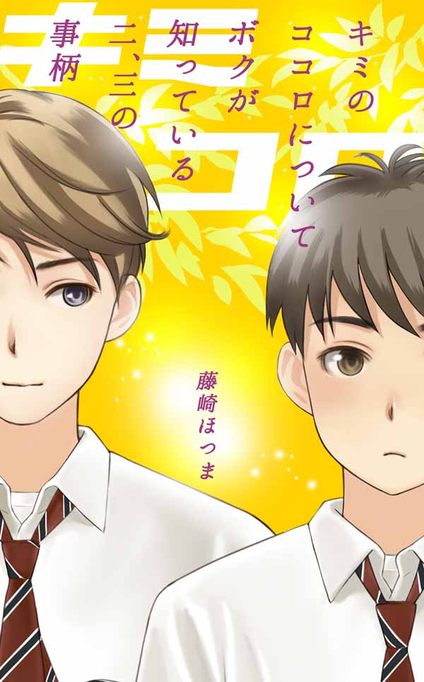
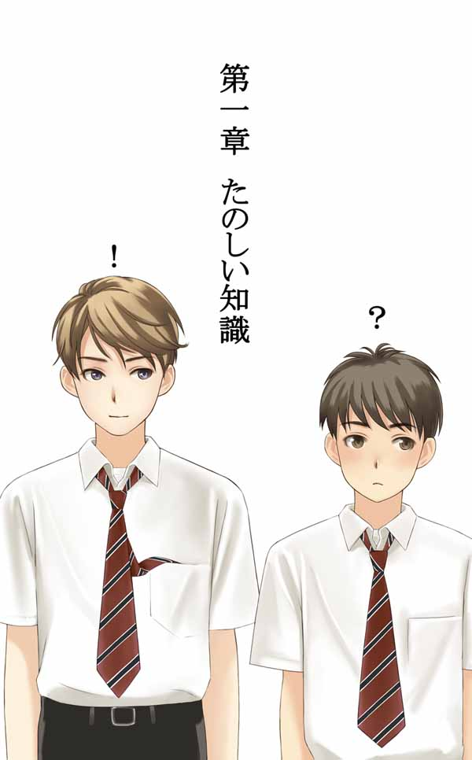
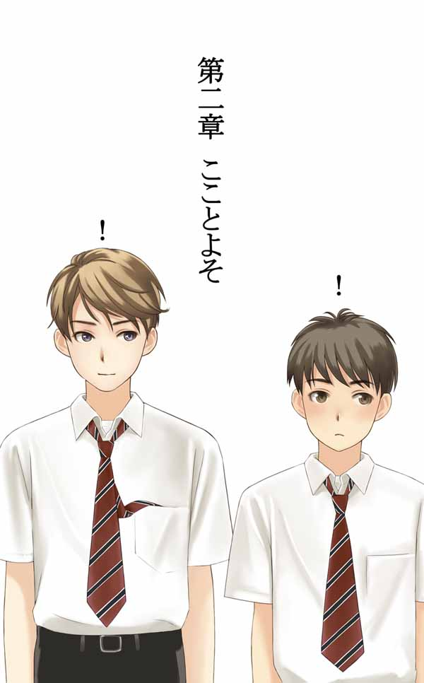
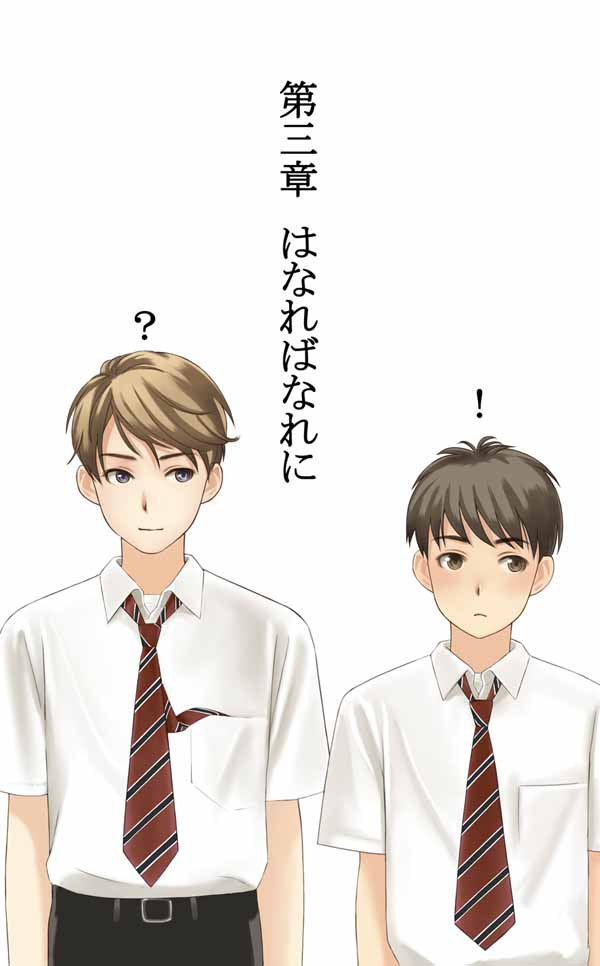
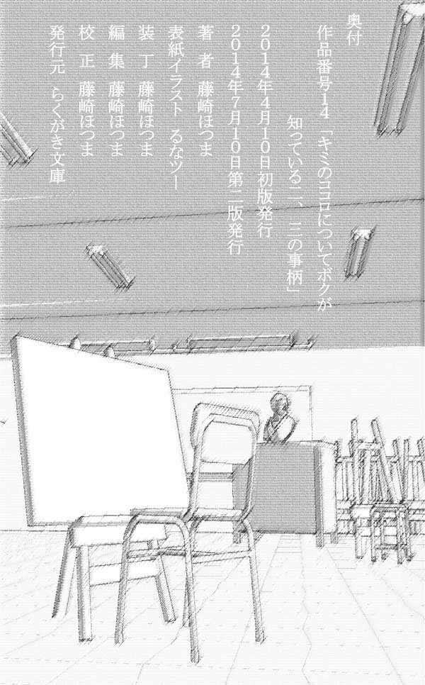

| キミのココロについてボクが知っている二、三の事柄 | |
| 藤崎 ほつま | |
| Rakugakibunko (2014) | |
キミのココロについてボクが知っている二、三の事柄
藤崎ほつま

注意
本作品の全部または一部を無断で複製、転載、配信、送信、ホームページ上に転載することを禁止します。
本作品にて使用されているイメージ画像または文章は、再ダウンロード時に予告なく変更される場合があります。
この本は縦書きでレイアウトされています。
また、ご覧になる環境により、表示の差が認められることがあります。
本書に登場する人物名・団体名・描かれている内容は架空のものです。実在する商品名、団体名、個人名などとは一切関係ありません。
表紙フォント 高橋としゆき（Graphic Arts Unit） Typing Art
第一章 たのしい知識

１―１
無遠慮に開け放たれたドア。
予想していた顧問の先生ではなかったことに不意を突かれ、思考が直ちに追いつかない。
緊張を飲み込み、絶句。
「山神先生なら当分帰って来ないよ。職員室で近藤と話し込んでる」
問われてもいないのに応えると、闖入者は頓着なく室内へと足を踏み入れた。なんら攻撃的な素振りを見せているわけではないのに、思わず身が硬くなる。話慣れた相手ではない、ただそれだけの理由に戸惑ってしまう。
彼は、目を細めて敵意がないことを示しつつ、物珍しげにヴィーナスの石膏像やガラスの花瓶などを眺めながら近付いて来た。
「そんなに身構えなくても良いよ」
「ナニ？ 珍しいじゃん、こんなところに来るなんて。皆と打ち上げにいかなかったのか？ お前、クラブに入ってないだろ？ なんでまだ学校にいるの？」
必要以上に言葉を重ねてしまう。少し攻撃的になってしまったが、思ったよりもスムーズに声が出ていることに半ば安堵しながら。
「今、この校舎にいるのはボクたちくらいかな。それこそ、キミがここにいるのは何故さ？」
「課題が......、気になって居残りしてるんだ」
「課題が、ねぇ......」
まるで信じていないのだろう、柔和な微笑が呆れ気味に崩れる。止まっていた鉛筆を再び動かして、取り繕ってしまったのも失笑を買ったようだ。
「......オレのことはどうでもイイだろ。何の用だよ」
「入部希望なんだ」
思わぬ答えに声が上擦ってしまう。
「絵に、興味あんの？」
しかも一学期も終わろうという、今頃になって。
「絵は......、強いて言うならフランシス・ベーコンが好きだけど、自分で描くつもりはないし、ま、この時期になったのは成り行きだね」
描く気がないのなら、何のために入部するのか。
「色々と事情があって。入部した方が、都合が良いかと思ったんだ」
「都合って何だよ？」
答えずにニヤニヤと笑うだけなのが鼻につく。
「じゃあ、山神先生に入部届けを提出すりゃ良いだろ」
「それを出して来たところなんだ。さぁ、これでボクがここにいる正当な理由ができた」
いかにも建前で入部しましたと言わんばかりの物言いに閉口する。意図がさっぱり分からない。
芝居がかった晴れ晴れとした表情で室内を見回しながら、
「思ったよりも広いな、この部屋。こんな風になっていたのか」
どこか懐かしむような口調だ。選択科目で一緒になった覚えはない。美術室が珍しいとみえる。
「しかし、ニオイってのは慣れると気にならなくなるものなんだね。このシンナー臭を意識しないなんて」
窓際まで歩を進めると、勝手に窓を開け放った。涼しい風が入り込み、淀んだ空気を押し流していく。
同時に、遠くの蝉時雨が聞こえ、中庭にいる吹奏楽部の演奏が混ざり始める。空気がくるりと入れ替わるのを実感する。
窓の桟に手をかけて外を眺めていた彼が、感嘆の声を上げた。
「元気だなぁ、水泳部。あの速いのは誰だ？ 江藤さんかな？」
微かに耳を打つ水音を意識して、動揺を隠すために問いを重ねた。
「何だよ、ホント。なんなの？ 何がしたいの？ 都合が良いって？」
「うん、実はキミに話があるんだ」
「はぁ？ 入部してまで？ ......んなわけないか、ナニ？ さっさと言えよ」
「どう切り出したものかと考えてるんだ。こうやってキミと話すのって、初めてだから、これでも結構、緊張している」
彼でも緊張することがあるのか。でも、その度合いではこちらも負けてはいない。スクールカーストの最下層が、彼にタメ口をきいているのも恐る恐るなのだ。
口元が緩む。嫌味なくらい爽やかな表情。そうやって余裕綽々で、ほとんど初対面の相手と話せるのなら世の中、生きやすいのだろうな。
「伝染するんだよ、緊張がね。早く終わらせたいのは山々なんだけど、段取りってものがあって」
「それ、シリアスな話？」
「シリアスと言えばシリアスだが、笑うしかない冗談とも言える」
「もったいぶらずに早くしてくれないか」
「お互いにショックを受けないように、配慮しているつもりなんだけど」
回りくどい言い回しを止めるつもりはないらしい。しかも既にあまり愉快な話ではないことは確定している、と。
「受け入れればそれほどイヤなものでもないと思うよ」と殊更涼しげに付け加えてくる。
「じゃあね、まずは、そうだな、例えば、それ」
「これ？」
「何を描いているのか当ててみせようか？」
目の前のキャンバス。
彼は美術室に入って来てから、そのまま窓際まで移動しただけだ。この絵を確認するにはオレの背後に回り込まなければならない。今はキャンバスの背しか見えてはいない、はずだ。
「馬だよね。先週のスケッチで描いた下絵の仕上げをしている。携帯電話で撮った写真を元に色を塗るんだろ」
「よく分かったな、スゴイスゴイ」
だからなんだというのだ。更に詳細なホームズ気取りのコールドリーディングでも聞かせてくれるのだろうか。優等生の自己顕示欲に付き合うのはうんざりだが、それで気が済むのならさっさと終わらせてもらいたい。
「推理なんてする必要はないんだ」
窓際から離れて、棚に並べられた油皿や筆立てを手に取る。その意味のない間の取り方がいちいち癪に障る。
「次は、そうだな、昨日の夕食、いってみよう」
「当てるの？ それは結構、難易度高いだろ」
「ウナギの蒲焼に、なめこの味噌汁、きゅうりとタコの和え物、トマトサラダに冷奴。普段よりは少し手の込んだメニューだね。お父さんが早く帰ってくる日だったからかな。一昨日はエビチャーハンと鶏ガラスープのみだった」
狼狽が顔を覆っていくのを意識しながら脳内を検索。情報源として考えられるのはまず妹、彼女に接触のあるクラスメイト、次に親の仕事、交友関係。
「無関係だよ。キミの妹さんやその友達に面識はないし、ご両親も同様」
「盗聴か監視カメラ......」
「現実味がないと分かっていながら、そうとしか考えられない？ キミを監視して何のメリットがあるのさ？」
言われるまでもない。オレ自身はもとより家族の構成員全てが「普通の人々」、極ありふれたサラリーマン家庭でしかなく、社運を左右する企業秘密が家内に隠されているわけでも、変質者の覗き見衝動を満足させるような美男美女でもない。
「......どういうことだ？」
「どういうことだろうね？」
質問に質問で答えるなと返したいところだが、混乱して声が出ない。肝心な時には役立たず、だから「言葉」は信用できない。
「とても単純なことだよ。混乱するほど複雑なことじゃない。ただ、単純すぎて衝撃的かもしれないけどね」
昨夜の夕食の内容を知るには？ 監視カメラも盗聴マイクもなく。「単純」に、彼自身がうちの食卓に着けば良い。まさか。当日はもちろん、彼が我が家を訪れたことなど一度もない。ならば、確かに「単純」だ。彼が嘘をついているのだ。オレの家族の誰かから情報を得ているとしか考えられない。
「違うね。嘘はついていない」
矛盾している。その言葉を信じるならば、オレは混乱から抜け出せない。そもそも謎かけを楽しむ余裕など最初からこちらにはないのだ。苛立ちが募ってくるばかり。
「お前まさか、他にも？ 昨日のこと、夕食以外に何を知っている？」
「キミの知っていることなら何でも」
何でも？
「そう、何でも。夕食時に見ていたテレビのニュースでは例の連続殺人犯の特集が組まれていたし、妹さんのバイト先の先輩が男性恐怖症で接客に難があるとか、お父さんが医者にプリン体の摂取を禁じられたために好物のエビフライを何年も食べていないとか、お母さんが洗濯物の取り込みを忘れていたのを隣の奥さんが知らせてくれたとか。さらに詳しく昨夜の食事中の話題を並べ立てようか？ それだけじゃない、夕食後、キミが自室に戻ってしていたこと」
「ちょっと待て！」
声を荒げて、膨れ上がった狼狽を発散する。それだけでは耐え切れず更に暴発しそうなソレを慎重に抱きかかえながら、ゆっくりと息を継ぐ。
「お手上げだ、分からない。まさか、テレパシーとかそんなＳＦ設定なわけじゃないだろ？」
面白くもない冗談だと、ごく普通の対応として切って捨てたつもりだった。しかし鼻で笑ったオレを見つめる彼は押し黙り、その沈黙に気圧される。
あり得ない！ とまずは叫んでみる。心の中で。
「ありえるから困ったものだよね」
我が意を得たりと、微笑む彼。
「そんなバカな、んなことって......」
「バカバカしいだろう？ ボクだってそう思う。でも、とりあえず事実だけを認識してもらうより他はない」
マンガや小説の世界と混同して、非現実的な妄想に浸る中学二年生の戯言としてならば、バカバカしいのは確かだし、もう既に大学受験も本格化し始めている高校二年の夏、未だに中二気分に浸っていれば、バカバカしいを超越して末期の神経症を心配した方が賢明だろう。しかし、ソレを妄想ではなく、現実として認めてしまうとなれば、話は全く別の次元へと飛躍するしかない。
涼しい顔で「困ったものだ」とひとりで納得されても、オレ自身が今現在、被っているこのプライバシーの侵害を、バカバカしいの一言で片付けられてはたまらない。妄想ではなく現実に、ソレは起こっている。
こういう場合、どうすれば良いのか、当然、経験したことのない未知の脅威であり、対抗策などあろうはずもない。
彼を批難するより先に、あわよくば即座に逃走した方が良いと判断して、思わず腰を上げそうになったその刹那には、いつ移動したのか、彼が行く手を阻むかのように出入り口を背にして佇んでいる。逃げたくても逃げられない、フィクションでしか知らない荒唐無稽な能力と対峙して、採れる行動など限られている、すなわち、怯えて震えているしかない。
「獲って喰おうなんて考えてないよ。妖怪やバケモノじゃあるまいし」
「まんまバケモノじゃねぇか！」
罵声を浴びせても何ら怯む気配はなく、相変わらずの笑顔が不気味に歪んで見える。クラスメイトが超能力者であった、という衝撃の事実は、オレの内心を踏み砕き猛威を振るい収まる気配はまるでない。
「当然の反応だからさ。予想の範囲内ってこと」
平然と内心の声を読み取って答えてくる。驚愕する前に、待て、先程からの会話において、何度となく、彼はオレの言うことを先読みして応じてはいなかったか？
「気付くの遅いよ」
「お前、そんな力があるなら......」
下世話なことだが、真っ先に思い起こしたのは、終わったばかりの期末試験のことだった。確か、彼はいつもテストで学年上位を占めていたはずだ。
「あれ？ 羨ましい？」
明らかな不正行為、卑怯者、反則ワザ。
「そうでもないよ。キミの思考が読めたからと言って、テストの点数に貢献するわけじゃない」
笑顔は崩れない。こちらは頭がくらくらする上に動悸、息切れ、眩暈までしている。
「それは困るな。キミが気分を害すると、ボクにも影響が出てしまう。頭がくらくらして、心臓が早鐘を打ち、呼吸も荒くなってきた」
本気なのか怪しまずにはいられない芝居がかった苦悩の声。
「困っているさ。自分の感情とは無関係に、他人の〈困惑〉が染み付いてくるのだからね。いつまでも頭の中で鳴り響いているジムノペディみたいな」
信用しろって言うのか？
「信用するしかないでしょ。キミ、さっきから喋らずにボクと会話してるじゃない」
ひたすら、目の前のキャンバスを見つめる。荒れた白い地に、鉛の粉末が付いてのたうつ線を形作り、それが連なって繋がって、更に大きな輪郭となり、骨格から徐々に筋肉を付与し始めると、四足歩行の動物らしさがところどころにまとわりついて、やがてそれが駈け出すことで初めて「馬」だという確信を得られるようになり。
「何も考えない努力をしても無駄だよ。今のキミは雑念の塊だし、集中力を欠いているから」
分かった。
とりあえず、認めよう。その上で疑問が満載なのだが、それには答えてくれるのだろうな？
「追々ね。そうだな、今はひとつだけ答えておこうか。ボクがここに入って来た時から気にしているだろう？ キミのカバンの中にコンパクトサイズの双眼鏡が入っていて、この時間帯にはいつも美術室にひとりでいるってこと。更衣室の着替えを覗いているわけじゃないけれど、あまり人には知られたくない秘密ではあるよね。特に、今、泳いでいる江藤さんには」
汗が一気に引いていく。再びキャンバスを見つめるが焦点が合っていない、合うわけがない。
「ボクはキミを脅迫するつもりはないんだ。ただ、実際に不可能であるのと、可能であるにもかかわらずしないのとは意味が違ってくるよね。キミはボクを退けることができるけど、その際には相応のリスクを覚悟しておかねばならない」
それを脅迫ではないと言い張るつもりなのか。
「信頼関係と言って欲しいな。核抑止力と同じ理屈だよ。ただ一方的な武力差があるだけで」
「もういい」
目的はなんだ？ 何のためにここにいる？
「差し当たっては、キミの家にいきたいんだ。キミの友達として」
もう一度問い直す。キューバ危機は何年だって？
「うん、まぁ、そう怒らないでよ。悪気はないんだから」
ニホンゴ、分かっているのか？ 悪気の意味。しかも言うに事欠いて友達だと？
確か、彼の母親は西欧人だったはずだ。でも、帰国子女とは聞いていない。日本語はオレよりよほど流暢だ。
「キミの定義している悪気と、ボクの想定している悪気に、それほど差異はないはずだけどね」
オレからの正真正銘の悪意をひらりと受け流している彼の顔を見ていると、何か得体のしれない人型の影が茫洋と揺らいでいるように思えてくる。
「怯えなくても良いよ、ボクは悪人じゃない」
自分からそう宣言するヤツは詐欺師と相場が決まっているのだ。どす黒いオレの「最悪」感を読み取ったのか、彼は悪戯っぽく口元を緩めて近付いて来る。
硬直するオレの背後に回り込み、今更ながら声を低めて耳元に囁く。
「やっぱりね。全然違う。この絵、印象がまるでさ。キミは自分の能力を過小評価していないか？」
動揺に翻弄されて、彼の言葉が像を結ばない。
「褒めているんだよ。ボクはキミの絵が好きだ。一度も見たことがなかったけれど、こうして直接見れば、きっと、良い絵に違いないと思っていた。期待通りだったよ」
その賛辞を、素直に受け止めるだけの余裕は、今のオレにはなかった。
１―２
「新城くん」
当然のことながら、その呼びかけの行く先は、颯爽と肩で風を切って数歩先を進む「新
城
明
依
」に他ならず、オレは言葉通りの意味で「お呼びではない」。
粉
雪
硝
子
は、自転車置き場へと向かっている「通行人Ａ」を追い抜き、振り向いた新城の側に駆け寄る。やや息を切らしつつ小首を傾げた上目遣いは「可愛らしさ」と「媚」を紙一重で行き来する、絶妙のバランスを保っていた。
「どこへいってたの？ 新城くんがいないから、あたし抜けてきちゃったよ」
打ち上げは、確かお好み焼き「てらまえ」の座敷を貸し切って行われているはずだから、彼女はわざわざ駅前から引き返して来たということだ。
「ごめん、ちょっと彼と話し込んでいて」
新城が顎で指し示す先に所在なく佇む「通行人Ａ」を初めて認めたのか、その呆けた表情には「誰？」という一文字が浮かんでいる。クラスメイトの名前くらい覚えておいてもバチは当たらないと思うのだが、当たらないバチには何の畏怖も抱くことはないのだろう。
「市原
くんだよ、美術部の」
「うん、市原くんね。美術部の」
もちろん知っていたわよ、という顔をされても今更だが、そのことを咎める気力もなく、むしろ無理もない。彼女と正面から顔を見合わせたのは、おそらく今日が初めてだ。
ふたりの注視に晒されたオレが気の利いた挨拶を発することもできず、黙って口元を引きつらせただけでは会話が弾むわけもなく、粉雪は再び新城へと向き直る。
「これからてらまえに戻る？ みんな待ってるよ」
「いや、市原くんと帰る」
「え？ なんで？」と厚めの唇を尖らせて、次は鋭い視線が飛んできた。大いに不満があると見えるが、こちらはそれ以上に不本意なのだから、責められる云われはない。
「ごめんね。大事な用事なんだ。今度また埋め合わせするよ」
「あ、じゃあ、今度どっかいかない？ 夏休みとか。......他の皆も一緒に」
一瞬の躊躇の後に、自分ひとりではないことを付け加えるのが戦略的。
「考えておくよ」
終始にこやかな新城の対応に満足したのか、粉雪硝子は「きっとね！」と念を押して校門へと戻っていった。彼女の背中を見送りながら、つかの間の沈黙の後に新城がポツリと口にする。
「そういえば、粉雪硝子って名前だったね、彼女」
「覚えてなかったのか？」
「うん、興味ないから」
粉雪硝子が新城明依と会話している姿を教室で何度も見た。新城の傍らに集まってくる取り巻きのひとりという印象だったが、彼女はいつも笑顔で楽しげに見えた。名前すら覚えてもらえない「少女Ａ」。
「へぇ」と彼は気の抜けた息を吐く。
「かわいそう、って感じるんだ。そんな風に考えたことはなかったな」
「お前、そういう性格だったの？ いつも人の良さそうな顔して周りに愛嬌振りまいて......」
「ソレだよソレ。キミには、そう見えているというのが、とても新鮮で興味深くてね」
どういう意味だ？ 皆から好かれている優等生、満場一致のクラス委員長にしか見えないのだが。
新城が噴き出した。
「キミの方こそ、興味のないような素振りをしながら、クラスメイトの名前は良く覚えているよね。一度も話したことのない子まで」
「名前を覚えているのは礼儀だろ」と言い訳がましく口にした後、顔が充血していくのを舌打ちで誤魔化した。
「江
藤
凛
の名前を覚えてしまっただけで、クラス全員の名前を覚えなきゃならない、って思い込むのは、どういう心理の働きなんだろう？ カムフラージュにしても随分と手間のかかる照れ隠しだよね」
否定の言葉が飛び出そうになるのを押し留める。挑発に乗ってはいけない。
「女の子、苦手なんでしょ？ まぁ、渾身のラブレターが翌朝、掲示板に張り出されて笑いものにされちゃあね、トラウマになっても無理ないさ」
「あのさ、お前がどのくらいオレのことを知っているのか知らないけど、そうやって見透かした言い方するのやめてくれないか？」
冷静な口調を努めたが、小学校六年生の恥を蒸し返されてはかなわない。こちらの怒気が臨界ギリギリにまで達していることは、心が読めなくても察するくらいはできるだろう。
肩をすくめて「ごめん」と一言。
「何度も言うけど、悪気はないんだ。ただ、なんと言えば良いのかな、一番近い感情は......、そう、親近感......？」
今日、さっきまで、碌に話をしたこともない人間に「親近感」を抱かれても困惑するだけだ。
「キミはそうだろうけどさ。ボクは、なんと言うか、小さい頃からのキミを知っている幼馴染のような気分でね。もしくは年の離れた弟を見守るような」
「同い年だろうが」
「自然と保護者目線になっちゃうんだよね」
不愉快だ。端的に。
「お前、粉雪さんの心も読んでいるのか？」
「お、鋭いね。よく分かっているじゃないか。そう、彼女の心は読めないよ」
鋭いも何も、彼女の心も読めているのなら名前を知らないのはおかしいし、さっき自分で言っていた。この能力は「テストの点数に貢献するわけじゃない」。
現代国語以外は極めて平凡なオレの学力には何の有用性もない。ちなみに彼や粉雪硝子はクラスでも一、二を争う優等生だ。
「つまりオレだけ、ってことだろ？」
「正解。他の人の心は読めないんだ。キミ専用のホットラインってところ」
その言い回しに怖気立つ。
「いつから分かるようになった？ オレの心の中」
「一年前かな」
「い......って、お前......」
絶句の間に、この一年の記憶がフラッシュバック。思い出のカードをシャッフルする先には、高校一年の中間テストが終わった直後の、ある事件がピックアップされる。
「アレは痛かった。酷い怪我を負わなかったのが幸いだったけれども、それ以上の奇跡が起こったというわけだね」
急いで駆け下りた二階の踊り場に新
城
明
依
がいて、運悪く正面衝突、そのまま仲良く階段を転がり落ちる。ふたりとも気を失って保健室へ運び込まれたが、数分後には目が覚めて、コブが出来た程度で他に異常は見当たらず、念の為に後日病院で精密検査も行ったが心身ともに健康であることを保証されて済んだ、そんなことがあった、確かに。
「オレは何ともなかった」
「ボクは面白いことになった」
あれから一年。ずっとオレを観察し続けていた？
その期間の長さに戦慄したが、彼はそれを無視し、オレの自転車を指さした。
「後ろに乗せてもらうよ」
拒否権は初めからない。読心術が眉唾モノだとしても、彼がオレのプライベートに精通しているのは確からしい。へそを曲げられて、思い出したくもない過去を周囲に吹聴されでもしたら、相当のダメージだ。
「それが賢明だと思う」
思考を見透かして相槌を打つ彼の態度に憤りを覚えながら、誰もいない自転車置き場のトタン屋根の下から、自分の自転車を引き出す。
当たり前のように荷台をまたいで腰を下ろす彼。その重さによろめきながら、ペダルをこぎ始める。
亜麻色の髪や色素の薄い肌はいやでも目立つ。そんな男を後ろに乗せてのふたり乗りは、できれば勘弁願いたかった。幸い、オレの家は最寄り駅とは別方向だし、期末テストから解放された午後には学生の姿もまばらなので、クラスメイトと接触する可能性は低いだろうが、街行く人々の視線が嫌でも突き刺さる。
そんなオレの気を知ってか知らずか、いや知っているに違いないのに、彼自身は何処吹く風の口笛まで吹いている。
数メートル先に警察官の姿が見えると、スピードが落ちたタイミングを見計らって、彼は何も言わずに荷台から降りた。オレもサドルから腰を上げて、並んで歩く。横を通り過ぎた時、警察官はオレたちに一瞥をくれただけだった。角を曲がって姿が見えなくなれば、直ぐに荷台を掴んで座り直す新城。
「ふたり乗りって、注意されるの？」と今更聞いてくる。
「普段、自転車に乗らないのか？」
場合によっては罰金もとられるはずだ。
「従妹を後ろに乗せて走っても、警官に注意されたことはないなぁ」
「小さい子？ 自転車に専用のチャイルドシートを設置してあるんだろ」
「それそれ。アレは良いんだ？」
そんなことは今まで考えたこともなかった。
「幼児は荷物扱いなのかな？ バスの料金がタダになるようなものか」
彼の呟きに気を取られていて周囲への注意を怠っていた。赤信号で停車した対面に、信号待ちしているクラスメイトの姿が目に入る。
しまった、という思考は、新城の興味を促した。オレの背中越しに目線を前方へと投げる。
今更、方向転換をしては逆に強い印象を与えてしまう、と言うより、なぜ逃げ隠れしなければならないのか。反発を感じつつ、しかし新城と一緒にいるところをあまり見られたくはない、そんな逡巡も相手が葛
森
臣
夫
であることに気付くと、オレは落ち着きを取り戻した。
スラックスの裾が縦に裂けていて、生白い脛がチラチラと見えている。それだけでなくズングリとした夏服姿は全体的に薄汚れているのだが、彼自身は気にしている様子もなく、こちらに顔を向けていても、何ら感情が浮かんでいなかった。
安心すると同時に気不味くなって目を逸らす。
信号が変わって横断歩道の真ん中で葛森とすれ違っても、こちらにまるで関心を抱いていないようだった。
葛森の姿が見えなくなると、ほっと一息をつく。
「キミといると何もかも新鮮に思えるよ」と笑う新城。
どうせ葛森のことも知らなかったのに違いない。彼のクラス内での地位は粉雪硝子とは比べ物にならないほど低く、決して目立っているとは言えない。それこそ、オレ自身よりも。
ふと同情の念が湧いてくるが、新城には理解できまい。むしろ物珍しく「新鮮」な知識や体験として消費するだけだ。こうしたオレの無言の批難は、彼の読心術を信じるならば、有言の批判であるはずだが、それをどう受け止めたのかは分からない。後ろの荷台で涼しげな顔をしている彼を、振り向いて確認する気にはなれなかった。
やがて自宅が近付いて来ると「うわぁ」と背中から感嘆の声が上がる。
「なるほどぉ、こういう街並みだったのか。驚いたなぁ」
ひとりで興奮気味に煽り立てる彼に眉をひそめる。
「いや、どう伝えれば分かってもらえるかな。あぁ、例えれば、ユトリロの絵でしか見たことのないコタンの袋小路へ直に足を踏み入れた時の感動、というか」
オレに合わせたつもりなのか、妙な喩えを持ち出してくる。それなら我が家はさしずめ聖マルグリット教会といったところか。数区画をそのまま進むと、教会とは似ても似つかない無味乾燥な四角い箱、オレと家族が住むマンションが見えてくる。
どんどん気が滅入ってくる。この時間帯なら、まだ家族は誰も帰って来てはいないだろうが、用件に手間取れば、コイツと鉢合わせる可能もなくはない。
コンクリートの塀に嵌めこまれた「エトワール九瀬」の文字を確認すると、新城はまた無言で自転車から降り立った。言わなくても指示が通じるというのは中々便利だな、と脳裏をかすめて舌打ちする。不覚にもほどがある。
裏手の自転車置場から戻ってくると、彼は、感無量といった面持ちで建物を見上げていた。釣られて視線を上げても、薄汚れた白い壁にベランダが並んでいるだけで、何の変哲もないマンションだ。感動する理由がさっぱりわからない。
一頻り見わたして満足したのか「さ、いこう」と率先してエントランスへと向かう。「おい」と呼びかけた直後には、オートロックの暗証番号を入力し終えて、カツン、とロックの外れる音がする。
唖然とするオレを置いて、ドアを押し開きマンション内部へと足を踏み入れた。勝手知ったる他人の家、のワケがない。初めて訪れたはずなのにコイツ、ホントにオレの思考を。
「まだそんなことを疑っているの？ 意外と頭が硬いな」
「そう簡単に受け入れられるか。テレパシーだぞ？ むしろ正気を疑いたくなる」
「だって事実じゃない。まずはそれを受け入れてから建設的に考えなよ」とエレベーターに乗り込み、わずかの迷いもなく五階のボタンを押した。
もう、好きにしてくれ。
１―３
流石の新城も物理的な鍵が掛かっていれば自由に室内へと入ることはできない。断るまでもなく当たり前の話だが。
「５０２」の表札を確認してから期待に満ちた眼差しをこちらに向けてくる。散歩の催促をする大型犬じゃあるまいし。野次馬根性まるだしの嬉しそうな顔に呆れつつポケットから鍵を取り出す。
「あれ？」
鍵穴に鍵を入れる必要はなかった。ノブをひねるだけで無抵抗に開く玄関のドアを、直後に閉じる。
「今日はやめておこう。そう、母さんが鳥インフルエンザで寝込んでいるんだった、感染力抜群、お前に感染ると生死に関わる」
「キミに拒否権はないんだろ？ ボクは今日、ここで、キミと話がしたいんだ」
嘘に何の効果もない、冗談にも牽制にすらならない、全て筒抜けというのは厄介だ、改めて思う、本当に厄介だ。
渋っているオレの手に重ねてノブをひねり、開け放たれたドアの奥へ「おじゃましまーす」と気楽な調子で声をかけながら踏み入る。
薄暗い室内は、いつもの帰宅時の状況だが、テレビの音が漏れ聞こえている。嫌な予感が的中した、と思う間にリビングへの扉に嵌めこまれた磨りガラスが人影で暗くなった。
「ナルミ兄ちゃん？ 帰ったの？」と扉を開けて姿を現した妹は肩紐のランニングシャツにホットパンツというラフな部屋着で、それこそ見慣れた格好ではあったが、新城の姿を確認した瞬間、「へあ」と間の抜けた叫びを発して身を隠した。
「おじゃまします。こんにちは、妹さんだね」
怯えて無言のまま壁から顔だけをのぞかせて彼を凝視する。時間が解凍する数秒。
「新城
さん？ 新
城
明
依
さん？」
なぜ名乗ってもいない彼の名前を知っている？ と疑問に思う前に学内における彼の知名度に思い至った。一学年下の生徒にもその名が轟いていようとは。
「初めまして、新城明依です。妹さん、カワイイね、やっぱり実物は違うな」などと余計なことを付け加える。
「なんでなんでなんでなんでなん」と興奮のあまりほとんど涙声で繰り返すも、その問いかけるべき相手であろうオレは新城の後ろに立っている。詰め寄ることもできず、その場で足踏みをするしかない。
「なんで」かは、まずオレが聞きたい。
「部屋、いこうか」
面倒臭くなるまえに、さっさと済ませてコイツには早急にお引取り願おう。話がしたいというのなら、してやろうではないか。オレが促すと新城は、躊躇なく直ぐ横のドアを開けて中へと入った。標準的な間取りの廊下に面した４つのドアの、うち一つがオレの部屋であることは自明だが、四分の一の確率でそれを当てたわけではないのだろう。「憮然」が顔に張り付いたまま剥がれない。
「おぉう、これまた感動的だなぁ」
開口一番、雑然とした小汚い一室に対する感想がそれか。いい加減、その調子でいちいち感嘆するのはやめてもらいたい。
「そして、勝手に本棚をいじるな」
「この雑誌の裏側に良いものがあるんだよね～」
今更という気もするが、あえてここは強く言っておかねばなるまい。こちとら健康な十七歳の高校男子だ、相応の嗜好もある、勝手に頭を覗いておきながら、それをからかわれる謂れはない。
「怒るぞ、本気で」
「冗談冗談、悪気はないんだ」
口癖になりつつある「悪気はない」。誤魔化すように笑顔を作りながら、新城は傍らのベッドに腰を下ろした。オレは机の椅子を引き寄せて座る。
さぁ、何を話そうというのかな、どうせ面白くもないことに決まってはいるが。
「じゃあ、ま、最初に概要でも話しておこうか。それでボクが感動する理由が大体分かってもらえると思うから」
「好きにしてくれ。もうオレには理解の及ばない現象が起こってんだ」
彼は頷くと、さて、と前もって準備していた原稿を読み上げるかのように滔々と話し始める。
「最初は言葉だったんだ。断片的な声が頭のなかに響いてくる。強く打った後遺症かと最初は思ったのだけど、やがて意味が通るほど明瞭な言葉の連なりになってきてね。まるで自分の頭の中に、もう一人の別人格が生まれたような感覚だった。当然、頭がおかしくなったのかと考えるよね、でも、ま、それでも良いかって、ボクは思った」
不安にならないのか。彼もオレと同じように、念の為の精密検査を受けたはずだ。なのにその異変を医師に訴えなかった。楽しげに自らの狂気を受け入れる心理に、思わず背筋が寒くなったオレの思考を無視して彼は続けた。
「その内、言葉がね、やたらと具体性を帯びていることに気付いた。数学の岡山先生や、美術部顧問の山神先生、クラスメイトのその他諸々、当時のボクにはあまり馴染みのない人たちが沢山出てくる。どうやらこれはボク自身の記憶を元にした妄想ではなさそうだ、と勘繰ってみれば、直ぐに思い当たったよ。あの階段で正面衝突をした隣のクラスの男子生徒にね」
彼はとんとん、と自分のこめかみを人差し指で叩いた。
「キミの思考がボクの頭の中に入ってくる、そう理解すると、一気に流れ込んでくる情報量が増えた。いや、量は変わらないかもね、それまではボクが咀嚼できなかっただけなんだ。キミと同じ物を見ていることに気付けば、有象無象の表象に、色がついたり形になったりし始める。そうなると、キミがいちいち何を考えているのか、興味が出てきてね。特にボクが好奇心旺盛というわけじゃないと思うよ？ 他人の思考を覗けるなんて、そんな機会を持つこと自体が奇跡的なんだ、興味を持たない方が無理ってものだろう。他人の思考をトレースできる不思議な感覚を、まぁ、キミには悪いけれども、ボクは密かに楽しんでいた。二年になって同じクラスになった時には嬉しかったな。一年間、観察を続けて、キミのことは充分に理解しているつもりだったけれど、直接本人を見かけるのはほんの数回だったからね」
結局、出歯亀の悪趣味じゃないか。それで好意的とは聞いて呆れる。
「で？ なんでずっと秘密にしていたノゾキ行為を、今更オレに打ち明ける気になったんだ？」
「さて、それなんだけど。ボクは、確かにキミの心が読めるんだけども、何でもかでも読めるわけではないんだ。限界がある」
「ほぉ」
思わず身を乗り出す。興味深い。オレが最も気になっているところだ。
「ボクは、見るもの聞くもの触るもの、つまり五感だね、これらをキミが感じると同時にリアルタイムに感知することができる。しかも距離はほぼ無制限、障害物による受信困難は今まで感じたことはない。ある意味、二十四時間、四六時中、ボクはキミの思考をトレースすることができるし、喜怒哀楽などの感情もフォローできる。おまけに過去の記憶なども読めるのだけど......」
「お、おい」
改めて宣言される衝撃的な事実。忘れようとしていた羞恥心が一気に湧き上がる。
それってオレの「全て」ってことじゃないのか？
「全てか、と問われれば、ある意味ではそうだけど、ある意味ではそうじゃない」
どういう意味だ。
「例えば、キミがレモンジュースを飲む。すると、ボクもキミの飲んだレモンジュースの味をトレースできるんだけど、もしキミが飲んでいる液体がレモンジュースではなく、オレンジジュースだったとしたら、ボクには気付くことができないんだ」
「なに？」
例えが悪いのか？ よく意味が分からない。
「例その二。テレビでオードリー・ヘップバーンの映画が流れているのをキミが見ていたとして、キミが彼女をオードリーだと思い込んでいる限り、ボクには彼女をオードリーとしか思えないんだよ。本当はビビアン・リーだったとしても」
つまり、それはどういうことだ。
「要するにね、キミが意識したことしか、ボクには分からないってことだよ。キミという身体をフィルターとして世界を捉えている。キミによって、ある意味では歪められた事物のみ、ボクは感じることができるってこと」
「意識したことだけ？」
「ボクにはキミの過去を知ることができる。しかし、それはキミが過去の出来事を思い出した瞬間、記憶から引き出されたソレしか分からないんだ。キミの全ての過去をあらかじめ知り尽くしているわけではない」
ふと、昨日の夕食の件を思い出した。
「そう、そんな感じで、意識のまな板の上に載った食材だけを吟味
できる、ってわけ」
何となく、分かってきた。
「意識したものだけ、なら無意識の領域には立ち入れない？」
自分で言いながら「無意識」の概念も、その領域の範囲もよく分かっていない。
「例えば、心臓の音とか。普段、キミはそんなモノには全く意識を向けていないだろう？ 今、ボクが指摘したから耳を澄ませているが、そうでなければ無いも同然。そういう事物はボクには感じることはできない」
「でも、オレの生活の大部分は把握できるってことだろ？」
「無意識を甘く見ちゃいけないな。キミは気付いていないだろうけど、生活の大部分は無意識によって成り立っているんだよ。キミは朝起きた時、目覚まし時計のアラームを切ったり、着替えたりするだろ？ 顔を洗ったり歯を磨いたり。そのいちいちの行動を意識して行なっているかい？ 大体は、それらの行動をしながら、全く別のことを考えているんじゃないか？ まぁ、ボクの観察を踏まえて、全く別のことを考えていた、と過去形で断言しても良いのだけれど。この部屋の間取りにしてもそうさ。大体の構造は意識しているが、細部にまで視線を這わせてはいないだろう？ 何処に何があるのか、その気にならなければハッキリとは覚えていないはずだ。つまりね、意識なんて、行動の節目節目の一瞬、人間にとってほんの極僅かな時間でしかないんだよ」
そう言われてみれば、いちいち洗面所の場所を探したり、歯ブラシの毛先を確認したり、水道の蛇口の捻り方を考えたりはしない。もし見知らぬ部屋だったなら、そういう事態もあり得るが、日常生活においては当たり前のこととして対応してしまう。
「当たり前のことは、オートマチックに無意識が処理しちゃうのさ。世界の大部分は無意識で成り立っていて、意識はほんの少しだけその表面を撫でているようなものなんだ」
改めて新城の整った面影を見る。柔らかそうな亜麻色
の髪に、やや吊り目で、今、初めて気付いたが、瞳が灰色だった。
「そう、それで、キミの中にあるボクの外見がまた詳細になる。瞳は灰色、という属性がひとつ加わった。それまでは単に黒い眼だったのにね」
意識していないものは、無いも同然......。
「キミというフィルターを通した世界では、ね。キミが幾ら思い込んでいたとしても、実際には、ボクの瞳は灰色だし、オレンジジュースはレモンジュースではないし、ビビアンはオードリーではないんだけどさ。キミが意識しない限りは、キミの世界ではそうなる。この部屋も、キミの身体を通してのみ、ボクは理解していた。断片的な意識の集合を寄せ集めて、ある程度の予想を立てて構造を把握しているつもりだったけれど、ところが実際に入ってみるとどうだい、驚いたよ、ここまで印象が違うものなのか」
「汚い部屋で悪かったな」
「いや、汚さどころではなくて、広さが全然違う。もっと穴倉的な部屋を想像していたよ。それに、ポスターじゃない」
汚さを否定せずに彼が指差した先には簡易な額縁の付いた油絵が掲げてある。
「今、お父さんが描いた絵だって意識したね？ この一年間、キミはあの絵を一度も意識したことがなかった。壁に何か掛けてあるのは分かっていたのだけど、まさか直筆の油絵だとは思わなかった。キミの観察を続けて以来の謎がひとつ、今この場で氷解したんだ、ちょっとした感動だよ。しかも、これ......」
マジマジと絵を舐め回すようにして見る。
「ボクから見れば、ただのシルエットにしか見えないけれども、キミから見れば、ちゃんとお母さんの肖像画になっているんだね。今、キミが抱いている印象と、ボクが抱いている印象が、ボクの頭の中で重なって、ひとつの像を結んでいる。ある意味では、キミよりもこの絵の素晴らしさが理解できているよ。キミのお父さんが描いた、キミのお母さんだ」
半ば、うっとりとしてその絵に見入っている新城に、こちらが面映くなる。しかしなるほど、ここに着いてからの、彼の反応の意味が分かってきた。
パッと新城がこちらに振り向いて、我が意を得たりとばかりにまくし立てる。
「うん、大体、そんな感じ。どうも視覚からの情報は、各人によって印象が変化しやすいようなんだ。逆に、言葉は、とてもスムーズに受け取ることができる。初めに言葉ありき。貧しくて枯れたツールだからかな？ ほとんど歪曲されずに直接的に響いて来て、とても分かりやすい」
それは「りんごを拾う」映像よりも「りんごを拾う」という言葉の方が、情報量は少なくて済む道理か。
「映像としての意識は、信用できないということさ。つまりね、キミの意識を媒介にして世界を見るというのは、小さな穴をあけたダンボールの箱を被って外を伺っているのと同じ事なんだ。その小さな穴の向いた方向しか、世界を確認できない。視界が狭すぎるってね、とても歯がゆくって。だからこうして、直接見たくなったのさ」
「まさか、それが理由でわざわざオレの家まで来たってのか？」
「うん」
即座に肯定した彼は、灰色の眼をしたシベリアン・ハスキーにも、赤毛のゴールデンレトリバーにも似ていて、裏も表も無さそうに見える。
呆れを通り越して、ここで迂闊にも、本当に悪気はなさそうだ、などと考えてしまい、それが即座に彼に伝わるのだとすれば、とても癪に障る。
「あまり気にしないで。そんな裏表まで考えても疲れるだけだよ」
そう仕向けているのはお前の存在そのものなのだが。
「それに、キミんちをこの目で直に見たかったのは確かだけど、それだけじゃない。一年間、観察していて気付いたんだ。キミが、とても面白いヤツだってね」
「オレが？」
平凡すぎて無色透明、退屈すぎてクラスメイトに名前さえ覚えてもらえないオレを捕まえて「面白い」とは恐れ入る。
「自分で思っているほど、平凡でも退屈でもないんだよ。絵の件に関してもだけど、キミは自らを過小評価するきらいがある。クラスメイトに対する鋭い観察眼や、今のキミの態度にすら、ボクはかなり感心しているんだ」
こちらが意図を測りかねているのを見定めて、彼は一旦言葉を切った。
口元がそっと緩む。
「適応能力だよ。ボクはね、この状況をキミに説明しようと決めた時、キミがどう対応してくるかを何パターンかシミュレートしていた。こんな一方的な関係を突きつけられるんだ、キミが恐慌状態になる可能性は充分にある。怒りを爆発させてボクに暴力を振るうことも考えられたし、恐怖に駆られて脇目もふらず一目散に逃げ出すこともあり得る。完全に拒否して無視を決め込むかもしれない。頑なに信じず、ボクを狂人扱いしたり、それを周囲に言いふらしたりする可能性もある。でも、キミは特に慌てることなく穏便にこの状況を受け入れている。これはボクが想定していた最も理想的な、滞りなく事が運んだ際のシナリオなんだよ。最初に言ったろ？ これでも少しは緊張していたんだ、この話を打ち明けるのはね。キミを信頼していたのは確かだけど、正直、今ここにいることで、ボクは大いに安堵している」
「脅迫されたからここにいるんだ。自分からニコヤカに招待したわけじゃない」
「そうは言っても、キミのトラウマの数々を、ボクが他人に吹聴して回るなんて、本気で怯えているわけではないよね。むしろ好奇心の方が強い。だからボクの指示に従った」
厄介だ、本当に。
常識的な駆け引きがまるで通じない。ある意味、人間を相手にしていると考えてはダメだ。
「そうやって、人間ではないモノを目の前にしながら、慌てふためくこともなく、冷静に対処法を考えることができる。キミの面白い特徴のひとつだよ」
冷静なわけではない。充分に狼狽しているのだ。事実、何の解決策も見つからず、結果として、彼の言うがままにここまで招き入れてしまったのだから。
「それだけで済んでいること自体がキミの非凡を表していると思うよ。キミは不思議な思考の回路を持っている。何といえば良いのだろう？ 達観......？ もしくは諦念......？ 開き直りが異様に速いというか......」
高が知れていると思い直しただけだ。オレの「内容」なんて、薄っぺらな新書本程度のものでしかない。「実践！今日から使える日常英会話」的なそれを読まれたからといって、だからどうしたというのだ。もちろん平凡な一般市民としては僅かながらの秘密は持っているし、それを他者に暴かれれば困ることもあるが、それが直接生死に関わるわけでもなく、最悪でも一時的に恥ずかしい思いをする程度だ。折角心が読めるというのに、その対象がオレというツマラナイ人間で、残念でしたと皮肉を言いたくなる。
「とても興味深い対象だよ。その過小評価がキミを内面に引き篭らせてもいるし、同時に冷静な判断力を保たせてもいる。新書本のようだと評するキミ自身の〈内容〉は、ボクから見れば伝奇ミステリくらいの面白味があるんだよ」
ノンフィクションがフィクションになったことで、評価が上がったのか下がったのか微妙なところだ。人の思考をエンターテイメントとして消費されて喜べるわけがない。
「気を悪くしないで、あくまで比喩だから。それと、もうひとつ、キミに打ち明けた理由があって、キミのお父さんの......」
彼の言葉を遮るように、ドアがノックされた。返事を待たずに少しだけドアが開かれる。
「あのー、新城さん、ご夕飯召し上がっていかれませんか？」
ドアの隙間から顔だけをのぞかせた妹が控え目な声で誘いかける。
「良いのかな？」
満面の笑顔で同意を求めて来ても無駄だ。直ぐ辞退して、早急に退出を願おう。
「母が、張り切っていまして。是非食べていって下さい」
「嬉しいなぁ、じゃあ、お言葉に甘えてご馳走になろうかな」
オイオイオイオイオイオイオイオイ、ちょっと待て。ふざけているのなら、いい加減にしないと本気で怒るぞ。
「それじゃ、ご用意しますね、もうしばらくお待ちください」
妹がドアを閉めてキッチンへと駆け出す音が聞こえる。いつの間に帰宅していたのか、ドアの向こうからふたり以上の嬌声が響いてくる。
「メシまで食っていくとか冗談じゃねーぞ。さっさと帰れ」
「一度、弥生さんの料理、直に食べてみたかったんだ」
他人の母親を名指しした上に、ウインクまでしてきた。
「いい加減にしろ。お前、人の迷惑とか考えたことねーだろ」
「この場合、多少迷惑をかけた方が、喜んでもらえると思うんだけどな。あ、ウチに連絡入れておかなきゃ」
馬耳東風という四文字熟語がぴったり当てはまる状況を初めて目の当たりにした。
脳内に渦巻く罵詈雑言の批難の嵐を都合よく掻い潜って、自宅への連絡メールを打っている。もうオレの嫌がることをあえてしているとしか思えない。もちろん悪意を持って。
「毒を食らわば皿までと言うじゃないか。キミは家族の事に関しては、中々譲らないねぇ」
「当たり前だ。なんで今日、初めて話をしたようなヤツに、晩飯までご馳走しなければならない？」
そして、家族にどう紹介するというのか？ そう、クラスメイトの友達だと説明するしかないではないか。こんな非常識なヤツが友達だと思われてしまう、そのストレスをどうやって受け流せと。
「心外だなぁ。ボクは第一印象のウケが良いんだよ？ 初対面の人に嫌われた覚えは一度もないんだけどな。それに妹さんは、もう既に歓迎してくれている様子じゃないか」
最近、色気付いて来たから血迷っているだけだ。とにかく、お前は喋るな。妙な事を口走られてオレとお前が友達でも何でもないと気付かれたら、余計にややこしくなる。
「大丈夫、まーかせて」
彼が笑顔で請け負っても不安が増すばかりだった。
そして、その予感は的中する。
１―４
「いやぁ、お母さん、実物はとてもお美しいですね」
小太りの中年女性を評するのに「お美しい」は百歩譲るとしても「実物は」という修辞はマズイだろ。
「あらまぁ、こんな若い子にお世辞を言ってもらったら、母さん、十歳は若返るわ」
オレの危惧にはまるでかすりもせず、適度に受け流す母親。
「いえいえ、お世辞はないですよ。ボクは正直過ぎて他人を傷つけてしまうくらい、本当のことしか言えない朴念仁でしてね。いつか、一度で良いからお世辞というものを存分に宣ってみたいものです」
もう充分、それだけのスキルがあると確信しているのはオレだけだろうか。
「ちょっと沢山盛り過ぎたかしら。身体が大きいから加減が分からなくて。多ければ遠慮なく残してくださいね？」
やたらと上機嫌な声を出して、茶碗を目の前に差し出す。
「こんな美味しそうなモノ、残すわけありませんよ。炊き込みご飯なんて何年ぶりだろう。いただきます」
正直、居た堪れなくて部屋に篭りたい。だが、コイツひとりを家族の前に置いてテーブルから離れれば、更に何を言い出すか分かったものではなく、監視を怠るわけにはいかない。
「いやぁ、まさかナルミ兄ちゃんが、新城さんとお友達だったなんてね！」
部屋着としてはあまりにも不釣り合いな、フリル過多のワンピースを身に纏った妹が、既に五回目の感想を再び口にした。
「新城さんって、すごいんだよ。成績優秀だし、スポーツ万能だし、お父さんは国会議員だし、あたしのクラスにもファンが多くて」
まるで自分のことのように自慢げに話す妹だが、それはこの兄の価値を相対的に貶めていることに気付いていない。
「まぁぁあ、そんな人がナルくんのお友達だなんて」
福々しい顔を更に丸めて、予想通りの反応を見せる母親。
引き立て役にしかならないのは重々承知しているが、新城の好奇心を満たすために、その立場に追いやられるのは釈然としない。今、食卓に着いていながら、オレを実験動物のように観察して楽しんでいるコイツを、オレの家族は嬉々として迎え入れている。
「ホント残念だわ。こんな時にお父さんは残業でね、電話口でも口惜しがっていたわ」
彼女がいつもより早く帰ってきたのは、妹がメールで知らせたからだそうだ。被害がこれ以上拡大せずに済んだことをひとまず喜ぼう。
「お父さんは、医療機器メーカーの営業マンでしたっけ。夜遅くまで大変ですね」
「急に帰れなくなる日もしょっちゅうでね。最近、趣味の釣りにもいけないってボヤいているわ」
「以前は、鳴海くんもよく連れていってもらったとか」
「そうそう、ナルくん、引っ込み思案でね。ほっとくとずっと部屋に篭りっぱなしだから、気分転換に始めたのよ。......ホントに、ナルくんがウチに友達を連れてくるなんて、ねぇ......」
思わず涙ぐんでいる。頼むから勘弁して下さい。
「いやぁ、温かいなぁ。なんか、円満家族、という感じ、しますよね。羨ましいなぁ」
恥ずかしげもなくそんなセリフを吐くこの男を黙らせるために、首根っこを引っこ抜きたくなる衝動に駆られる。
何度も頷きながら母親がティッシュで洟をかみ、妹までもが神妙な顔付きで赤くなっていて、場に沈黙が降りる。針のむしろとはこのことだ。
オレはもう一言も喋ることができなくて、テレビのニュースに集中していた。近所の公園で小学生がいたずらされたり、通り魔事件の犯人が未だに捕まっていなかったり、世間一般のそれらが、どこか他所の世界の出来事のように流れていく。
「ごめんなさいね、湿っぽくなっちゃって。どうぞ、どんどん召し上がって」
「凄く、美味しいです、この煮付け。普段、ウチではあまり食べないモノですし、実際に味わえて感動しています」
その微妙な言い回しに気付いた風もなく、母親は素直にその賛辞を受け取っている。
「お母さんは、近くのスーパーマーケットでパートの調理人をされているそうですね。通りで、味が素人離れしているわけです」
「やぁね、いつもスーパーの残り物ばかりだって、カナちゃんには小言を言われているのに......」
「ちょっと、お母さん！」
流石の妹も自分に火の粉が降り掛かってくれば払わざるを得ない。こうなると母親の独壇場ではあるが、その上を行く客がいる。
「妹さんのお菓子作りは、お母さん譲りなのかな。とても美味しいって、鳴海くんから聞いていますよ」
逆方向から追い打ちを掛けられて、完全に沈黙した妹は、赤ちょうちんのようにだらしなく呆けていた。
茶碗が空になっていることに気付いた母親が「おかわりは？」と尋ねると「いただきます」と遠慮なく答える。
やがて話はオレの高校生活の様子に移っていく。
「それでどうなんです、ウチのナルくんは？ クラスで上手くやっていますか？」
まるで家庭訪問の担当教諭に尋ねるが如くだ。
「特に問題はありませんよ。ただ目立つのを嫌ってか、あまり表立って自分を出そうとはしない傾向がありますね。内心では色々と思うところもあるようなんですが、もっと積極的に発言すれば良いのに、とボクなんかは、いつも焦れったく思っていますよ」
本当に担任みたいなこと言い募る。
「実は、中学の時に......」と口に出した途端、オレの顔色を伺う母親。
いつもなら黙って退席するところだが、新城を相手に隠し事は意味がない。無言で箸を進めていると、その中途半端な言葉尻を新城が引き取った。
「彼から聞いていますよ。不登校だったんでしょう？ でも今はちゃんと通えているし、クラスの皆も良いヤツばかりです。もっと心を開いてくれれば、自然とクラスに溶け込むことができますよ」
「ありがとうねぇ、新城くん」とまた涙ぐむ。「ナルくんのこと、よろしくおねがいしますね」
そしてようやく、拷問に等しい夕食は終わりを告げた。
「泊まっていきなさいよ、お父さんも会いたがっているし」と勧める母親を無視し「今度、お菓子作りますから、また是非来てください」と下心に包まれた妹の誘いも振り切って、オレは新城の背中を玄関へと押し出していく。
「それじゃあ、ごちそうさまでした。さようなら」
暇乞いもそこそこに、この辺りの地理に詳しくないという彼を最寄り駅まで送ることになった。詳しくないわけがない、オレの思考を読んでいれば、細部が見えなくても駅までの道程くらいは分かるはずだ。
「今日は有意義だったなぁ」
再びオレの自転車の荷台に腰掛けて、感慨深げに呟く新城。
「弥生さんも、カナちゃんも、想像以上に良い人たちだったし。キミはもう少し自分の周りを注意深く観察するべきだよ」
「よくもまぁ、あんな歯が浮くようなことをベラベラと喋れるな」
「全部本当のことだよ。ボクが嘘をつけないのは、嘘じゃない」
「オレは中学時代の登校拒否の件や、諸々の家族の事情を、お前に話した覚えはないぞ」
「あ、それは嘘だったね。ごめん」
いきなり矛盾が発生しているクレタ人。だが、悪びれもせず素直に謝られてしまってはこちらの調子を狂わされる。
「キミには悪いけども、ボクは今、とても気分が良いんだ。この気持ちがキミに伝わらないのはもどかしいね。ボクらの関係が、こんな一方的なものでなければもっと楽しいのに」
「冗談じゃない。オレは別にお前の気持ちを知りたいなんて思ってない」
彼が背中の後ろで微笑むのが察せられた。
「嘘が無意味だと分かっていても、口に出して言わずにはいられない？」
「本当のことだからな。お前が、何か勘違いしているんだろ」
「まぁ、そういうこともあるかもね」
駅までの緩やかな坂道を、彼を後ろに乗せて登りながら、今日のとても尋常ではない出来事を改めて思い浮かべた。
どうしてこんなことになったのか？
この夏に起こった殺人事件が、この奇妙な一日に端を発していたことに気付くのは、まだ先の話になる。
１―５
目が覚めると、夢の内容を忘れた。
まどろみに浸っている暇もなく、天井に焦点を合わせる。意識がハッキリとしてくる。
彼の言葉を信じるならば、この天井の細部を、今、彼も認識していることになる。
体を起こして、改めて部屋を見回してみる。
何も変わっていない、いつもの自分の部屋。ベッドはスチール製の枠組みのシンプルなモノで、真夏の今はタオルケットを一枚羽織っているだけだ。エアコンは二十七度に設定されている。勉強机はこのマンションに越して来た時に買ってもらったモノ、本棚にはオレの買った雑誌類以外に、家族の誰も読まない文学全集や百科事典が無味乾燥な背表紙をこちらに向けて並んでいる。クローゼットは据え付けで、中にはオレの制服やレパートリーの少ない普段着が詰め込まれている。ざっと見回してもあまり個性のない部屋で、唯一、壁に掛けられた油絵だけが特徴といえば特徴か。
いちいち、こんなことを意識したのは初めてだった。
自分の両手を目の前にかざしてみる。
右手の指先が少し黒く汚れている。昨夜、洗っても落ちなかった絵の具だ。自分の体に触れてみる。明らかに筋力の劣った細い二の腕や、肋骨の浮き出た脇腹、柔らかい腹筋。あって当たり前の肉体に、温かみや血液の流れを感じる。
こうした感覚も、今、リアルタイムに、彼は感じているのだろうか。脳内に侵入したスパイウェアが、逐一オレの「意識」を、彼へと送信している？
実感がまるでない。嫌悪感さえ湧いてこない。やはり彼は冗談を言っていたのだろう。
唐突に、携帯電話が鳴った。
オレの携帯の呼び出し音を聞いたのは、三日前、母親からの「今晩遅くなるから適当にお弁当でも買って夕食を済ませてね。お金はいつもの封筒に入れてあるから」以来であり、使用頻度の低さ故に買った当初からのデフォルトのままである。
恐る恐るベッド脇に設置されている充電器から手に取り、着信通知を見る。
「新
城
明
依
」の表示。
昨日の別れ際、強引に交換させられた携帯番号が、今、このタイミングで使用されている。
鳴り止む気配がないので、通話ボタンを押す。
「おはよう」
「噂をすれば影が射す、ってコトワザ、本当なんだな。今、丁度、お前のことを考えていたところでさ」
「むしろ以心伝心、という方がピッタリだと思うけどね」
「釘を刺すためにわざわざ電話したってことかよ」
「まぁ、冗談だと思われ続けるのも、癪に障るというか。本当はこういうこと、あまりしたくないんだ。怖がられたり萎縮されたりするのは意図に反する」
「背筋がゾッとしたね。マジで、今、後ろを振り向けないよ、オレ」
「その持ち前の楽観視を発揮して、早く慣れてもらえれば嬉しいな」
「囚人生活にか？」
「それほど、窮屈なものでもないよ。さぁ、妹さんより早く出なければならないんでしょ？」
言われなくても分かっている、と口に出す前にオレは通話終了ボタンを押した。
ベッドから起き上がって伸びをひとつ。彼の声を聞いて、完全に目が覚めた。
これは現実だ。これが現実だ。
看守が常にオレを見張っているからといって、これからのオレの生活に何ら変化はない。これまで通りに過ごしていくだけだ。
部屋を出る。いつも通り、妹はまだ起きていないようだし、母親は早朝のパートへ出かけている。キッチンのテーブルに着いている中年男性の背中を確認して、冷蔵庫の中からトーストを取り出し、レンジへ入れる。牛乳をグラスに注いでいると、新聞がパサリと音を立てて床に広がった。
「父さん、落ちたよ」
「ん、ああ、いつの間にか寝てた。おはよう」
目元を手の甲で拭いながら新聞を拾う。
「大丈夫？ 昨夜は随分遅かったみたいじゃない」
「先月から立て込んでいた件が、昨日で一区切りしたんだ。今日はゆっくりできるさ。それより、昨日、友達が来たんだって？」
あからさまに、不愉快そうに見えたのだろう、彼は苦笑した。
「ん、まぁ、母さんやカナから根掘り葉掘り喋らされたんだろうから、私からは何も聞くまいよ」
オレから直接、話を聞きたいという欲求はあるのだろうが、流石に同性だけあって、こちらの意を少しは汲んでくれるようだ。
視線を新聞に落として熱心に記事を読み始めた彼の頭髪に、白いものが混じっているのが目に付いた。以前から白髪はあったが随分と増えた、と考えた途端に、後退を始めた生え際や目尻のシワから、急速に老け込んだように思えてくる。
いつの間にか、こんなに歳を取っている。思わずマジマジと見入っていると、
「どうした？ 座らないのか？」
「座る座る」
丁度焼けたトーストを皿に移して、慌てて席に着く。
オレの妙な挙動を不思議に思ったのか、それとも良いキッカケと捉えたのか、珍しく話を振ってくる。
「ナルくん、まだ美術部に入ってるんだろ。絵を描くのは楽しい？」
「いや、別に」
「どういう絵を描いているんだ？ 写実的なヤツか？ それともピカソみたいな抽象画？」
「フツーの絵だよ」
「お前は昔から、絵、上手かったものな」
「全然、ヘタだよ」
あまりに素っ気なく返事をしすぎた。困らせるつもりは更々ないので、取り繕うように付け加える。
「上手い人は、世の中には沢山いるもの。ネットが浸透してからは、技術の向上もハンパなくてさ、プロ顔負けの素人が幾らでもいるし。オレなんかとてもそんなレベルじゃなくて」
「でも、練習すればそれくらい上手くはなれるんじゃないか？ お前には才能や素質があると、私は思っているんだが」
「父さんに、そんなこと言われても」
「ああ、まぁ、そうだな。所詮、素人意見だ」
頭を掻いて照れている。
「予備校、通い始めたんだって？」
急な話題の転換につまずく。息子との距離を測っているにしては、あまりに拙い。話を合わせるのも一苦労だ。
「一応、国公立目指してるから」
「高校二年の夏から受験勉強を始めるのか。今の子供は大変だな」と、他人事のように呟く。
「昨日のテストも散々だったし、今からやらなきゃ間に合わないんだ」
「私の高二の夏なんて、何してただろ。兄貴や友達と一緒に毎日プールで泳いだり、山へいったり、絵を描いたりしてたもんだがね」
「それって、小学生の夏休みみたいだよ」
「ん？ そうだな。この歳になると、夏休みの思い出なんて、全部、一緒くたになっちゃうな」
乾いた笑いを漏らしたあと、軽く咳払いをする。
「レベルの高い大学を目指すのは大いに結構。だけど、もっとやりたいことがあるなら、今のうちにやっておくのも良い。絵を描きたいなら描けば良いし、進路も、そんなに早く決めてしまう必要はないさ」
なるほど、こう繋がるのか。思わず、ため息が出てしまう。
「だから、美大へ進むつもりなんて、オレにはこれっぽっちもないって、前にも言ったでしょ。学費もバカにならないし、ちょっとくらい絵を描けたからって、それで食っていける人なんて一握りなんだよ。そんなバクチみたいな人生、嫌だよ」
「何も無理強いをするつもりはないさ。ただね、まぁ、実際のところ、私自身が、後悔しているところもあってだな。お前の言う、バクチのような人生を避けて、取り敢えずは安定した生活を送っているわけだが、ホントにそれで良かったのか、今になって考えるわけだよ。実際、安定しているのは表面だけで、どんな仕事でもバクチ的な側面はあるものだし、結局、私は、世間体を気にして安易な方へ逃げてしまっただけなんじゃないかってね」
珍しく饒舌になっている。勤勉を絵に描いたような彼が、そんな風に自分の人生を振り返っていることが意外だった。
誰に聞かれているわけでもないのに、周囲に眼をやって声をひそめる。
「実はな、私も画家になりたかったんだ」
「へぇ、その気はあったんだ？」
「ああ。だから、その辺の素人よりも、絵に関しては目が利くと自負している。その私が保証する。お前には才能がある」
自信ありげに断言されても困る。
その時、あくびをしながら寝間着姿の妹がキッチンへ入って来た。
「おはよう」という父親の挨拶も耳に届いていないのか、夢遊病者のように流し台へ向かう。それを横目で見ながら「ま、そういうことだから」と、オレとの会話を締め括った。
何がそういうことなのか。
寝ぼけた顔で、水の入ったグラスをテーブルに置き、父親の隣に座る妹。父娘揃って朝には弱い低血圧系の不満顔は、並んでみるとよく似ている。妹は全力で否定するだろうが。
そしてその無防備な寝起き顔は、オレを通して憧れの新城先輩へとライブ中継されているのである。不憫な妹よ。
またマジマジと顔を見つめている自分に気付く。
さっさとトーストと牛乳を胃に押し込め、次は妹との「親子の会話」を始めそうな父親を尻目に席を立つ。
慌てて歯を磨いて顔を洗う。自分のイチイチの動作を意識してしまうのがもどかしい。何より疲れる。この調子だと今日一日を過ごすだけで上下二段組、単行本前後編の大長編になってしまいそうだ。
新城に見られていることを意識してはダメだ。彼に娯楽のタネをこれ以上与えることはない。
そう自分に言い聞かせながらも、カバンに教科書を詰める抵抗感、ワイシャツに袖を通す感触、スラックスを履く膝関節の曲がり具合、玄関へと向かう足の前後、スリッパと床の擦れる音。ああ、もう。
妹と一緒に家を出ることはない。妹が嫌がるし、オレも嫌だ。必然的に、どちらかが先に家を出なければならないのだが、朝の苦手な妹が、オレより早く起きることができるわけもなく。
「いってきます」
「おう、いってらっしゃい」
父親の送り出す声を背中で聞きながら玄関のドアを閉じる。
自転車にまたがって路地へと出る。いつもと変わらぬ通学の風景。それが、妙に生々しく詳細でリアルな感覚を伴ってくる。
挨拶をかけてくる向かいの家のおばさん、友達と待ち合わせている黄色いキャップを被った小学生の女の子、家々を巡っている幼稚園の送迎バス、いつも待たされる私鉄線の踏切、待ちきれずに遮断機を潜ろうとして注意されている大学生、赤信号で停止すると物欲しそうに擦り寄ってくる黒猫。ペダルを踏み込む足、額から流れる汗、風が頬に当たる心地よさ。
うん、これはキツイ。これらのこと全てに意識を向けていたら、まともに生活などできない。
ある意味、現実を「流して」処理できるというのは、人間の持つ素晴らしい能力なのだと、初めて気付く。
いつも以上に周囲に気を配りながら、いつも通りに始業四十分前には学校へ着いた。自転車置場から直接、職員室へと向かう。あまり早く教室へ着いてしまうと居心地が悪いため、美術室でチャイムが鳴るまで時間を潰すのが通例になっている。
入学当初、ひとりで居られる場所を求めて学校内を転々と彷徨っていた時、屋上への階段の踊り場で上級生に絡まれたことがある。どうやら素行の悪い生徒たちの溜まり場になっていて、出入り禁止の屋上の合鍵をこっそり作り、タバコを吸っているらしい。乱暴に追い立てられた腹いせに、それを先生に告げ口する気は更々なかったが、無闇に校内を歩きまわることのリスクを覚えた。消極的でも美術部に所属しているのは、学校内での居場所の確保も兼ねているのだ。
職員室の引き戸に手をかけて「失礼します」の声と共に横へと押し開く。
「お、市原じゃないか。おはよう」
たまたま目の合った担任の先生へ挨拶を返してキーボックスに近付くと「あれ、お前、新城と一緒じゃなかったのか？」
「はい？」
「ついさっき、彼が美術室の鍵を持っていったよ」
「失礼しました」
直ぐさま職員室から退室する。
何なんだ、何のつもりなんだ、あいつは。
ダン、ダン、ダン、と一歩一歩の踏みしめが乱暴になるのも構わずに美術室へ到着。鍵のかかっていない扉を勢いよく開けると、そこに新城が立っていた。
「うん、タイミングを合わせたんだ、キミが扉を開けるのと」
「心が読めれば、不意を突いてビックリさせるのも朝飯前って？」
「良く分かったね。実はまだ朝食を摂っていないんだ」
そう言いながら、コンビニエンスストアのロゴが入ったビニール袋を掲げてみせる。彼の朝食のようだ。
「キミより早く着こうと思ってさ。いつもより随分早く家を出なきゃならなかったよ」
そこまで努力することの意味は？
憮然と彼を押し退けて美術室のエアコンのスイッチを入れ、椅子をひとつ引き寄せる。
いつもなら、文庫本のひとつでも持参してパラパラ流し読みするところだが、今はそんな気力も残っていなかった。
「全く、お前のせいで、朝からドッと疲れちまったよ」
「直ぐに慣れるさ。ボクも最初の頃は、キミの思考と、自分の思考の混在に戸惑ったものだよ」
それは全く状況が違うだろう。
「分からん、お前の意図が。オレに付き纏って、何が面白いんだ？」
「面白い。キミの目線とボクの目線、同じモノを見ている時でも、全然印象が異なっている、それを確認するだけで、充分面白い」
「一緒にいることの意味は？ どこにいてもオレの目線をハッキングできるんだろ？」
「会話ができないじゃないか。一方通行じゃあね。ボクは、キミと話がしたいんだ」
オレの平凡極まりない退屈な返答など、充分に理解できているだろうに。
「そんなわけないさ。ボクの言葉にどう反応するのか、とても興味がある。幸い、口下手なキミも、頭の中では実に饒舌だからね。退屈を感じたことは一度もないよ」
彼のために奇抜な発想や気の利いた発言をするつもりは毛頭ないのだが、そのありふれた思考を、彼がどのように楽しんでいるのか、オレには知る由もない。
勝手にすればいい。どうせオレにはそれを止める手立てはないのだから。
暖簾に腕押しとはこのことで、新城相手の無為な反抗にも飽いて脱力していると、ふいに眠気が降りかかってきた。
ここで寝てしまうと授業に遅れてしまうかもしれない。眠気覚ましに、ふと、疑問を思い浮かべた。
四六時中トレースしているのなら、今朝、オレが忘れてしまった夢の内容も、彼は認識しているのか？
「うーん、それはボクにも分からないんだよね」
ビニール袋から取り出した惣菜パンとトマトジュースのパックを広げながら、当然のように心中の質問に答えてくる。これが現実とはとても思えないが、これも現実かと納得せざるを得ない。
睡眠中の夢は無意識の産物だと聞いたことがある。ならばそれを感知することはできないということか？
「夢は、意識が混濁している状態だよ。普段からあやふやな意識が更に無秩序になっているから、無闇に接触するとこちらがトリップしてしまう。不安定なイメージの羅列は、第三者が解釈するにはストレスが掛かり過ぎるみたいだ。だから、キミの睡眠中はボクも眠るようにして、キミの意識から遠ざかることにしている。この力は弱々しくてね、慣れるとある程度は抑制が効くのだけれど、やはり影響は受けるみたいだ。ボクの夢にキミの夢が侵食してくることがあるよ。細切れになった意識を辿っていくと、認識できないはずの無意識の巨大なうねりのようなモノを感じてしまって、空恐ろしくなることさえある」
サンドイッチをひとかじりして咀嚼した後、彼は続ける。
「無意識というと、混沌としていて有象無象がごちゃまぜになっているとイメージしがちだけど、どちらかと言えば、軍隊のような規律正しい威圧感があるんだ。全自動で身体を動かすくらいの統制力があるわけだからね。意識の方が余程、ちゃらんぽらんで儚く取り留めがなくて、適当なモノじゃないかと、ボクは思っている」
馴染みのない発想に、理解が及ばない。意識が適当なら、大抵の人間の行動は、適当に行われていることになる。
「政治家と官僚、みたいなものかな。政治家がツマラナイ失言で失脚しても、国政が急にストップしてしまうわけではないだろう？ その下にいる官僚は、首が挿げ替わっても粛々と仕事を続けている。だから、政治家が適当でも、いきなり国中が大混乱になったりはしないよね」
よく分かるような、分からないような例だ。
そもそも他人の心が読める、というのは、一般的に捉えれば、人類の歴史を変えるような、とても大変な事件のはずだ。それこそ国中が大混乱になりかねないほどの。なのに、彼の態度があまりに平然としているので、オレの方まで自然に受け止め始めている。
「医者とか、研究機関とかさ、そういうのに知らせた方が良いんじゃないの？」
あえて、口に出してみる。
「ああ、そのこと」
口に入れたパンをトマトジュースで流し込むと、彼はつまらなそうに口元を拭った。
「無駄だよ。だって、ボクが読めるのはキミの意識だけだ。この力を証明するにはキミの協力が不可欠だし、逆に言えば、キミと共謀して相手を騙すこともできる。実験をしても、信じてもらえないだろうね」
実験の仕方にも色々とあるはずだ。超能力研究が胡散臭いと思われているのは再現性がないからで、その点においては、彼の能力はズバ抜けている。やり方次第でちゃんと証明できるだろう。
「できるかもしれないね。でも、ボクは気が進まない。なんていうかさ、こんなことを、他人に話すのは、恥ずかしいじゃない？」
恥ずかしい？ 恥ずかしいのはオレであって、お前ではないだろう。
「だってボクは、キミの意識を四六時中トレースしているんだよ？ そんなの、他人から見れば、まるで盗撮とかストーカーみたいじゃないか」
事実、ストーカーであり、オレはその被害に遭っている。と声高に指摘する前に、彼にも羞恥心があることに驚いた。
「当たり前だよ。ボクだって普通の高校生だ」
普通と言うには恥ずかしがる力点が微妙にズレている気もするが。
「それにストーカーじゃない、不可抗力だよ。ボクがキミの意識を読めるようになったのは事故であって、自発的な行動じゃない。けど、公になれば、世間はそう見てはくれないだろ？」
確かに、オレのプライベートが全て彼には筒抜けだという状況を他人に説明するのは抵抗がある、などと一瞬でも考えればそれは彼に筒抜けなわけだ。
ニンマリと満面の笑顔を作る。
本当に悪意はないのかと、疑い始めればキリがない。
「ないない」と笑いながら「それにボクはこの、ふたりでいる状況が、とても楽しいんだ」
「オレは楽しくない。お前に付き纏われて迷惑だ」
鼻で嘲笑われてしまう。
「どうしてそう、素直じゃないんだろう。ボクと友達になれて嬉しいってハッキリ言えば良いのに」
「ああ？ いつオレがそんなこと考えた？ 適当なことを言うなよ」
「ほら、ね」と人差し指を上げる。
「ボクの能力を観測するには、キミに協力してもらわなければならない。幾らボクがキミの思考を口で説明しても、それを証明できるのはキミひとり。こんな風に食い違いが生じたら、まず相手にしてもらえないだろうね」
唖然とするしかない。コイツ、今のような滅茶苦茶な事を言って、実験を失敗させるつもりか。
「物分かりが良くて助かるよ」
増々疎ましくなる彼の笑顔を見ていられなくて、席を立ち、窓を開けた。まだ爽やかな朝の空気が肌に触れる。
「ま、ボクも自分自身のことだからね、ちょっとは調べたりしたさ。ねぇ、ミラーニューロンって知ってる？ 人物Ａが、地面のりんごを拾うとする。その行動によって、人物Ａの脳のある箇所が刺激を受けているわけだけど、その行動をただ観察しているだけの人物Ｂも、人物Ａと同じ脳の部位が興奮しているらしいんだ。この作用を及ぼしているのがミラーニューロンといって、人間の模倣と教育の仕組みを解く鍵だと言われている」
へぇ、そうかい。投げ遣りなモノローグにもめげずに彼は続けた。
「ボクの脳は、キミの脳の活動を正確にエミュレートしている。キミの脳が興奮すれば、ボクの脳でも同じ部位が興奮しているようだ。だから影響も受けやすくてね。キミが眠っていれば、その波長を受けてこちらも眠たくなるし、キミの感情がそのまま自分の感情と錯覚してしまうこともある。キミが恥ずかしくなると、ボクまで恥ずかしくなってくるんだ」
勝手に感情移入されて、勝手に恥ずかしがられても困る。
大体、そのミラーニューロンだかで、他人の脳の働きをトレースできるのだとしても、それは両者が近くにいて視認できるからで、彼のように、距離は無制限、障害物もお構いなし、という能力の説明にはならないはずだ。
「その辺は、量子脳理論とか、量子のもつれが関係してくるのかもしれない。実際にアメリカのＥＳＰ研究では量子テレポーテーションが考慮に入れられているし、理論物理学者のロジャー・ペンローズが主張しているように、脳の活動や意識のあり方そのものが、量子の波束に関係しているんじゃないかという議論もあるみたいだよ」
「全く、楽しい知識だな」
付け焼き刃の理屈を並べ立てられたところで、気休めにもならない。そんな思考を読んだらしい彼が苦笑する。
「明後日の終業式のあとにさ、ちょっと付き合って欲しいんだけど」
唐突な要求に思わず振り返って彼の顔を見た。
「気が変わって、どこかの大学にでも脳の調査を頼むのか？」
「その前に、ボクらには必要なことをさ、しなきゃね」
彼は、そう言って口元を緩めた。
「相互理解だよ」
何が「相互」だ。その不敵な笑みに対して、思い切り鼻にシワを寄せてやる。どうせオレに拒否権はないのだ。
何だかんだで時間が過ぎていた。ショートホームルームの八分前。
慌てることはないが急いで教室へ向かう。
特別教室棟を出ると、朝練をしていた運動部員たちや他の文化系クラブの連中が足早にやってくる。
「おはよ、イッチー」
この学校で、オレを「イッチー」と呼ぶのは彼女しかいない。
「お、おはよう」
ベリーショートの形の良い頭に手をやりながら、ニッコリと笑う江
藤
凛
。歯並びの悪さも愛嬌にしてしまう明るさを振りまいている。
ただ挨拶をするだけで、それ以上の会話へは発展しない。他のクラスメイトたちと共に、ダマになって教室へと帰るだけだ。しかし今朝は、オレと並んで歩く人物に奇異な眼差しを向けている。
「おはよう、江藤さん」
新城が如才なく声をかけると、
「おはよ」と意外と素っ気ない口ぶりで、他の部員たちとの会話に戻ってしまった。若干の違和感を覚えたが、鳴り響いた予鈴がその感触を押し流す。
授業が始まると、急激な睡魔に襲われて、さっきまでの緊張感はスルリと抜け落ちた。意識がまどろみの中に埋没していく。
新城の口ぶりからするとオレの眠気が彼へも伝染しているはずだが、ちらりと盗み見ても、あくび一つせずに平然と授業を受けている。
やはりコイツは信用できないな、と思った直後にはどろりと瞼が降りていた。
１―６
期末試験が終わった後の学校の授業など消化試合のようなもので、早々に採点された答案用紙の返却だの、その問題の解説だの、一喜一憂もそこそこにダラダラと時間が過ぎていく。自習だったりすると、騒がしくならない程度に各人好き勝手に雑談に興じたり、携帯電話を確認したりゲームをしたり、マンガ雑誌を読んでいたり。その中で、オレは心置きなく机に顔を伏せて今朝からの疲れを癒していた。
四時間目、今学期最後の体育の授業が終わり、体操服から制服に着替えて、空腹に耐えながら教室へ戻ってくると、屯している五、六人の女子グループの中に江
藤
凛
の姿が目についた。
普段なら自分には無関係として気にも留めないところだが、いつも明るい彼女には珍しい陰のある暗い面持ちだったので、思わず気を引かれた。
彼女の隣には真
壁
世
蘭
がいる。というより、むしろ真壁を中心にして女子が集まっているようだ。
こうして一所に固まれば、真壁世蘭が特別に見栄えのする容姿であることは明白だ。眉の前で切り揃えた綺麗なロングヘアは楚々とした印象で、当然、クラスの男子の噂の的だし、その外見にそぐわないリーダーシップを発揮する利発な性格は女子の信望も得ている。いつも真ん中にいて周囲に「イベント」を発生させる、台風の目のような存在が真壁世蘭だった。もっとも、オレはそんな真壁が苦手だ。昨日までの新城と同じように。
少しばかり聞き耳を立てながら、素知らぬ顔で自分の席に着く。
「あ、新城くん、大変なの」
オレの後に続いて教室へ入ってきた新城を見つけて、粉
雪
硝
子
が声をかけた。
「ランのケータイが失くなったんだって」
「真壁さんの？」
真壁は、胸の前で両腕を絡ませながら、眉根を寄せたバツの悪そうな苦笑を新城へと向けた。
「体育の授業中に？ キバコに入れなかったの？」
「確実に入れたんだけど」
財布や携帯電話などの貴重品を一時預けておくプラスチックの箱を「キバコ」と呼んでいる。男子と女子のふたつの箱が用意されており、それを持ったクラス委員と副委員が各人からモノを回収して雑多に詰め込み、授業が始まれば見学者に預けて保管することになっていた。
「先生には知らせた？」
「拾得物で届けられていないか調べてくれているけど。でもキバコの中のモノを落としたとは考えにくいから期待薄ね」
「誰かが間違えて持っていった可能性は？」
「流石に受け取った直後に気付くでしょ。それに取り違えたなら同じ機種のケータイがキバコに残ってなきゃおかしいし」
真壁のやや低く艶っぽい声は、不満げでありながら、どこか事件を楽しんでいるようにも聞こえる。
どうやら、誰かが意図的に持ち去ったと疑っている様子だ。
「でもケータイなんて、盗むかな」と副クラス委員の洞
坂
日
歩
未
がハッキリとそれを口にした。委員としての責任を感じているのか、メガネの奥の眼を盛んに瞬かせて、やや青ざめた顔をしている。
「盗る人も、いるんじゃない？」
「だってさ、さっきの見学者って......」
粉雪その他の女子たちが訝
しげな視線を向けた先には、既に席に着いている葛
森
臣
夫
がいた。
どうやら彼女らの会話を気にしていたらしく、急に注目されて、下膨れの頬を震わせながら顔を背ける。
葛森のあからさまに不審な挙動は、言ってみれば「普段通り」だから殊更おかしなわけではない。だが、女子たちの見解はオレとは異なるようだ。
「ナンか、特殊な趣味、持ってるのかもだし？」
「特殊ってどんな？」
「えっとね、ケータイフェチとか」
「うわ、そんなの戻って来ても、あたしだったらもう使えない」
おそらく葛森にも聞こえているであろう、散々な言い草が飛び交う中、江藤だけが話を合わせられずに苦笑している。
テスト後の体育の授業など、レクリエーションのようなもので、生徒はグランドを自由に使って思い思いに球技を楽しんでいた。オレは新城を避けながら、体育教師にサボりと見做されない程度に、サッカーボールのリフティングを繰り返していたのだが、校舎の植え込みの前に腰を下ろしている葛森の姿がチラチラと眼に入っていた。足を挫いたという理由で見学している彼を見て、昨日、新城との帰宅途中にすれ違った時のことを思い出したからだ。
他の見学者は、隣のクラスの女子がひとりだけだったはず。
「試しに、呼び出してみるのは？ 着信音でどこにあるか分かるかも」
「ダメ。マナーモードだし、電源落としちゃってるから」と真壁が即座に新城の提案を却下する。
なら、やはり葛森が怪しいのは確か......、ではあるのだが。
ふと新城と目が合った。思わず顔を背ける、そのオレ自身の態度が、そのまま葛森と重なったことに軽く自己嫌悪。
「市原くんはどう思う？」
理解できなかった。
あまりに無造作に、まるで当然のことのように声をかけられて。
女子たちもオレと同様、唖然。話の輪に加わっていなかった「通行人Ａ」が唐突に名前付きで登場したことに、全く適応できていない。
「是非、キミの意見を聞きたいのだけど」
新城が涼しい顔で更に追い打ちをかけてくる。
コイツ......。
やっぱりオレの嫌がることをワザとしてやがる。
衆目を浴びて流石に無視するわけにもいかず、しぶしぶ席から立ち上がった。
一体どういうつもりなのか。
意見を聞きたいだと？ そんなこと、口に出さずとも全部理解しているんだろ。
多分、オレはひどく不機嫌そうな顔で彼らを見つめ返していたと思う。何人かの女子は、怯えたように身を寄せ合ったくらいだ。
実のところ、緊張のあまり顔がこわばっているだけなのだが。
「き、キバコでケータイを回収した後、見学していた３組の女子に手わたした、んだよね？」
所々、噛みながらも意味の通る日本語として成立しているはずだ。自分に対する質問だと気付いた洞坂が、メガネのつるに触れながら「う、うん」と躊躇しつつ頷く。
体育は二クラス合同だ。つまり隣のクラスである二年３組にも男女別々の貴重品入れが存在するので、全部で四つのそれが見学者に手わたされる。
「さ、３組のキバコに混ざってしまった、ということはない？」
「一応、確認はしたよ。見つからなかったけれど......」
洞坂は語尾を小さくして申し訳なさそうに俯いた。
「じゃあ、真壁さんのケータイのメールアドレスを知っている人は？」
質問の意図が分からなかったのか、彼女らはしばらく顔を見合わせた後、その場にいる女子が全員手を上げた。ついでに新城も。流石はクラスの人気者、情報網の広さは折り紙つきだ。
ひとつため息をつく。これからしなければならないことを考えると憂鬱になる。
同時に彼を睨みつけた。わざとらしく肩をすくめる新城。
「ああ、そうだ、隣のクラスの見学者にもう一度、話を聞いた方が良いかもね。ボク、副委員長と一緒にいってくるよ」
「え？」と洞坂が新城の申し出に首を傾げる。
「だってボクには、どの子が見学者か分からないんだ。全然、気にしていなかったし」
そう言って洞坂を促して教室から出ていった。去り際のオレへの目配せに怖気が走る。
とは言え、新城がいなくなると、急に心許なくなった。さして歓迎もされていない女子の集団を前にして、オレひとりで相対するというミッションはハードを飛び越えてインフェルノモードに等しい。
クラス委員ふたりを見送った女子たちは、呆気にとられている。とにかく、オレに対する関心が薄れる前に会話を繋げなければならない。
「け、見学者は男女ふたりしかいなくて、それぞれキバコを預かっていたんだ。葛森くんが女子のキバコを探るのは難しいんじゃないかな」
「そりゃそうだけど......」
それでもスキを突いて盗み出したのよ、とでも言いたげな勢いを、流石に自重したらしい粉雪は、不満気な上目遣いを向けてくる。
「オ、オレが見たところ、葛森くんと３組の女子は、随分離れて座っていたし、もし彼がキバコに少しでも近付けば、彼女が気付いていたと思う」
葛森が女子から敬遠されているのは、クラス外でも同様で、そのあまり羨ましくもない境遇が、この状況で有利に働くのは皮肉だった。
「じゃあ、３組の子が盗ったってわけ？」
やや挑発的な物言いで、真壁が尋ねてくる。
「それは新城たちが確認してくるだろうけど......、彼女のこと、何か知っている？」
真壁は肩をすくめて首を横に振った。
「只野さんだよ、只
野
一
海
さん。一年の時、同じクラスだった」と女子のひとりが答えてくれた。
「その只野さんが、真壁さんのケータイを盗む理由......、なんて、分からないよね」
「当たり前でしょ」
想像するだけなら、例えば只野一海が真壁世蘭の携帯電話を不注意で壊してしまい、その隠蔽のために窃取した、とか。もしくは真壁が知らないうちに只野の恨みを買っていて、仕返しのために隠してしまった、とか。
何の意味もない妄想を、一通り頭の中で繰り広げてみる。その中で、只野一海や真壁世蘭の関係性において、最も当り障りのない、妥当な可能性を導き出す。
「そ、そうなると、やっぱり、盗まれたとは思えない。っていうか、さ......」
オレは眉間に指を当てた。考えるフリをするくらいしか時間稼ぎにはならない。今更ながらに腹が立ってくる。なんでオレがこんな恥ずかしい役回りを演じなければならないのか。
「多分だけど、オレに心当たり、あるんだ」
一気に空気が緩む。
「え、ホント？」
「どこ？ どこにあるの？」
口々に詰め寄る女子たちの中にいて、さっきから黙っている江藤の視線がツライ。オレがこれだけ喋っているのが珍しいのだろう、その珍獣を眺めるような目つきから逃げるように、教室の出入口へ足を向けた。
「着いて来て。案内するよ」
オレの呼びかけに従う女子たちを引き連れて、ぞろぞろと教室を出る。
さて、と。
もしそこにブツがなければどうしよう。いや、あった場合の方が問題か。いずれにせよ、面倒なことではある。
できるだけゆっくりと歩きながらグランドに出る。丁度昼休みになったばかりなので、ほとんど人影はない。校舎の影にある植え込みの前まで近づいて立ち止まった。
思わず唾を飲み込む。
「ちょっとそこで待っていて」と彼女らに断り、意を決してその中に足を踏み入れる。
「まさか、そんなところ？」と女子のひとりが半ば呆れたような声を出した。
オレ自身、バカバカしいとは思っているけれども、ここ以外に適当な場所が思い付かなかったのだ。
ガサゴソとしばらく植え込みの中で這いつくばっていると、無造作に転がっている四角い物体を見つけてホッと胸を撫で下ろす。
同時に、ホントにあったよ、と今更ながらに嘆息した。
「これかな？」
掲げたそれを見て、女子たちは驚嘆の声を上げた。
「ええええ？ マジで？」
「ちょっと、それ貸して」
真壁が奪い取るように携帯電話を手にして電源を入れる。紛うことなき真壁の私物のようだった。
「イッチー、どうして、ここだって分かったの？」
この事件が起きてから初めて江藤が口を開いた。
さぁ、これからが本番だ。
「ほら、隣のクラスの只野一海さん、松葉杖を突いていただろ。つまり片手が塞がっていた状態で、キバコを女子二クラス分持っていたわけでさ。随分、持ち歩き辛そうに見えたんだよね」
淀みなく言葉を紡いでいけることが、我ながら意外だった。
「この植え込みの周辺って、階段状になっていて、普段なら気にもならない高低差だけどあの子の状態だとちょっとしんどいよ。彼女が見学していたのは、この前だし」と直ぐそこの段差を指さした。
只野がそこに腰を下ろしていたのは事実だ。
「だからって、なんでケータイがこの繁みの中にあるわけ？」
見つかったことがまだ信じられないのか、やや反抗的な口ぶりで粉雪硝子が口を挟む。やはりこの程度では全く説得力がないらしい。
「あ、いや、実はさ......、この段差であの子が躓いて転びそうになっていたのを遠目に見てたんだ。あの時、落としたんじゃないかな」
「キバコを？」
「それで、中身を地面にぶちまけてしまって......」
「なるほど、全部拾い集めたつもりだったけど、セイラのだけ見落としたってこと」
素直に納得したのか、江藤が補足してくれる。
「そんなことってあり得る？」
尚も首をひねる粉雪だったが、それまで携帯電話の中身を確認していた真壁がそれを制した。
「現にこうして繁みに隠れていたわけだから、あり得たんじゃない？ お手柄ね、市原くん。ありがとう」
薄い笑みを伴った礼の言葉は、どことなく高貴な姫君が下僕へ労いの声をかけているように聞こえた。
「ホント、イッチー、すごい！」
「い、いや、単に、偶然、現場を目撃していただけだから」
江藤から純粋に尊敬の眼差しを向けられても、逆に申し訳なさで居た堪れない。
「あれ？ なんだ、こんなところにいたのか」と校舎の影から、ヒョイと新城が顔を出した。その後ろには洞坂も控えている。
「いつの間にか移動してるし。携帯電話、見つかったの？」
「そう。市原くんの活躍でね」
喜んでいるというよりは、どことなく白けた口調で、真壁は回収した携帯電話を振ってみせる。
「すごいすごい、どこにあった？」
新城が興味深げに尋ねるので、先ほどまで微妙に不満顔だった粉雪が、ここぞとばかりに経緯を説明する。
「最初から、市原くんが見てたって、あなた知ってたんじゃない？」と真壁が問い質すと、
「いや、彼の洞察力は図抜けているから、何か分かるんじゃないかと思ってさ」
変に持ち上げてどういうつもりだ。こんなつまらないことに巻き込まれて、オレは心底迷惑しているんだ。
しかし、そんな心中の批難も笑顔で受け流して、
「さ、お昼にしようよ、昼休み終わっちゃうよ」
彼に促されてその場で解散。とは言え、結局全員が一旦教室へ戻ることになる。
数人の女子グループと新城の取り合わせは何ら不自然ではないが、そこにオレが加わっているのはとても奇異な光景ではあっただろう。
教室内にいたクラスメイト全員の注視を受けるのは、とても居心地の悪いものだった。一部の男子からは、あからさまに面白くなさそうな眼差しを向けられてしまう。
その上、新城から「一緒にお昼食べようよ」と誘われると、気不味さに拍車が掛かった。
新城の背後には、いつも彼と食事を共にしているクラスの上級カーストグループが控えており、そこにオレが加わるのを快く思わない者も幾人かはいるだろう。
大体、ひとりでいても不自然ではないように、居場所を確保しているのだ。
「じゃあ、ボクも美術室へいこうかな」
「おい、ぞろぞろ引き連れて来る気か？」
「ボクだけだよ、多分」
新城は引き返してグループのメンバーに断りを入れた後「さ、いこうか」とオレを促した。「なんであいつと？」と問いたげな視線を一身に受けながら教室を退出するハメになる。
「もう、いちいちオレに絡んでくるな。勘弁してくれ」
足早に美術室へと向かうオレに、新城の声が追いかけてくる。
「キミが本当に嫌がっているのなら、こんな真似はしないさ」
「嫌がってるだろ。オレは平穏な日常を愛しているし、クラスメイトとの軋轢は可能な限り避けているんだ」
「またまた、冗談ばっかり」
オレの不平、不満は一笑に付されてしまう。
「多少、溜飲が下がらないわけでもない、キミにとって、彼らはちょっとした仮想敵だものね」
「敵」とまでは言わなくとも、羨むべき「持つ者」であって、オレは「持たざる者」、そのギャップが煩わしいだけだ。
「ボクにとっては、彼らもボクと変わらない〈持たざる者〉さ。キミは卑屈すぎる」
そりゃ悪かったな、と卑屈に心の中だけで呟く。「持たざる者」にコイツを加えるのは、絶対に承服しかねるが。
「ボクとキミは、同じものを見ていても、まるで違うことを考えている。それは、さっきの件からも良く分かったよ」
「なんで、オレを巻き込んだ？」
「キミのことを、皆に知ってもらう良いチャンスだと思ったのさ」
「ヤメろ！ 鬱陶しいんだよ」
意外なほど、荒い声が出てしまう。
「でも、結果的には正解だったじゃないか。ボクひとりじゃ穏便に事が運ばなかったかもしれない。なんせ、ボクには配慮というモノが足りないからね」
自分で言ってりゃ世話がない。
「彼女、感謝していたよ。あとで改めてお礼に来るんじゃないかな」
「お前の機転でかわしたことにしとけ」
「まさか。ボクは、キミの指示通りに動いただけだもの」
そんなわけがない。オレが直接、覚束ない口ぶりで問い質したところで、彼女が過ちを認めるものか。
「確かにね、これでも委員長、副委員長として数ヶ月コンビを組んで来たわけだから、彼女との信頼関係は築けていたと思うよ。でも、それも見込んだ上で、説得に当たらせたわけだろう？ キミの作戦は」
作戦？ バカバカしい。当てずっぽうで犯人扱いされて、もし間違っていたなら、彼女に罵倒されても仕方がない。こんなデタラメを作戦とは言わない。
「いやぁ、体育の授業中にキバコに近付けた者は三人、見学者の葛森くんと隣のクラスの只野さん、そしてキバコを回収した副委員長の洞坂さん、この中から洞坂さんに絞り込むのはむしろ必然じゃないか」
あからさまに怪しい葛森がそこに含まれていたから、他の女子が気付かなかっただけで、普通なら真っ先に疑われていただろう。事件が長期化すれば時間の問題でもあったはずだ。
「だからさ。もしボクだけだったなら、皆の前でそれを指摘して終わりだったと思うよ。キミは彼女の立場に配慮して立ち回ることを真っ先に考えていたし、その方法も瞬時に思い付いていた。面白いことを考えるものだと感心してね。それを現実に移したらどうなるかなって、試したくなったのさ」
オレはしかめ面をこれ見よがしに作ってみせる。
「彼女、ポエマーだってさ。自由詩を書いているそうだ」
「は？」
「動機だよ。普段、日常生活で思いついたフレーズを、忘れないようにメールにメモして自宅のパソコンへ送ったりしているんだって。体育の授業の直前に、それを誤って真壁さんへ送信してしまったらしい。それで、副委員長という立場を利用して、気付かれる前に削除しようと真壁さんの携帯電話を手に取ったのは良いけれど、タイミング悪く人に見られそうになったから、思わず自分のポケットに隠してしまった」
そしてそのまま紛失したことが真壁本人に知れて、騒ぎが大きくなってしまい、出すに出せなくなった、と。そういうことだろうと予想はしていたが、改めて真相を聞いてもやっぱりバカらしいと思う。
「ポエムはともかく、メールを削除するための犯行だったのはキミの推測通りだよ。よく分かったね」
友人の携帯電話を盗むことの意味なんて、他に考えつかなかっただけだ。
体育の時間の前、自習時間中に洞坂がスマートフォンの画面を一心に見つめている姿を見かけた。どこにでもあるクラスの日常的な風景だが、その合間に自身の創作まで行っていたのか。
「普段は沈着冷静な優等生然としているからね、彼女。甘ったるいポエムを書いているなんて他人に知られるのは耐え難かったのだろうけど。ボクが執成すと申し出たら割りとあっさり認めてくれたから、キミの指示通りに、携帯電話を植え込みに隠すことができたんだ」
それは、洞坂が新城に少なからず好意を持っていたからだろう。オレが相手だとそうスムーズに事は運ぶまい。
「あまり時間もなかったから、慌てたけどね。もし、ボクが間に合わなかったら、どうするつもりだった？」
どうするもこうするも「オレの勘違いでした」で笑って済ませるしかない。ぞろぞろと女子数人をグランドまで連れ出して懸命に繁みを探し回った挙句に収穫ゼロ、という生き恥をかくことになっただけだ。
「でもさ、見つかった後の言い訳の方が苦しかったよね。あれじゃ収穫はあっても説得力はゼロだよ」
「うるさい。お前が言うな」
元々、関わり合いになりたくはなかったのだから、処理の仕方がまずかったことを責められたくはない。むしろ誰も傷つかずに済んだのだから大金星じゃないか。
「いやぁ、それがそうでもなさそうなんだ」
新城が鼻の頭を掻いて苦笑する。
「真壁さん、携帯電話にセキュリティロックをかけていたらしい」
「......なに？ って、ことは......」
洞坂は、折角入手した携帯電話から、肝心のポエミーなメールを削除できなかったということか？
「だから、真壁さんには全部、バレる。バレてる」
「オレの苦労、意味ねぇ！」
「いやいやいや、あの場で皆に発覚するよりは全然マシだろう。彼女も、真壁さんに直接説明して謝ると言っていたし。キミの努力は報われているよ」
今日、何回目だろうか、新城に絡まれ始めてから、オレの呼吸はほとんどため息まじりだ。どんよりと身体がだるくなる。
それに反して、新城の足取りはスキップでも始めそうなほど軽やかだった。
「機嫌、良すぎるだろ、お前」
「そりゃそうさ。少しずつでもキミがクラスメイトと接触を持って、受け入れられるようになるのは、ボクにとって喜ばしいことなんだ。それに、ちょっと楽しかったじゃない？ キミとボクとでなければこんな風に丸く収まらなかったと思うよ」
短時間で、事前の打ち合わせもなく、洞坂の説得を彼に任せたり、指定した繁みの中に携帯電話を隠したりすることが出来たのは、確かにオレたちの関係性があってこそ、だが、だからと言って簡単に認められるものか。
上機嫌の新城を尻目に、オレは美術室へ急いだ。
この時のオレの苦労は、新城の意図やオレの予想とはまるで別のところで、本当に「意味」を持つ事になった。
１―７
「最近、新城くんと仲良いね」
真正面から覗き込んでくる彼女に気圧されて、思わず身を仰け反らせる。
「そんなこと、ない、けど......」
「よく一緒にいる。楽しそうに」
「楽しくはないよ、それは保証する」
何を取り繕っているのか、その自問自答は直ぐに本物の問いにかき消された。
「なんで新城くん？ 全然、接点なかったのに、イッチーと。珍しい取り合わせだなぁって思ってた」
戸惑う。彼女の自然な語りかけには、いつまで経っても慣れることがなく、自らの振舞いに迷いが生じる。
最初はからかわれているのかと思った。しかしどうやらそうではないらしい。彼女は誰に対してもこの距離なのだ。
一学期の終業式も済み、明日からの夏休みに浮き足立っている教室内で、クラスメイトとはいえ「女子」と対峙している自分を客観的に眺めてしまう。
彼女の疑問は、オレ自身の考えと一致しているから反論の余地はない。何故、新城なのか？ いや、オレなのか？ 説明しても信じてもらえないどころか、彼女との微妙な間合いを破壊する可能性すらあり、そのような危険を顧みずに話す気には到底なれなかった。
「なぁんか、妙なんだ。もしかしてふたりで何か企んでる？」
悪だくみをしているとすれば彼の方だ。これからも付き合わされることになっている。
「一緒にいるって、そんな気にするほどでもないような......」
「結構、話題になってるけど。イッチー目立たないから、今まで知らなかったって子も多いし」
ハッキリと言ってくれる。ただ彼女の場合は、誰かと違って全く悪意を感じない。その思い切りの良さがむしろ清々しいくらいだ。
「新城くん、意外とプライベートまで親しくしてる人、いなくて。それもあって、イッチーと一緒にいるだけで特別目立ってる。水と油というか、天ぷらとスイカというか、妙なケミストリーが醸し出されてない？」
「......うん、まぁ、言わんとすることは分からなくもないよ」
「で、何かあった。新城くんと」
「何もないって、ホントに」
つまらなそうに唇を尖らせる。江
藤
凛
と話をする、オレが学校で口を開くのは、この数分間くらいだったのに。
「お待たせ、さぁいこうか」
不意に声が掛かり、話題の主が現れたことに、江藤は見て分かるほど狼狽した。教室に残っていた他の生徒たちも、一斉にオレたちへと意識を集中させる。
「あ、え、これから部活？ 新城くん美術部に入ったんだっけ？」と、彼女のやや間の抜けた問い。
「ちょっと彼といくところがあってね。江藤さんは水泳部でしょ、練習がんばって」
「いくところ？ 今から？ 外で？」
さっきまでの会話の流れで、そんなことをおくびにも出さなかったオレが、まるで新城との付き合いを隠していたように彼女は受け取ったかもしれない。隠していたわけではない、言わなかっただけだ......、という理屈は、通じないだろうな。
眉根をよせる彼女を前にして居た堪れなくなり、
「そ、それじゃ、江藤さん、良い夏休みを......」
歯切れの悪い別れの挨拶と共に立ち上がり、そそくさと教室を後にする。
オレたちの背中をじっと見つめているであろう、彼女やその他のクラスメイトの視線が痛い。何故オレがこんな肩身の狭い思いをしなければならないのか。
廊下を競歩の如きスピードでわたって行くが、ピッタリと張り付いてくる彼が煩わしい。
「悪いね、江藤さんとの今学期最後の会話を邪魔しちゃって」
「邪魔だと思っているのなら、黙って消えろ」
「話題の主としては、あのタイミングで入るのがベストだと思ったんだよね。キミは何故か、ボクのことを他人と話すのに抵抗があるみたいだし」
「説明のしようがないからだ」
「当たり障りのないことで良いじゃない。ちゃんと分かりやすい言い訳を作っておいたんだし」
だから、わざわざ美術部に在籍することにしたのか。今、そのことに気付いた。
「やっほー、新城くーん」
校舎を出たところで、他のクラスの女子に呼びかけられる。彼は笑顔で手を振りながら、構わず先へと進むオレに着いてくる。
「そういうことには鈍いんだね、キミは」
あくまで口実であって、実際には何も描かない幽霊部員。課題さえ提出すれば出欠は自由。我が校の美術部の潜在的な幽霊率は、他のクラブに比較しても群を抜いているだろう。その上、今は上級生がいないから気兼ねすることは何もないわけだ。
「お前が絡んでこなければ、いらん言い訳を用意しなくてもイイんだよ」
「ご立腹だねぇ。お詫びに今日はボクが前でこごうか？」
自転車置場に着くなり、彼の提案を問答無用で拒否。
身長差から推察するに、体重はオレのほうが圧倒的に軽いだろう。そのオレが、後ろに乗るなど言語道断だ。我慢がならない。
「妙なところで意地を張るんだね。でも大丈夫かい？ 今日はこの前とは違うよ」
机の中に置きっぱなしだった教科書類も、今日は持って帰らざるを得ない。膨れ上がったオレのカバンだけでもいつもの倍以上の重量だった。
「大丈夫に決まってるだろ」
威勢よく反発したのは良いけれど、いざ踏み込むペダルの抵抗を感じた時には「クソッ」と思わず唸っていた。
思い切り力を入れる。全体重をペダルにかける。高々、本の数冊が増えただけだ、どうってことないんだよ。
「おお、頑張るね」と楽しげに声をかけてくる彼に悪態をつきたいところだが食いしばった口元にそんな余裕はない。
一踏み、二踏みとペダルが回る度に、負担は軽くなっていく。勢いが付けば何とかなりそうだ。
「どうだ、このヤロウ」
「頑張ったねぇ、エライエライ」からかっているのか素直に感心しているのか判別が付かない。
裏門から出ると、彼の指示に従って、普段とは別の方向へと進む。あまりいき慣れない場所では、クラスメイトとのエンカウント率がアップするので、慎重に周囲へと気を配る。
「こんな風に二ケツで走っているから、クラスで噂になってんだろ。どこかで誰かに見られたんだ」
「今更だと思うけど？ 気にするようなことじゃないよ」
「オレは気にするんだよ」
急にクラスの注目の的になってみろ。それまでが石ころ同然の扱いだったから、余計にその差が痛々しい。
「でも、前よりはクラスメイトと会話をする機会も増えたじゃないか。以前は江藤さんだけだったのに」
「共通の話題が授業のことしかないからツライんだって！」
「コツはあまり相手のことを考え過ぎないこと。コンセンサスに依存せず、会話内で探りながら妥当な点を見つけるようにすれば良い。ぶっきら棒な口調になっても気にしないで。クラスメイトなんだからタメ口で嫌な気持ちになるヤツはいないよ。ただ、キミの場合、適当に流しすぎると、相手によっては無愛想な人だと思われる懸念もある。まぁ、そこは相性だと割りきるのもアリだけど」
「あのな......」
口に出すのを止めた。アホらしい。コイツには何を言っても無駄だ。
「オレ以外の他人の心理にもお詳しいようで」
「他人が怖くてビクビクしているから、マニュアル化して対応しているんじゃないか。ボク自身は、元々、孤独を好むあまり他人を慮らないタイプの人間なんだ」
最後だけは同意する。オレへの対応はどう考えてもオレを慮っていない。
閑静な住宅街を一区画、二区画と進んでいく。幸いにも坂道はほとんどなく、平坦な道路を危うげなく進むことができた。意外と人通りはまばらで、ふたり乗りを咎められることもなく、順調に走行距離を伸ばしていく。
見覚えのない景色に、自然と意識が広がっていく感覚。
「そうやって気を配って毎日を過ごしてくれれば、もっとクリアに受信できるんだけどね」
「なんでお前の楽しみを増やす為に疲れることをしなきゃならないんだ」
衝撃の告白を受けて以来の「非日常」の荒波は、日が経つに連れて「日常」の大きく緩やかな流れへと飲み込まれつつある。
だが、ちょっとしたキッカケで不意に意識してしまう。プライベートが一切存在しないことがストレスになっているのは確かだ。
「ボクに気を遣ってもらわなくても良いのに」
気楽にそんなことを言われて、ハイそうですかと素っ裸になれるわけがない。
救いは、オレの過去の醜態を脅迫のネタにして無体な命令をゴリ押しして来ないこと、くらいだった。昼食に誘われたり部活について来たりする以外、ほとんど接触して来ないので、今日、日時を指定してまで放課後に付き合わされるのは異例の部類に入る。
しかし、ということは、つまり「その日」が来たことを、オレは覚悟しなければならない。
この数日間が平穏すぎたのだ。これからどんな無理難題を強要してくるのか、明日からの夏休み中、ずっとコイツの奴隷として何らかの企みに加担させられる可能性を考えて、実のところ、戦々恐々としている。
「でも、キミってマゾだよね」
スムーズに進んでいたハンドルが左右に踊る。後ろの新城が「おっと」と声を上げた。バランスを崩しそうになる。
「気をつけてくれないか」
「いきなり変な事を言うな！」
「褒めているんだよ。苦痛を感じていながらも、その自分をどこか他人事のように冷淡に観察して受け入れている。前にも言ったけれど、これはかなりスゴイ才能なんじゃないだろうか」
「ちっとも嬉しくないのは何でなんだろうな？」
「まぁ、露出狂と紙一重と言われてもね」
そういう意味かよ。
「だって、そうだろう？ この一年間、ずっと監視されていたと知って尚、平静を保っていられる。あんなことやこんなことも、全部ボクに見られていたってことになるのに」
「ワザとだろ」
強いて考えないようにしていることをあえて口に出してこちらの羞恥心を煽るとか。
「キミの性癖を考えても、妥当な気がするんだよね。ちょっと特殊だから」
「ナイだろ、そんなことは」
健康な男子高校生としては、さほど特殊というほどではない、はずだ。多分。
「特殊とは言い過ぎかもね。良くあるカテゴリーに組み込まれているわけだから。世の中にはもっと変なモノに拘る人もいるみたいだし。比較サンプルも、ボク自身しかいないわけで、あまり参考にはならないか」
ちょっと安堵してしまう悔しさ。直接彼の表情を確認はできないが、遊ばれているのは明白だ。
「オレの気持ちが分かっていながら、そういうことを言うのか？」
「ボクにはサドっ気があるみたい。今まで気が付かなかったけれど」
「普段のクラスの優等生は何処へいった？」
こんな挑発をしてくるヤツだとは、予想外だった。
「ボクも驚いているんだよ。キミと接触するまでは、自分がこんな風に振舞えるとは思っていなかったんだ」
「随分と、楽しそうじゃないか」
「うん、楽しいな」
嫌味を素直に返されてしまい、しかもその意図を相手が理解しているとなると、こちらは何も言い返せない。いつもに増している彼の上機嫌が背中越しにも分かる。
「あ、そこ左に曲がって」という新城の指示に従い、左折して直ぐの児童公園を通り過ぎて、木造一戸建ての前で自転車を止めた。
「到着。我が家へようこそ」
「ここが？」
噂に聞いていた豪邸ではなかった。黒光りしている木の柱や壁は築五十年以上経っているのではないかと怪しむほど古めかしい。伝統的な佇まいというよりは、単に傷んだ民家だ。
「自転車は、物干しの横にでも寄せておいて。鍵はかけておいてね、盗まれるから」
立て付けの悪い玄関の引き戸を開けて「どうぞ、上がってよ」と屈託なく招き入れる。
低い天井の薄暗い玄関の三和土と、真っ直ぐに奥へと伸びる板張りの廊下、目の前には二階へ上がる長い階段がある。外見に違わず昭和の風情がする。古い邦画でしか見たことのないタイプの間取りだった。
「そんなに珍しい？ この辺りにはまだこの手の建物が残っているけど」
スリッパも履かずにすたすたと奥へ向かう。廊下の片側に積み上げられたダンボールの壁には「アトリエ間宮」というロゴがプリントされている。
「ただいま。今帰ったよ」
呼び掛けに応える者はなく、その事に頓着する様子もなく、彼は、ふすまをひとつ開けた。
八畳ほどの広さの和室だ。押入れと隣室へ続くふすま、不似合いなアルミサッシの窓が付いている。意外と小奇麗に整理されており、丸いちゃぶ台が真ん中に据えられ、壁際には小型の液晶テレビもある。どうやらリビングルームらしい。
「ま、気にせずに、その辺にでも座って」
「誰かと一緒に住んでいるのか？」
伝え聞いた代議士の父親やドイツ人の母親がひょいと顔を出すようにはとても思われない。
「多分、二階だよ。今呼んでくるから」
こちらの当惑を分かっていながら、それを無視して勝手に進める。
とんとんと彼が階段を上がる音を聞きながら、オレは居間を改めて見回した。アルミ製の棚に人形が幾つか並んでいる。和服を着たそれは、古典的な市松人形ではなく、ほっそりとした面立ちの、怜悧で虚ろな表情を湛えている。
スッと背後のふすまが開けられる気配がして振り返った。
ボサボサの髪にＴシャツ、膝の辺りが破れたジーンズを履いた女性が立っていた。痩せた男性に見えなくもないが、ブラジャーの肩紐が薄っすらと透けて見えている。
「あの......」
「ああ、今日だったか。キミ、市
原
鳴
海
だろう」
眠そうな眼を擦って、無理やり見開いてみせる。
「はぁ」
次には爪先から頭頂までマジマジと眺めてくる。不躾な態度だが、不思議と嫌悪感は湧いてこない。値踏みをしているわけではなく、単純な好奇心に駆られている様子だ。
逆にこちらも相手を観察できた。寝ぐせが酷い髪型はともかく、顔立ちは、どことなく棚に乗っている人形に似ている。ちゃんと身なりを整えればかなりの美人ではないだろうか。
「身体も小さくて、可愛い顔をしているじゃないか。キミ、モテるだろう？」
んなわけないだろ！ と心の中で突っ込みを入れるも、まだ状況を呑み込めず声にはならなかった。
「承服しかねるようだな？ 小さい男の子が好きな娘ってのもいるものだよ」
よっこいしょと声に出してちゃぶ台の前に腰を下ろす。
「突っ立ってないで座りなさい」と気安く言われては従わざるを得ない。なんとなく正座する。
「あの、新城くんのお母さんですか？」
日本人としては濃い造型ではあるが、ドイツ人には到底見えない。
「オカアサンはやめて欲しいな。肝っ玉母さんみたいだ。メイちゃんの叔母だよ。間
宮
京
子
。京子さんと呼んでくれ」
自分で「さん」付けを指定する。
二階から新城が戻ってきた。オレの目を通して叔母の存在を確認したのだろう。
「隣で寝てたの？」
「全然足りない。脱稿した後は連続四十八時間眠らねばお肌に悪い」
逆に健康に悪いような気もするが、それよりも美容に気を使っていることに驚いた。
「お昼、食べるでしょ？ 市原くんも食べていってよ。そこで京子さんの相手をしてて」
「ちょ、オレは......」
さっさと台所へ向かう彼を、呆気に取られて見送る。寝癖で頭髪が爆発しているとはいえ、全く初対面の年上の女性を前にして、対人スキルがみじんこクラスのオレに、一体どうしろというのか。
二十代後半のようにも見えるが、叔母さんというからには四十路を超えていても不思議ではない。いや、ここで年齢を話題にするのは危険過ぎる。それ以外に何か間を保たせるような。
「あの、この人形......」と振り返って指を差したその時、本棚の隙間から、灰色の毛玉っぽい物体が、スタタタと軽快な足音を立てて飛び出してきた。
「いやぁ、キャラちゃん、おいでおいで～。今日はお客さんやで～。ごめんねぇ、怖くないからねぇ～」
蕩けた猫なで声。先ほどまでのぶっきら棒な物言いとかけ離れていて、とても同一人物とは思えない。唖然としているオレの前で、猫の前足の付け根を掴んで持ち上げてみせる。だらりと伸びる猫の肢体。
「はい、ばんにゃーい。この富の象徴、豊かなボディーを魅せつけておやり。どうだ、参ったかぁ～、ひかえろう～」
一頻り上下してこちらに猫を見せつけたあと、胡座をかいた膝の上に降ろす。猫も定位置らしいその場に蹲ってゴロゴロと喉を鳴らし始めた。
「ナルミは絵を描いているそうだな。油彩か？」
いきなり口調が豹変するのに着いていけない、おまけに呼び捨て。
「あ、はい、一応」
「美大志望か？」
「そんなの無理です。考えてもいない」
自分から問いかけておいて、オレの返答には興味なさそうに、猫の頭を撫でている。
「ま、美大にいったからどうだって話だが。要は本人のやる気次第だ」
「新城から聞いたんですか？」
「色々と聞いているぞ。ご両親のことや、絵が達者なこと、女の子が苦手なこと、クラスで影が薄いこと」
余計なことばかり伝わっている。
「メイちゃんが、クラスメイトの話題を振ってくるなんて極めて稀だからな。印象に残らないわけがない。ついでに言えば、友達をウチに連れてきたのも今日が初めてだ」
江藤の言葉が思い返された。プライベートまで親しくしてる人がいない、というのは本当のようだ。
「人見知りが激しいからな、メイちゃんは。よっぽどキミのことが気に入ったとみえる」
「はぁ」と気の抜けた返事しかできない。いや、アレのどこが人見知りだというのか。
「あ、あの、新城くんのご両親は？ 一緒に住んではいないのですよね？」
「母親は、メイちゃんが物心付く前に亡くなったよ。胃ガンだそうだ」
人の死を極めてあっさりと返されてしまった。どう対応すれば良いのか分からない。
「それは、その、ご愁傷さま......、です」
オレの場違いな悔みの言葉など聞こえなかったのか、構わず捲し立てる。
「政治家というよりは、この辺りの名士として通っている新
城
尊
が彼の父親で、まぁ私の兄でもあるのだが、そのタケルがドイツの領事館に務めていた時に知り合ったのがメイちゃんの母親だ。現地で結婚してから日本に来た。結婚した理由は子供が生まれたからだ。向こうもそれなりの有力者の家だったから慰謝料をわたしてハイさようならとはいかなかったらしい。タケルは本家の跡取りで許嫁もいたから、揉めに揉めて大変だったよ」
初対面で数分の赤の他人を相手に、危うい家庭の事情をペラペラと。もっとも、そんな騒動が巻き起こる上流家庭など想像の範疇を超えていて、紋切り型の古めかしいＴＶドラマ的な情景しか思い浮かばない。リアリティが成層圏の酸素濃度並に希薄だった。
「男子が生まれたことで問題が大きくなってね。籍も入れている上に長男だから無碍に扱うこともできない。結局、本家に迎え入れられることになったのだけど、メイちゃんの祖母、つまり私の母は、まぁとんでもないクソババァで、孫を養育すると言うよりは、跡取りにふさわしく躾けるつもりだったのだよ。タケルで失敗しているのに笑わせてくれる。その頃には私も家を出ていたから伝え聞いた話になるが、メイちゃんの母親は、禄に家の敷居をまたがせてもらえなかったようだ」
「あの、どうしてそんな込み入った話を、オレに......？」
我慢できずに聞いてしまった。それを受けて間宮京子はキョトンと眼を丸くする。
「ナルミが、メイちゃんの両親のことを尋ねるから答えているだけだが？」
いや、確かに尋ねたのはオレだけど。単に間を保たせるための話題のつもりで、そこまで深々と突き刺さる逸話が飛び出してくるとは思いもよらなかった。
そんな逡巡に気付きもせず、間宮京子は続ける。
「母親が亡くなった後、タケルの再婚相手が元の許嫁だったから状況は最悪さ。直ぐに生まれた子は女児だったものの、メイちゃんが中学に入学する頃に義弟が生まれてね。そりゃ後妻は大喜び。同時に、メイちゃんへの風当たりが更に厳しくなった。彼自身の弁によれば、身の危険すら感じるほど、だったそうだ」
ソッと背筋が寒くなる。
「まさか......、跡取りを、その義弟にするために......」
「さぁ、本家の人間が、どのくらい本気なのかは知らないがね。時代錯誤も良いところだろ？ バカバカしい。その頃のメイちゃんは傍から見ているだけでも痛々しかったよ。見るに見かねて、私が誘い出したのさ。逃げて来なって。私は跡取りタケルの妹だけども、本家では鼻つまみ者で、手の付けられない放蕩娘だと思われている。メイちゃんも同様で、多分、厄介者を押し付ける先としては適当だと、本家も納得しているのではないかな」
「それから、ずっと、ここで？」
「部屋は余っている。どうだ、ナルミもここに住むか？」
斜め上からの提案に言葉を失う。なんなんだ、この人？
「ハ～イ、そろそろカレーが温まるよ～」と必要以上の大声で重ねた皿やスプーンを持って来たエプロン姿の新城が、不覚にも助け舟に思えた。
どうやらこの居間で食べることになるらしい。
「テーブルの上に皿を並べておいて」と指示して、新城はまたキッチンへと戻っていった。
話題を変える好機と捉えて、指示通りに皿を並べていく。
「彼、料理とか、するんですか？」
「するする。私が仕事で忙しくなると何も手が付けられなくなるからな。メイちゃんが来る前は酷いありさまだった。最近では私より上手いくらいだ」
イメージで判断するのも失礼だが、イメージ通りに、この人の家事能力は期待できそうもない。そして、イメージに反する新城の家庭的な一面を意外に思う。
新城が電子ジャーを持ってきて、オレへご飯の盛り付けを指示する。慣れない手付きでしゃもじを振るって皿へとご飯をよそっていく間、間宮京子は無表情でオレの働きを眺めているだけだった。どうやら猫が寝入って動けないらしい。
カレー鍋をちゃぶ台の真ん中の鍋敷きに据え、福神漬けの小皿を乗せたトレイを運んで来た新城が、白いご飯の上に手際よくカレーを流し込んでいく。
嘆息する京子さん。
「座して料理が目の前に並べられていくのは、いつ見ても素晴らしい。人間の同居人に感謝するよ」
「そんなこと言ってるから、旦那さんに逃げられるのさ」
「ヤツとは別居しているだけだ。逃げられてはいない」
まさか、結婚しているとは思わなかった。
「旦那さんは警察官で、府警の刑事なんだ。子供もいるんだよ。この人に生活力がないから、あちらの実家に預けられているけれど」
「居候の分際で、生活力の無さを強調するとは片腹痛いわ」
苦笑も微笑もしない無表情なので、怒っているようにも見えるが、新城は素知らぬ顔だし、本人もそれ以上、文句を言うつもりはないらしい。これがいつもの調子なのだろう。
「いただきます」
三人同時に声を合わせると、京子さんが無心に食べ始める。オレも一口、口に含む。確かに味は悪くない。
「き、京子さんは、文章を書いていらっしゃるのでしょうか？」
黙々と食べ終えてしまうことに危惧を覚えたので、無理矢理にでも話題を提供してみる。オレのぎこちない質問に即答する京子さん。
「コラムを書いたり、小説を書いたり、批評を書いたり、ゴーストしたり、書きまくりだ」
「小説家、ですか？」
「人形を作るのが本業なのだが、それだけだと食えないので、書き散らかしているのだ」
後ろのスチール棚を見やる。綺麗な和服姿の人形がこちらを見下ろしている。
「学生時代にハマってな。初めは球体関節人形を主に弄っていたんだが、最近は雛人形でもビスクドールでもパペットでもなんでも御座れだ。知人の人形作家には制作教室などを開いて生計を立てている者もいるが、私は人に教えるのがダメなので、筆を執って糊口をしのいでいるわけだ」
この人のエキセントリックな態度から、教師は向いていないと出会って数分のオレでも分かる。
「本名で制作してらっしゃるのですか？」
「冥利という名で通ってる。女冥利に尽きるの、みょうり」
何度か、美術雑誌で見たことがある。ちょっと暗くて怖い、グロテスクな印象の作品が多かったはず。
物書きにしろ、人形作家にしろ、バクチのような人生には違いはない。
「大変なんでしょうね」
「好きなことをやってるんだ。相応のリスクがあるのは当然だろう」
好きなことをするために、リスクを背負い込むのを厭わない。漠然と想像して、畏敬の念を抱いていた世界だが、平凡な日常生活を送っているとそういう人生と交わることはない。
「人形に興味あるのか？」
「あ、ええ、まぁ、はい」
曖昧な返答しか出来ない。普段なら、この手の質問には否定を繰り返してきたが、作家本人の前だと失礼に思えて躊躇する。
「二階が工房になってる。勝手に見ても構わんよ。後でメイちゃんに案内してもらいな。私はキャラちゃんと遊ぶのに忙しい」
ぶっきら棒に勧められた。
１―８
カレーだけの食事は三十分ほどで済んでしまい、その後、二階へ通された。
とすとすと軽い足音を立てて、黒光りする板張りの階段を上がっていく。
「おい、ナンなんだ？ 今日の要件は？ わざわざカレーをご馳走するのが目的ってわけじゃないだろ」
「カレーをご馳走したかっただけだよ」
階段を先に上る新城に、しらっと返された。
「......この前の埋め合わせのつもりか？」
「それもあるけどさ。言っただろう？ 相互理解を深めるって」
頭が痛くなる。
オレがここまで来るのに、どれだけ緊張していたのかを知りながら、黙っていたのだ。
もう癖になりつつあるため息が、鼻からゆっくり漏れていく。
「相互理解ね。ああ、全く、まさか、あんな叔母さんと一緒に暮らしているとは思わなかったよ」
「だから、一度キミに会わせたかったのさ」
なるほど、彼の意図が少し読めてきた。
「キミの言う、バクチのような人生を謳歌している人だよ。あちら側を覗いてみるのも、後学のためになるんじゃないかな」
いらぬお節介を焼くな、とは言えなかった。全く興味を掻き立てられないわけではなかったからだ。
二階の廊下に並ぶ扉のひとつを指差して、
「そっちが京子さんの工房だけど？」
「......いや、止めとく」見るだけの資格が、自分にはない気がした。
「無理せず見学していけば良いのに」と彼は苦笑しながら隣の自室のドアを開けた。
新城の部屋は、一見してシンプルだった。むしろモノが少なすぎて生活感がない。勉強机とベッド、そして本棚。それだけで構成された部屋。本棚に何か並んでいればまた個性が出るのかもしれないが、学校の教科書や参考書の類の他は埋まっていない空間が目立つ。
「たくさん抱え込むと身動きできなくなるだろ？」
居候としては、身軽にしておきたいということか。
「実家には帰らないのか？」
「帰りたくないな」
突き放した口調。彼らしくない素振り。
「お前の実家、ここからそんなに遠くじゃないだろ？」
某衆議院議員の邸宅が、市内にあることだけは聞いていた。ソースは妹。
「京子さんが話してくれた通りでね。父親とはあまり上手くいってない」
指差されたベッドに腰を掛ける。彼は勉強机の椅子を引いて背もたれを腕で抱え込む格好で座った。
「お前と両親の関係を説明するのに、叔母さんを巻き込んだのか？」
「特に京子さんに頼んだわけじゃないけれど、あの人の性格なら色々喋ってくれると思ってさ。ボクが直接語るよりは信憑性が増すでしょ？ どう？ ちょっとは親近感を持ってもらえたかな？」
むしろフィクションじみていて、オレの知っている現実との差が激しすぎる。
「世の中にはキミの知らない世界もあるってことで。ウソのようなホントの話」
シビアな境遇の割には、やたらと軽い彼の態度を訝
しく思う。
「もう過去の話だというのがひとつ。京子さんのフォローに助けられたのがひとつ。あとはボクのサービス精神のなせる業かな」
「お父さんや、実家の人たちを、恨んでいる？」
母親とは暮らせず、迫害の末に追い出されたようなものだ。恨むなと言う方が無理な話で、あえて聞く愚を自覚したのだが、しかし彼はケロッとした顔で答えた。
「正直に言えば、別に何とも思っていないんだよね。京子さんは、ボクがとても哀
れに思えたらしいし、実際、苦しんではいたのだけど、それはまた別の意味でさ」
別の意味？
「〈システム〉を解析するのに手間取っていたというか。この世界の」
「は？」
システム？
「そうだな、例えば、本家の人々。祖母も義母も、〈新城家〉や〈世間体〉という〈システム〉に組み込まれている。その構造の中で、自分の役割を強いられているに過ぎない。〈香車〉は横には動けないし、〈角〉は斜めにしか動けない。そういうルールだから。彼らはそうやって〈システム〉に囚われることで、不自由を被
る代わりに安定を手に入れている。何も、彼らだけが特別なわけじゃない。ボクだってキミだって、この世界では、誰もが必ずどこかの〈システム〉に組み込まれてしまうんだ。ボクの言っていること、分かるよね？」
「それって、つまり......」
オレは学校という、クラスという「システム」に囚われている。弾かれてはいけない、という危機感に苛まれながら、いつの間にかそれに組み込まれている。もしくは家族という「システム」。堅実な将来を見据えて、家族に迷惑をかけず、無難に生きねばならないと律している自分。
今まで漠然と感じていた不安やプレッシャー。それらに、おぼろげながら輪郭が浮かんできたような気分になる。
「本家の人々にとって、ボクは、将棋盤に現れた〈ポーン〉のようなものだ。本来ならこの〈システム〉上に存在するはずのない駒。だから排除の力学が働くのは当然さ。では、〈ポーン〉たるボクはどう対処すれば良いのか。盤外に投げ出されて生きていけるほど成熟してはいない、幼いボクの採る道は限られている。つまり、その盤上でのルールに従うしかないのさ。外見はチェスの駒ではあるけれど、動きは〈歩〉と同じだと周知させることによってね。本家にいた間、ボクは、ひたすら従順にルールを尊守していた。つまり身の安全を図るために〈システム〉を理解し、〈システム〉に取り込まれるよう努力した。ボクの幼年期は、そうした〈システム〉への対抗策に費やされたようなものさ。もっとも、結局は放逐されたのだけれどね」
その「システム」から逃げ出して、今はここにいる。
「逃げ出した先も〈京子さんとの生活〉という〈システム〉には違いないけれども、本家のそれに比べれば随分と緩やかなものだよ。ボクは現状に満足しているし、京子さんも多分、不満はないのではないかな？ 少なくとも表面上はね」
叔母に対してさえ突き放した認識。どことなく満足気な表情を見ていると、にわかに反発心が兆
してくる。
「世界の〈システム〉を解析だとか大袈裟だな。それって普通に、誰もが持っている社会性を身に着けた、ってだけのことだろ？ 何も得意になるほどのもんじゃない」
「キミにとっては当たり前のことでも、ボクにとっては難しいことだったんだ」
微笑が消えて、伏し目がちになる彼。
「ボクはね、人の心を想像することができないんだ。〈中国語の部屋〉って話を知っているかい？」
「中国語の部屋」？ 確かコンピュータ上の人工知能が、本当に知性を持っているのか確認するテストを批判した喩え話だったはずだ。
「部屋の外から、質問を書いた紙片をドアの隙間へ差し入れて、それに対する返答が同じようにドア越しに返って来たとして、中の人が本当に、質問の内容を理解しているのかは分からないっていう話。その返答がもっともらしいからといって、相手が自分と同じような思考や感情を持ち合わせていることの証明にはならない。もしかすると、意味も分からずマニュアル通りに答えを書き込んでいるだけかもしれないのだから。人工知能がとても人間らしい振舞いをしたとしても、結局は〈部屋〉の中の人のようなものだと断じたのが、この思考実験を提唱した哲学者ジョン・サールの言い分なのだけれど、これって人工知能に限った話じゃないよね。自分以外の他人なんて、本当にモノを考えているのか分かったものじゃないよ。それを証明する手段は、事実上、今の科学技術にはない」
オレの理解を待ってくれているのか、彼は一息ついて続ける。
「ボクにとって他人は、良く出来た人工知能か、〈哲学的ゾンビ〉のようなものさ。本家の人々はもちろん、京子さんやクラスのみんな、先生たちも例外じゃない。彼らを〈中国語の部屋〉の住人だと見なして観測し、試行錯誤しながら対応していく。〈中国語〉のパターンを学習、そのルールに添ってこちらの言動を制御するように心がけてね。結局、〈部屋〉の外の人であるボク自身も、マニュアルを作りながら質問する立場になるわけさ。そうして何年か経つと、ボクは〈部屋〉のスペシャリストになっていた。どうすれば〈中の人〉が怒るか、喜ぶか、表面的な反応を頼りに分析して、どのボタンを押せば正解か、瞬時に認識できるようになった。おまけにボクの所作は〈システム〉が要請するルールに則ったものだから、それが周囲からは品行方正と見えるらしい。〈システム〉から放逐されることを畏れるあまりにルールを厳守していただけなのに、その意図以上に評価されて、結果的に満場一致の優等生、なんてキミに嫌味に思われるまでになってしまった。でもそれは、単なる誤解なんだよ」
言葉が出なかった。言葉だけでなく、思考が思い浮かばなかった。それって、どういう心境なのだろう。
ごく普通の「人間関係」を、粉々に分解して改めて構築しなおさねば習得できない？ その彼の気持ちが、オレにはまるで分からなかった。
「分からないよね。ボクにしか分からない感覚。〈クオリア〉が、ハードプロブレムと呼ばれるのは当たり前の話さ。客観的に観測できない事象を科学の俎上に上らせるのは無理があるってだけだもの。でもね、これがもし、限定的にでも観測することができるのならば、どうだろう？ すごいと思わないか？」
彼は再び密やかな微笑を取り戻す。
「二人以上の人間が集まればそれだけで〈システム〉が成立する。〈部屋〉の中と外をやり取りするのに、〈中国語〉の書かれた紙片を使用するのがルールであるようにね。何故、そんなルールを設定しなければならないのか？ 簡単な話だよ。中の人を信用することができないからさ。自分とは考えの違う他者が隣の部屋に住んでいる、それだけで人は不安になる。キミがクラスでビクビクしているのは何故さ？ 人に嫌われたくないと願うのは？ 逃れられない〈システム〉内において身の置所に苦心するのは、安寧
のための〈システム〉がお互いを監視しあうことで成立している欺瞞
に気付いているからさ。そうやって、人間は、他人を疑いながら、協力と対立を繰り返して距離を測っていくしかない。そのためのルールであり〈システム〉なんだ。逸脱すれば罰則を与えることで構造を維持していく。明文化された司法制度がその最たるものだけど、法に基づかなくても精神的、肉体的な迫害はあり得る。ボクが本家で体験したような、ね。逆説的だけど、暗黙の了解は、お互いの思考が理解できないからこそ成立している。それが〈システム〉を構築するための前提条件なんだよ」
クラスにも家庭にも、法律はなくても「空気」や「マナー」や「リテラシー」といったルールは厳然と存在している、存在していると感じられる、それらをも包括した「システム」ということか。
「でも、逆に言えば、相手の考えが分かれば、そんな〈システム〉は必要ないってことさ。素晴らしいじゃないか。ボクはキミ一人だけ、という限定的ではあるけれども、〈システム〉から抜け出すことに成功したんだ。それを知った時のボクの感激が、キミに分かるかな」
勝手なことを言うな。思わず批判の声が出てしまう。
「オレはお前の思考を読めないんだからな。お前だけの大脱獄の踏み台にされてるようなもんだろ」
「その点に関しては、気の毒だと思っているし、ボク自身も、とても残念なんだ。このホットラインが双方向型ならどれだけ良かったか」
芝居がかった調子で、首をカクンと折り曲げる。「残念無念」のポーズ。
「他人の感情をトレースするって不思議な感覚でね。昔から小説や映画にはまるで感動できなかったんだけど、ようやく感情移入という作劇上のテクニックが理解できた気がする」
フィクションの登場人物と同じかよ、オレは。
「実際のところ、キミの意識が読めるからと言って、その感覚の全てを理解できているとは思っていない。ボクにとって意味不明な感慨だったり感触だったりも多いんだ。それはキミとボクとの性格や育った環境の違いが影響を与えていたりするのだろうけど、ボクが対〈システム〉用に練り上げたマニュアルと、キミの生の対応との、食い違いが随分と目立ってきてね。そこがとても興味深いし、そそられるんだ」
嫌な気分を露骨に顔面に表してみる。
「観察日記でもつけてそうだな」
「ははは」と乾いた笑いを返してくる。コイツ、まさか本当につけてないだろうな。
「理解できると思うけど、こういうボクの考え方は一般的には受け入れられないね。だから誰にも言ったことがない。言えば白眼視されるのは想定できるから」
「よくこれまでバレずに生活できていたな」
他人を人工知能と同等に扱いながら、オレなどよりも余程、社会に順応している。
「ボクは自分の思考が絶対だとは全く考えていない。反証が見つかれば再検討する。そうやってこれまでやってきた。この方法が最善とは言わないけれど、ボクがこの世界で生きていくには必要なことだったんだ」
生きていく為に必要なこと。
それは人それぞれで全く違うモノなのだろう。「違う」ということは想像できても、具体的にはまるで想像できていなかった。高度に洗練された対人マニュアルの構築。新城にとって、それがこの半生で培われた処世術だったということか。
「なんでこんなこと、オレに話すんだ？」
「ボクとキミとの関係は、不可抗力だよ。だけどボクが一方的に有利なのは事実だし、キミは不満を感じている。だから、ささやかではあるけれど、出来るだけ公平に、バランスを取りたかったんだ。こんな話をしたのは、もちろんキミが初めてだし、ボクの生い立ちなんて家族以外は誰も知る者はいない。ボクはキミの資質を高く評価しているから、話しても大丈夫だという確信があったし、ボク自身を晒すだけの価値が、キミとの関係にはあると思ったから、話したんだ。できれば、これが、ボクの誠意だと、受け入れてもらえれば有り難いのだけど......」
最後には少し照れたのか、彼は顔を赤くして視線を逸らした。
そんな態度を見るのは、当然のことながら初めてだ。
いつも余裕たっぷりの微笑を湛えた彼。尋常ではない思考や生い立ちを聞かされたことよりも、今の、はにかんだ顔の方が、幾らか価値があるように思えた。
「なにさ、ソレ。ボクなりに思い切って喋ったのに」と赤い顔の眉間にしわを寄せる。
「いや、珍しいモノを見せてもらった」
「キミ、マゾだけでなくサドっ気もあるの？」
「さぁ？ オレには分からないけど、お前なら分かるんじゃね？」
彼は横を向いて舌打ちする。
それもまた、彼に不似合いな、貴重な一瞬だった。
第二章 こことよそ

２―１
真
壁
世
蘭
の黒髪は、本当に「濡羽色」なのだそうだ。
あまりにも自分とかけ離れた噂話は片方の耳から抜け出ていく。だから今、掻きあげた右手からサラサラと流れるようにほどけていく彼女の黒髪を目の前で見る機会に恵まれて、噂話が抜け出たはずのトンネルを引き返してきたことに驚いている。
本当に「恵まれて」いるのかといえば疑問の余地が有り余ってはいるのだが、こうして二人きりで彼女と対面していることがクラスの男子に知られれば、羨望の恨み辛みを全力で叩きつけられること請け合いだ。
「何にする？」と問われて、しばし呆然。
問いたいのはこちらの方なのだが、彼女の差し出したメニューに気付いて慌てて受け取り、損ねて、取り落とす。
そのタイミングで店員が扉を開けて現れた。
メニューを床から拾いながら碌に見ずに「オレ、メロンソーダで」
「じゃあ、わたしはヴァージンマリー。取り敢えずそれだけで」
店員が復唱して素早く部屋から退出。
再び二人きりになり、落ち着きなく室内を見回していると、テーブルの上に置いてあったリモコンを彼女が手に取った。
「折角だから、歌っていく？ わたしアリプロにしようかな」
「あ、いや、オレ、歌えないんで」
まともに顔を合わせられないのは何故なのか、その刹那に、思い当たる。彼女は目を逸らさない。じっと見つめ返してくる。その眼力が苦手なのだ。
「なんだ、じゃわたしもよそ。ひとりで歌ってもツマンナイし」
それがそのまま「ツマンナイ男」という自己評価となって重くのし掛かってくる。
再びソファに背中を預ける彼女。
「あの、もしかしてこの前のケータイの件、でしょうか？」
同級生へ敬語を使ってしまう卑屈さを覚えながら。クラスのハイカーストに誘われて二人きりになる理由が他に見当たらない。
「うん。そう」
きっぱりと返答されて、内心、うろたえる。想定内のこととはいえ、何をどう聞かれても、きちんと説明することができそうにない。
「あの後、副委員長が謝りに来たよ。あなたがケータイを見つけてくれた時点で、二通目のメールが来てたから、おおよその成り行きは分かっていたのだけど。中々、面白い寸劇だったわね」
思い出したのか、プッと噴出す真壁。
「副委員長のさ、ポエム読んだ？ めちゃウケない？」
「あ、いや、内容までは知らなくて......」
「そうなんだ、残念。約束しちゃったんで、わたしから教えてあげるわけにはいかないのよね」と、尚もおかしそうに上半身をゆすっている。
「副委員長って、真面目な上にフェミニンなとこあるじゃない？ 実はあんまり合わなかったんだけど。ちょっと親近感湧いたね、今回の件で」
「それは良かった」
我ながら流した返答しかできないみじんこクラス。
少し安心もしていた。洞坂のポエムを仲間内で回し読みして笑い者にするような悪趣味なことをするつもりはないようだ。
「で？ 結局、あれはどういうことだったの？ あなた、副委員長から、あの場所を聞いていたの？」
どうやら真壁は、あの植え込みの中に携帯電話を隠したのは洞坂だと思っているようだ。
「あ、いや、うん、まぁ、体育の授業中に、彼女が植え込みの近くにいるのを見かけたから、もしかして、とか......」
オレの覚束ない説明に、疑わしげな眼差しを向けてくる。
「ふーん、ま、いいけどね。わたしが興味あるのは、そこじゃないし」
どこだというのか。
店員が飲み物を持って入室する。歌わない客を不審に思わないのかと心配になったが、こうした密談にカラオケボックスを使うのは良くあることらしい。
店員がいなくなると、真壁はサッとメロンソーダのグラスを手に取った。行き所を失ったオレの食指を無視してストローに口をつける。その顔が、見る見る渋面に変わっていった。
「よくこんな甘いもの飲めるね」
甘党なのは認めるが、勝手に飲んでおきながら不平を言われるのも釈然としない。
すり潰した苦虫でも入っているのか、そのミドリの液体をオレへと押し付け、自分は口直しとばかりに赤いグラスを傾けている。
オレの手に残されたグラスにはまだストローが刺さったままだが、これを使用するのには抵抗があり、しかし取り除くのもなんだか憚
られる気がして、ストローはそのままに、グラスのふちへと口をつけた。
口内にメロンソーダの甘い炭酸が広がる。緊張で乾いていた喉が潤おされていく。
「市原くん、副委員長のこと、好きなの？」
液体を噴出さずに耐える。
懸命に耐える。必死に耐える。波が去った後、上ずった声を上げながら、思い切り左右に首を振った。
「いやいやいやいや、なんで？ そんなこと？」
美術品を鑑定するキュレーターのように、オレのリアクションを吟味した後、彼女は問う。
「わざわざ、新城くんを巻き込んでまで、彼女を庇っておきながら、好きでもない？」
巻き込んだのは彼で、巻き込まれたのはオレだが、そこを突っ込んでは話がややこしくなる。
あの後、洞坂が礼を言いに来たが、彼女自身は、オレが新城の指示で携帯電話を見つける役回りを演じたに過ぎないと考えているようだった。
「庇うとか、そんな大袈裟なものじゃないです、何となく、これで八方丸く収まるんじゃないかと、思われまして」
「ヤだな、敬語とか、ウケる」
ケタケタというオノマトペが似合う笑い声を発して彼女は両手を合わせた。
納得したのかしていないのか、微笑を湛えたまま、彼女は目から圧力を発し続けている。居心地の悪いことこの上ない。
清純派の容姿に反して、もっぱら挑発的な性格であることは知っている。そのギャップがクラス内での人気の要因でもあるらしい。
真っ直ぐに他人を見つめる視線は自信の現れなのだろうし、ある意味、相手を見下しているからこその態度に思える。誰かれ構わず圧力を掛けて回っている印象。
「想像していたより、面白い人ね。余計に興味が出てきたわ。動物に例えるとシマリス？ 何かカワイイし」
そう言われて素直に喜べるわけがないのだが、女性にはそれが理解できないらしい。いや、京子さんとは違って、この場合は単純に、からかうための冗談だとオレは解した。
「背が低くて童顔なのはオレが悪いわけじゃない」
「あれ、怒った？ ごめんごめん、バカにしているワケじゃないのよ。あなたに興味があるのはホント。キッカケはリンの話を聞いてから。割りとイイ感じだなって思っていたの」
印象が全く違って接点が見当たらないのだが、真
壁
世
蘭
と江
藤
凛
は友達だ。それこそ小学校時代からの親友らしい。
「江藤さんが、オレのコト、キミに話しているの？」
にわかに湧いた興味を抑えることができず口走ってしまう。
「気になる？」
「いや、あまり印象良くないだろうから......」
「そんなことないよ。でなきゃわたしが興味持つわけないじゃない」
一体どんな風にオレのことが伝わっているのか皆目見当が付かない。オレの人となりが分かるような会話を、江藤とした覚えがない。いつも一方的に彼女が話題を振ってきて、それに覚束ない返事を返しているだけなのだ。
「なんだろ、ちょっと今までに付き合ったことのないタイプ？ あなたみたいなのも割りと良いかなって思っちゃって」
「どういうタイプなのか分かんないのだけど」
「んーとね、アキバ系？」
「いやオレ、秋葉原とかいったことないし。つーか、上京さえしたことない」
「そうそう、そんな感じ。アキバ系っぽいのにアキバ系に非ず、ってタイプ」
どういうタイプだ。
「あえて言うならサブカル系かな。でも、連中って気取ってるじゃない？ そういう鼻につく感じがあなたにはないし。どっちかといえば卑屈だよね」
意外と的確なことを言われているような気もする。
「でしゃばるのを避けてるような。問題の答えを全部分かっているのに、絶対に自分からは答えない、もしくはワザと間違えるようなヒト、いるでしょ。秘すれば花って、バカみたいだと思っていたけれど、最近は悪くないって」
「そんなイイもんじゃないよ。頭は十人並みだし、ワザと間違うなんて器用なことはできない」
「目立つのが怖い、とか？」
怖いのはキミだ。
いつもクラスの中心にいて、バカなことで騒いでいる女子側のリーダー。そんな印象しか持っていなかった。華やかな場を外から眺めていると、そこにいる全員がバカに見える。もちろんオレの立ち位置には僻みも含まれているわけだが、それを差し引いても、おそらく江藤からは断片的な情報しか得られていないだろうに、その寄せ集めからオレを鋭く検分する洞察力は、バカどころではない。
「腹に一物ありそうな雰囲気あるのよね。あは、イチモツって言い回し、ヤラシイよね」
何が面白いのか唐突にケタケタと笑う、このペースにはどうも着いていけない。
「やっぱり買い被られてる気がする」
「別に良いんじゃない？ それに乗じれば。何？ わたしと付き合いたくないって？」
付き合う？ って「え、そういう話？」
「そういうって、どういう？」
「どういうって......」
イタズラっぽい笑顔は、一般的な男子にとっては魅力的に映るのだろう。しかしオレにとってはある意味恐怖の対象だ。
ここで取り繕っては隙を突かれると頭で分かっていても、身体が思うように動かない。交際を迫られるなど初めてのことだし、極めて稀な経験だとは思うのだが、元来のスキルを鑑みて、オレには荷が重すぎる。
「なんかさ、ほら、オレの気持ちが考慮に入っていない」
「それを今、確認しているのだけど。わたしが嫌いなの？」
そう強く聞かれると「嫌い」ではないから否定せざるを得ない。その言葉尻を掴もうとする彼女の話法に流されるわけにはいかない。
「正直に言って、よく分からない」
このまま際限なく流されていけば、それはそれで悪くはないのかもしれない。ただ、妙な「義理立て」がオレを押し留めてしまう。誰に対する義理なのか、それすら分かっていないのに。
「キミとこんなに話をしたのって、今日が初めてだろ？ クラスも予備校も一緒だけど、今までずっと関わりがなかったし、それで不都合はなかった。いきなりそういう関係になるのは違うっつーか」
「あれかな、童貞は妙に紳士的ってヤツ？」
慎重になりすぎて怖気づいてしまう、そんな自分を見透かされて、認識の浅さに自己嫌悪。
「じゃあ、しばらく時間をあげる」
ノンアルコールのカクテルを一口含む。
「わたしのことがよく分からないって言ったよね。じゃあ、分かるようにしよう。デートしよう、デート。それなら文句はないでしょ」
「ちょっと待って、やっぱり変だよ。何かムキになってない？」
「なってないよ。あなたの意見を尊重してるだけだし」
明らかに、苛立ち始めている。煮え切らない態度が気に入らないだけにしては妙な雰囲気だ。
「もしかしてゲームでもしてるの？」
「はぁ？」
「告白して、即日オッケーがもらえるかどうか、なんて、賭けをしているとか」
今にも隣の部屋に潜んでいるクラスメイトがオレを笑いものにするために乱入して来るのではないか。
「ナニその被害妄想。キモいんだけど」
「そんな風にしか見えないよ」
自分でも意外に思えるほど強く言ってみた。それまで真っ直ぐにオレを見据えていた彼女の目線が初めて逸らされる。
本当にそんなゲームをしているわけではなさそうだが、遠く外れてはいないのではないか。
「やめるよ」と席を立つ。「デートもしない。お誘いは嬉しいけれど、オレは自分で思っていたより頭の硬い男みたいだ」
驚きの表情を向けてくる彼女。
「なんで？ 全然、悪い話じゃないでしょ」
「よく分からないけど、そうだな、自分の中に確信がないからさ」
「確信？」
「有り体に言うなら、オレみたいなヤツがこんなカワイイ女の子に好かれるわけがない、って感じかな。もっと自然にキミと親しくなっていれば、アッサリ話に乗ったとは思うけどさ」
「わたし、短気なのよ」
「じゃあ、増々、オレとは合いそうもないよ。オレは死ぬほど暢気なんだから」
「わたしに恥をかかせるって？」
「その点は、ごめん」
素直に頭を下げる。
「でも、ちょっと無理かな、キミと付き合うのは。多分、オレのことなんか直ぐに飽きちゃうよ」
「他に、好きな子がいるんでしょ」
妙に確信を持った口調で、疑問形ではなかった。そこから先を促すように黙っている。
「うん」
そう答えることで丸く収まるような気がした。
「だから、キミとは付き合えない。もう帰るよ。支払いはオレがしておく」と伝票をテーブルから拾い上げる。
最後に罵倒でもされるかと身構えていたが、何も言われることなく、オレは個室のドアを閉めた。
カウンターで精算してカラオケボックスを出た。バイトもしていない小遣い生活には辛い出費だ。
大きく息を吐き出す。正に息が詰まる数十分間。心臓の鼓動が痛いくらいに響いている。
携帯電話の時計を見ると午後九時を過ぎていた。連絡をしないで寄り道などしたことがないから、そろそろウチからの電話が掛かって来るかもしれない。
急いて自転車にまたがったその時、声をかけられた。
「やぁ奇遇、グーゼン」
頭が痛くなる。
「おい。思考どころか行動までストーカーなんて、たちが悪いぞ」
しかめ面で振り返れば、笑顔を貼り付けたヤツがいる。
「偶然は本当だよ。海老名たちとさっきまで遊んでた。で、面白そうだから寄っただけ」
「からかわれて面白いものかよ」
「どういうつもりなんだろうねぇ、彼女」
からかわれている可能性は否定しないのだな。
「ちょっと分かんないね。ま、ボクは元々他人には不干渉を貫いているから、真壁さんがどういう子なのか良く知らないし」
オレには干渉しまくっていることは、彼の中では数に入らないらしい。
「お前、学校じゃ真壁さんと随分仲イイだろ。付き合っているって噂されてるくらいだ。まさか、彼女の名前も今日初めて知ったとか言わないよな？」
「下の名前はね。セイラっていうんだね。でも噂になっているのは知らなかったな」
我がクラスの男女双璧の中心人物、美男美女のふたりが並び立つと華々しさが更に際立つ。公認のカップルと勘違いするヤツがいてもおかしくはないほどの関係なのに、この体たらくだ。
「同じ予備校に通っていながら、声をかけられたのは今日が初めて、しかも帰り道を待ち伏せしてまでキミを誘うなんて、先日の事件はよほど彼女の興味を引いたようだね」
お前のせいだろうが。
オレの通う予備校は、学校最寄りの駅前のロケーションだけに数人のクラスメイトも通っている。その中にはあの粉
雪
硝
子
も含まれているわけだが、例によってオレの存在は路傍の石に過ぎず、彼女らの記憶に残るどころか視界の端にも映ることはなかった。
ついこの前までは。
平穏な日常を返せ。
「彼女に迫られて、満更でもなさそうだったじゃないか」
「そうやって人の心理を捏造するのはやめろ。人聞きの悪い」
「キミの主観を通して見ると、彼女も随分と色っぽく見えるんだよね」
オレがエロいとでも言いたいのか？ とは言え少しばかり思い当たらないわけでもないのが癪に障る。
「ボクは、真壁さんを性的に眺めたことは一度もないからさ。キミの真壁観は新鮮だったよ」
「わたしが何だって？」
カラオケボックスの前で立ち話をしているマヌケさを呪った。振り向くのが怖いオレとは対照的に、彼は親しげに手を振る。
「や、真壁さん、奇遇だね」
「ほんとグーゼン、新城くん、元気？」
表面的にはいつもの教室内での会話に酷似しているが、底には冷え冷えとした地下水脈が轟々と音を立てて流れている。
「ここから市原くんが出てきて驚いてさ。彼、カラオケが苦手だし、尋ねたら真壁さんと一緒だったって」
視線がオレの背中に突き刺さる感触。ここはフォローを入れておかねば今後の学校生活に支障が出る。
「誤解すんなよ新城。真壁さんには、予備校の連絡事項を聞いていただけだからな」
誤魔化す努力は示しておかねばならない。チラリと真壁とアイコンタクト。さっきの会話を他言するつもりはない、というオレの意図は伝わるだろう。
もっともその意図に反して、新城には全ての会話がダダ漏れなのだが。
「あっ、そうか、キミら同じ予備校に通っているんだってね。へぇ」と軽い口調で話を合わせてくる新城。ありがたい。こちらはアイコンタクトをするまでもなく以心伝心。
「そうそう、オレ、この前、休んだから講義の」
「んなわけないじゃない」
真壁の一言がオレの言葉を遮った。
「もう少しマシな言い訳、思い付かないのかな。わざわざ個室でふたりきりにならなきゃ伝えられない連絡事項なんてあるわけないっしょ」
「あ、ま......」
「市原くんに告白したのよ。んで、フラれた。今、スッゴク気分悪いんで、あんたらの茶番に付き合う余裕ないの」
肩を切ってオレと新城の間に分け入り、そのまま足早に離れていく。オレはその後姿を呆然と見送るしかなかったが、
「おーい、駅まで送っていこうか？」と呼びかけた新城には戦慄を覚えた。
振り向かずに手を振って答え、更に足を早めて、真壁は雑踏に消えた。
「ダメじゃないか、キミ、彼女怒ってるみたいだよ」
「おおい、オレのせいかよ」
お前がオレを呼び止めなければ、傷口は浅くて済んだ、はず。絶対、オレがお前に、全部話したと思っているぞ、彼女。
「オレは何も話していない」とあえて口に出す。
「まぁ、確かに話してはいないよね」
「どこまでも他人事だよな」
「他人事だもの。告白を断ったのはキミであって、ボクではない」
しかしあんなふざけた告白を断って、逆切れされるのは不本意だ。それまで禄に接触のなかった仲なのだから、オレの行動は不自然ではないはずだろう。
「彼女なりに、本気だったのかもしれないし、冗談にしても、断られて気持ちの良いものでもないよね、プライド高そうだし」
「じゃあ、受ければ良かったっての？」
「キミは圧倒的に経験が足りないのだから、試しに付き合ってみるのも悪くないよ。その方が、純愛路線の妄想を育むより、よほど健全だしね」
悪かったな、妄想的純愛を夢見ていて。
「妹さん以外の異性とふたりきりになれたのなんて何年ぶりか分からないんでしょ？ 据え膳を食わないのはモッタイナイというか、こんな機会は金輪際あり得ないんだから、千載一遇の好機を逃したことになる」
酷い罵倒を受けていると感じるのはオレの気のせいだろうか。そこまで言われると徐々に落ち込んでくる。腹を空かしながら高楊枝をしゃぶるような誇り高い人間なのか、オレは？ しかも相手のプライドを傷つけてまで？
「キミらしくない、と言うよりむしろ、そこまで義理立てすることにボクは驚いたよ。キミ、本気だったんだね。というか、急に本気ゲージが跳ね上がったというか、その飛躍にとても興奮したよ」
「ああ、そうかい、面白い観察対象でヨござんしたね」
新城は、オレに「本気」を感じたのか。しかしオレ自身は未だによく分からない。新城に指摘されても、真壁の申し出を断るほどの「想い」が自分にあるとはとても思えないのだ。
「じゃあ、確かめてみる？」
したり顔で彼は続けた。
「実はその話もしたくてね、わざわざここまで出向いてきたんだよ。ストーカーや、ただの野次馬とは一線を画しているのさ、ボクは」
「もったいぶらずにさっさと言え。オレにはお前の思考が読めないんだからな」
「週末、身体あいてるよね。ちょっとしたイベントがあってさ」
その新城の囁きは、オレを幻惑するのに充分な内容だった。
２―２
文庫本を閉じて、江
藤
凛
は視線を上げた。
「あれ？」
オレと視線が合うと、目を見開いて驚きの表情。そこに芝居がかった大仰さはなく、本当に今、気付いた様子だ。
「え、いつから？ どこから乗ったの？」
「北田辺」
「あたしより前じゃない。早く言ってよ」
メガネをかけていたのが恥ずかしいのか、隠すようにポシェットの中にしまう。
「扉が閉まります、ご注意下さい」の車内アナウンスに押され慌てて乗り込んでくる乗客を目で追って、彼女の視線から逃れる。
「ホント、もぉ、声かけてくれれば良かったのに」
頬を少し赤らめているのが、妙に新鮮に映る。
「集中してたから、悪いと思って」
吃らずに声が出ていることを確認。
躊躇してしまうのは、彼女との会話に自信がないからだ。直ぐに話題が途切れるのは目に見えている。こちらから声をかければ、会話を途切れさせない「義務」が生じるように感じてしまう。
ドアが開くなり素早く乗車して空いている端の座席に腰を下ろし、手にした文庫本を読み始めた江藤。メガネをかけていたが、ベリーショートの形の良い頭から、江藤本人に間違いはなかった。席を立って近付いてみる。彼女の方から声をかけてくれることを期待して。
ところが、目の前に立っていても文庫本から目を離さない。彼女が読書に夢中になっている姿は、意外だった。本などとは無縁の体育会系活発女子だと思っていた。開かれたページの字面をちらりと確認しても内容は分からず、表紙にはカバーをかけてある。
オレどころか周囲をまるで気にかけていない彼女に、落胆と同時に軽い安堵を覚えた。このまま目的の駅まで気付かれずにいても良い、話題が尽きて空白の間ができるよりはマシだ。
それに、いつ彼女がオレの存在に気付くのか、興味も出てきた。自分から声をかけることもできないオレは、強引にそういうゲームに切り替えたのだ。
特に着飾った風でもないノースリーブのブラウスにキュロットスカート、おまけにメガネという私服姿は、当然の事ながら初めて目にした。だから、もしかすると単なるオレの人間違いで、全くの別人ではなかろうか、などと疑念を抱き始めた頃、彼女は本を読み切って、ようやくオレと目を合わせたのだった。
「ナニ読んでいたの？」
これは自然な問いかけだろう。
「え～と、何でもナイよ、別に」
何故か顔を赤らめて手を振る。そこでタイトルを言ってくれなければ会話が続かない。
「すごい夢中になってたから、よっぽど面白いんだなって、気になって」
「面白いっていうか......、イッチーの趣味じゃないよ、たぶん」
「趣味じゃないかどうかは、オレが判断するから」
彼女は赤い顔で眼を泳がせながら、ぽつりと呟いた。
「有栖川有栖の『ブラジル蝶の謎』」
「ミステリ？ 好きなの？」
読書をすること自体が意外だ、とは口に出さない。
「ほら、だからイッチーの趣味じゃないって言ったよ」
「ミステリ読むよ、ちょっとは」
「へぇ、ナニ読むのさ？」
「......坂口安吾とか」
「『不連続』？」
「あと『捕物帖』......。読んだことあるんだ？」
「あるよあるよ。面白いよねアレ」
予想外に話が繋がっていく。ミステリは、それほど好きでもないのだが、話のタネになるのなら有り難い。
「以前はあたしも読まなかったんだけどさ、ミステリ。ほら、リアリティないじゃん？ 例えば計画的な殺人とかって、ちょっとあり得ないというか、バカバカしく思っていたんだよ」
自分も少しは感じていたことなので、安心して合いの手を入れることができる。
「バカバカしい？」
「だって綿密に計画を立てるような頭の良い人が、殺人なんて、とんでもなくリスキーな方法を選ぶわけないよ。問題の解決にはもっと別のやり方を考えるでしょ、普通」
「でも、殺人しか選択肢が残されていないくらい、追い詰められることってあるんじゃないかな」
「そこまで切迫した状況を描いている作品もあるけどさ、ほとんどが、割と短絡的に緻密な計画を立てていたりするんだよ」
短絡的な計画殺人というのも矛盾している。なるほど、確かに言われてみればそうかも知れない。
「まぁ、確かに計画殺人なんて、リアルな世界じゃ難しいというか、よほど自信がなければ実行できないかもね」
「そうそう。でも、それって勘違いだよね。日本の警察は優秀だもん。どんなトリックを使っても、きっと絶対に見破られるよ」
何気なく合わせた相槌に食いついてくる彼女。気が緩んで、自分でも意外なほど言葉が出てくる。
「それは......、犯人自身でさえも、無理だと気付いてるかもね。それでも計画殺人なんて実行してしまう人は、多分、自分の思い付きにアテられるんじゃないかな。すごく魅力的な計画に、魔が差すというか、実行せずにはいられなくなる、みたいな」
「コレなら絶対に大丈夫、捕まらないって、思い込んじゃう......ってこと？」
彼女は意味を咀嚼するように何度か頷いてから、再び明るい笑顔を向けてきた。
「なるほどね。そういう心境なら、ちょっとは理解できるかな。まぁ、ミステリ小説の計画殺人にリアリティないのは変わらないけどさ」
何かツボにハマったのか、口を抑えて笑う。歯並びの悪さを気にしているその仕草を、オレは好ましく感じる。
「結局、ミステリって、様式美っていうか、作法みたいなものがあってさ、それに気付いてからいきなり面白く思えてきたんだよね。これはそういうものだと割り切って読むと、良く出来てるなって感心するよ。もちろんガッカリする時もあるけれど」
「そうだね。フィクションはフィクションとして面白ければ良いと思うよ」
オレの言葉に納得したのか大きく頷いて、
「小説の内容をリアリティの有る無しで判断しちゃダメだよね。その絵空事を楽しめるくらいでなくちゃ」
そして一頻りミステリ小説に対する持論を展開し始めて、オレはその彼女の様子に半ば呆気に取られていた。
「意外に思っているでしょ。あたしが本、読んでること」
不意を突かれて、言葉に詰まる。
彼女との付き合いは学校にいるほんの一時で、しかも一方的に話しかけられるだけなのだから、彼女について知っていることの方が圧倒的に少ない。意外に思ったのは確かだが、それは僅かなリソースから導かれた貧弱なイメージでしかない。江藤らしくない、でも、その「らしさ」など、オレの勝手な印象の押し付けでしかないのだ。現実の彼女は、オレの想像とはまるで違う女の子なのであり、その当たり前の事実に落胆した。彼女にではない、空想的な自分自身に対してだ。
答えに窮していたのは数秒、オレの逡巡など無きが如くに彼女は唇をとがらせる。
「セイラには止められてるんだよ。本なんか読んでいたら暗く見えるって。ベンキョウできますって自己主張してるみたいでイヤミだって」
「そんなこと、ないと思うけど」
「イッチーに言われてもね」
確かにその通り。オレにフォローされても説得力は皆無だろう。もしかして、普段メガネをしていないのも真壁の助言に従っているのだろうか。
「学校では読まないようにしてるんだよ。ホントはフッキュンと〈小市民〉シリーズの話とか、したいんだけど」
「フッキュン？」
「副委員長でひふみちゃんだから、フッキュン」
ポエマーだという洞
坂
日
歩
未
は、普段から休憩時間に携帯端末で電子書籍をよく読んでいる。それが「ベンキョウできます」アピールだとは思わないし、読書の話題の相手として最適ではあるだろうが、江藤と洞坂の取り合わせはあまり見たことがなかった。
「セイラが......、嫌がるんだよ」
ポツリと呟く。そういえば、真壁は洞坂とは「合わない」と言っていた。
「家では、読んでるの？」
「ちょっとは」
人差し指と親指の間くらい、とジェスチャー。謙遜しているように見える。
ここで読書の話を続けようか迷った。口ぶりから、クラスメイトに読書家であることを知られたくないのは明白だ。彼女の隠しておきたい秘密の一端を、押し広げても良いものか。
不意に言葉が途切れて、苦手な沈黙が降りてくる予感に焦りを感じていると、停車駅で乗客が降りて、彼女の隣の席が空いた。
彼女がポンポンと座席を叩いたが、オレは軽く首を振って立ったままでいた。女の子の隣に座ることに抵抗を感じたし、目的地にはあと数駅で到着する。
「そう言えば、イッチー、随分と早いよ。どうして？」
話題が切り替わって安堵したのも束の間、咄嗟に返答ができなかった。緊張して居ても立ってもいられないから、とは言えない。昨夜も禄に眠れなかった、とも言えない。遠足を心待ちにする小学生と同レベルだと、あえて思われたくはない。
「初めていく場所だから、迷っても大丈夫なように」
「駅前だよ、迷うような場所じゃないよ。もしかしてイッチー、方向音痴？」
「あ、いや」
それ以上言葉を続けられない。もっと気の利いたセリフを。天から降って湧いて出てこないものか。
「そ、そういえば、今日、真壁さんは参加しないんだね」
何気ない質問のつもりだった。それが彼女にとっては予想外だったのか、目を見開いてじっとオレを見つめる。
若干開いた間をかき消すように、慌てて付け加える彼女。
「セイラは別に用事があるらしいよ。え？ 何？ イッチーもセイラ狙い？」
「も？ って、いや、狙うとか、そんなつもりはないけど......」
先日の真壁からの告白を思い出しながら、江藤の指摘に内心、狼狽える。
「だって男の子は皆、セイラが好きになるんだよ」
「そんなことは......、ないんじゃないかな」
「あるんだって。昔から一緒にいるからさ、その実例はイヤというほど見て来たし。ホントに、どいつもこいつも」と、中三の時の牧原に、１組の辰野、三年の早川先輩も、と片手に収まるのか心配になるほど並べ立てて、立腹の様子で頬を膨らませる。
「イッチーだってセイラのこと、カワイイと思うでしょ？」
「そりゃ、可愛くはあるけれど......」
「ほら！ やっぱり！ ったくよぉ！ チッキショウメェ」
微妙にガラが悪くなっている。オレは息を吐いて弁解がましくならないよう、気をつけながら説明を切り出してみる。
「実はさ、前から、真壁さんが苦手だったんだよね。いつもクラスの中心にいて、皆に囲まれて、明るく振舞って。オレって、その輪の中にはどうしても入れないから、疎外感を覚えるんだ」
口の中が溶けたように生ぬるい。唾を飲み込んで続ける。
「〈ここ〉とは違う、どこか別の世界の出来事のように思えてしまって......。現実味がまるでないんだ。だからあんな子が近付いてくると、薄い影が更に薄くなってしまうような、影どころか姿さえ消えてしまうような、眩しさを感じる。言ってみれば、オレのような人間の天敵だよね。だから、出来ることなら、彼女には近付きたくない」
我ながら取り留めのない言葉の羅列だった。この感覚を理解してもらえるだろうか？ オレは一抹の不安を覚えながらも彼女の反応を見守った。
江藤は、じっとオレの表情を見つめた後、ふっと息を吐いて、
「良かった」
何が良かったのか、それを問う前に、彼女は陽気に続ける。
「でも、それを言うなら、新城くんだって、相当アレだよ。最近、よく一緒にいるけど、彼は苦手じゃない？」
「大の苦手だよ」間髪入れずに本音が出る。
「でも今日だって、新城くんのセッティングなんでしょ？」
「粉雪さんの主催だって聞いてるけど」
そこへ強引に、オレを参加メンバーとしてねじ込んだのだ。
「全く、余計なことをしてくれる」
オレの呟きが、妙に真に迫っていたことに興味を引いたのか、彼女はチョイチョイと手招きした。小さい声を聞き取るために、オレは背中を丸めて顔を引き寄せる。
「ここだけの話、新城くんって、宇宙人みたいだよね？」
「宇宙人？」
「ミスター・スポックを美形にしたらあんな感じだと思う」
思わず噴き出した。まるで的確とは言えない例えなのに、何故かしっくり感じてしまう。オレの反応に気を良くしたのか、彼女は続けて言う。
「宇宙人がさ、無理に地球人のフリをしているような雰囲気あるでしょ？ 凄く巧妙に、優等生のキグルミを着ているような」
「地球人のマニュアル通りに受け答えしてるだけ、みたいな？」
「そうそう」
顔を見合わせてふたりで声を上げて笑う。彼女の批判が、オレを通して彼へと直接届いていると思うと痛快な気分になった。これも彼にとっては興味深い事象なのだろうか。
「あ、もうじき着くよ。約束の時間まで何してる？」
「コーヒーでも飲んでいるつもりでいたんだけど」
「なら、あたしに付き合ってよ。本屋さんに寄るんだ」
断る理由は何もない。むしろ誘われたことに嬉しさが込み上げてくる。と同時に不安にもなった。
大丈夫だろうか？
あと約一時間半、彼女とふたりだけで間が保つのだろうか。
２―３
目的の駅に着いて電車を降りる。見知らぬ駅で、オレには本当に右も左も分からない。否応なく江藤の後に着いていかざるを得ない。
彼女は迷うことなく確信に満ちた足取りでスタスタと先へと進む。陸橋の階段を下りて改札を抜け、ぐるりとその場で周囲を見回して、
「ほら、あそこが待ち合わせ場所」と通りの向かい側のロータリーを指さす。
「で、あたしがいきたいのはこっち」と、いちいち声に出して方向確認。
「ここ、来たことがあるの？」
その問いが意外だったのか、彼女は不思議そうに見返してきた。
「初めてだよ。前もってネットで地図を調べておいたんだ」と当たり前のように返される。
オレも一応は平面の地図を見ては来たのだが、彼女ほど正確には覚えていなかった。
しばらく歩くと広々とした敷地を持つショッピングモールが見えてきた。街中とは言いがたい郊外の僻地で、寂しい印象を持っていたが、随分と人通りが多く盛況である。
「ここの四階にね、マルゼンがあるんだよ。一度来てみたかった」
「他の店と違うの？」
「一緒だと思う。でも知らない街の本屋さんって、覗きたくならない？ ならないか」
「いや、分かるよ」
安易な同調に思われただろうか。必死さが滲んでいないことを祈る。こちらの気持ちを知ってか知らずか、彼女は唇を緩めて先へと進んだ。
書店に着いた後も、彼女の話が途切れることはなかった。懸念事項のひとつは今のところ発生していない。
「何かオススメは？」という彼女の問いに対して、先程からの疑問が頭をもたげる。
「オレ、あまり読書しないよ。きっと江藤さんの方が良く読んでるよ」
「え？ イッチー、いっぱい読んでいそうなイメージ」
「一方的なイメージの押し付けだね」と自分を棚に上げて指摘する。
「安吾なんて好きでなきゃ読まないよ。やっぱり隠してる」
隠れ読書の同志だとでも思われたのか、期待に満ちた眼差しを向けられると無碍に断ることもできず、苦笑しながら思案してみる。
「江藤さんの趣味に合うか分からないけど、最近なら畑野智美とか好きかも」
「どこの棚にある？」
案内して棚に並んでいた青い背表紙の新刊を指さす。
「あ、なんか良さそう」とそれを手に取りパラパラとめくっている。
「面白そう。読んでみるよ」
レジへと持っていこうとするのを、慌てて引き止めた。
「オレが貸すから。買ってつまんなかったらマズイし」
「え、そう？ やった、ラッキー」
ラッキーなのはこちらだと返しそうになる。手持ちの弾が切れる前に、他にも勧められそうな目ぼしいモノを読んで補充しておこう。
「あれ？ コレ入らない」
彼女の困惑した声に棚を見ると、元の隙間に差し入れようとして、何か微妙につっかえている様子だ。よほどきっちりと収納されていたのか。
「取り出す時は楽だったのに」と彼女はぐいぐいと思い切り力を入れて背表紙を押し込もうとする。
「あ、それ以上は」というオレの制止は遅かった。ビリリ、という鈍い音。
思わず顔を見合わせる。
と、それもつかの間、意外にも冷静に、彼女は更にその本を奥へと押し入れつつ、隣の本をわずかに引き出して、破損部分を目立たないようにカモフラージュし始めた。
「え、江藤さん？」
「大丈夫大丈夫。バレないように、こうやって......」
「いや、そうじゃなくて」
「え？」と振り向いた彼女は、オレの隣に立っていた男性店員と目が合い、瞬時に石化した。
それから平謝りに頭を下げて、結局、見事にカバーが半分に破れてしまったその本を購入するハメになった。書店を出る時に、彼女はバツが悪そうに苦笑してペロリと舌を出した。
「てっへへ、バレちゃったね。もう、メッチャ恥ずかしい～」
「ちょっと間が悪かったというか」
握りこぶしを作りつつ「折角、イッチーが貸してくれるはずだったのにぃ」と悔しそうにギリギリと歯ぎしりを立てる彼女。悔しいのはこちらも同じだ。夏休み中に彼女と会う機会をひとつ失ってしまった。
「しょうがない。お詫びと言ってはなんだけど、こうなったらあたしのオススメをキミに貸すよ」
「え？」
思わず、脈絡を確認しそうになる。ナニがこうなったら？
「三大奇書は全部読んだ？」
「あ、え、あの......、『虚無への供物』はまだ......」
「じゃ、それに決定」
なし崩し的に、彼女から本を借りることになった。いや待て、これはとても嬉しいことだ、唐突な展開に、全く着いていけないが、じわじわと幸福感も膨れ上がってくる。
「イッチーって、話しやすいよね」
幸福感に浸っていると、彼女の笑顔が、更に上乗せされる。
「......そんなこと、初めて言われた」
「圧力を感じないっていうか、押し付けがましくないっていうか。笑わせようと面白いことばかり喋るヒトいるでしょ。アレやられると窮屈なんだよ。気を遣ってくれてるのは分かるんだけど」
「オレ、話するのヘタなだけで。退屈じゃない？」
「退屈？ なんで？」
素で返されてしまう。その素っ気ない反応が、またじんわりと胸に染み込む。
「男子ってさ、何か、自分の存在を認めろって暗に印象付けたがる？ みたいなところが鬱陶しいんだけど、イッチーには、そういう自己主張がないよね。空気みたい」
一気にテンションが下がる。「空気みたい」は褒め言葉ではない。そのことに気付いたのか、彼女は慌てて補足する。
「いあ、そうじゃなくて、自然体で話せるというか、ヨソいきにならなくて済むというか」
「存在感がないってことだよね」
「いや、まぁ、それが短所にならないっていうか、ほら、空気もなくなれば苦しいよ？ いないと困る存在なのよ、あたしにとっては」
かなり苦しい言い訳に聞こえるが、悪意がないことが分かれば充分だ。
「諦めてるんだよ。楽しい会話をしなきゃって、必死になるのはさ、女の子に好かれたいからで、自分を印象付けたいのも、特別になりたいからで、それは期待の裏返しなんだよ。自分を気に入って欲しい、っていう」
彼女は、黙って頷いている。その反応の薄さに不安になりつつも続ける。
「オレは、そういう期待をしない、っていうか、諦めてるんだよね。どうも苦手なんだ。上手くいった試しがなくて。だから最初から何もしなければ、ガッカリすることもない、なんてね」
そう、四年前から、オレはそうやって自分を守ってきた。そうしなければ辛い現実に立ち向かえない、とても惨めなオレという人間。
「何となく、分かるな、その感じ」と半ば感心したように、彼女は答えた。
「でも卑屈になることないよ。それはイッチーの長所だよ。痛みを知っているから、慎重になるのは当たり前だし、だからヒトにも優しくなれるんだ」そう、何かで読んだことある、と彼女は照れ隠しに付け加えた。
「オレ、そんなに優しくないよ」
「優しいよー、本屋に付き合ってくれたし、さっきも代金折半してくれたし」
その程度で優しさを発揮できるのなら安いものだ。彼女のお世辞に気を良くしている自分がもっと安いわけだが。
「イッチー、カノジョ、いる？」
思わず噴き出して彼女の顔を見る。
「いるわけないでしょ」どうしてそういう流れになるのか理解不能だ。
「うん、まぁ、いないか。いないよね」
分かっているなら質問しないで欲しい。
「そういう江藤さんこそどうなの？ 今日とか、オレたちと一緒なんて彼氏に悪いんじゃない？」
ちょっとした仕返しのつもりだった。自然な冗談まで口にできるようになったのは、我ながら著しい前進といえなくもない。
しかし、それはやはり時期尚早で、オレの期待は直後に儚くも崩れ去った。
「うーん、そうなんだけどね......、何か、急な仕事がひとコマ入っちゃったんだって」
動揺しているのを悟られないように。
「仕事......ってことは、社会人？」
「うん。って、あたし何言ってんだろ。あ、これセイラたちには内緒にしておいて。まだ誰にも喋ったことないんだ」
鼻の頭を掻いて照れている彼女はとても可愛く見える。
「イッチーって話しやすくって、色々漏らしちゃいそうだなぁ」と屈託なく笑った。
打ち解けて何でも話せるようになるのも良し悪しだ。
知らなくても良いことを、知ってしまうこともある。
２―４
それからのオレが、どんな受け答えをしていたのか記憶にない。いつの間にか待ち合わせ場所に到着していて、他の者が来るのをぼんやりと待っていた。
数分後、「ちーっす早いな」とまずは崎
山
真
悟
が現れた。諸手を上げて迎え入れる江藤。
「こんな日まで練習だよ、早目に抜けるっつってんのに」
「陸上部、頑張ってるもんねぇ」
さり気なく、オレとは反対側の江藤の隣に陣取る。このポジショニングは理解できた。一学期が終わり夏休みに入ってからもオレは学校の美術室へ通い続けていたが、クラスメイトと接触する機会は全くなかった。急遽参加することになったオレを、彼が避けるのも無理はない。避けるだけならまだしも崎山の眼差しは露骨で「なんでコイツがここにいんの？」と今にも問いたげだ。新城が誘ったのでなければ、実際に問われたに違いない。
元々、体育会系の運動部員とは折り合いが悪かった。文化系の美術部などは特に目の敵にされている。水泳部の江藤がオレに友好的なのは、とても稀なことなのだ。
「でさ、だから俺言ったのよ、先輩のパンツどこだ？ って」
「だははは」という濁声混じりの笑い声が江藤を飛び越して聞こえてくる。その声の大きさが、オレへの威嚇に感じるのは、おそらく考え過ぎではない。
陸上部でも上々の成績を残し期待されている分、それなりにモテそうなものだが、毬栗頭とアンバランスな目鼻の配置、本人は気付いていない体臭、というマイナス要因が災いしてか恋人はいないらしい。体育会系の常で、負けることには過剰に反応する。オレのような「空気」に先を越されることが、彼にとってどれだけ屈辱的なのか、想像するくらいならできる。
崎山の暑苦しい対抗意識は、全く的外れではあるのだけれど、それを本人に指摘するほど、親しいわけでも、親しくなりたいわけでもなかった。
崎山が来るまで、オレは江藤との会話に生返事で答えるのが精一杯の状態だった。反応の鈍いオレを持て余している江藤の面持ちから察したのか、部活での面白可笑しいエピソードを矢継ぎ早に披露しているのは、彼なりのサービス精神だと解釈すれば、一概に嫌なヤツとも言い切れない。
江藤はそんな崎山の話を笑顔で聞いている。迷惑そうに流したりせずに、ちゃんと合いの手を入れて楽しそうな受け答え。先程の彼女との会話を思い出し「面白い話ばかり振ってくる男子は窮屈だ」という言葉は、オレに気を遣ってくれただけなのだと気付いた。
自分の認識の甘さに、鬱々と落ち込んでくる。
ちらりと崎山と目が合っても一瞬のことで、鼻で嘲笑うように口元を曲げて江藤との会話を続けている。
いつものように考える。
オレは何故、こんな所にいるのか。場違いも甚だしく勘違いも良いところだ。
参加メンバーで話をしたことがあるのは新城を除けば江藤だけ。いや、粉
雪
硝
子
がいた。先日のアレを会話に含むのであればだが。完全にアウェイの只中で、息を吸うのも困難な状況。
元来、仲良しグループの成員ではないオレに参加する資格はないし、今置かれている状況は想定の範囲内。新城が誘ってきても、突っぱねるだけの意志はあった。
しかし、新城に言わせれば、彼自身も部外者なのだという。粉雪硝子の雑談を聞き流している内に、いつの間にか参加することに決まっていたそうだ。新城がひたすら腰を低く同行を願い出てくるのも悪い気はしなかったし、何よりオレ自身が、真
壁
世
蘭
との一件によって妙に高揚していたのもある。考えてみれば、いや考えてみなくても、この手の説得工作で、こちらの手の内を知り尽くしている新城と、同等に渡り合えるわけがないのだ。オレは彼の思惑通りに掌の上のサルを演じただけだった。
それでも彼の良かれと思う気持ちまで疑ってはいなかったのだが。
もう帰ろうかな、と思ったその時、参加メンバーの第二陣が到着した。
「リン～、崎山くん～、お待たせ～」と浴衣姿の女子がふたり。
自然にハブかれたことは当然の事と受け流すとして、見慣れた格好をしていないだけで個人を判別するのに困難を伴う。
ひとりが粉雪硝子なのは間違いないだろう、しかしもうひとりは。
自慢にならないが、オレは話をしたこともないクラスメイト全員の顔と名前を覚えている。幼少からの習いで、それらの記憶力だけは抜群に良い。だから教室でセーラー服を着た彼女であれば即座に指摘できる自信はある。あるのだが......。髪を後頭部でお団子に纏めているので、いつもは降ろしているのかもしれないし、粉雪硝子同様、あまり似合っていない濃いメイクが、輪をかけて判別を困難にしている。誰なのかまるで分らない。
「きゃ～、浴衣すっごいカワイイよ、似合ってるよ～」と本気なのかお世辞なのか分からないテンションで江藤が応じる。
粉雪の浴衣には、真っ赤なハイビスカスが緑の葉と共にあしらわれており、カワイイと言うよりは少し毒々しいくらい。もうひとりの女子は、無難に水玉模様の地に金魚が泳いでいる楚々としたものだった。
「あたしも浴衣、着てくれば良かったかな」
自らの如何にもラフなファッションを眺めつつ。
「恥ずかしいって、断ったのリンじゃん」と呆れた声で返してくる粉雪。
「ま、イイけどさ。浴衣似合わないし、この髪じゃ」
頭の形がハッキリとわかるベリーショートの毛先を捻りながら唇を尖らせた。
「あとは新城と海老名だな」
女子の高いテンションに一時蚊帳の外にいた崎山が総括する。オレは、もう一人の女子の名前が出てこない事に気を咎めていた。もし話しかけられたら、上手く受け答えをする自信がない。
「あ、ほらほら」と江藤が粉雪の袖を引っ張る。
「新城くん？ 来た？」と急に前髪を指で掻き分けて笑顔を作る粉雪。他のふたりも江藤の指差す方へと顔を向けるが、彼の姿は見当たらない。
「どこ？ 新城くん」
「新城くんじゃないよ、オミーだよ」
オミー？ 誰それ？ という空気が流れたもの一瞬で、商店街の入口近く学習塾の直ぐ手前に、葛
森
臣
夫
が立ち尽くしている姿が目に付いた。オレ自身「その他大勢」の書割り扱いされることは珍しくないが、葛森は更にそれを上回り、グレーのポロシャツとスラックスという服装は、都市迷彩と見紛うほどに背景との同化ぶりを見せている。
江藤はよく気付いたものだ。更には「ねぇ、オーミィー」と彼に呼びかけた。
他の三人に、驚愕の表情が浮かぶ。
葛森本人ですら目を丸くして硬直している。それが我がクラスの一般的な認識だった。
「ねぇ、これからあたしたち花火大会にいくんだけど、一緒にいかない？」
「ちょっとリン！」
粉雪は江藤の肘を引っ張るが、江藤は構わず葛森に手を振る。全員の注視を浴びて、葛森はそそくさと逃げるように脇道に逸れて姿を消した。
「あれ、どうしたんだろ」
「かんべんしてよぉ～、リン～」
「え、何が？」
「ナニって、ゴミオなんか来ても話すことないっしょ」と崎山がちらりとオレへと視線を飛ばしながら付け加える。
「オミー、話しするよ、結構面白いヒトだよ」
「あんた、葛森くんと話したことあんの？」
「うん、たまに」
呆れ顔で江藤を見守る一同。しかし、オレには思い当たる。他ならぬ、オレ自身に。
この場にいる崎山や粉雪にしてみれば、オレの存在も葛森と五十歩百歩だ。グループに所属せずクラスでひとり孤立している。新城が近付いてくる以前は、江藤だけが気軽に話しかけてくれた。たぶん葛森に対しても、そうなのだろう。
彼女のおかげで、オレがどれだけ楽になったことか。その感覚を思い返すだけで、じんわりと胸が温かくなる。
「でも、葛森くんって、ナニ考えているのか分かんない感じ、しない？」と分かりやすい印象を語る粉雪。
「新城くんより全然マシだよ」と江藤が答えた直後に、新
城
明
依
が現れた。その後ろには海
老
名
洋
介
が控えている。
「遅れてごめん、待たせたね」
「ゼンゼン、あたしたちも今来たところ！」と粉雪が身を乗り出す。江藤の発言は華麗にスルーされた。
「浴衣カワイイね」とこれは明らかなお世辞であることがオレだけには伝わる優しげな口調で粉雪に話しかけ、つまり適当にあしらいながら、オレへ意味ありげな笑顔を向ける。
この数時間の出来事は、彼にとっては申し分のない娯楽だったことだろう。本気で帰ることを思案して、皆から少し離れていると、笑顔を崩さない彼が慌てて近付いてきた。
「大丈夫大丈夫、まだ挽回のチャンスはあるって」
「ああ？ んな虎視眈々と機会を狙うほど必死じゃないんだよ。オレは」
江藤に対して、過大な期待を抱いていたわけではない。むしろ期待通りになれば困っていたことだろう。オレの対人スキルは大きく見積もってもゾウリムシくらいだ。
「今、急に帰るって言い出せば、彼女も困惑すると思うよ。余計な心配をかけるかも」
「そう仕向けるつもりなんだろ。止めろよな、絶対」
「なら、せめて花火が終わるまで付き合ってよ」
意を決した反抗が無駄な足掻きに終わるのも予定調和となりつつある。彼と口論したところで勝ち目はない。暴力に訴えても同じ事だ。
今、意表を突くつもりで彼の顔を殴ってみたらどうなるのか。その思考を読まれて簡単にかわされるか反撃を食らうことになる？ 冗談でもそんなことを試そうとは思わない。想像しただけで脱力だ。
新城の笑顔が増々輝いていくのが無性に腹が立つ。
「じゃ、いこうか、みんな」
結局、彼がリーダーシップを取っている。メンバーは男四人と女三人、余りモノはもちろんオレだ。
元々は女子グループが花火見物を企画したらしい。粉雪硝子の熱烈な希望によって、そこに新
城
明
依
を加えたいがばかりに、他の男子が掻き集められた形だ。とはいえ、崎山と海老名は元々女子グループと仲が良かったので、プラスされたオレだけが完全に「およびではない」。別格のゲストの新城に付き纏う「腰巾着」程度の認識かもしれない。それでも知覚されているだけ以前よりはマシになったと言うべきか。
付き纏われているのはオレの方だ、とは言いたくても言えないし、言っても信じてもらえまい。
「よっしゃ、じゃあシュッパツー」
強引に気合を入れる崎山。クラス内では仲が良さそうな印象があるのに、新城への対抗意識がないわけでもないらしい。
周囲は既に暗くなっている。七時になろうという時刻だが、まだ薄っすらと群青色を保っている夏の夜空は好ましい。黒く塗り潰したような冬空よりは遥かに救いがある。
「なぁ、市原くん」
グループを後から着いていくだけのオレにわざわざ声をかけてくる男子。
「美術の宿題、もう仕上げたんだって？」
やや釣り上がった細い目は狐を思わせるが、意地の悪さは感じられない。どちらかと言えばおっとりとした柔和な印象。海老名洋介は、オレと肩を並べようと歩調を合わせてきた。
「まぁ、大体は」
「へぇえ、僕なんか下書きのままで止まってるのに。絵、好きなんだね」と感嘆の声を上げる。
「一応、美術部だから」と心にもないことを答える。好きで描いているわけではなく、描くしかないから描いているに過ぎない。
「イイなぁ、絵の上手いヒトって、憧れるよ」
何を言いたいのかよく分からない。
海老名は確か卓球部員だったはずだ。オレから見れば崎山と同様の体育会系、そこに所属する彼が「憧れ」と口にすることがまず奇異に聞こえる。
「別に上手くはないよ」
自然と湧いた警戒心が口調に現れたのか、それを受けて苦笑しながら彼は言った。
「市原くん、上手いよ。毎日欠かさず練習してるみたいだし、凄く手慣れた感じがする。ま、僕の評価なんか論外だろうけどね。レベルが違うもんなぁ」
選択科目の美術の授業、海老名はオレの右斜め前に陣取って、花瓶のデッサンをしていた。その後姿が、ヤケに熱心に感じたことを思い出す。
「海老名くんも上手いじゃない。デッサン力あるよ」運動部員にしては。
「ホント？」と存外にも海老名は声を上げた。細い目が見開いている。
別に嘘を言っているつもりはない。ただ海老名の反応が予想外に大きいので、声が上擦ってしまう。
「か、形のとり方が丁寧だし、全体の構成も良いよ。後は陰影を意識しながら細かく描き込んでいけば......」
「へぇえ、嬉しいな、美術部部長に褒めてもらえるなんて」
「部員が三人しかいない部活だよ。んな大したもんじゃないし」
新城を入れれば四人だった。大量の幽霊部員を抱えてはいるが、まめに出席しているのは、オレと後輩がふたりだけ。
それよりも海老名のリアクションの大きさに、いちいち戸惑う。
「海老名くんの方こそ、絵、好きなの？」
「へっへっへ」と照れているのかふざけているのか判別できない笑い声。
「絵というかさ、マンガが好きなんだよ。マンガ家になるのが夢で。もっと絵の練習したいんだよね。あ、でもマン研はパス。ほら、あそこって、女子の巣窟じゃん？ 僕みたいな健全な精神には合わないよね」
ほとんど初めて会話した相手に、将来の夢を語る男を初めて見た。しかも「マンガ家」というリアリティの希薄な職業。
「全然、方向性が違うね。卓球部でしょ？」
「ホントは美術部に入りたかったんだ。それが友達に強引に誘われてさ。まぁ、卓球は中学の時からやってたから悪くはないんだけど、高校では違うことをしたかったな」
「マンガ、描いてるの？」
海老名はふと声を低めて「他のヤツには内緒な」と耳打ちした。
「実は、前から市原くんとは話したかったんだよね。気になっていたというか、キミの絵、見れば本気なのわかるし。もしかして仲間かな、なんて」
「オレはマンガを描く気はないよ」
「うん、それは聞いた。でもキミに注目してるヤツって意外といるよ。新城が美術部に入った時、やっぱり、って思ったもの。で、あいつと話してたら、キミの絵が好きだっていうからさ。ちょっとテンション上がっちゃって」
新城が動いているとなれば、なんとなく話が見えてくる。
心の中で舌打ちする。全く出過ぎたマネをしてくれる。しかし目の前の海老名に罪はない。
「美術の宿題さ、今度、見てもらえないかな？ 自分ではどこが悪いのか分からなくなって」
「ああ、うん、イイけど」
宿題も、マンガ家修行の一環なのか。そんな目的意識を持って描いている海老名は、オレとは全く違う人種だ。
オレは、ただ描いている。単に描いている。それだけだ。絵を描くのを止めてしまうと他には何も残らない。その真空状態に耐えられそうにないから、ひたすら息継ぎをするように描いているのだ。夢も希望もありはしない。あるのは適者生存の厳しい現実で、それを乗り切る気力もないから、実のところは現実逃避だ。
逃避しているオレが憧れの対象など、片腹痛い。
２―５
「あれ？ おっかしーなぁ」と前方で声がした。見ると先行していた新城たちが立ち止まって周囲を見回している。
「どうした？」海老名が問うと崎山が呆れたように答えた。
「迷ったんだってよ」
いつの間にか住宅街を抜けて、私有地らしい駐車場に入り込んでいる。そこで道は行き止まりだった。
「だって、カンバンがなかったんだもの」と鼻にかかった声で、粉雪が訴える。
「カンバン？」
「目印にしてたカンバン。学習塾の。そこで右折すれば一本道で......」
「学習塾ゥ？ それっぽい建物、あったか？」
崎山の問いに一同が首を振る。今まで通って来た道は、高台への坂道に添って密集している古びた住宅街で、商店どころか自動販売機さえ見かけなかった。
「だって、ホントにカンバンがあったの。去年来た時には！」
「駅前からルートを間違えたんやないの？」と名前の思い出せないもうひとりの女子が、粉雪に確認する。普段ならスラスラと出てくるはずのクラスメイトの名前が出てこないのがもどかしい。
「絶対、こっちだったって」
半ば責められるような形になって、意地になっているのか、粉雪はガンとして主張した。
「そこに案内板があるよ。確認してみようよ」
江藤の指差す先に、この辺りの住宅区分が描かれた地図が掲げられていた。区画に沿って「相澤」、「須藤」、「今原」、「転坂」、「弓月」、「佐藤」、「舞野」等々の住民の苗字が連なっている。人名が記入されている案内板など今時珍しいと思いながら全体を眺めてみるが、やはり学習塾らしき施設は見当たらない。
「なさそうだね。やっぱりどこかで間違えたのかな」
新城にそう言われると、粉雪もしおらしく俯いてしまう。
「シャーナイ。一旦、駅前に戻るか」と崎山が踵を返して元きた道へ帰ろうとした時、ふと、オレは疑問に口にした。
「もしかして、ヤオキ学習塾？」
「え？」
おそらく、オレが喋るとは思っていなかったのだろう。キョトンとした顔の粉雪に見つめ返される。その表情を見て、オレは後悔した。
「そう......、確か、そんな名前だった。市原くん、知ってるの？」
ああ、そういうことか、と思い当たる。が、しかし、これ以上はダメだ。ムリだ。ムリムリだ。
その場にいる全員の注視を受けて、顔にどんどん血が集まってくるのを感じていた。
新城へと目線を送る。
そこでニヤニヤ傍観してんじゃねぇよ。次はお前が恥ずかしい役割を演じる番だろうが。
オレの無言の要求を受ける気になったのか、彼は肩をすくめて白々しく声を上げた。
「ああ、そういえば、駅前にヤオキ学習塾ってあったよね、商店街の入口付近にさ」
「え？ あったっけ？」
「そういや、あったような、なかったような」
「なんだよ、結局、駅前じゃんかよ」
「いや、それなんだけどさ」と新城は思わせ振りにクルリと身を翻して「たぶん、正しい道はこっちだよ。着いて来て」
しばらくは駅前へと引き返す。と、おもむろに、新城は左折して更に細い路地の上り坂へと入り込んだ。
「おいおい、大丈夫なのか？ 今、曲がったトコロ、普通の民家だったぞ」
やや早足の新城に追い縋りながら、崎山が疑いを隠さずに問う。それに答える新城。
「普通の民家でもさ、ちょっと広い座敷があれば、塾くらい開けるよね。たぶんヤオキ学習塾は、元々そういう小さな塾だったんじゃないかな」
新城の声に淀みはなく、最後尾のオレの耳にもよく響いてくる。
「その塾が、生徒数が増えたのか、手狭になって拡張することになった。駅前に移転したんだね。この少子化の時代に景気の良い話だけれど、そこで本宅のカンバンは取り払われ、目印がなくなってしまった」
「じゃ、そこの民家がヤオキって家だったってのか？」
「そうだっけ？ ていうか、どんな字書くの？」と江藤が、八尾木、八百喜、夜沖、矢置、屋隠岐、等々と候補を上げていく。
「そもそも、あの案内板に、ヤオキなんて名前なかったやん」
名も知らぬ少女Ａが口を挿み、粉雪も同意するが、新城は構わずに話を続けた。
「例えばさ、ボクが自宅で学習塾を開くとする。普通なら、自分の苗字を採って新城学習塾と名付けるところだけれど、もし、ボクの名前が、新城ではなくて百日紅
だったとしたらどうかな？ 百日紅学習塾。字面は美しいけれど、学習塾の名前としては、ちょっといただけない」
「はは、確かに受験に滑りそうな感じだな」と海老名が笑う。
「おそらく、ヤオキ学習塾のオーナーも同じように考えたのだと思うよ。自分の姓名を大事にしたくても、そのまま使うには適当ではない。そこで〈ヤオキ〉さ。江藤さんが幾つか例を上げてくれたけれど、ヤオキの漢字は八回起きるの〈八起〉だよ」
「七転び八起きの？」粉雪が問い返す。
「そう。その熟語から発想した名前なのは間違いない。そうすれば、ヤオキ学習塾のオーナーの名前も、自然と導かれる」
さっと視界が開けた。狭い路地を抜けて、目の前に公園が広がる。
「あ！」と粉雪が声を上げて前に走り出た。
「ここだよ。すごい、ホントに着いた。スゴーイ」と自分が案内するはずだった場所なのに、天空の城を見つけたようにはしゃいでいる。
「つまりヤオキ学習塾の本宅は、〈転坂
〉さんだったわけか」
海老名が感心したように新城を見つめた。
「ったく、流石の優等生だよ、お前は」
若干、面白くなさそうに、崎山が皮肉を言う。
粉雪などは、尊敬を通り越して崇拝の域に達しそうな勢いで輝く瞳を新城へ向けている。
「ま、すごいのはボクじゃないんだけどね」
一同、その続きを待つ間が空いたが「さ、いこうよ」と新城に促されて注目は掻き消される。オレはホッと胸を撫で下ろした。
それにしても、オレにとっては恥ずかしくて居ても立ってもいられない役割でも、新城なら、全く違和感なしで自然に卒なく演じ切ることができるのだな、などと多少悔しくも思う。
「こっちこっち、地元の人しか知らない穴場なの」
テンションが格段に上がった粉雪に導かれて公園の林の奥へと進むと、眼下に町並みが敷き詰められた見晴らしの良い場所に出た。花火が打ち上げられる河原が闇に銀色の水面を光らせている。
「お、スゲッ」
崎山が声を上げる。この特等席に感心したわけではなく、金網が途切れた場所から下方を覗き込んでいる。コンクリートの崖っぷちになっており、数十メートル下にはアスファルトの坂道が見えた。
「やめとき、危ないで」と、女子Ａが注意する。
周囲を見回すと、思ったよりも他に人の姿が見える。粉雪の言の通り、地元民が心得ているのだろう。
「こっちの方が良さそうだよ」と江藤が、オレの二の腕を引っ張った。その指のしなやかさに驚きながらも、導かれるままにその後を着いていく。
公園の角と思しき、まるで中空に突き出ているような場所まで来た。百八十度以上を眺めることが出来そうな絶好のロケーションだ。当然、先客もちらほらと見える。
その中に、見知った顔を、オレは目撃した。
反射的に踏ん張って立ち止まる。その抵抗に江藤が気付き、オレの視線の先を辿って前方を確認した。
「あれ、セイラ？」
ほんの呟き程度の声だったはずだ。しかし彼女は、それを合図としたように振り向いた。漆黒の髪が風に煽られて夜空に溶け込む。
その薄笑いに、ぐにゃりと引き伸ばされた数秒間、オレは身動きひとつ取れなかった。
彼女の傍らに寄り添う、スラリと長身の男性にも見覚えがある。オレたちが通う予備校の英語講師、毛
利
冬
馬
先生だ。
「え？ ラン来てるの？」
オレたちに遅れて現れた粉雪が、驚いた声を上げる。新城たちもぞろぞろとこちらへ追いついて来た。
「ええええ？ 毛利先生？ マジで？」
「うっわ、イケメンやん。背、たか～い」
獲物を見つけたハイエナが二匹。素早く彼女らに駆け寄り、ふたりを交互に試すがめす見比べている。
悠然としている真
壁
世
蘭
に対して、毛利先生は狼狽を露わにしている。それどころか、優しく端正な面持ちで女子の人気も高い先生が、ほとんど怯えたような表情をしているのに気付いた。オレたちが通っている予備校では、講師と生徒の恋愛は禁止されている。今日のメンバーで同じ予備校に通っているのは、オレと真壁と粉雪の三人。もしこの事が予備校側に知られれば、彼は辞職させられるかもしれない。強張った表情で、オレへと目礼してくる毛利先生から、緊張が伝わってきた。
真壁は、どうやら腹をくくったようだ。
「ショコは知ってるよね。この人は毛利さん、予備校の先生よ」
「初めまして、毛利といいます」
毛利先生が、ようやく口を開いて頭を下げた。まだ動揺を隠せてはいない。思ったよりも小心な人だと、印象を改めた。
「この子が三
枝
三
留
ちゃん、それと新城明依くんと、崎山真悟くん、海老名洋介くん」
手際よくそれぞれの名を上げていく真壁の紹介を聞きながら、当然、オレは最初に挙げられた女子の名前に色めき立った。三枝三留。水泳部員にして江藤の友人、そして元クラスメイト。中々思い出せなかったのも道理で、去年は同じクラスだったが今は隣の二年３組の生徒だ。ようやく脳内アーカイブから正常に検索できたことに、オレはひとりで満足していた。
「なになに、彼氏？ 彼氏なん？」と三枝。
「道理で誘っても断るはずだよこの裏切り者が」
粉雪と一緒になって言いたい放題である。海老名は彼女らの勢いに圧倒されてぽかんと眺めているが、崎山は、妙に気色ばんだ顔で真壁を見ていた。
「ショコ、カワイイじゃん、そのアサガオ。ミッチの金魚もかわいい～」
浴衣の柄を褒めて話題を変えたいのかもしれないが、ハイビスカスをアサガオと間違えている時点で失敗している。
質問攻めに合いつつも笑顔を崩さない真壁は、もうオレには興味を失ったのか、一切、視線を向けて来なかった。
「それじゃ、僕らはこの辺で」
居心地の悪さを感じたのだろう、毛利先生が真壁に退却を促す。
「えー、一緒に花火見ましょうよ」
「あかんて、邪魔しちゃ悪いやろ」などと囁き合う女子ふたりを前に、会釈してそそくさと離れてしまった。
「これから別の場所探しか。あの先生も大変だなぁ」と海老名が他人事ながら嘆息混じりに呟く。崎山は真壁たちの背中を見つめながら、押し黙ったままだった。
彼らの姿が見えなくなったのを合図に、空気を切り裂く甲高い音が鳴り響き、一気に周囲が明るくなった。直後に巨大な破裂音が空気を震わせる。
歓声があがり、オレは振り向いて街並みの上空に大きく広がる光の粒子に目を奪われた。再び空気が弾ける音が響く。
「こんなに近くで見るの、初めてやわぁ！」と感極まった声を上げる三枝。
その彼女の隣にいたはずの粉雪硝子は、いつの間にかちゃっかり新城の傍らに位置を移し、光に照らされた彼の横顔をうっとりと眺めている。
その時、電子音のエリック・サティが鳴り響いた。呼び出し音だと気付いたのは、江藤がわたわたと慌てた様子で携帯電話を取り出したからだ。
「あ、はい？」と通話を開始した彼女は、花火の轟音に掻き消されるような小さな声で何やら短いやり取りをした後、いきなり頭を下げた。
「あの、ごめん、ちょっと用事ができちゃって」
上手く聞き取れなくて、半ば呆然としているオレに対して、彼女はバツの悪そうな顔をした。そして、三枝に走り寄ると耳元で何やら囁く。
「分かった分かった、そんなら、さっさといってき」
三枝はニヤけた顔で江藤の背中をバンバンと叩いた。
「ホント、ごめん、みんな」とその場にいる男三人にそれぞれ眼を伏せて謝り、背中を向けて林から出ていった。
何も言葉が出てこない。
「何？ 江藤ちゃん、どうしたの？」と我に戻った海老名が三枝に尋ねた。
「野暮なこと聞かない。ほら、スゴイの上がったよ」と夜空を指さした。肌を震わせるほどの大音量。
これはアレか。まぁ、アレだろうな。
特大の光の束が上空を彩っていても、今や何もかもが色褪せて見える。
無感動にそれらを見やりながら、オレは再びぼんやりと考えた。
オレ、なんでこんなところにいるんだろう？
２―６
「結局、失恋しにいったようなものだ」
端正な横顔の、眼がやや細くなる。
「素直に認めるんだ？」
鉛筆の先端が、その鼻梁をなぞってキャンバスに写し込んでいく。
「お前を相手に取り繕っても仕方ないだろ」と憮然としつつ「でも、まぁ、全然、実感がない」
何となく、クラスで唯一、自然に話しかけてくれる女子が気になっていただけで、単に「友達」として好ましいという程度の感情で、それ以上にどうこうしたいという欲求はなかったと思う。
「今まで通り、江藤さんとは話もするだろうし、結局、何も変わっていないんだ。オレ自身も、周りの環境も」
さっき特別棟の渡り廊下ですれ違い、約束していた『虚無への供物』を借り受けた時も、以前と変わらずに応対ができた。胸に痛みを感じることはなく、そんな「想い」が元からあったのか疑わしくなる。
「正直、ボクにはよく分からない。キミのこのぼんやりとした感覚が、失恋に起因するものなのか、自分自身に照らし合わせて考えることができないんだ。〈失恋〉って、もっと悲劇的な、激しい感情の起伏を伴うものだと思い込んでいたよ」
「そりゃお前は失恋したことなんてないだろうよ。折角、オレの心境をフォローできても、受け取る人間が感受性皆無だと意味ないよな」
「ごめん」
予想外に素直に謝られても困る。
窓の外からはプールの水音が聞こえる。もうすぐ大きな大会があるらしいので、水泳部の練習にも熱が入るのだろう。
以前は、その水音に、彼女の懸命に水をかいている姿を思い描いたものだったが、今はただ、水が跳ねる音にしか聞こえない。
何も、感じない。
冴え冴えとした感覚が、いつもより酷くなっているような気がして、これ以上の思索は無意味だ、危険だ、と打ち消す為に、オレは新城に声をかけた。
「課題、夏休み中には一枚くらい描けよな」
今更ではあるが、美術部部長らしさを強調してみる。
「もう描いたよ」
彼が入部して以来、絵を描いている姿を一度も見たことがない。
「先生が、鉛筆デッサンだけでも良いって。初心者だからね。ウチで描いたんだ」
「モチーフは？」
「京子さんの人形」
少しばかり羨ましく思いながら、オレは鉛筆の線に力を込めた。忌々しくなるほどモデル映えする顔である。
「欲望の三角形って知ってる？ ルネ・ジラールなんだけど」
いきなり何を言い出したのか分からなかったが、いつもオレの心を先読みした上で自分の考えを伏せたまま喋り始めるのが彼の話術だ。オレが無視しても構わずに彼は続けた。
「欲望は他者を模倣するそうだよ。人間の欲望は全て、他者を介して生成されるという理屈さ。平たく言えば、隣の芝生は青く見えるってヤツだね。子供がおもちゃを欲しがるのは、友達が持っているから、もしくは友達が欲しがっているから、等が主たる理由になったりするし、宝飾品などに希少価値が付与されるのも、他人がそれを囲い込むからさ。人間の欲望は、そうやって他者に倣うことで発生するんだ」
「別に他人のマネをしなくても、欲しくなるものはあるだろ。食べ物とかさ」
「それは欲求だね。欲求と欲望は違う。前者は生物としての必然に駆られて、言わば本能的に欲するモノ。三大欲求は元よりある種の衝動、エロスやタナトスなども含まれる。後者はもっと文化的なモノさ。独占欲や権力欲なんて、欲望の最たるものだよ。無人島では発生し得ない」
へぇ、相変わらずの楽しい知識だこと。で、それがどうした。
「キミの彼女への意識がより強くなったのは、誰かが彼女を異性として認識していることを、知ってからだろう？」
「誰かって誰さ？」
「彼女のカレシだよ。キミは、彼女にカレシがいると知った途端、急に恋愛対象として意識し始めた」
「いや、それ以前に、オレは彼女のことが」
好意は持っていた。が、現実の「恋人」として想定してはいなかった。あれ以来、彼女の存在が、急に生々しく感じられるようになったのは確かだ。
「キミの諦めの速さは相変わらずとしても、結局は意識していることに、気が付いている？ さっきから、キミ、冷静なフリをしていながら、ずっと江藤江藤って頭の中で呟いてるよ」
鉛筆の芯が折れた。努めて冷静に、オレは代わりの鉛筆に手を伸ばす。
「この、何かが抜け落ちたような感覚。どうもボクには馴染めないのだけど、これが彼女だってことは、否定しないよね」
なるほど道理だ。「空っぽ」があれば、そこに詰まっていたモノの大きさを、容易に推測できる。
でももし、彼女への想いがオレの中にあったとしても、所詮は、他人が欲しがっているモノを自分も欲しいと思った、「隣の芝生は青く見える」理論による感情だったのかもしれない。いや、その程度の浮薄なものなのだろう。
「卑下することはないよ。恋愛感情というものは、そういう側面が少なからずある、ってこと。だから今のキミのように、虚無感に苛まれるほど、気に病む必要はないんじゃないかな」
結局、失恋したことがない、恋愛感情を持ったことさえ疑わしい、勝利者の言い分にしか聞こえなかった。
「煩わしい感情に振り回されずに済んで、羨ましいことだ」
「羨ましいのは、ボクの方なのだけど」
相変わらず皮肉をそのまま受け止める。大体、失恋確定のどこが羨ましいのか。
「芽が出ているじゃないか。ボクには種すらないよ。他人を好きになるって、どういう感覚なのか、とても興味がある」
「ああ、そうかい、オレを実験台にしたいわけね。良いよな、安全圏で眺めているだけのヤツは」
「永遠に傍観者っていうのも、辛いモノがあると思うけどね」
思ったよりも強い口調で言い返された。それでも横を向いたまま、姿勢は崩さない。若干、突き出された下唇を鉛筆でなぞりながら、珍しく感情の昂ぶりを見せている彼に内心、戸惑う。
「ボクも驚いているよ」と、語調を抑えているのが分かる声。
「キミの立場からすれば、仕方がないのかもしれないけれど、キミの皮肉は時折、ボクを酷く傷つける」
そんなフレーズが何の照れも衒いもなく自然に出てくる。その度にぎょっとさせられるが、要するに無頓着なのだと、最近は気付いている。
「ホントに失礼だなキミは。キミ以外を相手にこんなセリフを吐くものか。言葉に付随するニュアンスくらい、ボクは意識している。その上で、直截に伝えた方が良いと判断したから使っているんだ」
それもこれも、お前が勝手にオレの心を読んでいるのが原因だ。オレのせいじゃない。
そこで初めて新城は、顔をこちらに向けた。顎のラインが乱れて、鉛筆を持つ手が止まる。
「おい、動くなよ」
「今日は帰る」
有無を言わせぬ口調で、新城は椅子から立ち上がり、カバンを肩からかけた。
「今のキミは、少し苛立っている。無理もないと思うし、ボクも悪かったと思うから、帰る」
新城の態度の急変に、オレは何も言えず、足早に美術室を出ていく背中を見送るしかなかった。
しばし呆然とする。
彼が怒ったのを見るのは初めてだ。いや、他人を怒らせたのも何年ぶりだろう。こんな風に感情の昂ぶりを覚えることが、まだあるなんて。
ふとキャンバスを見て、ため息をつく。
「モデルがいなきゃ、先に進めないだろ」とひとり呟いた時、再びドアが開いた。
新城が戻ってきたのではなかった。
「あ、いる。なんだ」と笑いかけてくる海
老
名
洋
介
。
「さっき新城とすれ違ったんだけど、スルーされてさ。何かあった？」
「いや、別に......」
海老名に美術の課題を見てくれと頼まれていたことをすっかり忘れていた。
「卓球部は良いの？」
「ああ、今日は練習休んだ。僕、団体戦のレギュラーから外されたから」
どう受け答えをすれば良いのか分からない。それを察したのか、
「イイのイイの。どうせ中学で終わらせるレベルの腕だったんだからさ。まぁ、入ったからには最後まで続けるつもりだけど、夏休みくらいは自由にさせてもらうことにしたんだ」
「ああ、そう」とやはりどう答えれば良いのか分からない。
新城に対しては、割りと辛辣な冗談も言えたりするのに、他のクラスメイトに対しては、まるで対応し切れていない。ちょっとは対人スキルが向上したかと錯覚していたが、現実の前に落胆する。
そんなオレの様子を気に留めることもなく、海老名はいつの間にかオレの傍らに立っていた。
「へぇ、新城をモデルに描いてるのか」
「あ、これは」
今更、隠すのも妙だ。美術部顧問の山神先生に、二枚目の課題のモデルを指定されてしまったのだ。「描きなさい！ 新城くんを！ キミが！」と倒置法を使った常ならぬ熱意を持って力説されたのだが、それを説明するだけで舌がもつれる。
「ホントは人形とか静物の方が、良かったんだけどね」と付け足した。実際、それならモデルに逃げられることもない。
「ふぅん」
口元に手をやり、神妙な顔付きで唸る海老名に、良からぬ誤解をされてはいないかと冷や汗が出る。
「やっぱ、上手いねぇ。流石だな」
パッと明るい顔をオレへと向ける。
「新城は絵になるし、先生がモデルに選んだものも納得だけども、なんつーか、市原くんの絵は空気感があるよね。素人の僕が言っても説得力ないかもだけど、鉛筆の線の一本一本に艶があるっていうか」
「オレだって素人だよ」
「またまた、ケンソンケンソン」
クワバラクワバラ、みたいな口調で馴れ馴れしく肩を叩かれる。
先日の花火大会以前には言葉を交わしたことがないオレに対して、何の気負いもない様子だ。クラスメイトに気負わなければならない道理はないのかもしれないが、数回しか会話の経験のない相手に、オレはこうも親しげにはなれない。
「そうそう、これ見てもらわないと」
思い出したように、海老名はトートバッグを肩から下ろした。空いている机の上に置いてゴソゴソとかき回している。
「感想、聞きたいんだけど」とＡ３版の大きな封筒を差し出してきた。「ちょっと読んでみてくれる？」
どう見ても美術の課題ではない。怖ず怖ずと受け取った封筒の口を開けると、白い上質紙の束が入っている。取り出さずともそれがマンガの原稿用紙であることは明白だ。
「オレ、マンガの良し悪しなんか分からないよ」
「別にイイよ。普通に読んでみてくれれば。率直な意見を聞きたいんだ」
変わらず気楽な調子ではあったが、妙に押しが強くもあった。返すこともできず、仕方なく、中の原稿用紙を慎重に取り出す。一枚目の表紙を見て、思わず苦笑した。
「卓球マンガ？」
「うん。やっぱ、リアリティがいると思ってさ。その点では、説得力抜群だろ」
主人公らしい少年がラケットをフルスイングしている。たくさんの汗が飛び散り、スピード感を表す斜線が画面を埋め尽くすほどに描き込まれ、それに反して丸い卓球の球が空中に静止しているように白く抜けている。
「えーっと、スラムダンクみたいな絵柄だね」と何気なく口にすると、海老名は決まりが悪そうに頭を掻いた。
「やっぱ分かるか、分かるよな。ファンなんだよ、井上雄彦。影響丸分かりで、ちょっと恥ずかしいな」
海老名の顔が赤くなっているのを見て、彼がかなり緊張していることに気付いた。自分の描いた絵を、他人に見られることに抵抗を感じることはあるが、マンガのような物語のあるジャンルとなると、その抵抗感はずっと強くなるのではないだろうか。
その「物語」に反映されている「自分」は、一枚絵のような一瞬の閃きではなく、より深く強く定着しているように思える。それこそ、自分では気付いていない性向を含んでしまうような気さえする。それを晒すのに、どれだけの勇気が必要なのか。
海老名のマンガは、その生真面目な絵柄に反してコメディ調だった。才能があるもののサボりぐせの酷い主人公が、ヒロインに好かれる為に努力を始めるという内容で、何処かで読んだことのある話だとは思ったが、あえて口にせず、ところどころに挟まれるギャグに微笑しながら、気持よく読み終えることができた。
「面白かったよ」とオレは率直な感想を伝えた。
「あ、そう、うん」
歯切れの悪い返事。それだけで終わらせるのも素っ気ない気がして、無理にその後を付け加えていく。
「絵に、躍動感？ あってさ、充分プロレベル、間違いなしって感じ？ よく分からないけど。ギャグも笑えるし、ほら、ここ、ラケットのゴムを剥がして滑り止めにするの、妙なリアリティあって良いよね、そこはかとなく上品だし、方向性としちゃ間違ってないんじゃない？ 絶対入選するって、コレ」
「もう応募して落選したんだ」
「あ、そう」
ヘタな対応をしてしまったと、ヒシヒシと肌で感じるが、だからと言ってこの手の難局を切り抜けるアビリティーなどオレにはない。責められれば開き直るしかない。何を期待されているのか判然としないのだから失敗もする。そこまで海老名とは打ち解けてはいない。
「ワリイ」と彼は唐突に頭を下げた。
「いきなり読ませて本音で語れっても無理な話だよな。ほんとごめん」
力のない笑みを見せながら、彼はオレの手から原稿用紙の束を取り上げる。
「選評でさ、既存の作品の影響を受けすぎています、もっとオリジナリティを、って指摘された。ツマンナイのは自分でも分かってるんだ。ただ、未練というか、未だに期待してたりするわけ。ほら、編集者の見る目がなかったとか、そういう不運をさ」
そこまで卑下するほどツマラなくはなかったのだが、フォローしても逆効果のような気がして黙っていた。
「ま、取り敢えず、市原くんに読んでもらって、コイツに対しては吹っ切れた。夏休み中に、新作に取り掛かれるよ、ありがとう」
一方的に礼を言われても戸惑ってしまうが、彼自身が納得しているのなら慰めるようなことは何も言えない。素朴な疑問だけが口から出る。
「それ三十ページくらいあるよね。描くのにどれくらいかかった？」
「半年くらいかな。あ、ネームも含めてね。原稿用紙に書き始めてからは、二ヶ月くらい」
「じゃあ、夏休み中に一作は難しいか」
「いや、半年っても、学校通って部活いって、どうにか時間作ってだから。やっと休みになって描くのに専念できるんだ、何とか一作仕上げるつもり」
照れも含まれているのであろう苦笑を浮かべながらも、海老名は活き活きとし始める。先程の緊迫感はすっかり消え失せていた。失敗しても切り替えが早いタイプ。良い意味での体育会的性向が、こんなところにもいき届いている。「描く」と言っても、オレとは根本から違うことに、軽い妬みが兆
してくる。
「キミはきっとマンガ家になれるよ。オレが保証する」
オレの保証など何の保証にもならないと、オレ自身が知っているのに、思いの外、海老名には嬉しかったらしい。
「ホント？ じゃあ、また読んでくれないか。今度は応募する前に。何ならネームから読んでくれれば有り難いんだけど」
「何でも読むよ。面白そうだし」
ネームというのは、漫画の下書きのことだったか。ラフな絵でコマ割りとセリフだけ決めたコンテだ。
すっかり上機嫌になった海老名が、付け足しになった美術の課題を広げて見せ、オレは美術部員らしさを演じながら気のついた部分を指摘し、海老名はそれを素直に助言と受け止めたようだ。
申し訳ない気分で一杯になった。
少なくとも、オレは、海老名ほど、本気で絵を描いていない。海老名のマンガが、先行作品の模倣から抜け切れていないのだとしても、それ以上の熱意や閃きは垣間見えたように思う。
オレ自身には何もない。海老名は絵が上手くなることで、マンガ家になるという夢を追いかけている。でもオレは、絵を描くことの先に、何もないのだ。
「市原くんは、美大を目指してるの？」と無邪気に尋ねられる。
「まぁね」
「やっぱな。スゴイ上手いもん、キミの絵。東京へいくの？」とほとんど天真爛漫とさえ言える勢いだ。
「できればね。やっぱり上京しなきゃ、井の中の蛙で終わってしまうだろうし。レベルの高い場所で生き抜く努力をしなければやってけない世界だし」
自分のセリフに反吐が出そう。東京の美大ってどこだ？ 東京大学に美術専攻とかあるのか？
海老名はしきりに感心していて、その様子はほとんど滑稽でさえあるのだが、彼の無邪気さと隣合わせの無神経さに免じてもらうことにした。
２―７
時計を見るともう正午を過ぎていた。夏休みの間はチャイムが鳴らないので、うっかり時間が過ぎてしまう。
「今日はもう終わり？」
「うん、昼だけ食べて帰る」
何気なく、当たり前のように、海老名も並んで着いてくる。どうやら一緒に食事まで摂るつもりのようだ。
彼に対する警戒心はもう薄らいではいるが、居心地が良いわけではない。元来、三十分以上、他人と同じ空気を吸っていると酸欠状態に陥るオレだ、全く歓迎してはいないのだが、そんなことをおくびにも出さない。
昼食までならまだ我慢できる。さっさと済ませて、ウチへ帰りたい。海老名は電車通学だったはずだから、校外まで付き纏われることはないはずだ。内心、彼を邪魔者扱いしていることの罪悪感も、もうしばらくすれば解消されるだろう。
校門前通りにある定食屋「ソイレントグリーン」に入る。赤い地に緑のレタリングという配色の看板が掛かっていて、夏休み中だから流石に客はまばらだが、普段なら学食からあぶれた生徒でごった返している。
近頃増してきた暑さにオレの胃袋はじわじわとダメージを蓄積しつつあり、そのボディーブローに対抗するには、ソーメンくらいしか選択肢はない。無難に済ませたオレの横で、券売機のカツ丼定食のボタンを押す海老名は、腐っても体育会系だった。
トレイに乗せられたソーメンをカウンターから受け取り、窓際のテーブルに陣取って昼食を摂り始めた。彼の話を聞くと、体育会系かつ文化系というのは意外と珍しくもないらしい。江藤だって水泳部なのに読書好きだった。「なのに」で繋げてしまうと、スイマーが如何にも書籍とは無縁の人種であるかのようだが、所詮オレの思い込みに過ぎなかったわけだ。マンガ家志望の卓球部員も、もしかすると全国的にはザラに居るステレオタイプなのかもしれない。
「持ち込みって、東京の出版社までいくの？」
「いやいや、同人誌の即売会って知ってる？ あれに出版社がブース出しててさ、当日の持ち込みもオッケーなんだって」
海老名の会話は途切れることがない。オレの居心地の悪さに反比例して、話題は尽きず、それなりに盛り上がりを見せている。
言葉少なに向かい合ってメシを食う、という図式が、オレはたまらなく嫌だ。沈黙が続くと、オレが悪いわけでもないのに、責められているような気分になる。しかし、意に反して会話が上手く流れてしまうと、逆にこれで良いのかと不安になったりもする。
「夏休みが終わって直ぐに、イベントがあるんだ。そこへ一度、持っていこうと思ってる」
「それって、人が何万人も集まるヤツじゃないの？ ほら、東京のビッグサイトとかでやってる」
「あんな大掛かりなヤツじゃないよ、多分。僕もいったことないからよく分からないけどさ」
そう言いながら、海老名はゴソゴソとカバンの中から小さな箱を取り出した。トランプでも入っていそうなプラスチックのケース。
「こういうモノも用意してるんだ。ちょっとでも編集者に覚えてもらおうと思ってね」
ケースを開けると「海老名ロブ介」という名前と、デフォルメされた奇妙なキャラクターが印刷された名刺の束が入っている。
「ロブすけ？」
「ペンネームだよ。こっちは名前を模したイメージキャラ。目立つだろ？」
ロブスターはエビではなくザリガニではないのか。
「これ、印刷するのって結構、高いんじゃない？」
「自宅のインクジェットプリンタで作ったから安いもんだよ。名刺印刷専用の用紙も売ってるし。ただ、水には弱いんだよね」
はい、と一枚手わたされた。
「あげるよ。いつかそれにプレミアが付くくらいメジャーになってやるから」
それまで大事に保管しておくことにしよう。
海老名が名刺ケースをカバンへ戻して、食事を続行し始めた時、「あ、市原くんとエビスや。オヒサ～」と軽やかな声が後方から聞こえてきた。
「そのビールみたいな呼び方、何とかしてよ」
「美味しいやん、エビス。サッポロアサヒより好き」
未成年の飲酒は禁止されております、と心の中でだけ呟く。
三
枝
三
留
が海老名の隣に座る。その更に隣には江
藤
凛
が微笑しながら席に着いた。
「三枝さん、このあいだは、ありがとう」と素早く礼を言った。
「？ ああ、気にせんといて。市原くん」
江藤が去った後、残った女子ふたりの内、粉
雪
硝
子
は新城にベッタリだったので、三枝三留が残りの男子三人を相手にするような構図になってしまった。
もっとも主たる海老名と崎山のふたりは以前から顔見知りだから、さほど負担でもなかったろう。ともすればグループの中でひとりはぐれそうになるオレを、三枝はところどころでフォローしてくれた。
その度に惨めな気分になったものだが、彼女の親切心には素直に感謝している。
「ごめんね、あたし先に帰っちゃって」
改めて頭を下げる江藤に、海老名が「別に気にしてないよ」と声をかけ、オレが同調して頷いていると、
「全く、ホントに、いくらカレシが来たからって、先約優先やろフツー？ ちょっと非常識すぎるんやない？」と遠慮呵責のない叱責を浴びせる三枝。
「ごめんごめんって、何度でも謝るから」
「あ、やっぱカレシだったんだ」
海老名が卒なくそこに突っ込む。
「お姉さんの同僚やて。二十三歳サラリーマン」
「ええ、年上かよー？」
珍しく顔を赤くして俯く江藤。秘密だと言っていたのに、三枝が知っているということは、あの日の後、当然の結果として、じっくりと問い詰められたとみえる。
恋人の情報をここで公開されたことに、非難がましい視線を三枝に向けているが、負い目もあってか、既に関係者になっているオレたちに対しては仕方がないと諦めたらしい。江藤は開きかけた口を閉じた。
「真壁ちゃんも年上だし、何？ 年上ブームでも来てるの？」
「経済力ある方が、遊ぶにはええやん。割り勘の心配しなくて済むし」
「僕は女の子に払わせたりしないよ」
何故か得意気に親指を立てて付け加える海老名。
「頑張ってもサイゼリヤ止まりやろ？ 大体、遊べる範囲が全然違うし。ランなんて、今日は神戸にドライブやって。車も男の甲斐性やねぇ」
そんな甲斐性を求められても、一生叶えられそうもない。
「真壁ちゃんのアレ、地味にショック受けたんだよなぁ」
「エビス、ラン狙いやったん？」
「いや、それは崎山だと思うけど」
「はぁ？ それホンマ？」
「ハッキリ聞いたわけじゃないけどさ。ああいう密会つーかね、予備校の先生ってのが、生々しいっていうか。崎山もずっと暗い顔してたろ？」
「あー、そう言われてみれば、そうかもねぇ」
あの予期せぬ巡りあわせの後、崎山は急に無口になった。オレほどではないが、それまで五月蝿いくらいにはしゃいでいた者が静かになると、実感として際立ってしまう。
他の者とは違う意味で、オレも衝撃を受けていた。例のカラオケボックスでの告白の後で、他の男とのデートを見せつけられると、まるで彼女の意趣返しを受けたような気分になった。
ふとオレの表情を盗み見ていた江藤と目が合った。と思ったが、彼女は目の前の野菜炒め定食に箸を付けている。
「崎山、今日も部活に出てるよ、さっき見かけた」
「ちょっと呼び出してみよか？ そこんとこ、じっくり聞かせてもらおかな」と三枝が応えて携帯電話を取り出す。
「ちょ、いいよ、止めようよ」
意外にも江藤が拒否した。オレだけでなく、他のふたりにも意外だったのだろう、視線が集中し、江藤は箸を振りながら弁解する。
「ほら、カレシのこととか、ここだけの話にして、これ以上、傷を広げたくないというか」
「あ、そっか、うん、ごめん。勢いで言うてしもた」
三枝が頭を下げると「イイのイイの。あたしが悪かったんだし、ミッチ悪くない」
しおらしく言われてしまうと、これ以上からかい半分にこの話を進めるわけにもいかなくなり、話題は早急に切り替わった。女子が加わって更に話題が多岐にわたり、オレが参加せずとも不自然ではない状況でいられた。喋るのに忙しくて箸の進みが遅かった三枝が完食したのを機に席を立つ。
自転車を取りに学校へ戻らねばならないので、海老名たちとは「ソイレントグリーン」の前で別れた。
Ａ棟を突っ切るショートカットのために校舎内へ入る。東出口へ向かう廊下を歩きながら、ひと気のない教室の前を通り過ぎていく。中庭から聞こえてくる蝉の鳴き声だけが響きわたる校内、トンボが一匹、オレの目の前を横切った。直ぐに窓に当たって、激しく羽を震わせている。渡り廊下から紛れ込んだのか、どうやら外へ出られなくなったようだ。手を近付けると羽を痙攣させ、身体を丸めて避けようとする。それ以上刺激することがないよう、窓のクレッセント錠を回して、そっとすき間を開けてみた。
ヒュッと空気を切る音を立てて、トンボはあっという間に視界から消えた。虫からの礼など期待しないが、あまりの素早さに唖然として再び窓を閉める。
「イッチー」と呼びかけられた。
「あ、あれ、どうしたの？」
返事に舌がもつれる。
大会間近の水泳部は、午後もしばらく練習すると言っていたので、そのまま三枝と一緒にプールへ向かったものと思い込んでいた。
「ちょっと職員室に用があって。一緒にいこう」
こじつけのように聞こえたが、彼女がオレと話をするために、わざわざここまで足を伸ばしてきたとは思えない。思わない。
さっきの江藤の恋人の話を聞いた時も、動揺はしていなかった。新城に言わせれば諦めが良いのかもしれないが、むしろ平常運転だ。そんな気を起こす方がどうかしている。
ただ、並んで廊下を歩いている間、しばらく沈黙が続いた。いつもなら、気楽に話し始める「間合い」だったにもかかわらず。
「あたし、カレシと別れると思う」
唐突に重大な発表を聞かされて、思考が止まる。
「前から、変な雰囲気だったんだけど、何か、他に好きな子ができたみたい。それで、あたしとは終わりにしたいって。なんだかなぁ～、ホントに、あ～あ、って感じ」
「あの日......」あの後、別れ話をしたの？ という言葉は喉が詰まって出なかった。
「ミッチが言ってた通りでね、先に向こうが断っておいて、もう先約があるのに、迷惑だって。非常識とか、友だちといるからって、最初は文句のひとつも言って、直ぐに戻るつもりだったんだよ」
「仕事で、忙しかったって」
「近くに来ているから、大事な用があるから、なんて言うし。出向いてみれば女の子を連れてきてるのよ。仕事ってのも口実で、実際はその子と一緒にいたんだよ。しかもその子がカワイくってさ。一目見た瞬間、あ、負けたと思ったね。ホント、男の人って美人に弱いよねぇ、チックショウメ」
無理に明るく振舞おうとしている彼女を横目で見ながら、やはり疑問を持たざるを得なかった。
おそらくこの話は、三枝にはしていない。なのに。
「年上で頼り甲斐があると思っていたヒトが、そんな風に、急に心変わりするのって、どうなんだろ。裏切られてショックを受ける前に、何か、脱力っていうか、変な気分に、なっちゃって」
立ち止まって、両手で顔を覆った。目元を抑えて俯き、鼻を啜る音が聞こえ始める。
声をかけようにも何を言えば良いのか分からないし、ハンカチをわたしたくても木炭で汚れたソレを差し出すわけにもいかない。
「ああ、うーん、ごめん、いきなり」
自分のハンカチを取り出して鼻と目元を拭いながら「やだな、恥ずかしいなー」と掠れた鼻声を明るく取り繕う。
女の子が泣いているという状況に、全く対応できず「別れたくないの？」と、やっとそれだけ口から出た。
「どっちかといえば、別れてもイイや、と思えてしまう自分にビックリしたっていうか、完全に冷めてる自分に絶望したというか」
少し落ち着いた様子で、彼女は再び歩き始めた。
「結局、あんまり好きでもなかったのかなー、とかね。自分の気持ちが嘘臭く思えちゃって。夢中になってたあたしは一体何だったんだろう、みたいな」
「何となく、分かる気がする」
ついさっきまでの、江藤に対するオレの感慨と、似ているような気がした。
「はは、イッチーは優しいねぇ」
「そんなこと、ないけど」
本当に、彼女の気持ちが分かったような気がしたのだ。しかし、それを「優しさ」と採られると、途端に、単なる自分の思い込みに過ぎないと変節する。
「どうして、オレに話したの？」
自然な質問だと思ったのだが、彼女はぱちくりと目を瞬かせて、そんなことも分からないのかと言いたげな目線を向けながら、口元を緩めた。
「どうしてかなぁ。前に言ったでしょ？ イッチーって話しやすいんだよ」
「それって、褒めてもらってるのかな」
「褒めてるよ、やだなー」
屈託なく笑う江藤。いつもの調子に戻っている。泣くほど感情が昂って、数分後にはこれだから、女の子の感性はよく分からない。
ようやく職員室に着いた。
「じゃ、あたしは魚住先生に話あるから。中井英夫の感想、楽しみにしているよ」
「うん、直ぐに読むから」
「結構、歯ごたえあると思うよ～」
手を振る彼女と職員室の入り口で別れて、名残惜しさを誤魔化しながら自転車置場へ向かう。彼女の用事が終わるまで待っているわけにはいかない。そんなの、勘違いも極まって笑えない。
何故か頬がゆるんでしまうのを抑え切れず、傍目には不審人物と化して自転車置場まで辿り着くと、今、この顔を一番見られたくない男がそこにいた。
「楽しそうだねぇ。ああ、今更取り取り繕わなくても良いよ、分かっているだろうけど」
「お前、帰ったんじゃ......」
「図書室で本を読んでいたのだけど、午後からは休室だそうで、司書のお姉さんに追い出された」
更に笑顔を付け足すが、その爽やかさが、本当に、鬱陶しい。
「ボクもソイレントグリーンで昼食を摂れば良かったかなぁ」
無視して自転車を引き出すと、荷台に手をかけてくる。面倒臭くなって、黙ってサドルにまたがり、ペダルを漕ぎ始めた。素早く荷台に飛び乗る彼。
勝手に怒って出ていきながら、帰りは待ち伏せして同伴か。コロコロと気分が変わるところは女子と大差なく理解できない。
「面白い展開ではあるよね、首の皮一枚で繋がったというか、むしろ大逆転しちゃった？」
「ねぇよ」
「そうやって自分から可能性を潰して回る癖、治した方が良いよ」
可能性も何も、オレは、根拠のないことは信じない。オレが彼女に好かれる道理がない。きっかけがない。原因がない。理由がない。オレが女子に好かれるわけがない。
「自己防衛本能もそこまで来ると病気じみてるね」
ダメ人間の気持ちが、お前に分かってたまるか。
「ま、分からないから、こうやってキミを観察することで、理解できるように、努力しているわけだ」
午前中と同じような会話の流れなのに、彼は気分を害した様子もなく落ち着いている。
「キミが安定していれば、ボクも安定するだけ。いやぁ、江藤さんの威力は絶大だね。ボクが慰めても、まるで効果がなかったのにさ。午前中と今とでは、キミのメンタルバランスは天と地ほども違うよ」
午前中のアレは、彼なりに慰めているつもりだったのか。
彼に指摘されるまでもなく、ゲンキンなものだと自分でも思う。と同時に、顔が赤くなっていることを自覚する。
「ねぇ、やっぱり、人心に疎いボクから見ても、キミは特別扱いされていると感じるよ。だからもう少し余裕とか自信を持ってもバチは当たらないんじゃない？ 怯えてばかりじゃ先へは進めない」
「先なんてない」
「またまた、キミは、いつも、意味のないことしか口に出さないんだね」
全く持って鬱陶しい。この罵倒も直接届いているはずだが、都合の悪いことは気ままに受け流してしまうからたちが悪い。
しかしそれでも、ほんのわずかではあったが、またしても新城の口車に乗って、幽かな期待を持ってしまったのは事実だった。
この日、毛利先生が死亡するという事件が起こらなければ、オレは徹夜で読み切った『虚無への供物』の感想を、翌日には彼女へ伝えることができたはずなのだ。
第三章 はなればなれに

３―１
予備校の教室に足を踏み入れた時、粉
雪
硝
子
が、慌てて駆け寄って来た。
「市原くん、聞いた？」
彼女の方から話しかけてきたのは、これが初めてのことだろう。その勢いに圧倒される。
「毛利先生、亡くなったんだって」
この予備校に通う生徒として、講師の毛利先生の死が衝撃的であるのは間違いないが、あの花火大会に参加したグループにとっては、それ以上の意味があった。
「いつ？」
「昨日の夕方って。しかも、殺されたらしいよ」
最後の言葉だけは流石に声を潜めるが、既に教室内ではその噂話で持ち切りだったのであまり意味をなさなかった。
殺された、という非現実的なタームがオレの脳内を迷走していく。
「なんで？」
「どうも通り魔的というか、いきなり後ろから殴られたみたいな」
「なにそれ」
粉雪もそれ以上の状況は知らない様子だ。
「真壁さんは？」
真
壁
世
蘭
は、先生と一緒に神戸までドライブへいっていたはずだ。期待に違わぬ質問を返したからだろう、直ぐに応えが返ってくる。
「さっき電話したんだけど、大丈夫そう。やっぱりショックを受けているみたいだけど」
「まさか、真壁さんの目の前でってわけじゃ......」
「それが......」
「さっさと席に着かないか」
粉雪の言葉を遮るように、いつの間にか直ぐ後ろに立っていた現代国語の武
緒
先生のハスキーな声が響きわたる。ざわめいていた教室内の他の生徒たちも、パタパタと裏返るように席へと戻っていく。気付かない内に講義の開始時間はとうに過ぎていた。
しかし、武緒先生は、講義の為に教室へやってきたわけではなかった。全員が席に着いたのを確認すると、重々しく口を開ける。
「知っている者もいるだろうが、英語の毛利先生が不幸に遭われた。我々は緊急の会議があるので、本日は臨時休講とする」
夏期講習も大詰めという時期だが、人が死んだとなればそれどころではない。毛利先生を襲った「不幸」の内訳を伝えることもなく、事務的な今後の予定だけを述べて足早に教室を去る武緒先生を悄然と見送り、廊下に気配がなくなると場は一気に騒然となった。
粉雪と会話の続きをしたく思ったが、彼女は既に周囲の女子と毛利先生の話題で盛り上がっており、その輪に溶け込むのを躊躇して外へ出た。
休講が決まったというのに、オレ以外には誰も教室から出て来ない。宙に浮いた時間を潰すのに、恰好の話題が提供されたのだから、急いで遊びにいく必要もないのだろう。
エレベーターの一階のボタンを押す。数十秒間の完全な密室で、ひとり蛍光灯の明かりに照らされながら、オレは江
藤
凛
のことを考えていた。
昨日、職員室の前で別れた江藤は、今日、体調不良を理由に部活へは出なかった。その情報源である三
枝
三
留
は「おなか冷やしたんやて」と苦笑交じりに言っていた。プールで泳ぐのに寝冷えは天敵だろうと納得したのだが、返却に持ってきた中井英夫は行く末を失い、今もカバンの中に入ったままだ。
毛利先生が亡くなったという事実。
江藤が休んだことと、関わりがあるのかは分からない。ただ、何故か引っかかる。具体的な根拠はまるでないが、ソレと彼女を結びつける何かが、オレの中にある、らしい。
直ぐに江藤と連絡を取りたいが、残念ながら彼女の携帯番号をオレは知らない。
粉雪が知っていても、オレに教えるのには抵抗があるはずだ。粉雪にとって、オレはまだ数回しか話をしたことのないクラスメイトに過ぎないのだし、江藤の番号を知りたがる理由を訝
しく思うだろう。
「こういう時、ボッチだと不利だな」
独り言を口にして舌打ちする。
一階に着くと直ぐに建物の外へと飛び出したが、何処へいく当てがあるわけもなく。何度かその場でいったり来たりを繰り返した挙句、半ば苦渋の決断をして、天を仰いだ。
声に出す必要もない。
数秒のタイムラグで震え出した携帯電話を、今更ながら気味悪く思う。しかし背に腹は変えられない。
「呼んだかな？」
「用件は分かっているんだろ？ 知っているなら教えろ」
「キミはヒトにモノを頼むって態度を知らないな。こうして都合よくポケベル扱いしてくれちゃって。普段、散々、プライバシーの侵害だとか文句を言っておきながら」
「積極的に活用することでデメリットを相殺しようとしてんだろ、ありがたく思え」
ブツリ、と携帯の通話が切れた。
や、まて、ごめんなさい、言い過ぎた。謝る。謝罪します。今のオレにはお前の助けが必要なんだ。
再び振動する携帯電話。一方的なテレパシーというのも煩わしい。
「ま、ボクとしては、キミがボクを受け入れてくれるなら願ったり叶ったりだからね、頼られて悪い気はしないよ。素直に頭を下げてくれれば、協力するのに吝かではない」
幾らでも頭を下げる。ほら、この通り。
「キミの視界が上下に振られているだけじゃあ、悪酔いするだけだよ。折角、文明の利器を手にしているんだ、ちゃんと声に出してくれないかな？」
「頼む。助けてくれ」
受話器の向こうに満面の笑みを見た気がした。
「取り敢えず、貸しにしておくよ。江藤さんの携帯番号ね。直接は知らないけれど、聞き出すことはできそうだ。しばらく待ってて」
一旦通話が切れる。オレとは比べ物にならない彼の情報網から、江藤の番号を得るのは容易なことだろう。携帯電話を握り締めながら、彼からの続報を待つ。
江藤が危険な状況に陥っているわけでも、至急の用件があるわけでもなく、ただ単に、彼女の様子が知りたいだけなのだが、妙な胸騒ぎが収まらない。ほんの数分といったところだろう、彼からのメールが返って来た時、一日千秋を繰り返して七往復目に突入したところだった。
もどかしくもメールを開く。内容は「０９０」から始まる素っ気ない数字の羅列だけ。直ぐに通話に切り替えようとボタンを押す直前、
「市原くん」
「はい？」
上擦った声を上げて振り返ると、真
壁
世
蘭
が立っていた。
「え？」
幽霊だと思った。
元より艶やかな黒髪に、白っぽいベージュのワンピースを着ている彼女の私服姿は、夏の黄昏時の街並みにぼんやりと浮かび上がって見え、現実感を欠いている。
後退りしたオレを見て、彼女は異様に赤い唇を綻ばせる。
「休講になったんでしょ？ ちょっと付き合ってくれないかな」
直前まで気に掛かっていた江藤のことは、一瞬に押しやられた。彼女の表情に、戦慄する。
「真壁さん、なんで、キミ......」
笑っている？ 笑っていられるんだ？
「詳しく話すからさ。人のいないところへ、いこ」
そんな如何わしい言い回しを気に留める余裕もなく、誘われるままに、彼女に着いていく。
この近くには広い公園が点在しており、真壁は、予備校から最寄りの都橋公園へとオレを案内した。
ジョギングや散歩の時間帯と重なっているため、ひと気がないとは言い難いが、逆にベンチに座れば、立ち聞きの心配はなさそうだ。
もちろん、新城は例外として。
この意外な展開に、彼の野次馬根性は、狂喜して走り回っていることだろう。
「なに飲む？」と彼女がベンチの側にある自動販売機に小銭を投入する。奢ってもらうわけにはいかない、慌ててオレもサイフを取り出した。
「何か落ちたよ？」
ひらひらと回転しながらポケットから舞い落ちた紙片が彼女の足元へ。手を伸ばしてそれを凝視する。
「海老名ロブ介？ なにこれ、イモムシ？」
「あ、いや、それは......」
どう説明すれば良いのか言い淀む。同時に彼の描いた自身のイメージキャラクターがイモムシと間違われたことに、何故か自分が申し訳ない気持ちになった。ごめん、海老名。
こちらの逡巡に気付いた風もなく、それ以上の興味もないらしい彼女は「はい」と呆気なく名刺を返してくれた。一緒にオレンジジュースまで手わたされる。
とにかく、落ち着け、オレ。
聞きたいことは山ほどあるが、ここで急に口の滑りが良くなるわけもない。ひとまず深呼吸する。
「どのくらい、知ってるの？」
ベンチに着いた直後に、彼女の方から尋ねてきた。毛利先生が殺されたらしい、ということだけだ。事実として、それだけだ。
「なんだ、それだけか」
端的なオレの説明に、つまらなそうに呟く。
焦らされているのは間違いない、オレは我慢できず、慎重に一つ目の質問をぶつけてみた。
「毛利先生は、本当に、殺されたの？」
「うん、殺されたね」
「どうして？」
「さぁ？ 誰かの恨みでも買ったのかもね」
記憶の中の毛利先生は、優しそうに微笑んでいる、ウチの予備校でも人気の英語講師。恨みを買うようにはとても思えない。
「アレでも遊び人だからね。わたしの他にも何人か彼女がいたんじゃない？ その中のひとりに後ろからガツンと」
「その場に居合わせた、ってわけじゃないよね？」
「半分は居合わせたことになるのかな」
思わせぶりな言い草に眉をひそめる。明らかに、彼女はオレの反応を楽しんでいる。
「つまりね、わたしとほんの少しだけ、はなればなれになった隙に、いつの間にやら」
「直前まで一緒にいたのか」
「まぁ、最後のデートってことで。前から誘われていたのよね」
最後？ オレの疑惑に、彼女は付け加える。
「別れるつもりだったの。いわゆる身辺整理ってヤツ。ふらふらしてたら本命に逃げられるでしょ」
真っ直ぐに見詰め返してくる瞳に圧力を感じて、思わず顔を背けた。
「六甲アイランドまでドライブして、お昼食べて、直ぐに帰ってきたし、別にどうということはないよ。それから、彼の大学へ寄ったのね」
「大学？」
「彼の母校で、わたしの志望校。案内してやるって、キャンパス内を小一時間ほどウロウロしてたかな」
「まさか大学構内で？」
「テレビのニュースでもやってたし、むしろキャンパス内の殺人だから話題になってたくらいだって。ボッチは情報遅れてるね」
事実だから言い返せない。
「大学構内なら、人もたくさんいたんじゃないの？ そんな中で殺人なんて」
「そこそこ人がいたから、逆に特定が難しくなってるんじゃないかな。彼、英会話サークルに入っていたらしくて、卒業してからも部室の合鍵、まだ持ってたのよね。で、しばらくその部屋で話してたんだけど、トイレにいったきり、中々帰ってこなくて。様子を見にいったらさ」
カクリ、と首を折る。どうやら死体を模したポーズらしい。
「後はもう大変。警察って嫌なもんね。わたしが犯人じゃないのかって態度があからさまでさぁ、アッタマ来る。こんなことなら知らせなきゃ良かったって、何度も思った」
もし通報せずに逃げていたなら、その程度の追求では済まなかっただろう。それでも、恋人が殺された直後の、アッケラカンとした彼女の態度に、警察が怪しむのも無理はない。
「毛利先生は、後ろから殴られてたって？」
自分でも、何故こんな風に根掘り葉掘り事件の詳細を尋ねているのか、不思議だった。普通なら、恋人の死を悼む彼女を慮って、慰めの言葉のひとつもかけねばならない場面だろう。しかし、彼女は気にした風もなく、オレの質問に答えてくる。
「警察によれば、スタンガンを首筋に当てて気絶させてから、鈍器で殴打した可能性が濃厚、だって。鈍器といっても、トイレの近くにあった鉢植えを落としただけだけど」
観葉植物を植えた一抱えもある大型の鉢植えだそうだ。持ち上げて殴りつけるのは不可能だが、倒れている相手の頭部に落とすくらいなら誰でも出来る、と彼女は付け足した。
つまり女性でも可能だと。
「江藤さんをその周辺で見かけなかった？」
何を聞いているのだ、オレは。
自分の発した言葉に驚いている。それは真壁も同様で、予想外の質問に、目をパチクリさせている。
「なんでリンが出てくるの？」
「あ、いや、なんでだろ」
真っ赤になった顔を隠すために、温くなったオレンジジュースを呷る。嘲笑われるかと思ったが、意外にも彼女は、真面目にその質問に答えてくれた。
「わたしたちがＫ大へいったのは気紛れだし、リンがあの時間、あの場所にいたとすれば、ものすごい偶然ってことになるけど。ま、あり得ないよ。隣の県だし、ここからだと一時間以上かかるし、何より不自然だもん。というか、誰が犯人であっても、計画的に襲うのは不可能だから。警察は〈起こり得る偶然〉を想定して、毛利先生の大学内の交友関係を調べてるんじゃない？ 大学の後輩にも手ぇ出してたのかもね。たまたまそのヒトが彼とわたしを見つけて、跡をつけて、彼がひとりになった機を見計らって......」
ほっと、ため息が出る。
さっきまでの無闇な焦燥感が、真壁の話を聞いただけで落ち着いてしまったことに、我ながら呆れる。
「真壁さんは、大丈夫だった？」
思わず出た言葉だったが、あまりにもついで感が漂う聞き方に頭を抱えたくなった。苦笑する真壁。
「やっぱり、市原くん、変わってるよね。そりゃ警察が来るまで怖かったよ。大学の職員に知らせて、ずっと事務所の休憩室に篭っていたし」
状況を考えれば、恐怖を感じて余りある。しかし、その割には彼女の様子は冷静そのものに見える。
「意外と、平気そう、だよね」
「何それ、キズつくなぁ」
わざとらしく甲高い声を上げる。
「なになに？ わたしのこと、そんな風に思ってる？ ヒドイ。ショック受けてるに決まってんじゃん。恋人が目の前で死んでんだよ？」
「あ、うん、ごめん」
「けど、後腐れなく別れられてラッキーっちゃラッキーだったのかも」
台なしである。
「冗談冗談」と笑いながら付け加えられても、一切笑えない。
「意外と真面目だなぁ、市原くん。こういうの好きだと思ったんだけど」
「こういうの？」
「殺人事件の状況とか現場とか。詳しく聞いて推理して。名探偵的なノリで快刀乱麻をズバズバ断っちゃうようなヤツ」
やけに詳細に教えてくれるとは思ったが、そんな風に思われていたとは、オレの方こそ心外だ。
「ミステリはあまり好きじゃないんだ」
「あれ、そうなんだ」
心底、意外だという顔をされた。一体どれだけ不謹慎な男なんだ、オレは。
「普段、リンと何話してる？」
「なんで江藤さんが出てくるの？」
「ミステリマニアでしょ、あの子。市原くんとはソコしか共通点がないと思い込んでいたんだけど」
言われてみれば、オレと江藤との接点など何も思い浮かばない。
「誰にでも、明るく接する優しい人でしょ、江藤さんは。ミステリマニアでなくても、気軽に話しかけてくるような」
自分で結論付けて、悲しい気分になってきた。
「誰にでも、ねぇ？」と含み笑い。
「いーもの、見せてあげよっか」といたずらっぽく笑って「リンには内緒ね」とパスケースをワンピースのポケットから取り出してくる。
折りたたまれたそれを開くと、写真が一枚挟まっていた。女の子がふたり写っている。
「......これ、もしかして」
「わたしとリンだよ。中学の時」
「印象が、全然違う」
「多分、中学の同級生に会っても、気付かれないんじゃないかな。つーか、覚えられてないかもね。この頃はメッチャ地味でさ、メガネにおさげって、どこの図書委員だって話で。実際、図書委員だったわけだけど。折角、中学とは離れた高校に入学したんだから、イメチェンしなって、わたしがアドバイスしたんだよ。色々と教えてあげてさ、その甲斐あって、リンの高校デビューは大成功ってわけ」
満面の笑みの真壁世蘭が写っている。今よりもやや幼く見えるだけで、見間違うことはない。しかし、その隣で口を尖らせて不機嫌そうな顔をしているメガネの女の子が、ひと目で江藤だと分かったのは、以前彼女のメガネ姿を見ていたのと、この状況で差し出されたからであって、脈絡なく単独で取り沙汰されれば、指摘できる自信はない。
江藤はいつも笑っている。歯並びの悪さを気にしながらも、その羞恥心を押しのけるような明るさに満ちている。しかし、この写真の女の子には、その片鱗すら伺えなかった。面影が似ている別人にしか見えない。
何故か、罪悪感を覚えて、写真から目を背ける。
真壁は写真を大事そうにパスケースに戻すと、ポケットにしまった。そして、うふふ、と口元を緩めて、
「わたしとリンはねぇ、小学生の時から一緒だったんだ。あの子、すごく引っ込み思案で、クラーく教室の隅っこで俯いてたんで、まぁ、最初はそんなに仲良くはなかったんだけど、中学の時、きっかけがあってね。それからはもうずーっとベッタリ」
「きっかけ？」
「それは秘密。リンに怒られるもん」と笑いながら「あ、写真見せたことも黙っててね」と付け加えた。
「そんなことを、なんでオレに」
「なんでだろうね」
本気で不思議がっている様子で、人差し指を顎に添えて首を傾げる。
「市原くんって話しやすいんだよね」
同じ事を言われて、思わずドキリとする。
「共通の話題とか、必要ないタイプなのかもね、あなたって」
自覚のないことを指摘されても、曖昧に唸るしかない。そもそも、会話の回数が他人より圧倒的に少ないのだ。自分がどのタイプに属するのか判断するにはサンプル数が不足している。
「今は、江藤さん、という共通の話題で、会話をしているんじゃないかな」
「まぁ、そうとも言えるけど」
真壁はベンチの腰をずらして、こちらににじり寄って来た。
「あの、近くない？」
「そう？」
構わず近づいてくる。オレは顔を反らせて既に暗くなった公園内へと視線を飛ばした。等間隔に並んだベンチには、男女が一組ずつ座っている。オレと真壁も、外からは、同じようなカップルとして見られているのだろう。
「最初はさ、ケータイの件が面白かった程度だったんだけど。市原くん、思ったよりも、全然イイ感じだし」
腕を引き寄せて絡ませる。女の子の柔らかい感触が伝わってくる。十七年の人生の中でも、極めて貴重な体験をしているのは確かだ。のぼせ上がりそうな思考を懸命に抑制する。そもそも、今の彼女の状況をよく考えてみろ。
昨日、恋人が死んだのだ。
「毛利先生は、イイ感じじゃなかったの？」
「あ、ごめん」
オレの言葉の硬さから、瞬時に悟ったのか、真壁は直ぐに身を引き離した。
「昨日の今日で、何言ってんだって話よね。失敗失敗」
ふざけている風に見せて、少しばかり深刻な顔を作る。
「正直に言うけれどさ、毛利先生って、凄く浅い人だった。女子高生が彼女ってだけで舞い上がっているような。あの人の女の子の扱い方ってテクニックだからパターンが読めちゃって、退屈だったな。例えば、かっこいい車、ドライブ、好きでしょ？ みたいな、サービスが陳腐化してるのに気付いてないの。でも、優しいと言えば優しいし、いくらなんでも殺されるほど酷い人ではなかったよ。先生、可哀想だよね」
何も言えずに呆然としているオレを見て、彼女は苦笑する。
「ホント、バカだな、わたし。そもそも、ミステリマニアじゃないってところから間違ってたよね。参ったな」
両手で頭を抱えるジェスチャー。
「性格的にさ、ズケズケ言っちゃうの。これじゃあ、ただ無神経っ娘だ。萌え要素のない属性を強調してどうすんの」
天を仰ぎながら、チラリとこちらを見やる。硬直したままのオレに、ため息をついて項垂れる。
そうかと思えば、唐突にベンチから立ち上がった。
「しょうがない。ねぇ、市原くん、今日は、わたし、非常識一〇〇点くらいなモノだったと思うけど、ごめんね」
「あ、いや謝られても」
「長期戦に切り替えるからさ、もう少し長い目で見てやってもらえないかな。わたし、本気だから。覚えておいて。じゃあね」
ペコリと頭を下げて、顔をあげると、もう憂いが拭い去られた笑顔。手を振って公園の出口へ向かって歩き始める。
その後姿を、ベンチに座ったまま見送ることしかできなかった。夜の町中、せめて駅まで送るべきだと気付いたのは、彼女の姿が見えなくなって数分ほど経ったあとだった。
今更追いかけても恥を晒すだけだが、会話の内容を反芻するに、彼女なりに誠意を見せてくれていたように思える。少なくとも、彼女のお陰で落ち着けたのは確かで、そのことの礼は、伝えたかった。
急いで公園を出て、駅への道をひた走る。
彼女が脇道に逸れていなければ、直に追いつくはずだったが姿が見当たらない。真っ直ぐ駅へは向かわなかったのか、もしくは別の帰り道があったのか、と考えている内に、改札の前に立っている後ろ姿を見つけた。
声をかけることが出来なかったのは、彼女がひとりではなかったからだ。
全く不釣り合いな男、葛
森
臣
夫
。彼と真壁のふたりが、遠目には口論しているように見える。が、それも数秒のことで、葛森を振り切るように、真壁は改札を越えて姿を消してしまった。
残された葛森は、未練がましく改札口へと視線を向けていたが、やがてとぼとぼとバス停の方向へと歩きはじめた。オレに気付いた様子はない。
葛森と真壁。このふたりに全く接点が見当たらない。などと考えながら、それを言うなら、オレと真壁の間にも、接点がまるでないことに思い当たり、苦笑する。
この絶妙のタイミングで、携帯電話が震え出した。
「いやぁ、お疲れ様。予想外の展開で、ボクもハラハラしちゃったよ」
「相変わらずの出歯亀ヤロウめ」
「いわゆるモテ期到来というヤツかな。羨ましいね、ヒューヒュー」と、心の篭っていない囃し立て。年がら年中、不眠不休でモテまくっているヤツに言われても皮肉としか受け取れない。
「普段ならまるで関心のないことも、キミの身に起これば大事件として興奮できるんだから、不思議なものだよね」
「所詮、他人事だからだろ」
「ボクが興奮しているのは、キミが興奮しているからだよ。自分が今、とてもハイテンションなのを自覚していないんだから」
「走って来たから息が上がっているだけだ」いわゆる吊り橋効果である。
「自分を誤魔化す技術にかけては、ホントに秀でているよね。その精神力をポジティブに変換すれば、もう少し生きやすくなるだろうに」
生きやすさを求めた結果が、コレなんだ。
「期待もせず、諦めも早く。キミの場合、ある意味では、ラディカル過ぎてちょっとバケモノじみてるところもあるからなぁ」
心外にもほどがある。お前の方こそ昆虫じみているだろうに。
「キミを観察し始めて、分かったことが幾つかある。ひとつ、ボクの性質は、キミに比べればカワイイものだ」
誰にも証明できないだろ、それ。
「ふたつ、意味がないと分かっていても、嘘をつかずにはいられない人間がこの世にはいる」
捻くれ者で悪かったな。
「みっつ、人の心が読めたからといって、その人の全てが理解できるわけではない」
簡単に全てを理解されてたまるか。
「その他は省略。それより、江藤さんには電話しないのかい？」
嫌なヤツに頭を下げてまで得た連絡先だったが、今、冷静になって考えれば、唐突に連絡して、彼女に不審がられる可能性の方が高い。どこから電話番号を入手したのか、尋ねられると説明もし難い。
「それだけじゃないでしょ。仮にも自分に好意があると宣言した女の子と一緒にいた、その直後に、江藤さんと話すのは気まずいってのが主な理由じゃないか」
「事件については、当事者に詳しく聞けたからもう良いんだよ。どう考えても江藤さんとは無関係の事件なんだし」
あり得ないことは自分でも分かっていたのに、何故、江藤を疑うような気分になってしまったのか。
「今日、江藤さんに会えなかったのが、余程、堪えたとみえる」
「うるせぇ」
裏返った声で返して、オレは電話を切った。
江藤はただ夏風邪を引いて休んでいるだけだ。明日以降にも学校で会えるだろう。話を聞くのはその時で充分だ。
真壁のことも尋ねてみたい。「本気」だと言う彼女を、どこまで信じて良いものか、親友の江藤ならば、適切な答えを教えてくれるのではないか。
艶かしい真壁の感触が蘇ってきて、思わず顔を振った。
明るい月を眺めながら、オレは帰路に着く。まさか、もう二度と、生きている彼女に会うことはない、なんて想像もしていなかった。
３―２
「台風、来てるそうだね」
今朝、沖縄を掠めて九州に上陸したとニュースで聞いた。そのまま日本列島を縦断する進路を辿り、近畿圏に到達するのは明後日との予報。
「もう影響が出てんのかな？」
「どうだろうね。無関係ではないかもしれないけど」
海老名が新城と肩を並べて窓の外を眺めている。
「降水確率九十パーセントって言いながら、全然、降りそうな気配じゃなかったのにな。帰る間際になって、急にヤバゲな雰囲気になって来たし」
イーゼルに立て掛けていたキャンバスを美術準備室の棚に差し込み、作業用のエプロンを丸めてロッカーへ放り込む。道具類は置きっ放しにしているので持ち帰るものはほとんどない。
「運動部の連中も引き上げ始めたね」
カバンを肩に引っ掛けて準備室から出てくると、窓際の海老名が体育会系の部室が並ぶプレハブ小屋へ手を振っていた。部員たちが慌てて駆け込んでいる気配がする。
「ボクらも早く帰ろう。今にも降り出しそうだよ」
新城の言葉を待っていたのか、一瞬の光が周囲を包んだ。直後に割れるような轟音が響きわたる。
「うあ、スッゲェ」
「随分、近くないか？」
光と音とのタイムラグがほとんどなかった。
住宅街であるこの周辺で落ちるとしたら、幾つか頭を突き出している高層マンションか、公園の木々くらいしか思い浮かばない。
「雷は高いところに落るというからね。まぁ、避雷針もあるし、建物の中が一番安全なんだよ」
新城が言い終わる前に、また光が走った。ゴロゴロという音が大きすぎて空気が震える。どこかで女子生徒の悲鳴が上がった。
堰を切ったように、雨が降り始めた。大粒の雫が容赦なく窓を叩く。水が烟り、まるで霧のように周囲を白く滲ませている。ほんの数分前には想像もしなかった景観。あまりの変わり様に唖然とする。
「これ、帰るの無理じゃね？」
「しばらく雨宿りをした方が良さそうだね」
海老名は、やれやれとため息をつきながら、近くの机に腰を下ろした。
正午を回ったばかりだというのに、薄暗い美術室内。
再びキャンバスを持ち出すのも億劫に感じ、海老名に倣って適当な席に座り込む。
「連中、カンズメ状態だな」
プレハブのドアに付けられた磨りガラスの窓から、漏れる明かりがポツポツと並んでいる。
「エアコンないからな、クラブハウスには。多分、地獄絵図と化してるね」
卓球部の活動をサボってここにいる海老名は、本館の空調を満喫しながらザマーみろと言いたげに口を歪めた。
この夏休みはマンガ漬けだと意気込んでいた割には、頻繁に美術室に顔を出しているのも、その居心地の良さに起因するようだ。オレが新城をモデルに課題を作成している横で、海老名はノートを広げてマンガのネームを描いている。
一向に収まる気配のない驟雨が、プールの水面を激しく叩き、波紋は形を成さずに白く泡立っている。
水泳部は、降水確率九十パーセントの天気予報を採用したのか、午前中からプールを使っていない。熱心な部員は、体育館の隅で、柔軟運動などを行なっているはずだ。
「さっき、江藤さんに何わたしてたの？」
作った微笑みを向けてくる新城の問いを無視して「全然、止みそうにねぇなぁ」と今更ながらのセリフで大声を出す。
「プレゼントとは、意外に大胆だな。そういや、江藤ちゃんと市原くん、仲イイよね。付き合ってんの？」
新城の思惑通り、海老名は聞き流さずに不用意に突っ込んで来た。
「付き合ってもいないし、プレゼントでもない。借りてた本を返しただけだ」
「優等生的な発言はツマンナイと思います」
「本物の優等生に言われてもな」
「オマッ、あんな卑猥な本、女子に貸してどうするよ？」
「いや、借りたんだし、ただのミステリだし、官能系じゃないし」
「告白ターイム」
嵐を眼前にして、妙にテンションの高い海老名が、手に持ったペットボトルを掲げた。
「僕、実は、粉
雪
硝
子
のこと、気になってんだ！」
「ドヤァァァ」という効果音を口にしながら、自ら告白する。率先して有言実行、その男らしさには敬意を表するが、内容がとても残念なものだった。オレが居た堪れない気分になっているにもかかわらず、新城は涼しい顔をしている。
「粉雪さん、カワイイもんね。頑張れ、海老名。応援するよ」
「ありがとう、ありがとう」
微塵も心が篭っていない励ましの言葉に感激している海老名に、同情すら兆
してきたその時、
「はい、パス」
まるで告白の重みそのもののように、ペットボトルを投げて寄こす。当惑してソレを受け取るオレへと、期待の眼差しを向けてくる。
こういうノリには慣れていないが、ここで何も言わずに突き返すほど空気が読めなくはない。
「あー」とマイクのテストを行い、よし、と心の中で呟いた。
「オレ、ま」
一際、凄まじい轟音が鳴り響いた。オレの声は掻き消され、ゴロゴロゴロと校舎が転がるような地響きが続く。
「うへぁ」と首をすくめたのは海老名だけではない。美術室の直ぐ外から女の子の悲鳴が聞こえてきた。
「もうやだぁ」と甘ったるい声を出してドアを開けたのは、意外にも美術部顧問の山神先生だった。
普段からぼうっとして覇気のない美術教師で、女性らしさなど感じたことはなかったが、青い顔で怯えている先生は、実年齢より幼く見える。
「キミたち、まだ残ってたの？ 早く体育館に集合しなさい」
取り繕うように厳しい口調でそう伝える。
「体育館？ なんで？」
「今、学校にいる生徒を確認して回っているの。一箇所に集まらなきゃ危ないかもでしょ。停電になっちゃったし」
そう言えば、いつの間にかエアコンの稼動音がしなくなっていた。クラブハウスの明かりも消えている。
「おうちのヒトに連絡して、迎えに来てもらって。あんまり学校内をウロウロしないでね」
それだけ伝えると、ビクビクしているのを隠す余裕もないように、先生は他の部屋を見回りに向かった。
「しゃーねーなー」と海老名は腰を上げる。
「ウチの親は、この時間に迎えとか無理だから、止むのを待ってるしかないなぁ。市原くんらは？」
「オレも」
「同じく」
「じゃ、ぼちぼちいこか」と海老名を先頭にして美術室を出る。
鍵を職員室へと返さなければならないので、オレだけ途中の渡り廊下で別れた。この嵐で水浸しになっている渡り廊下を、敷板の八艘飛びとばかりに突っ切る。勢いよくＡ棟の廊下へ足を踏み入れると、濡れたリノリウムの床に滑って転びそうになった。
「あぶなっ」と自分の呟きが、薄暗い校舎内にやけに響いて感じられた。
職員室には数人の先生しか残っておらず、鍵を戻すと、ここでも体育館へいくように指示された。挨拶もそこそこに職員室を辞する。
「あ、おーい、イッチー」
振り返ると、ずぶ濡れの江藤が立っていた。
「どうしたの、それ。体育館にいたんじゃなかったの？」
「いやぁ、参っちゃったよ、土砂降りになるんだもん、油断してたわー」
いつもと変わらぬ調子で、彼女は、濡れた夏服のスカートをつまんで持ち上げてみせた。薄暗い中でその膝と脛が異常に青白く見え、滴る水滴が廊下に落ちる。
「着替えた方が良いんじゃない？」
「そだね。部室にジャージがあるから、着て来よ」
方向は同じなので、そのまま連れ添って歩く。
濡れた夏服がぴっちりと体に張り付いて、黒いアンダーシャツが透けて見えている。いや、アンダーシャツというよりは、競技用水着のような、というかむしろ、水着そのものだ。
「もしかして、水着を下に着ているの？」
「そう。ごめんねぇ、ご期待に添えなくて」とぺろりと舌を出す。
「いや、期待とかじゃなくて、恥ずかしくないの？」
「え、なんで？」
心底、意外そうに尋ねられた。確かに下着が透けて見えるよりは、水着の方がマシとは言えるのかもしれないが。
「あたし、部活のある日はいつもこの格好で家を出るよ。帰りは流石に着替えるけど」
「小学生の頃にはしたけど。高校生になってやるのは抵抗あるというか」
「簡単でイイよ」
「でも、トイレの時とか......」
「あぁ、コツがあるのよ。半裸で済ませられるんだ」
女子にそこまでアッケラカンと断言されては、躊躇してしまう男子はよほど神経質なイメージを付与されてしまいそうだ。
「その点、スク水は楽だったんだけどね。ウチの中学、セパレートだったから。ビキニの競技用ってないもんかな」
「流石に無理じゃない？ 水抵抗的に」
「まあね、ポロリもあるよ、みたいな、そこまで観客にサービスしなくてもね」
走って来たからか、妙に高いテンションで笑い声を上げる。
「今日、泳ぐつもりだったのに、プール使用禁止だしさ。帰ろうと思って外に出た途端にこれだもん。焦った焦った」
「体育館にいるものだと思い込んでいたよ」
「さっきまでいたんだけど、室内運動だけだとかったるいからね、今日はもう止めってことになって。キミにも会えたから、もう帰ろうかなって」
その言い回しに他意はないと分かってはいても、ドギマギしてしまうのは仕方のないことだと思ってもらおう。こちらの気も知らないで、上機嫌に歩を進めていく彼女。
まだ、真壁のことも、毛利先生のことも、聞けずにいた。事件を知らないはずはないから、話題にすれば何らかの反応はあるに違いない。しかし、オレの前ではいつも通りの彼女を見ていると、あえて表情を曇らせるような話題を振る気になれなかった。
再び渡り廊下を突っ切る。彼女は楽しげな悲鳴を上げながら、濡れても平気なのをアピールするように、途中でくるりと体を回転させた。
「じゃ、直ぐに着替えてくるよ。先に体育館へいってて」
雨に打たれるのも構わずに、そのまま彼女はプレハブのクラブハウスへと走っていった。
その後姿をぼんやり眺めていては、オレもずぶ濡れになってしまう。滑りやすくなっている床を慎重に踏みながら体育館へ到着。新城や海老名の姿を探した。
館内には、夏休み中の部活に出ていた生徒がほぼ全員集まっており、予想よりも人混みができていたが、長身の赤い髪の男子を見つけるのは容易だった。
用具室の扉の前に屯している新城が、こちらに手を上げる。しかし硬い表情のまま、直ぐに隣にいる女子へと目線を戻した。ポニーテールの後ろ姿から、三
枝
三
留
であることが分かる。海老名の姿が見当たらず、代わりに陸上部の崎山がいた。
俯いて泣いているのかと一瞬疑ったが、どうやら三枝は携帯電話を右耳に当てて誰かと話しているようだ。
「あかん、よう聞こえへん、もう一回言うて」
近付くと、何やら切迫した声が聞こえてくる。三枝が相手に何かを尋ねていることだけしか分からない。
「何があったんだ？」と新城に語りかける。
「それが......」
「あ、切れた」
三枝が呆然と、自らの携帯電話を耳から離して見つめている。
「で、真壁がなんだって？」
崎山が勢い込んで尋ねる。花火大会以来、ほとんど顔を合わせることなく、その声も久しぶりに聞いたのだが、彼の口から「真壁」の名前が発せられたことにギクリとした。
「何や、よう分からんのやけど......。声が小さくて。でも、助けてって。誰かに追いかけられてるみたいで」
「はぁ？ 誰かって、誰に？ 今、この大雨の中でか？」
「公園のトイレに隠れてるって。だから小声やったんかな。早く助けに来てって」
「公園？ 公園って、どこの公園よ？」
「それがよく聞き取れんくて。多分、学校の近くではあるんやろうけど......」
崎山の詰問口調に、ほとんど涙目の三枝。崎山は目に見えて苛ついている。
「よく分からない電話だね」
新城が素朴な感想を述べると、
「単純明快じゃねぇか。焦れってぇな」と崎山が爆発したように声を上げた。
「真壁が、襲われてるんだろ？ 誰か知らんが、変質者か何かに。んで、俺らに助けを求めてきたんだ。いくぞ俺は」
いきなり走り始めようとする崎山を新城が止める。
「何処へいく気だ？ この周辺の公園といっても三つはあるし、その公園内にもトイレは数箇所あるぞ」
「んなの虱潰しだ。全部まわってやんよ」
「それじゃ時間がかかりすぎる。手分けしていこう」
呆然と事の成り行きを見ていたオレに、目線を向けてくる。そんなつもりはなかったのに、思わず頷いてしまった。
「警察に知らせた方がええのとちゃう？」
怖ず怖ずと提案する三枝に、
「警察なんて待ってられるか、さっさといくぞ。俺は御笠公園へいくからな」と言い捨てて、崎山は走り出した。
「キミは先生に知らせてくれ。警察への連絡は、先生の指示を仰いで」
三枝が頷いたのを確認し、崎山を追って小走りに出口へ向かう新城。オレも慌てて後に続く。
「おい、新城」
「何？ 気をつけて、滑るよ」
「よく事情が飲み込めないのだけど。一体、どういうことなんだ？」
「キミが今、考えている以上のことは、ボクにも分からないよ。この状況で走り始めるあの男がどうかしている」
その崎山の姿はもう見えない。
「とにかく、キミは荷山公園へいってくれ。ボクは御笠公園へいく」
「え？ 都橋公園じゃないのか？」
「あの男をひとりにするのは危なっかしいからね。悪いけど、キミはふたつ担当してくれないか」
この大雨の中を。
友達を助ける為に走るのは吝かではないが、どうにも曖昧な情報である。こういう時はじっと状況を見据えるのが適切な判断だろうに。
「そういうこと。だから、安全第一でね。滑って転んだり、雷に打たれたりしたらシャレにならない」
新城の軽口に呼応して、ゴロゴロと空腹を主張するような音が響きわたった。仕方がない、と腹を括る。手を抜けば後で崎山に殴られることも考えられる。それはちょっと勘弁願いたい。
それに真壁が本当に助けを求めているのなら、緊急を要するのも確かだ。
「あれ？ どうしたの新城くん？」
昇降口の前で粉雪硝子とぶつかりそうになった。おそらく、オレと新城は血相を変えていただろうから、彼女の不審感は必然だ。
「詳しくは、体育館の三枝さんに聞いて」
そう言い捨てて、昇降口を出る。
未だ雨脚は衰えておらず、オレと新城は、無意味に両手を頭上に掲げながら校門まで突っ切った。
その場で目配せして別れる。本当は目配せなど必要ないのだけれど、この場ではふさわしい素振りに思えた。
新城は、御笠公園へ向かいながら、オレの目線を共有し、荷山公園も同時に確認できる。携帯電話で状況を説明するよりも遥かに詳細な状況を、把握することができるはずだ。もし、荷山公園が「ハズレ」で、オレが都橋公園まで足を伸ばしたならば、彼は同時に三つの公園の状況を確認できることになる。新城専属の実況カメラマンになった気分だ。
あまりの強い雨に、とうに両手を掲げるのを止めて、濡れるにまかせて走り抜けていく。大雨のお陰で交通量は比較的少ない。幹線道路は大渋滞しているだろうが、住宅街は閑散としたものだ。
走り易くはあるのだが、元来、走るのは苦手だ。崎山のような陸上部でも、新城のようなスポーツ万能でもない、如何にも脆弱な美術部員。全速力で走ったのは去年の陸上競技大会以来で、その時、オレは後ろから二番目だった。ビリは、当時隣のクラスだった葛
森
臣
夫
で、下には下がいることに、オレは密かに安堵したものだ。
ゼイゼイと息を切らしながら、そんなことを思い出しつつ、オレは荷山公園に辿り着いた。
確か、この公園にはトイレがふたつあったはず。ひとつは目の前にあるが、もうひとつは公園のほぼ向かいの反対側だ。更にひとっ走りすることになる。
立て篭もるとすれば当然女子トイレだろうから、
「おーい、真壁さーん」
一応、外から呼びかけたが返事はない。いまやパンツまでぐしょ濡れ状態で、濡れることに抵抗はないが、次のトイレまで走るのは骨だな、などと考えていると、ちらりと目の端に異物が映った。
女子トイレの入り口辺りに、ノートが落ちている。
素っ気ない無地の大学ノートで、開いて伏せられた状態。手に取ろうと思わず近付いた時、オレはトイレの中を見てしまった。
確認はできたが、認識はできない。
奇妙な事だが、その時、その瞬間まで、その可能性を全く捨象していた。
幾つか読んだことのあるミステリ小説であるならば、こういう事態が起こり得ることを、簡単に予想できたであろう。あまりにお約束すぎて、それだけで駄作認定を下してしまいかねないほど、あからさまな展開。
しかし現実としてこのように眼前に繰り広げられると、まるで現実味を欠いている。そんなこと、あるはずがない、冗談としか思えない、状況に脳が追いつかない、追いつきたくない、その願望が優先されてしまう。
「真壁さ～ん」
できる限り優しく呼びかけてみた。当然のことながら返事など返って来ない。返ってくるわけがない。それほどまでに、素人目に見ても、それは、明らかな状態だった。
携帯電話が唸る。
「うわっ」と思わず体を震わせる。ガチガチに強張った指先でポケットをまさぐり、落とさないように気をつけながら取り出す。
「今からそちらへ向かう。現場の確保、しっかり頼むよ」
いつもの気楽な調子とはまるで違う真剣な口調の新城は、それだけを告げると直ぐに電話を切った。
「現場の確保」といっても、正直、これ以上近付きたくはない。トイレの軒先で雨を凌ぐことよりも、雨に打たれながら新城たちを待つ方がよほど気も楽だ。ふとオレは気付く。
「犯人」は、何処へいった？
まだこのトイレの中にいる可能性だって、充分にある。途端に鳥肌が足元からゾワゾワと粟立って来る。
横たわる彼女から視線を逸らせながらトイレの内部を確認する。床には先程のノートを含め、彼女の持ち物だと思われる教科書や参考書が幾つか散らばっていた。個室は三つ並んでいるが、どれもドアが開いている。ここから内部を確認できないが、おそらく誰もいないだろう、そう期待せざるを得ない。その他に人の隠れられそうな場所はなさそうだ。
トイレを出て周辺を見回す。
雨が烟る公園には人っ子ひとり見当たらない。ビシャビシャと叩き付けられる水滴は、土の地面を容赦なく抉って水浸しにしている。犯人の足跡らしきものは見当たらない。それどころか、ついさっき、オレがここに辿り着いた時の足跡さえもう消えている。
トイレの側面へと回り込もうとした時、また、目に付くモノがあった。
靴だ。
遊歩道の傍らに建てられたこのトイレの周囲には木々が植えられている。その隙間に、ぽつんと一足だけブラウンの小さなローファーが落ちていた。トイレの中の彼女が黒い靴下に包まれた足の裏を晒していた事に思い至る。
その靴に誘導されて林の中へと視線を向けると、繁みの上のところどころに、ノートやハンカチ、シャープペンシルなどが転がっている。どうやらカバンの中身を全てぶちまけた様子だ。トイレの手洗い上部に明かり取りの穴が開けられているが、モノが広範囲に散らばっているので、そこから外へ投げ出されたわけではなさそうだ。
林は、鬱蒼というほど深くはないが、人が隠れられなくもない。そこから何者かが飛び出して襲い掛かってくれば、ひ弱なオレは容易く組み伏せられて彼女の二の舞となるだろう。
散乱する彼女の持ち物を眺めていると、思わず自分もトイレの個室へ避難したい誘惑に駆られて、ふと、まだ男子トイレの中を調べていないことに思い当たった。
こんな大事なことを失念していた事実に、自らの動揺を意識する。もし「犯人」が男性だった場合、女子トイレよりも身を隠す可能性は高い。まさかとは思うが、一応確認する必要はあるだろう。
入り口から、そっと半身をのぞかせて中を視認。女子トイレとは違い、個室はふたつ。そのどちらも扉が開いている。遠慮することなく中に足を踏み入れ、慎重にそれらの内部まで調べ、誰もいないことを確認。
安堵のため息があふれ出た。何故か、もうこの周辺に犯人はいない、という漠然とした確信が生まれる。新城たちがもうすぐ到着するであろうことに妙に気が大きくなり、揚々とトイレから出ると、横から滑り込んで来た人影に、オレの心臓は縮み上がった。
「セイラは？」
彼女を認識するのに数秒。せっかく着替えたあずき色のジャージが濡れそぼっているのにも構わずに、息を弾ませながらオレに問いかける、江藤凛。
「どうして、ここに？」
「ミッチに聞いたの。三つの公園の何処かにいるって」
それで荷山公園を引き当てたのは幸運というべきか不運というべきか。それはオレも同様なのだけれど。トイレから彼女を引き離そうと、立ち塞がっていることに気付いたらしい。
「そこにいるの？ ねぇ、セイラ」
「ちょっと待って、江藤さん」
「セイラ、ねぇ、セイラ、返事して」
雨の中、ふたりで揉み合いになった。流石に運動部、非力なオレを押し返して、ジリジリと後退を余儀なくされた。
「セイラ！」
一際、大きく叫ぶと同時に、強い力で突き飛ばされて、情けなくもその場で尻もちを着いてしまう。彼女はオレをかえりみずにトイレへと駆け込んでいく。
後はもう、どうすることもできなかった。「現場」の確保を優先して彼女をトイレから引きずり出す気力もなかった。
ただ、呆然と、雨に打たれながら、水たまりに腰を下ろした姿勢のまま、天を仰いだ。
泣き叫ぶ、彼女の声を聞いて、ようやくオレは、真
壁
世
蘭
が死んだことを実感したのだ。
３―３
「さあ、いこうか。まずは、園芸部の部室からだね」
特別教室棟四階の美術室から、一階の園芸部部室まで。
身軽にリズムを付けて階段の踊り場でステップを踏む新城。何だか、いつにも増して、活き活きとしているように見えてしまう。
見知った者が死んだというのに、この気楽さは何なのか。新城の明るさが芝居じみているのはいつものことだが、こうした異常事態が発生するとより際立つように感じる。
「クラスメイトが殺されるなんて事態には、今まで遭遇したことがなかったからね。正直、どんな態度を取れば良いのか分からないんだ。経験のないことに適応するのは難しい。殊更、悲しげな顔をするのもね、何だかワザとらしいだろう？ キミの前では特に。だから、いつも通りに無難な態度を採っているつもりなのだけど」
せめて、オレ以外のクラスメイトの前では、悲しげな顔をしている方が無難だろう。
「そういうキミは、いつも以上に空っぽだね。前にも言ったけれど、キミの対処法は独特すぎて困惑するよ。まるで、真壁さんなんて、最初からこの世にいなかったみたいだ」
新城にはそう感じられるのか。
傍からは薄情な人間に見えるだろうし、それを否定しようとは思わない。実際、薄情だからだ。ヒトの死を悼むこともなく、ヒトの心情を慮ることもなく、ただ、目の前の問題だけに集中して粛々と処理していく。そうやって、オレはこれまで生きてきた。そして何とか生きていく。理由を後付けにしながら。
「まぁ、実際のところ、キミの要望で、キミと行動を共にする、っていう今の状況が、ボクとしてはとても好ましいんだ。頼られるのは素直に嬉しい」
重苦しくなった空気を入れ替えるつもりなのか、彼は、より明るい口調で言った。
「オレだけじゃ、圧倒的に情報が足りないからな」
事態は深刻で、早急な対応を迫られている。背に腹は代えられない。
オレの不満気な答えに更に気を良くしたのか、彼の口角が上がる。
「真壁さんは園芸部に所属していた。あまり彼女のイメージには合わないし、本人もそれほど熱心に部活動を勤しんでいたわけでもなさそうだけどね。部室には気ままに出入りしていたようだよ」
そこまではオレも知っている。もっとも、教室へ戻る際に何度か見かけた程度だし、関心もなかった。多分、彼女の方も、オレの存在など知りもしなかっただろう。
Ａ棟からの渡り廊下をわたって直ぐの部屋が園芸部部室だ。その横は倉庫になっており、手押し車や水やり用のホース、肥料の袋などが雑多に詰め込まれている。
もう部員は帰ったのか、部室の扉には鍵がかけられていた。
「あの日、彼女は十一時半にここを出ている。そして図書室にいた粉雪さんと合流して、校門から駅へと向かって歩き始めた」
新城は、特別教室棟を背にして歩を進める。クラブハウスのプレハブ小屋の前を通り、Ａ棟を迂回する形で正門へと向かう。
「ほら」と新城が指し示す先には、校門横の外灯に設置されたビデオカメラがあった。不審者対策が名目だが、生徒の監視にも役立っているようだ。当然、彼女らが門を出た正確な時間も、これに記録されていたはずだ。
そして、そのカメラを凝視する、今のオレたちの姿も。
「それにしても、キミも律儀だね。わざわざ真壁さんの足取りを抑えようなんて」
何も素人探偵を気取って犯人を突き止め、真壁の仇を討とうというわけではない。オレの中に芽生えた疑惑に対して、自分なりに折り合いを付けたいだけだ。
校門から北へと伸びる最寄り駅への一本道は、ちょっとした商店街になっていて、おそらく全国に数え切れないほどあるであろう「学園通り」と呼ばれている。
その学園通りを十分ほど進めば最寄り駅に着くわけだが、
「真壁さんは、真っ直ぐ駅へ向かわず、このコンビニに立ち寄っている」
全国展開しているコンビニエンスストアのありふれたチェーン店で、店自体は何の変哲もない。オレは携帯電話の時間を確認した。
校門を出てから五分。丁度、駅までの道程の半ば辺りに位置している。
「ふたりで買い物をしたり雑誌を立ち読みしたり、大体十五分ほどは留まっていたようだよ。これは同行していた粉雪さんの説明によるものだけど、コンビニ店員の証言とも食い違いはないし、店の防犯カメラにも彼女らふたりの姿が映っていて、ちゃんと裏付けが取れている」
流石に、オレにはそこまでを知る手段がない。彼に頼らざるを得ない理由のひとつだ。
どういう経路でその情報を得ているのかは、あえて聞かない。現職国会議員の息子であり、府警の現役刑事を叔父に持つ、彼の情報網がどこまで広がっているのか、詳らかにされても嫌な気分になるだけだ。
「さて、ここからが問題の核心になるのだけれど」
コンビニエンスストアが一角を占める十字路の真ん中に立って、東方向へと目線を向ける。
「十一時五十分頃、コンビニを出た彼女は、駅ではなく、こちらへ右折して荷山公園へと向かったんだ。さて、どうしてそんな寄り道を？ ここから公園までは更に五、六分くらいはかかるというのに？」
新城は、もう既に分かり切っていることを大仰に謎めかして語った。オレの呆れた思考を感じたのか、苦笑しながら付け加える。
「キミも知っての通り、実は謎でも何でもない。その時は、まだかろうじて雨は降っていなかったけれど、既に地域一帯には大雨警報が発令されていて、交通機関に乱れが生じていた。それを察した彼女は、いつも使う私鉄駅ではなく、バス停へと向かうことにしたのだそうだよ。つまり荷山公園前停留所だね。まぁ、もし彼女が無事にバスに乗ることができていたとしても、直後の大雨に見舞われたら、幹線道路に出た途端に大渋滞に巻き込まれていただろうけどね」
でも、彼女はバスに乗ることはできなかった。
「ちなみに粉雪さんとは、コンビニの前で別れている。彼女はその後、学校へ戻って午後からは自習室に入るつもりだったそうだ。コンビニへは昼食の買い出しが目的で、初めから家へ帰るつもりはなかったらしい」
オレと新城が、豪雨の中、校舎から外へ駆け出す直前、昇降口で粉雪とすれ違ったことを思い出す。彼女の行動にも引っ掛かる部分はあるが、とりあえずは後回しだ。
荷山公園へと向かう行路は、変わらず住宅街を通り過ぎて行くのだが、ほとんど居住者の入っていない新築マンションや廃工場が並んでいて、幾分、人通りが少なくなる。夜であれば女性がひとりで歩くのに不安を覚えるくらいだ。
「それほど危険な場所ってわけでもないよ。こんな絶好の廃工場があるのに、不良の溜まり場になることもなく、浮浪者が寄り付いてもいない。ほら、そこのブロック塀なんて壁打ちに最適だから、たまにテニス部員が利用しているそうだよ。まぁ、ひと気がないのは確かで、事件に関する目撃証言は得られていないのだけど。真壁さんの明確な足取りを追える最後の場所は、さっきのコンビニまでなんだ」
やがて住宅街の屋根の向こうにこんもりとした木々の緑が見えてきた。荷山公園だ。
幹線道路沿いに位置するこの公園はそこそこの広さがあって、人通りが一気に増える道路から、数十メートルほど入った脇道側に西の入口がある。あの日、オレはこの細い道を南の方向から駆けつけた。つまり今来た道とは別ルートを使って公園まで辿り着いたのだ。
公園入口の向かい側に、バス停留所を示すポールが立っている。雨よけの庇もベンチもない、経年でサビが浮いている時刻表が取り付けられているだけのシンプルなものだ。
「通学にこのバス停を使う生徒も結構いるよ。ただ、今は夏休み中だから当日の利用者はほとんどいなかった。真壁さんは混雑を嫌って電車からバスへ切り替えたわけだから、彼女にとっては好都合だったんだろうけどね。結果としては、引き続き目撃者がいない困った状況なんだけど」
再び時計を見る。コンビニから歩いて約七分。女子の足だとしても誤差はほとんどないだろう。
真壁が校門を出てから、約二十七分かかっている。遅くても正午にはこの場所に着いていたはずだ。
確か、オレたちが美術室で喋っていて、集中豪雨が降り始めたのは十二時五分頃。体育館で、真壁からのＳＯＳを受けたのが、十二時二十分くらいだろうか。
その二十分の間に、犯人は彼女と接触した？
「そうだね。三枝さんの携帯電話に着信履歴が残っているから、正確な時間は判明しているし、それは真壁さんの側も同様。彼女の携帯電話にかけられていたセキュリティロックはメーカーに回されて解除済み、基地局に残っていた通話記録もちゃんと取り出されているからね」
あの時、体育館にいた皆の前でのやり取りは、真壁の携帯電話から発していたことに疑問の余地はないということになる。
「そういえば、海老名の姿が見えなかったけど、彼はどこにいたんだ？」
「体育館へ入った直後に、卓球部の先輩に見つかってさ。サボタージュがバレたみたいで、えらく怒られていたよ」
思わず苦笑する。
続く新城の説明によれば、真壁の携帯電話がロックされている事を知っていたか？ と警察に問われて、友人一同、皆「知らなかった」と答えたそうだ。もちろんオレと新城、そして洞
坂
日
歩
未
の三人には既知の事実だが、その暗証番号までは知る由もない。
「ま、いくら友達でも、普通は教えないよね」と新城は、率直な感想を述べた。
ということは、やはり問題となるのは......。
「その、キミのお待ちかねの情報だけどね」
話したくてウズウズしていたらしい、満面の笑みを浮かべている。
「トイレ周辺の草むらの中さ。雨に晒されてはいたけれど、幸い故障はしていなかった」
ふっと息が止まる。
靴やノートなどのカバンの中身と同じように、真壁の携帯電話は、トイレ横の野外にぶちまけられていた、ということ。
おそらくそれは、真壁を殺害した後、犯人が為した行動なのだろう。だが、そんな意図になどオレは興味がない。
可能性が出て来てしまった。オレの疑惑の焦点に。
「とりあえず、現場にいってみようよ」
よほど深刻な顔をしていたのか、新城がなだめるように提案してくる。高ぶった気持ちを何とか抑えつけながら、それに従う。
公園の入り口から、犯行現場の公衆トイレが見えている。あの時の緊張感が蘇り、目撃した彼女の身体がフラッシュバックして、途端に気分が悪くなった。
警察によって張られていた立入禁止のテープは既に取り払われている。とうに調査は済んでいて、既に日常を取り戻している園内のトイレは、遠目に観察しても何ら変わった様子は見られなかった。
そこに、ひょい、と、女子トイレから人影が現れた。
見覚えのあるポニーテール。いつもとは違う暗い面持ちではあるが、三
枝
三
留
に間違いなかった。
「あれ、新城くんと市原くん？ どしたん？ ふたりして」
オレたちに気付いた三枝は、いかにも不思議そうに問いかけてくる。
「いや、オレたちは......」と、どう説明すれば良いのか戸惑っていると、
「真壁さんの弔いに。手ぶらで申し訳ないんだけどね」と、急に沈鬱な表情を作って俯いた。
常にない新城らしからぬ様子に、三枝は心を動かされたようだ。少し涙をうるませながら、
「実は私も。今、花束を手洗いに置いてきたところ」
「そうなんだ。三枝さんは、一年の時に彼女と同じクラスだったんだよね？ 江藤さんや市原くんと同じに」
「それとショコもね。四人で良く遊んでたわ。二年になって、私だけ別クラスになった時はガッカリよ」
どことなく懐かしむ口調になる。
一年の頃、彼女らのグループが目立っていたことを思い出す。何をするにも真壁がクラスの中心にいたのは今と変わらない。
逆に、真壁が際立っている分、他の三人の印象が随分と霞んでいたのは否めない。花火大会の日に三枝を中々思い出せなかったのもその為だ。もっとも、当時からオレに話しかけてきた江藤だけは、オレの記憶の中で特別枠に刻まれていたわけだが。
「ホンマに、ナンでこんなことになったんやろ？ 今でもランが死んだなんて、信じられん」
葬儀の際、三枝が散々泣き叫んでいる様子を見ていた。その時に比べれば随分と落ち着いてはいるが、今にも泣き崩れそうな危うさもある。
「それにしても、キミら、意外と殊勝やね。結構、薄情やと思てたけど、ちょっと見直した」
そう評価されると心が痛い。オレたちは、そんな見直されるような人間性を持ち合わせていない。
「ところで三枝さん。実はちょっと聞きたいことがあるんだけど」
表情を固くして問いかけてくる新城に、改めて眼差しを向ける三枝。
「例の真壁さんからのＳＯＳ、あれって、確かに真壁さんの声だった？」
「え？」
三枝は、キョトンとして、その質問の意味を咀嚼している。
「何？ それ？ どういうこと？」
「うん、つまりね、ボクらはこんな風に疑っているんだ。もしかして、あのＳＯＳは、真壁さんを装った犯人からの電話だったんじゃないかって」
絶句している。
そんなことは夢にも思っていなかったという顔だ。それはそうだろう。殺人にトリックを弄するなんて、非現実的なことにしか思えない。
質問が直接的すぎる。もう少しオブラートに包み込んで尋ねろよ、と黙っているオレが彼を責めるわけにもいかず。
「呆れた。そんなこと考えてるのん？ 前言撤回やわ」
当然の反応が返ってくる。オレは新城を横目で睨み、彼は肩をすくめて消沈したフリを作る。
単刀直入に訊くのも場合によりけりだ。いや、新城には不得手な役割を振ったオレが悪いのか。
「あ、あの、三枝さん。オレたちは何もミステリごっこをして遊んでいるわけじゃないんだ。彼女を助けることが出来なかったことが悔しいんだよ。どうしても犯人が許せない。オレたちが捕まえる、とまでは言えないけれど、ほら、新城の推理力を知っているでしょ？ 警察にもっと協力したくてさ。情報を集めているんだ」
この程度の説得が通用するとも思えないし、現に三枝の不愉快を前面に押し出した表情に変化はなかったが、それでもため息をひとつ吐いた後に口を開いた。
「ランのケータイって、ロックされてたんやろ？ そんなん、あの子以外、使えるわけないやん」
「うん、それはそうなんだけど......」
「確かに、声は小さくて聞き取り難かったけど、あの子、独特のイントネーションしてるから直ぐ分かったわ。あれは絶対にランやった」
半ば意地になっているようにも見えたが、断言されてはそれ以上の疑問を差し挟む余地はなかった。
「話はそれだけ？ そんならもう帰るけど」
「いや、あ、あの日、水泳部は午前中からプールを使っていなかったよね？ 使用禁止が決まったのはいつ頃なの？」
予想の斜め上の質問だったのか「変なこと聞くなぁ」と小首を傾げて考えている。
「確か、部室に入った直後に、顧問の魚住先生から通達があったんよ。そうそう、折角出てきたのにってリンとガッカリしてたんやわ。ええっと十時頃やね」
「それで体育館でずっと柔軟運動してた？」
「主に筋トレやね。まぁ、大会の前やからあんまり気張らんとダラダラやってて。お昼になるちょっと前に終わったん。十一時五十分くらいに解散して。私は先生と話があったから残っていたけど」
「練習が午前中で終わりなら、真壁さんと一緒に帰るって話にはならなかったの？」
その質問にはショックを受けたのか、三枝は暗く顔を伏せた。
「そうやね。早上がりが決まった時点で連絡しておいたら、あの子がひとりで先に帰ってしまうこともなかったし。ホント、なんでそうせんかったかな」
責めるつもりは毛頭なかったので、慌てて付け加える。
「急に決まったことなんだから仕方がないよ。夏休み中は活動の時間帯がクラブによってまちまちだし、いつも一緒に帰っているわけでもなかったんでしょ？ 三枝さんが気に病むことはないよ」
オレが珍しく早口で捲し立てたのが珍しかったのか、三枝は少し表情を緩めて、
「そやね。ウジウジしてもしゃーないか。市原くん、ちょっと優しい？」
「いえ、そんなことは......」
相変わらず、ここでフリーズ。オレの貧弱なコミュニケーション能力では負荷が掛かり過ぎるタームのようだ。
「ごめんね、引き留めてしまって」と新城がまとめてくれる。
「ええよ。まぁ、あんたらなりの誠意やと思とくわ。じゃあね」
そう別れの言葉を残して、三枝は公園を出ていった。
「さり気なく彼女のアリバイを聞き出したね。相変わらず抜け目がない。皆、キミのオドオドした外見に騙されてるよ」
「騙しているつもりはない。オドオドは地だし、お前よりは多少のデリカシーを持ち合わせているだけだ」
この方向性で新城に勝っていてもなんら自慢にはならないが。
「ま、それはともかく」
新城は、トイレの周囲を改めて見回して誰もいないことを確認してから、傲然と言い放った。
「江藤さんを疑わねばならない今の状況は、結局、キミの自業自得だよね」
正にグゥの音も出ない。言い訳の隙もなく、オレのミスが招いたことだ。
「前もって、ボクが現場の確保を伝えたのに、あっさりと彼女を近くへ侵入させるんだもの。だから、アリバイ工作のために彼女が水泳部の部室から三枝さんへと電話をかけたのではないのか？ そして、真壁さんの携帯電話を現場へ戻しに来たのでは？ なんて妄想に囚われてしまう」
オレたちが手分けして公園へと走った直後に、江藤が体育館に姿を現したことは、残っていた三枝や海老名が証言している。学校から荷山公園までは全力で走っても往復で十分近くは掛かるのだから、もしあのＳＯＳが本物であるならば、江藤には完璧なアリバイがあるわけだ。
あからさまなアリバイが。
「その完璧さをあえて疑って掛かるのが、ミステリ脳の恐怖というものだよ。本当に想像力が豊かだよね」
揶揄
する新城に悪態をつきたくとも、脳内だけで声が出ない。
「充分、聞こえているよ。そもそも、真壁さんの携帯電話にセキュリティロックがかけられていることを知った上で、トリックを疑うなんてナンセンスだ。たまたま容疑者が親友である江藤さんだったから、もしかして、暗証番号を知っていたのかもしれない、もしくは心当たりを虱潰しに入力して大当たり、なんて非現実的な方向に考えが突き進んでしまうんだ」
可能性として「親友」であれば、その信憑性も幾分か上がることは否めないだろう。
オレの無言の反論に、呆れた表情で首を振る。
「全く、処置なしだね。でも、ま、安心して。キミの想像に反して、彼女は犯人じゃない。それをキミに確信させるのが、今日、この調査に付き合った理由のひとつさ」
それが実現することを心から願っているのは、他ならぬこのオレだ。
「まず、三枝さんの発言通りならば、江藤さんは十一時五十分頃には部活を終え、学校を出ていることになる。というか、これは校門に設置されたビデオカメラが捉えていて正確には五十六分に確定済みなんだ」
「なら先に言えよ」
オレの懸念事項を知り尽くしていながら、もったいぶって今まで話さなかったコイツの意地の悪さには大いに抗議しておく。
「約十五分後の十二時十分。再び彼女は校門のビデオカメラに映っている。予想外の大雨に数分くらいは商店の軒先でしのいでいたけれど、ほとんど効果がなかったらしくて、慌てて学校へ戻ってきたわけだね」
十五分。
これを長いと見るか、短いと見るかで全く状況が変わってしまう。
「ボクの感想を言わせてもらうなら、短かすぎるんだけど。ところで、あの日、キミが学校からこの公園まで全速力で走って何分くらいかかった？」
鈍ガメのオレでも大体七、八分。足が速ければ五分ほどで辿り着けるだろうか。
「運動部の江藤さんなら往復で十分としよう。残り五分で、真壁さんをトイレに誘い出し、殺害し、カバンの中身を林にばらまいたりできるかな？」
事前に、真壁と荷山公園で会うことを約束して現場に誘い出したのならば、その覚悟も準備もできていたかもしれない。難しくはあるが、不可能ではないだろう。
「いや、不可能だよ」
確信を持って、新城は言い切った。
「真壁さんを計画的に殺害するのは絶対に無理なんだ。最後に一緒だった粉雪さんの証言を信じるならば、コンビニに入る直前までは、いつも通り私鉄駅へ向かうつもりだったらしい。しかも、バスへ乗り換える思い付きは、粉雪さんの提案だったそうだよ。さっき三枝さんの言っていたように、事前に携帯電話で連絡し合ってもいない。各自の携帯電話にも基地局にも記録が残っていないからね。真壁さんの行動は、突発的な気象変化や個人の思い付きが要因の、全くのイレギュラーな事象ということさ」
予測不可能。行き当たりばったりの、通り魔的犯行？
「犯人の行動を推測するなら、二通りしかない。真壁さんがコンビニを出た十一時五十分頃から跡をつけて公園前で襲った、もしくは、彼女が公園前停留所でバスを待っていた正午前後に偶然見つけて襲った。後者の場合は乗用車で移動していた可能性もあるね。いずれにせよ、その頃、江藤さんはまだ校門から出ていない。これらはビデオカメラに撮られた映像によって証明されている。つまり」
新城はオレの眼を見て言葉を切る。正に、心中を見透かしながら。
「彼女に、犯行は不可能だ」
ぐっとその言葉がオレの脳に突き刺さった。それがスイッチになったのか、口からため息が押し出される。
「ここまで聞かなければ安心できないのだから、本当にキミは厄介なヤツだよ」
「これが性分なんだ。仕方がないだろ」
「警察はね、ミステリ被れのトリックへと飛躍する前に、現実的で地道な捜査を進めているよ。スタンガンによって気を失わせた後で犯行に及ぶという手口から、毛利先生の件と同一犯とみているし、毛利先生の女性関係も徹底的に洗われている。まぁ、彼の交友範囲は相当に広くて複雑だそうだから一苦労らしいけどね。泥沼の三角関係のとばっちりを受けて真壁さんまで殺されたという見解が濃厚だと考えられているよ」
多分、それが正解なのだろう。極々分かりやすい動機が真実であり、不可解な真相などあるわけもない。
オレの心配が単なる思い過ごしに終わるのは望むところだ。
「とは言え、もう一つの懸念事項が残っているじゃないか。むしろ、そっちの方が、キミにとっては重要じゃないのかな？ 彼女を疑うキッカケになったことだし」
落ち着く暇さえ与えてはくれないらしい。次の瞬間には息が詰まる。
全く、コイツはオレを安心させたいのか不安にさせたいのか、どっちなんだ。
「もちろん安心させたいよ、当然さ。疑問は直接、彼女へぶつければ良い。多分、答えてくれるから」
意味ありげな、自信たっぷりの笑顔を見せられて辟易する。お前のように女の子に好かれて当たり前の人生を送ってきてはいないのだ。
「じゃ、これからが本日のメインイベント。明日のために、難波へ繰り出すとしますか」
「はい？」
「今日、キミに付き合ったもうひとつの理由。ボクの有用性をもっと意識してもらいたくてね」
その唐突な提案に、オレは困惑するしかなかった。
３―４
「どうしたの、そのカッコ」
まるで、見知らぬ他人を家内に見たかのような疑問の口調で呼びかけてくる。
どうしたもこうしたもない。兄の晴れ姿へコスプレを眺めるような好奇の視線を向けるのは、妹の態度としては奨励できない。
「変かな？」
「変じゃないよ。変じゃないから、変なんじゃない」
言いたいことは分かった。つまり問題ないわけだ。オレはリビングに置いてあったカバンを肩にかける。
「やっぱアレだねぇ、良い友達を持つと変わるよねぇ」
新城のコーディネートに従ったのは確かだが、そう言われるのは心外だ。
「あのね、カナちゃん。オレはあいつになんら影響を受けてもいないし、これから受けるつもりもないんだ。オレは何も変わっていない」
「まさかナルミ兄ちゃんのデートを見送る日が来るなんて、思いも寄らなかったわぁ」
「デートじゃないってば」
本当に感激しているのか、こちらの話を聞く耳は持っていないらしい。妹を言い負かすことができるとも思えず「がんばれ～」と声援を背中に受けながら、オレは外へ出た。
携帯電話の時計を見る。まだ約束の時間まで二時間以上ある。
早すぎるのは分かっているが、イベントになると落ち着かないのだ。日常に対する非日常、ハレの舞台はどうにもオレには似つかわしくない。
今でも、可能であるなら逃げ出したい気分だ。しかし、それだけはぐっと堪えて足を前に出す。
今日は、そう、オレの人生にとって初めての「対決」の日なのだ。
昨夜には発車時刻をインターネットで調べてある。乗り慣れていない人の少ない車両で、胸の前で腕を組み大股に座る。一路、大阪市街へ。
真昼の日差しの下、ぼんやりと一時間以上待つ気はない。待ち合わせ場所のルクア大阪ビル内にスターバックスがあるのは確認済み。そこで文庫本でも読みながらゆっくり時間が来るまで待っていれば良い。
そんな段取りを立ててはいたのだが、読書をしても全く内容が頭へ入って来なかった。早々に諦めて、通路に面したカウンター席でぼんやりと流れ行く人の影を追っていた。
「やぁ、おはよ」
随分と気安く声をかけられたが、予想の範囲内。当然、向こうもそれを知った上でここに来ている。
「妹さんが微妙な反応だったからさ、ちょっと気になってね。いや、似合ってるじゃないか。服を選ぶのに付き合った甲斐があったというものだよ」
「そいつはどーも」
アイスコーヒーのストローに口をつけながら、断りもせず隣の席に腰をかける。
「キミの初デートの場に居合わせることができるなんて、光栄の極みだよ」
相変わらず気色の悪い言い回し。
「デートじゃねぇし、そもそもデートに見張りが必要だと、思っているわけか？」
「そんなつもりはないよ。邪魔者は早々に退散するつもりさ。ところで今朝の夢のことなんだけど......」
彼は興味深げに、顔を寄せてくる。
「あれって仲村さん？ 文化祭かな？ 校内に部外者が入って来てさ」
以前、夢は受信しないようなことを言っていたじゃないか。
「キミが起きた時の記憶を読んだのさ。リアルタイムにフォローはしていない」
朝起きた時、ふと直前まで見ていた夢を思い返した。アレが「仲
村
加
奈
子
」だとすれば、随分とオレの願望が反映された女の子だったように思う。
「絶対あり得ないシチュエーションだったからな、思い返すと笑っちゃうわ」
ウチの高校の文化祭に、小学校六年の時のクラスメイト仲村加奈子が遊びに来ていて、オレと偶然、再会する。仲村は、しおらしくモジモジして、久しぶり、市原くん、と優しく微笑みかけて、オレもドギマギしながら挨拶を返す。
彼女が文化祭にやってくる可能性はあり得るとしても、その後は、夢だとしてもあまりにご都合主義が過ぎる。
オレは彼女を連れて文化祭の案内をすることになる。この辺りの描写は、江藤や真壁や、最近知り合った女子の影響が過分に見て取れる。オレは仲村と談笑した覚えがまるでなく、そればかりか小学校を卒業して以来、顔も見ていない。だから成長した彼女の姿は、完全に江藤たちの合成モンタージュだ。校内を一回りして、彼女が帰る直前に、いきなり告白される。愛の告白ではない、謝罪だ。
ごめんなさい、市原くん、謝るなんて、ホントに今更だけど、どうしても言っておきたくて。その為に、今日、ここに来たんだよ。あの時、あたしがどうかしてた、ホントに、ごめん。
その誠実な嘆願に感じ入って、オレは笑って許すわけだ。もう気にしてないよ、って。
「有り得ねぇ」
「でも、起きた時のキミは、とても心安らいでいたよ。イベント前は悪夢が通例なのにさ」
「思い返せば、ほとんど悪夢だ」
「正夢になる可能性も、ゼロじゃない」
「お前なぁ、仲村加奈子が、どういう女の子か、分かってねぇだろ」
「キミが思い出す限りのことなら、分かっているさ」
夢が自分の願望を映す鏡のようなものだとすれば、未だにオレは、仲村加奈子に謝罪を求めていることになる。なんとまぁ、狭量というか、根に持つタイプなのだと、自覚するのも気が滅入る。
「ボクが言っちゃあなんだけど、無理もないと思うよ。そのトラウマが、今もキミの恐怖心を煽っているんだし」
恐怖心？
「人間不信というか、女性不信だよね。ま、今更、正夢になって現実に仲村某さんに謝罪をもらっても、キミの性質は変わらないだろうけどね。もう決定的に凝り固まっている。誤解しないでもらいたいのだけど、ボクは、その性質をとても評価しているよ。もしキミが、素直で優しい男の子なら、ボクはここまで興味を持てない。逆に、仲村某さんに感謝したいくらいさ」
暗に、オレは素直ではないし優しくもないと言っているのだが。
それにしても、なんで思い出したくもない夢の話など持ち出したのか。
「感心しているからだよ」と、オレの思考を読んで注釈を加える。
「そもそも、不信を通り越して恐怖症気味のキミが、女性とデートすることになったのだから、目を見張る進歩と言わざるを得ない」
「デートじゃねぇっての」
「じゃあ、キミの決意を尊重して、〈対決〉とでも言おうか？ いずれにせよ、自らこの状況を受け入れているのは、やはり成長だよ」
成長どころか、自分の好奇心を満たすために行動してるだけだ。むしろ子供っぽいと思う。
「子供の方が、真摯
に世界と向き合っているものさ。それに気付くのも大人だからこそだ」
知ったようなことを言う。自分の言葉に、全く実感など伴っていない癖に。
「ボクの言葉は、九割九分九厘、どこかの受け売りだよ。分かっているとは思うけど」
彼は席から立ち上がった。
「そろそろ時間だね。心配しなくても、ボクは帰るよ。隠れて着いて行くなんて野暮なことはしない。あとは彼女の答え合わせを聞くだけさ」
「うるせぇよ。もう、さっさと帰れ」
物理的に着いて来なくても見張り放題だからな。
「精々楽しんでくれ。じゃ、またね」
いつもの気楽な笑顔を見せて、彼は店から出ていった。
退屈しのぎと言うよりは、わざわざ釘を刺しに来たわけか。全くお節介なヤツだ。
店内の時計を見て、オレも立ち上がる。待ち合わせの時間まで十五分。早くも遅くもないだろう。残ったコーヒーを飲み干して気合を入れる。
さて、対決だ。
とはいえ、それほど重要な場面ではない。「犯人はあなたです」的な、決定的な問題解決編では全くない。それが分かれば、先に警察へ通報している。
ただ単に、オレの好奇心が少しだけ満たされる、かもしれない。それを「対決」と大仰に捉えてしまうのは、オレの意気地がないだけの話だ。
待ち合わせの場所には、既に彼女の姿があった。
十五分前だ、遅刻には当たるまい。近付くオレに直ぐ気付いたのか、手を振ってくる。
「おはよう。あの、えーっと、その帽子、似合ってるね」
「おはよー。まさかイッチーに服装のことで褒めてもらうとは思わなかったよ」
目立つキャスケット帽だけでなく、首元に黒いリボンの着いたノースリーブのブラウスや、ショートパンツとオーバーニーの組み合わせなど、もっと絶賛したい誘惑に駆られたが、オレにそれ以上は無理だった。ムリムリだ。こんな時だけ、新城の歯の浮くような軽口が羨ましくなる。顔が赤くなるのを誤魔化すために。
「早く着きすぎたんで、上のスタバで時間潰してた」
「あたしも、さっきまで紀伊國屋で立ち読みしてた」
「うん、そう思って、あえて本屋は避けたんだ」
「なんで？」
「約束の時間の前に、相手と会っちゃうのって、何か、困らない？ まだモードが切り替わってないのにって」
「そうかなぁ。早く会えて嬉しいって思うけど」
「オレ、裏も表もある男だから」
「あたしが、すごく単純バカみたいに聞こえる」
そんなことは、全然ない。全然ないことにオレは気付いている。
予定通りに、大阪駅から少し離れた映画館へ。しばらく歩くことになる。
「今日も涼しいし、歩きたい気分だし、丁度イイよ」
台風が熱気を吹き飛ばしたのか、涼しく過ごしやすい日々が続いていた。今日などはむしろ肌寒いくらいだ。正直、昨日から歩き詰めで疲れてはいたのだが、女の子に誘われて断れるほど、オレは強気ではない。快く同意して駅の外に出た。
「そうそう、あの本、読んだよ、畑野智美。面白かった。青春モノだねぇ、何か、すごく青春モノだと思ったよ。いつも読んでるのと違って、新鮮だった」
それだけの感想だと、本当に面白かったのか、どうにも判断が付き難い。
「でも主人公の子、リア充すぎる。スポーツできて、女の子にもモテるしさ。あれって作中では数日間の話だよね、それでカップル成立って、楽でイイなぁ」
何だか身につまされる。読んだ時はそんなことを思いもしなかったのだが。
「理想的な青春だよー。同年代の男子って、恋愛に関しては頼りないから、実際はちょっとキビシィと思うんだけど」
あからさまに批判されているというか、暗に拒絶されているとしか思えない。
大体、こうして、女の子とふたりで街中を歩いているだけでも、不思議な気分になるのだ。どうして自分がこんなシチュエーションに身を置いているのか？ オレには一生巡ってくることはないと信じていたシーンが、今、現在進行中なのである。
「新城くんみたいなウソくさいキャラがいないのがリアルで良かったよ。あんなのが出てくると途端に胡散臭くなっちゃう」
「まるで新城が実在しない人物みたいだね」
「あはは、だって、キモチ悪いよ、ねぇ？」
ここまで新城を悪し様に言う女子も珍しい。クラスの人気者もこうなると型なしだ。
「優等生のキグルミを着た宇宙人、だっけ？ 言い得て妙だと感心した」
「そう。美術部じゃなくて、意外と演劇部とか上手くいくような気がするよ。イケメンだし」
中々の慧眼に思えた。その鋭さに違和感を覚えたりもしたが、共通の話題としては有難かった。
「新城自身は、自分の、そういう表層的なところ、気にしているみたいだよ」
「へぇ、そうなの？ ってか、もしかして、この前の話、新城くんに喋ったの？」
「い、いや、それ以前に、あいつからそういう話をフラれてさ......」
よほど意外だったのか、彼女はぽかんと口を開けている。
「......夏休み直前に仲良くなったにしては、やけに親密だよね？」
「それほどでもない、と思うけど」
油断してあまり突っ込んだことを話すのは危険だ。オレは、禄にクラスメイトと話をしないキャラクターとして認知されているし、やたらと新城に対してだけ詳しく話せば、不審がられもするだろう。
「あいつ、何故かオレに構ってくるんだ。オレ自身も不思議なんだよ」
これは本音が混じっているから、声に実感が篭っているはずだ。
「何か、新城くんの心の琴線に触れることでも、した？」
「さぁ、心当たりがまるでない」
「ふーん、なんか、ロマンチックね」
その発想はなかった。
「不気味でしょ、どっちかといえば。自分の知らない所で、気に入られているとかさ」
「イッチー自身が気付いていない魅力に、惹かれちゃったのかも。キミ、そういうの鈍そうだから、というか事実として鈍い」
無自覚な魅力というよりは、むしろ新城と話をしていると、自分では認めたくない欠点をほじくり返されているような気分になるのだが。
「ま、数少ない友達じゃない、大事にすれば」
「や、......うん」
曖昧な肯定しかできず、ただ黙ってしまう。
思わぬ所で繋がってしまった。長年、一緒にいた親友が死んだ。その彼女を前にして、どう反応すれば良いのか分からない。
そんなこちらの逡巡を、知ってか知らずか、話題を変えてくる。
「『虚無への供物』はどうだった？」
「あ、うん、面白かったよ」これだけでは足らない。準備していた感想を思い返す。
「複数の名探偵による推理合戦って趣向はすごいよね。というか、そういう形式の走りなのかな？ どの推理も説得力あるし、それが覆される瞬間がまた爽快だし。描写も丹念で、流石にミステリ史に名が残る傑作だと思ったよ」
「だよね。あたしも好き、なんだけど......。オチというか、犯行の動機がね」
「気に入らない？」
「......まぁ、ね」
含みを残して途切れた言葉を覆い隠すように、
「あたし、三大奇書の中では『ドグラ・マグラ』が一番好きかなぁ。映画も良かったし」
「映画、あるの？」あの怪作をどうやって映像にするというのか。
「あるよ、枝雀師匠が正木博士を演っている。イッチー、あまり映画観ない？」
「えっと、古いハリウッド系ならちょっとは......」
父親のＤＶＤコレクション鑑賞に付き合う程度だ。
「そっか。でもまぁ、今日のヤツは大丈夫じゃないかな。あたしもアート系はあんまり分かんないし」
「良く、観るの？」
「最近は全然だよ。一年ぶりくらいかな。その時、観たのはアレ、ジョーカーが主人公のバットマン」
「すごいメジャーなヤツだね」
恋人と観たのだろうか。おそらく、そうなのだろう。
「ヒース・レジャー、死んだって。オーバードーズで。ヒトの人生なんて、ホント、わかんないもんだよ」
そう言われて、もう何も言えなくなった自身の会話力に閉口する。更に無口になってどうする。いちいちこんな風に引っ掛かっていては彼女の気紛れにも協力できない。
「今日の映画、ガイ・リッチーだよね」
苦し紛れに詳しくもない話題を強引に引き寄せる。
「そ。不謹慎にもほどがあるってのが、テーマなのよ、今日のスケジュールは」
そういえば、一昨日の電話口でもそんなことを言っていた。
「ゴールデンラズベリー賞を獲ってからは観てなかったんだけど、題材がアレだから抑えておきたかったんだ。でも、一緒に観てくれる人がいなくて」
「......彼氏は？」
「イヤなこと聞くなぁ」と苦笑いしながら「ダメになっちゃった」と呟く。
あえて尋ねてしまったオレという人間は、確かに嫌なヤツだ。人間性が最低だと自己嫌悪にも苦労する。
貨物車両が行き来していた元ＪＲ駅の地下、一直線に通っている長いトンネルの歩道を抜けていく間、ロバート・ダウニー・ジュニアの魅力を語る彼女の熱弁を聞いている内に、目的の高層ビルへと辿り着いた。
春にロードショーが終わった作品のリバイバルなので、人が詰め掛けるような状況でもないらしく、整理券の番号もひと桁台だ。映画の上映開始時間まで充分に余裕をみていたので、地下の喫茶店でしばらく雑談することになった。
「Ｙ・Ｓ、だっけ？」
「うん、ワイエス。アンドリュー・ワイエス、アメリカの画家なんだけど......、どうかなぁ、江藤さん、気に入ってくれるかな」
「あれでしょ、なんか寂しげな野っぱらとか描いてる人。話を聞いてから、一応ネットで検索したよ」
オレが持参した画集を眺めながら「わぁ、キレイだね」と率直な感想を漏らしている。この画家が、去年亡くなったばかりだという情報は、伏せておく。
死者を悼むというよりは、より深くその悲しさを増幅させてしまうような、荒涼とした絵が並んでいる。今の彼女に閲覧させるのはどうかと思ったが、しかしこれは彼女が自らリクエストしたものでもある。
事件の後。
彼女は部活を休んでいた。大会間近だという大切な時期ではあったが、既にそれどころではなくなっていた。学校側は対応に追われ、数日間の自宅待機を終えた後も、真壁と交流のあった者たちは皆消沈した日々を送っていた。
「心配なら、電話くらいしても不自然じゃないよ」という新城の助言に従うことも出来ず、ただ鬱々と過ごしていたオレに、彼女からの電話があった。
その会話の内容は詳しく覚えていない。意外と元気そうな彼女の声に戸惑っている内に「花火も中途半端だったし、夏休みらしいこと、何もしてないよね」の一言から、ふたりで映画館と水族館のハシゴをする約束をしてしまったのだ。
最初は、彼女から美術館へいく提案が出た。オレの趣味に合わせてのことだ。しかし、いくつもりだった画家の追悼展覧会は既に終わっていて、その画集が家にあるだけだった。
それが見たい、と彼女は言った。請われるままに、持参してしまった。
「思ったより人物画も多いね。これ、同じ人ばかり描いてる？」
「ヘルガっていう、ワイエスの愛人疑惑のある人。モチーフにした作品が二百点以上もあるそうだけど、実は、オレはあまり好きじゃない」
「何で？ 凄くキレイだよ」
「主張が強すぎるように感じるんだ。人物画はね、どうしても視線を顔へと限定しちゃうから。そういう強度を抑えて、全体的にフラットな印象へと、ならしている風景画がこの人の持ち味だと思う」
そして、人物への、描かれた女性に対する作家の拘りを、煩わしいと感じてしまう。そんな「想い」を押し付けられたくはない、などと思ってしまう。
「イッチー、人物描かないの？」
今、取り組んでいる課題が正に人物画なのだが、未だに完成していない。
「描くにしても、顔をあまり重視しないんだ。もっと全体のバランスが気になるし、むしろ塗りつぶしてしまいたいくらい」
美形だろうと美人だろうと、人の顔を描きたいとは思わない。山神先生の指示でなければ絶対に選ばないモチーフだ。
「美大、狙っていなくて、海老名くんみたいにマンガを描く気もない。特に目的もなく描いているの？」
「いつも不思議に思われるんだけど。変かな？」
「イイと思うよ。その方が、なんか純粋に、絵が好きって感じする」
いや、そういう意味でもなくて。
絵を描くのが好きかと問われれば、やはり好きなのだろう。でもそんな積極的なものではなくて、結果的に、手元に残ったのがコレだけ、なのだ。そのニュアンスを伝える気力もなく、それ以上の言い訳を止めた。ムキになればカサブタが剥がれてしまいそうで。
上映時間になり、劇場へ戻った。やはり観客はまばらで、なんとなく寂しい気分での上映となった。
映画の内容に関して、彼女はとても満足したらしい。その後、天保山への電車内でも、ずっと映画の話題を続けていた。
「以前のＢ級監督のイメージと違って、王道なメジャー路線でビックリしたけど、良い感じでバカ映画になってたね。ただ、原作ファンには受け入れられないかも。あたしは全然アリだよ」
「カットバックを使って推理を視覚的に表現するのが、面白かったな」
「格闘まで先読みして戦ってさ。バリツをあんな風に解釈するとは思わなかったぁ。もう大爆笑だよ」
天保山の駅に着いて、水族館への短い道程を歩く。日も陰りを見せていて、潮の香りがする風がより涼しく感じられる。映画を一頻り讃えると気が済んだのか、ふっと会話が途切れた。巡回中のパトカーが静かに通り過ぎていくのを、ふたりでぼんやりと見送った。
この水族館は、まず長大なエスカレーターにより最上階まで上がり、そこから巨大な水槽を取り巻いて螺旋状になった回廊を降りて行くことで、水槽を隅々まで眺めていく構造になっている。今は有名なジンベイザメはいないが、それでも数千数万匹単位の魚群や、巨大なエイが遊泳している姿は見応えがあった。普段は見ることのない奇異な海洋生物に、オレは心を奪われた。
「もしかして、スケッチしたいんじゃない？」
「あ、いや、そういうわけじゃ......」
思わず言葉尻が濁ってしまう。絵を描くことに執着がないと思っていても、いつの間にかモチーフを探している自分の浅ましさが恥ずかしくなる。
「写メだけで我慢するしかないよ」と楽しそうに口元を抑える彼女。
目の前を巨大なサメが横切っていく。水槽には相当な奥行きがあり、悠々と泳ぐその姿をどこまでも眼で追いかけていける。夢中になって眺めている彼女の視界から逃れるように、小さなエビが、ぴょんぴょんと飛び跳ねながら上方へと上がっていった。
「海老名のイメージキャラ、体を丸めた方がそれっぽいよな」と思わず呟く。だらりと体を伸ばした形で寝そべっている「ロブすけ」を思い浮かべて。
「ああ、あのイモムシみたいなヤツね。あたしは結構カワイイと思うけど」
オレの独り言に、意外にも反応が返って来た。
「それ以前にイモムシと間違われるのはね、あまりに......。ロブすけのこと、真壁さんから聞いたの？」
「え？ ううん、前にちらっと彼の名刺を見たことあるんだ」
「そういえば、海老名がマンガ描いてるの、知ってる？」
「いつもマンガ家になるのが夢だって、叫んでるよ」
内緒にしているような事を本人は言っていたが、あの性格だと周知の事実となっているらしい。思わず噴き出してしまう。
その後、海老名を話のネタにしながら、最下層まで降りて来て、オレたちは水族館を出た。
まだ日が長いとはいえ、曇り空には紫色が混じり始めている。日が沈む時には太陽も顔を見せるだろうから、素晴らしい夕焼けが臨めるだろう。
「ねぇ、観覧車、乗ってみよ？」
同じことを考えているカップルが観覧車の前で列をなしていた。オレたちは、素直にその後ろに並び、意外と早く消化されていく列に胸を撫で下ろした。
徐々に上昇していく視点と、眼下に広がっていく海岸線。
「ほら、海が真っ赤に染まってる。綺麗だよ」
一緒にその景色を眺めていると、本当にデートに来たカップルのように錯覚してしまう。急に気恥ずかしさを覚えて、海とは反対側を眺めると、大阪の街並みが随分と遠くまで見わたせた。既に夜の気配を感じさせる薄暗い空の下、高層ビル群が八重二十重に連なっている景色は、無機質でありながら生臭さも感じさせる。
窓の外から目を離さず、静かに彼女は口を開いた。
「セイラとはさぁ、小学校から同じ学校へ通ってたんだけど、実はあまり仲が良くなくて。ていうか、ほとんど没交渉で、話しもしたことがなかったんだよね」
真壁も同じような事を言っていた。
「電車が脱線したの。何人も死んだ、大事故。覚えているでしょう？ あたしとセイラ、アレに乗ってたの」
「え、ホント？」
忘れる訳がない。一度は乗ったことのある路線、身近に起こった大量の死には、らしくもなく沈鬱な気分になったものだ。
「乗っていた車両が横転してね。ギリギリ助かったって感じ。ホントは二両目に乗るはずだったんだけど、あの日、オーバーランして停車したから、偶然後ろの車両に乗れたんだよ」
確か、一両目はマンション一階の駐車場に突っ込み、二両目は横からその建物の側面に叩きつけられた。中の乗客は絶望的。三両目以降も横転して死者が出ていたから、ただで済んだわけではないはずだ。
「事故の瞬間って、あたし全く覚えていなくて、気が付いたら、セイラがあたしを庇って頭を抱えてくれてた。それから、一緒に乗ってた大人の人に手を貸してもらって、車両の外に這い出て。救急隊の人が、すごい剣幕で大丈夫か？ 痛いところはないか？ って。こっちは何が起こったのかよく分からなくて呆然としているのに、向こうが慌てているから、余計に混乱しちゃって」
彼女は、必要以上に雄弁だった。そのことに気付いていないのか、オレの反応を見ることなく、熱に浮かされたように語り続ける。
「救急車に乗せられて、病院も定員一杯でさ、セイラとは運ばれた先が別で、次に会ったのは学校へ登校できるようになってから。初めて教室で顔を合わせた時、思わず抱き合って泣いちゃった。酷い事故で、軽傷で済んで幸いだったって、散々、周りから聞かされていたから、セイラの顔を見た瞬間、ようやく、自分たちは助かったんだって実感できた。それから一気に仲良くなったんだよ。危機を乗り越えた者同士が、急速に親密になっちゃうって、ホントにあるんだ」
予想を超えた過去にオレは言葉を失っていた。
「あたしが北高受験するって言えば、あの子も勉強を始めてね。入学してからも、あたしが部活で遅くなるからって、帰る時間を合わせる為に興味のないクラブに入って。それも寄りによって全然似合わない園芸部」
「水泳部じゃなくて？」
「泳げないから早々に諦めたみたい。でもセイラが、あたしに水泳部を勧めてくれたんだよ。小学生の頃、スイミングスクールに通っていたのを知っていたから。文化系クラブだけは絶対ヤメろって止められたよ、暗く見えるからって」
過去を思い浮かべて楽しそうに口元を抑える彼女。それが急に反転する。
「あの子が死んだ時......、ずっと一緒だった体の半分が、はなればなれに引き裂かれたみたいに感じちゃった」
その告白の重さに反して、彼女は寂しく微笑んだ。
「ごめんね。重い話、振っちゃって」
「いや、そんなこと......」
むしろ今までの空元気が痛々しい。涙が溜まっていく瞳を隠すように、彼女はガラス越しに顔を伏せた。やや上擦った声。
「イッチー、あたしのこと、疑ってる？」
「いや全然」
即答したオレに拍子抜けしたのか、苦笑する。
「なんであたしじゃないって思うの？ 単に、友達を信じたいだけ？」
そう問われた時、オレは、彼女に対して、そういう理由で、そういう感情を、今まで一度も持ったことがないことに気付いた。
つくづく薄情なヤツだ。
「真壁さんからのＳＯＳが掛かって来た時、キミは学校の水泳部部室でジャージに着替えていた。オレはそれを直接確認したわけじゃないけれど、クラブハウスから公園まで駆けて、キミが真壁さんを殺すのは物理的に不可能だよ」
「ありがと」
彼女は、素直にそう応えた。今まで見せたことのない、どこか疲れた声だった。
「それ以上、オレが考えても仕方ないよ。素人探偵じゃあるまいし。何故か、真壁さんは、オレがそういう趣味のある男だと思い込んでいたけれど」
今思えば、それは慧眼だったとも言える。友人を全面的に信じるどころか、初めから疑ってかかるオレのような人間は、小賢しさがどうしても付き纏ってしまう。
観覧車はようやく頂点にまで達しようとしていた。
今しかない。
オレは、何故か、そんな焦燥感を覚えて。そして、彼女が犯人か否か、そんな疑いよりもずっと以前に、心に刺さっていた棘を、抜くことにした。
「毛利先生と、付き合っていたの？」
彼女は、ガラスの向こう、夕日の沈んだ水平線を眺めたまま、ポツリと呟く。
「どうしてそう思うの？」
吃らないように注意しながら、唇を動かしていく。
「花火大会の日、キミは、急な仕事がひとコマ入ったから彼氏が一緒にいけなくなった、と説明してくれた。仕事をコマ単位で区切る職業って、どんなものがある？ 先生か講師か大学教授、つまり教育関係者じゃないかと思った。それから、三枝さんが言っていたよね。キミの恋人はお姉さんの同僚だって。印象が全然違うからキミと結びつけて考えたことがなかったけれど、現代国語の武緒先生、確かフルネームは江
藤
武
緒
だったことを思い出したんだ」
女性らしからぬ名前だから、生徒からは「おタケさん」とも呼ばれている。
「ミッチが口を滑らした時？ よく覚えていたね」
当たり前だ。そんな重要な情報を聞き漏らすわけがない。
「そして、真壁さんが、花火見物に参加したメンバーを毛利先生に紹介したのは、三枝さんと、新城、海老名、崎山の四人だけだった。オレや粉雪さんは同じ予備校に通っているから先生も知っている。なら、キミは？ 真壁さんは何故、キミを先生に紹介しなかったのか？ その必要がなかったからだ。キミと毛利先生は既に知り合っていた」
慎重に、彼女の様子を確認しつつ続ける。
「コマ単位で仕事を区切る職業で、お姉さんの同僚かつ歳も近く、キミも知っている人物、となれば、自然と毛利先生が有力候補に上がってくる。それとあの日、オレと目が合った毛利先生の様子が、ちょっと大袈裟に思えたんだ。あれは、予備校の生徒であるオレに知られて焦っていたわけじゃなかったんだね。隣にいたキミを見て驚いていたんだ。真壁さんとの逢引きを、キミに知られたことに先生は慌てていたんだよ」
彼女は、ガラス窓に映ったオレを、感心したように見つめ返した。
「意外と、鋭いところも、あるよね。ちょっと名探偵っぽかったよ」
「あ、いや、そんなことは......」
急に気恥ずかしくなって俯く。いつの間にか喋るのに夢中になっていた。
「予備校通いさ、あたしもセイラに誘われたんだけど、姉ちゃんの講義なんて受けたくなかったから、断ったんだよね」
「ああ、彼女がいるのに、キミがいないのも、不思議だった」
「不思議？ 不満、ではなくて？」
答えに窮して誤魔化すために言葉をつなぐ。
「実際のところ、キミと毛利先生の関係には、何の確証もなかった。もしかして、そうなのかな、って程度で。今日、それを確認できて、安心した。これでキミが無実だと信じられる」
「どうして？ 普通逆でしょ。動機アリアリなんだから。あたしがカレシを取られたことに激怒してセイラを殺した、って普通は思うよね」
「もし、キミが隠すような素振りを見せていたら、オレは怪しんだよ。でも、自分が不利になることを、素直に認めてくれた。それだけで充分だ」
「警察にも知られているような事だよ。今更、隠すのもバカバカしいじゃない？ イッチーにだけ話したわけじゃないよ」
それでも、オレ以外の友達には強いて話すことはないのだろう。
真壁を殺したのが誰なのか、そんなことはどうでも良かった。
ただ、毛利先生が殺されたと知った時の懸念が、彼女と彼への疑惑だけが、オレにとって、解消すべき重要な問題だったのだ。
「毛利さんとはね、付き合ってるといっても、なんていうか、今にして思えば、年上のヒトに幻想持っちゃってたかも。あ、勘違いしないでね。別にセイラと浮気したから別れたわけじゃなくて、それ以前に幻滅してて。花火大会の日に、セイラと一緒だったのも、こんなものか、ってアッサリ認めている自分に驚いたくらいだから」
確かに、あの時の江藤は、さほど慌てた様子はなかった。真壁さえそれほど動揺していなかったと思う。狼狽していたのは毛利先生だけだ。
「あの後の電話は、やっぱり毛利先生から？」
「ううん、セイラから。事情を説明するから、直ぐに来てって。ほんと、何が説明なんだかね」
ふっとため息をつく彼女。
「イッチーたちと別れた後、駅前の喫茶店でふたりと会ったよ。毛利さんはガチガチになってたけど、セイラは悪びれもせずいつも通り。あたしが、あの子に黙っていたのだから、こういうブッキングが起こっても仕方ないよね、なんてシラッと言うの。それだけで、あたしも白けちゃって、どうぞお幸せに、って皮肉を言ってそのまま帰っちゃった。皆と合流する気にもなれなくてさ」
「真壁さんは、キミと毛利先生が付き合っているのを、知らなかったの？」
「あたしは、あの子に言わなかったけれど、多分、知ってたと思うよ」
「なのに、先生と付き合うっていうのは......」
彼女の暗い意図を感じて、気分が重くなる。
「あの子、あたしには隠し事しないから。隠すポーズは取るけど、隠すつもりはまるでないんだよ」
「江藤さんに知られても良いって？」
「意味ないことするよね。セイラにとっては意味があるみたいだけど」
付き合いの長いふたりにしか分からない間合いのようなモノを感じた。
「セイラはさ、分かってるんだよ。あたしがとうに気付いていることも、セイラを許してしまうことも。あたしは怒らないって確信している。ま、悔しいけど、その通りでさ。だからまぁ、あたしがあの子を殺すとしたら別の理由になるかなぁ」
「別の理由ならあるんだ」
「それはあるんじゃない？ イッチーがあたしを殺す可能性があるのと同じくらいに、理由なんて、後付けで幾らでも出てくると思うよ」
そんなものかもしれない。せめて、そうすることで、納得するしかないのかもしれない。終わってしまって、もう巻き戻せない時間を、何とか諦めるために、理由が必要で、オレは、必要としてきた。
「ねぇ、イッチー、あたしと付き合お？」
明日の天気は晴れかな？ と同程度の口調で、彼女はオレに訊いた。ガラスに映り込んだ彼女の姿が、外の暗闇に浮かんで見える。
映り込み越しに、じっとオレを見つめている。自分でも意外なほど、オレの返答は早かった。
「うん、いいよ」
ゆっくりと息を吐き出す。
「良かった。断られると思っていたから」
「なんで？ 断る理由なんてないよ。生まれて初めて告白されて、感動している」
「ウソでしょ、やだなぁ」
「告白されたこと？ 感動していること？」
答えずに含み笑い。
「ごめん、告白とかさせちゃって」
「はい？」
「いや、オレの方から言った方が良かったよね」
「それは確かに楽だったかもだけど、今日は、あたしが傷つきたい気分だったから」
「フラれるの前提？」
「だから、意外！ イッチー、やっぱり優しいよ」
何が優しいものか。オレは自分の不甲斐なさにうんざりしている。
「でも、ホントに嬉しい。良かった」
そう言って、彼女はオレの腕を取り、自分の腕を絡ませた。
「いいよね？」
「うん」
いつもの対人恐怖症が嘘のように冷え切って、静かに自分を眺めている。今感じている彼女の腕の柔らかい感触や、これから始まる彼女との関係さえも、どこか他人事のように感じられた。
なるほど、オレは最初から諦めているわけか。打算に塗れた人間は、簡単に「ドキドキ」を捨ててしまえる。
しばらく腕を組んだまま、ゆっくりと降りて行く観覧車から夜景を眺めた後、彼女と手をつないでゴンドラから降りた。
近くのイタリアンレストランで楽しく夕食を摂り、大阪駅まで戻って地下鉄に乗った。
「またメールするね。明日も、会お」
頷くオレの鼻先で自動ドアが閉まる。笑顔で手を振る彼女に、こちらも手を振り返す。電車が遠のき見えなくなると、出口へと踵を返す。
さあ、文句があるか？ ないよな？ オレはオレにできる最良のやり方を貫き通したはずだ。
直ぐに新城の返事が来るかと思っていたが、反応はない。家に帰り着いたのを見計らったように、メールが来た。
「今日はホントにありがとう。楽しかったです（＊
^＿^＊
）
」
返信して、その日は寝てしまった。無闇に疲れを感じていた。
新城からは何の音沙汰もなかった。
３―５
美術室の扉を閉めた時、粉
雪
硝
子
に声をかけられた。
「もう帰るの？ 市原くん」
モデルがいなければ絵は描けない。しかし、こちらから連絡するのも癪なので、窓からの風景をスケッチし始めたが、直ぐに飽きて止めた。
鍵穴に差し込んだ鍵を捻って抜くと、指で引っ掛けたそれをくるりと回す。
「新城くんは？」
「今日は来ていない」
「あ、やっぱり。図書館にもいなかったもん」
普段、ほとんど話をしない粉雪だ。苦手意識があるわけでもないが、楽しい気分になるわけでもない。会話も途切れたので、その横を通り過ぎようとした時「あ」という声が上がった。
「あの、市原くん、今から、時間ある？」
振り向いた時、思わず顔が強張ってしまったと思う。
「ヒマなら、ちょっとお話、しない？ 相談したいことも、あって」
相談事に応えられるような人徳がオレにあるだろうか。しかも粉雪が相手だと尚更だ。
「新城のこと？」
「あ、うん、そうだけど」
半ばうんざりとしてしまう。粉雪はクラブ活動をしていないはずだ。夏休みにわざわざ学校の図書館へ出向いて勉強をしているのは、新城のことを置いて他にはない。
「別にイイけど、どうしよう？ ソイレントグリーンへでもいく？」
「ソイレント？ サイレントでしょ」
思わぬところで突っ込まれる。
「看板のサの横棒が消えかけているの。だから、そう思い込んでいる人、結構いるみたい」
ペンキで書かれている薄汚れた看板を思い浮かべる。一年以上の勘違いが氷解した瞬間だったが、粉雪はそれ以上の興味はなさそうで、頼み事をする際の癖なのか、やや小首を傾げて上目遣いに言った。
「あの、この部屋、使えないかな？ そうしてもらえると助かるかも」
あまり人に聞かれたくない話のようだ。それなら美術室は都合が良いだろう。海老名は卓球部に出向いているから、他にここへ足を運ぶ者はいない。オレは指に巻きつけていた鍵紐をほどいた。
切ったばかりの冷房を再び入れる。
「へぇ、美術室って、初めて入った」と新城と同じようなことを言う。
「適当に座って。その辺の椅子、使って構わないから」
「あ、うん」
いつも活発な印象を持つ粉雪だが、今日は妙にしおらしい。新城に会えなくて落胆しているようにも見えて、どういうわけか申し訳ない気分になる。
そういえば、こうして女子とふたりきりで話をする機会が、ここ最近やたらと増えた。極度に緊張することはなくなったが、あまり面白くもないものだと今では思う。
あの日、粉雪硝子は......。
もう事件に対する興味は半ば以上、失っていたにもかかわらず、余計なことを考えてしまう。
毛利先生が死んだ日、粉雪の姿を見ていない。「ソイレント
グリーン」での昼食にも彼女は参加していなかった。警察の調べでは、一日中ずっと家にいたという。つまりアリバイはなしだ。
もっとも、オレたちにも同様にアリバイはない。昼食の後、オレと新城、海老名は一時頃に、江藤と三枝は三時には帰宅したという。毛利先生が殺されたのは四時。これは同行していた真壁による死体発見が早かったので、推定時刻のブレはなく、ほぼ正確な時間といえる。そして、オレたちの学校から某Ｋ大学へ向かうとしたなら、電車を乗り継いで丁度一時間ほどかかる。タクシーなどの他の移動手段を利用してもほとんど変わることがない。つまり、三時に帰った江藤や三枝にしても、真っ直ぐＫ大学へ向かったならば、犯行が可能というわけだ。帰宅した後は自宅から一歩も出ずひとりで自室にいた者がほとんど。唯一、サンダル履きで近くのコンビニまで買い物に出ていた江藤が、三時五分頃、防犯カメラに映っているのを確認されているのみだ。
つまり、オレたちと粉雪は、アリバイに関しては同じ状況下にいることになる。辛うじて疑いの目が向けられていないのは、オレたちには「ほぼ」無理だと、警察も納得しているからだ。
粉雪もオレたちも「神戸へドライブ」とは聞いていたが、Ｋ大学へふたりがいくことを知らなかった。毛利先生が帰路で急に思いついたらしい計画など知る訳もない。当然のことながら、ふたりの携帯電話の使用記録には、オレたちの内の誰かへ、もしくはその他の誰かへ、連絡を取った形跡はない。これらの事実を踏まえた上で、完璧とは言えないまでも、オレたちのアリバイは成立している、というわけだ。
しかし真
壁
世
蘭
殺害の件については、オレたちと粉雪は、扱いが全く違っているはずだった。
彼女は最有力容疑者のひとりになっている。何より、最後に真壁を確認した関係者であり、真壁のイレギュラーな行動を把握していた唯一の人物。その後、学校へ戻って来てはいるが、真壁と別れて三十分近く経っている。彼女を殺して帰ってくるには充分な時間だ。コンビニエンスストアから学校へ戻ってくるのが遅れたのは、突然の雨に、仕方なく閉店中の商店の軒先で雨宿りをしていたからで、いつまで経っても止みそうにないため、意を決し飛び出したのだそうだ。学校の昇降口でオレたちとすれ違ったのはその時らしい。
彼女の証言のみで裏付けが取れていない。犯行が可能という意味では、最も条件を満たしている容疑者、それが粉雪硝子だった。
もし彼女が犯人だとするなら、真壁との間に何らかの諍いがあったのか。考えられるのは、やはり新
城
明
依
絡みだ。当人たちは何ら意識していなかった様子だが、真壁と新城は、一時期、付き合っているのではないかと噂が立てられたことがある。ふたりともクラスの中心人物、美男美女のお似合いカップルで、だからこそ、誰もそこに割り込めないし、事実を確認することもなかったらしい。粉雪がふたりの関係を誤解して嫉妬に狂い、真壁を殺害した、という物語は容易に想像することができるだろう。
ただ粉雪が、かつて実際にそうした嫉妬心を抱いていたのだとしても、あの花火大会の日、それは綺麗に昇華されたはずだ。最大のライバル視をしていた真壁と、年上の美青年である毛利先生とのデートを目撃したのだから。晴れて邪魔者はいなくなり、彼女の「動機」は霧散する。今更、真壁を、尚更、毛利先生を、殺す必要などありはしない。警察はともかく、オレが粉雪を疑う要因は既に消えている。
そこまで思い返して、改めて彼女を見た。
「相談って、何？」
「あー、それなんだけどぉ」
言い難そうに語尾を伸ばして、目を泳がせる。
「最近、リンの様子、おかしくない？」
新城のことだと身構えていたので、江藤の名前が出たことに肩透かしを食う。
「なんで江藤さんのこと」
「最近、仲イイじゃん。どう？ 何か変わったこと、ない？」
正直に言って、変わったことだらけで返答に困る。そもそも、変わらない方がおかしい。
「真壁さんが亡くなったばかりだよ。そんなに早く元に戻れるわけないんじゃない？」
「そういう意味じゃなくってさ」
粉雪は、また言い難そうに厚めの唇を尖らせた。
「どちらかと言えば、うきうきしてるっていうか、機嫌良くない？」
オレは口篭る。
「ランがいなくなったのにさ、妙に浮かれてるような気がして。市原くん、そう感じたことない？」
まさか、オレと付き合う事になったから、とはとても言えない。
いや、言っても良いのかもしれないが、彼女のいない場で喋るのも何となく気が引ける。だからというわけではないが、未だに周囲には秘密の関係になっている。
「その、江藤さんが機嫌良さそうなのと、新城が、どう関係してるの？」
「実は、見ちゃったのよね」
ようやく本題だと言わんばかりに、誰も来そうもない美術室で声をひそめる粉雪硝子。
「新城くんと、リンが会ってるところ」
思考が泳ぐ。
それどころか、水面を滑っていく。
暗礁に乗り上げる。
「いつ？」
「この前の金曜日。梅田のロフトの近くの喫茶店でさ、夕方の六時くらいだったかな？」
金曜日というと、オレとの「対決」の前々日、新城との現場検証の前日、江藤からの電話があった日だ。
「リンも新城くんも妙な雰囲気だったから。声かけづらくて。ちょっとヤバイかな、って」
「どうヤバイの？」
「まさか、あのふたり、付き合っているとか、ナイよね？」
一笑に付したいところだったが、固まって何も言えなかった。
「金曜の夜だよ？ しかも、ふたりきりって、怪しすぎない？ 市原くん、最近、ふたりとも、よく話してるでしょ？ 聞いてない？」
切羽詰まった様子で粉雪は訴える。オレは、自分に言い聞かせるように、ゆっくりと言葉を吐いた。
「そんなわけないよ。だって、江藤さん、新城のこと嫌いだって。あいつがいない時は悪く言ってるし。新城にしても、まるで意識してない様子だよ」
新城に関しては、オレ以外の誰に対しても、深い関心を示していないのだが。もちろん、目の前の粉雪も例外ではなく。
「市原くん、知らないの？」
「何を？」
「リン、一年の時に新城くんにコクってるの。フラれたみたいだけど」
おーい、と遠くから「オレ」に呼びかけられた気がした。
だから言っただろう？ 身の丈に合わない都合の良い話なんて、ロクなもんじゃないって。一瞬でも勘違いすれば、バカを見るのは「オレ」の方だって。
しかし、何というか、コレは。
じゃあ、何故、オレに告白を？ いや、現状は成り行きの上だとしても、その前に、何故オレに黙っている？ いや、その理由は分からなくもない、けれども、知らせていても、問題はなかったはずだ。今更、知ることになるよりはずっとマシだった。
ふたりとも。
何故、オレに何も話さなかった？
「何だか、今の彼氏とも上手くいってないみたいだし、リン、新城くん熱が再発したのかも」
オレの動揺には気づいた風もなく、いらぬ心配を始める粉雪。彼女はまだ、江藤の恋人が、毛利先生だったことを知らないらしい。
「新城くんもさ、あの事件の後、やたらとリンのこと聞いてくるし。気落ちしているリンを慰めている内に情が移ったとか」
「んな、バカなこと」
あり得ない、と断言できる要素がない。
となれば、どうなる？ 新城と江藤が、初めから通じていたとするならば、別の絵が浮かび上がってこないか？ いや、新城と江藤が共犯だったとしても、江藤のアリバイが崩れることはない。新城も同様。事件には何の関わりもない関係性だと言わざるを得ない。
しかし、オレが今、受けている衝撃は、事件など初めから埒外の局面において生じている。オレは、彼らの考えていることなどこれっぽっちも分からない。ずっとオレの独り相撲で、それを観察して楽しんでいるのが新城という構図。
いい加減にしろよ。
結局、オレは何も言えなかった。粉雪の質問には答えられず、彼女はため息をつく。
「ごめん、変なこと聞いちゃって。何も知らないなら仕方ないし」
「オレは、新城の友達でも、なんでもないからな」
「そうなのかな。彼があなたに何も喋らないのは、理由があるんじゃない？」
「理由？ ああ、観察の楽しみを増やすため、とかだろうな、多分」
意味がよく分からなかったのだろう、粉雪は腑に落ちない顔を傾げただけだった。
「じゃあ、もういくから。新城くんによろしく」
じゃあもよろしくもないとは思うが、手を振って部屋を出ていく彼女を力なく見送った。
帰るか。
改めて施錠し、職員室へ鍵を返したところで携帯電話が震える。新城かと思ったら、江藤からのメールだった。
「お昼どうする？ 外で食べるなら、あとで美術室へ迎えにいくよ（^ｏ^）/
」
「もう帰る」とだけ返して、自転車置場へ向かう。
過去に彼女が新城のことをどう想っていようと構わない。でも、今は話をしたい気分ではなかった。
少し時間を置けば「オレ」のことだから、簡単に頭を切り替えることができるだろう。彼女がオレとの関係維持に努めてくれるのであれば、明日には笑って会話もできるはずだ。
こういう時に、諦め癖は有効に働く。努力しても無意味な逆境に対して、それを受け入れるだけの余裕が生まれる。
そう考えて、苦笑した。
どんだけ理由が必要なんだよ、オレ。
自転車置場にも新城はいない。急に接触して来なくなったことと、さっきの粉雪の話とは関連性があるのだろうか？ 不審に思いながらも、自転車をこいで校門へと向かうと、崎
山
真
悟
が立っているのに気付いた。
真壁の件以来、初めて顔を見る。話しかけることなどできそうもないので、目を伏せて通り過ぎようとした。
「市原、ちょっとイイか？」
思いがけない呼び掛けに驚いたオレを軽く睨み返して、彼は、ついて来いと言わんばかりに顎をしゃくった。
友好的な雰囲気は微塵もない。
「何の用？」
「イイから、こっち来い」
徒歩の崎山に合わせて自転車を降りた。帰り道とは逆方向に歩き始める。丁度、荷山公園の方角だ。
曲がりなりにも事件の当事者のひとりに誘われたからには、黙って着いていくしかない。今日は千客万来だ。
あの日、あの時。
荷山公園のトイレの前で、泣き叫ぶ江藤の声を聞きながら、呆然とへたり込んでいたオレの側に、新城と崎山のふたりが駆けつけた。
新城は、オレを通して全ての事情を理解していただろう。ただ疲れたように肩を落としているだけだったが、崎山は走ってきた勢いのまま、女子トイレに飛び込もうとして、その入口で立ち竦んでしまった。
「何やってんだ、市原ァ、お前はァ」
怒鳴り声を上げながら、脱力していたオレを強引に振り向かせ、殴りかかろうとする。新城が羽交い絞めにして、興奮が収まらず暴れる崎山を器用にいなし、難なくオレから引き離してくれた。
無感動にその立ち回りを眺めている内に、パトカーのサイレンが聞こえてきた。新城が連絡を入れていたらしい。
心臓に刃物を突き立てられたまま死亡している真壁が、他殺であることは一目瞭然だったので、すがりついていた江藤は警官ふたりに引きはがされ、新城が付き添う形で救急車に乗せられていった。オレには、第一発見者として警察に事情を説明する役目があった。
豪雨の降り注ぐ中、警察は手際よく周囲を立入禁止にし、青いビニールシートで囲まれたトイレの中に鑑識と思われる作業着の集団が滑り込んでいく。
オレと崎山は、近くの屋根付きのベンチに座らされて、それらの作業をぼんやりと見つめていた。
真壁の遺体を遠目に見たらしい崎山は、しきりに「クソ、クソ」と悔しげに呟いている。
「何なんだチクショウ、何であいつが死ななきゃならないんだよ」
さぁ、オレにもサッパリ分からないよ。
崎山に対しては、良い印象を持っていなかったが、ここまで真壁の死に直情的になるとは思っていなかった。彼女に対する想いのほどを、目の当たりにした気分だった。
しばらくすると、ふたりの刑事が事情を聞きに来た。興奮して涙ぐんでさえいる崎山に代わって、オレがこれまでの経緯を話さなければならなかった。死体の発見時の状況をひと通り説明し終えると、連絡先を教えて取り敢えずは解放された。もっとも、翌日には更に詳しい事情聴取が行われたのだが。
雨の中、崎山の父親であろう男性がタクシーで迎えに来て、乗り込んでいく彼の後ろ姿を見た。
それから、ずっと陸上部の活動を休んでいると聞いていた。
荷山公園へ向かう途中に立ち並ぶ廃工場のひとつ。元は自動車修理を請け負っていたらしいが、内部の機械類は綺麗に取り払われ、入り口の扉もなく裏手まで素通し。屋根があるだけの巨大なガレージの様相を呈している。赤錆びたトタンの屋根と壁とを晒しているだけの建物。
その真ん中辺りまで進んで、崎山はくるりとこちらを向いた。
他に人がいる気配はない。人払いのためにしても、何もこんな場所にまで連れてくることもないだろうに。
崎山は、おもむろにポケットからマルボロの箱を取り出して、そこから一本抜き取った。指に挟まれたタバコが小刻みに揺れている。
マッチを何本かへし折り、小声で悪態をつきながらようやく火をつけた。
殊更ゆっくりと煙を吐き出す。
幾分、落ち着いたのか、指を弾いて灰を落とす仕草は妙に手馴れている。
一部の運動部員が、隠れて喫煙している噂を聞いたことはあったが、堂々と目の前で吸われるとは思わなかった。
「お前が、世蘭
を殺したろ？」
大きな声でもないのに、崎山の声は工場内をよく通った。
唐突に、思いも寄らない疑いを突き付けられて反応できない。
「世蘭に付き纏ってたんだってな？ フラれた腹いせに、あいつを殺したんだろ」
苛立たしげにコンクリートの地面をかかとで蹴る。
「それ、真壁さんから聞いたの？」
「んなことはどうでも良いんだよ。殺ったのか、殺ってねェのか」
「殺ってない」
崎山は無理やり頬を緩めて笑顔を作った。
「素直に認めるわきャねェか。そりャそうだよな」
再びタバコを口元に持っていき、旨そうに息を継ぐ。
彼の目は、こちらを睨んでいるようでいて、どこか焦点が合っていない。この状況は危険だと、オレはようやく実感した。
こんなひと気のない場所にのこのこと着いて来て、正気を保つのにも苦労しているような男と対峙するなんて、我ながらなんて間抜けなのか。
逃げ出すことを考える。しかし、相手は陸上部員だ。足の遅いオレが追われて逃げ切れるわけがない。
「オレは殺していない」
もう一度繰り返す。無駄だと感じながら、そう主張するしかない。暴力沙汰に発展する前に説得しなくてはならないが、何も良い案が浮かばなかった。
「疑われるなんて、思ってもいなかった。崎山くん、キミがオレを疑う理由はナニ？」
「推理小説とか読まねェのか？ 大体、第一発見者が犯人なんだよ」
滅茶苦茶だ。
第一発見者が犯人だったり共犯者だったりするミステリは多いし、無作為に三冊選んで、その全てが第一発見者を犯行に関わらせている確率は低くないとしても、フィクションと現実を混同して犯人扱いされては堪らない。
しかし、崎山の誤謬を指摘することも、呆れ返ることも、嘲り笑うことも、できなかった。明らかに尋常ではない彼を前にして強く出るのは危険だ。
片方の手をポケットに入れているのは、凶器の類を忍ばせているからではないのか。
「荷山公園のトイレへ駆けつけたその時に、オレが真壁さんを刺した、とキミは言いたいのか？」
「てめェの胸に聞いてみろ」
彼の決め付けは短絡的だが、オレが犯人という発想は可能性として充分にアリではある。むしろ回りくどい携帯電話のトリックを弄する必要もなく、真壁の「ＳＯＳ」の真偽を疑わなくても済む分だけ、オレの妄想よりよほど真実味があるだろう。この真っ直ぐな理屈は、警察にとっても魅力的なはずだ。なるほど、崎山の立場からすれば、オレが最も怪しい人物であるのは確かなようだ。
「凶器の刃物は？ オレは体育館から新城に促されて、手ぶらで駈け出したんだけど、それはキミも見ていたよね」
崎山は、勝ち誇ったような歪んだ笑顔を見せた。
「そんなことで誤魔化されると思ってんのか？ 世蘭が持ち歩いていた包丁を使ったんじゃねぇか」
毛利先生の事件の後、真壁本人が、護身用に果物ナイフを持ち歩いていたらしい。凶器の出処を調査していた警察は、それが真壁の家に常備されていた一本であることを突き止めている。自分が狙われていることに自覚的だった可能性がある、との警察の見解を、例によって新城経由で知らされていた。
毛利先生が死んだ翌日、つまり最期に会った時の真壁は、全く怯えた素振りなど見せずに、むしろさっぱりと清々した様子で事件のあらましを語ってくれた。だから、真壁が犯人の襲撃を警戒して凶器を持ち歩いていた事実に違和感を覚えたものだが、それはともかくとして。テレビのニュースや新聞記事でも、凶器の出処に関する情報は、まだ流れていないはずだ。
「キミは真壁さんが刃物を持ち歩いていたことを知っていたの？」
「知るわきャねェだろ。聴取の時に、警察が聞いてきたんだよ。コレに見覚えはないかってな」
至極もっともな答えだった。
もし彼女が、狙われていることを警戒していたとするならば、容易に護身具の存在を他人に知らせたりはしないだろう。
しかし、それはつまり、真壁本人以外に、刃物の存在を知る者はいなかったことを意味している。
これは犯人にとって、とてもリスキーなことのはずだ。スタンガンで気絶させるまでは良い。いざ無防備な相手を殺すという段になって、都合よく、相手の持ち物の中に刃物が含まれている、なんてことがあるだろうか？ 真壁の持ち物が、カバンから全てまき散らかされていたのも、犯人が利用できるモノを探した痕跡だと警察は見ている。だが、もし、刃物が見つからなければ、代わりに何を使うつもりだったのか。
それを言うならば、毛利先生の件にしても同じことだ。たまたま近くに手頃な観葉植物の植木鉢がなければ、気絶させるだけで逃走しなければならなかっただろう。すぐ近くに第一発見者である真壁がいたのだから、ぐずぐずしていれば見つかってしまう。
念の為に凶器は持参しているが、それを使うのは最後の手段で、利用できるものがその場にあるならば、極力そちらで間に合わせる、という方針なのか。しかし、そうなると充分に計画的であり、当初の、毛利先生や真壁を偶然発見して殺害した、という筋書きが成り立たなくなる。考えれば考えるほど、偶然が積み重なり過ぎており、こんな行き当たりばったりの犯行を繰り返していながら、見事にターゲットを撃破している犯人は、とんでもなく幸運だと言う他はない。天候さえ味方に付けているのだ。
ふと、そんな思考を巡らせた。
江藤を疑っていた当初には重要視していなかった事柄が、自分が疑われて初めて、この事件の特異性として気掛かりになってくる。
思索に耽っていたのは数秒だ。眼前の崎山が、苛立たしげにタバコを弾いた。火がついたままのそれが、コンクリートの床を跳ねていく。
「言い訳は終わりだな？ そろそろホントのことを喋ってもらおうか」
ジリ、と足を踏みしめる音。オレは廃工場の出口側に立っているから、振り返って数メートルも走れば通りに出られる。しかし、彼を前にして、その位置が有利だとは毛ほども思えない。
「荷山公園に、真壁さんがいるなんて知らなかった。偶然、第一発見者になっただけなのに？」
「その偶然を、チャンスと見て殺った。もしくは、もう一人が、世蘭を殺したのを黙認した。要するに共犯だ」
「もう一人？」
「お前ら最近、仲良さそうだもんなァ」
歯を剥き出しにしてはいるが、全く笑顔には見えなかった。チンパンジーの威嚇さながらだ。
まさか、新城を疑っている？
死体発見の直前まで崎山と共に行動していた彼にまで、疑惑が及ぶ理屈がよく分からない。しかし、先ほどの粉雪の話を思い返してみると、新城を信用しすぎるのも危険なのは確かだ。彼からの情報を鵜呑みにしていたが、それが真実だという保証はどこにもない。
軽いめまいを感じながら、オレは逃げ出したい衝動を必死に抑える。背中を向けるのは最悪手だ。
「随分と疑われているようだけど、オレから見れば、キミも相当に怪しいよ」
思わず息を呑む崎山。飛び掛かるタイミングを外されて、棒立ちになった格好だ。
「警察にもしつこく尋ねられたでしょ。キミが真壁さんに密かな好意を持っていて、毛利先生との関係を知った際には大きなショックを受けていた。それは花火大会に参加したメンバーなら皆知っている。先生に対する敵意は察するに余りあるし、彼女に対してもフラれた腹いせという動機は成り立つだろ？ オレと同じように」
思い当たることがあるのか、見開かれた眼に彼の動揺が見て取れた。
元々、Ｋ大学の関係者ではないオレたちは、毛利先生の件については捜査圏外にいた。しかし真壁が殺されて、その現場に集まっていたメンバーが、奇しくも例の花火大会へと一緒に出向き、毛利先生と真壁の逢瀬を目撃していたとなれば、警察の興味を惹かないわけがない。崎山に対する取り調べは念入りに行われたことだろう。
「アリバイも曖昧だよね。毛利先生が殺された日、キミは陸上部の練習に学校へ来ていたけれど、三時前には帰っていた。直ぐにＫ大学へ向かえば、犯行時刻に間に合っていたはずだ」
もちろんオレたちと同様、崎山が真壁たちの行方を知っていたわけがないのだが、あえて伏せて。
「真壁さんからのＳＯＳをトリックで成立させることさえ出来れば、キミには彼女を殺すことができた。あの日、陸上部は雨天の予報に従って早々に練習を切り上げていたからね。真壁さんの後をつけて襲い、荷山公園から走って戻ってくるのも、キミの足なら数分で済む」
「トリック？ トリックだと？」
「女子の誰かに協力してもらって、真壁さんを真似て電話をしてもらうとか。小さな声だったから、三枝さんに気付かれなかったんだ」
何の根拠もなく、理屈も通っていない、バカバカしく、妄想じみた、誹謗中傷に等しい、説得力など皆無の言辞を並べ立てる。
元より説得しようとは思っていない。苦し紛れの時間稼ぎだ。
あわよくば、滅茶苦茶な理屈を聞かせることで、彼自身の滅茶苦茶な難癖に気付いてもらいたい、そんな幽かな期待もあった。だが、残念ながら、彼を更に怒らせただけのようだ。
「世蘭を？ 俺が殺した？ だって？」
ほとんど凶悪といって良いほど、充血した目をむき出しにして、崎山は凄んだ。
「吐かしたなァ、市原ァ」
一気に足を踏み出す。
崎山が至近距離まで近付いてくる。意外と動きが遅く感じられたが、実際にはこちらより何倍も速い。振りかぶった彼の拳を避けることなどできない。
何発、殴られることになるのだろう？ 出来れば一発で済ませてもらいたい。できるだけダメージが少ないように、歯を食いしばる。
でも、無実の罪を着せられているのだから、堂々としているべきだ。せめて、眼は決して閉じないで、崎山の顔を睨んでいてやる。
オレのささやかすぎる覚悟は、崎山の横転により無駄に終わった。
見開いた眼でハッキリとその瞬間を捉えた。
どこからともなく飛来したテニスボールが、彼のこめかみに直撃するのを。
ダメージはそれほどなくとも、思いがけない衝撃に驚いたのだろう、意外なほど大仰に崎山は横倒しになり、コンクリートの床に膝をついた。
「上手く当たったねぇ」と、どこかのんびりとした声。
全くもって嫌な気分だ。こんな風に助けが入るなんて、オレは一体、どこの少女マンガのヒロインなんだ？
「ナニさ、そのイメージ。ボクはタキシードなんて着てないよ」
廃工場の壁が途切れた隙間から長身を滑り込ませて姿を現したお馴染みの男。まさか、そんな場所から投げたのか？ しかも動く標的に？ 驚くべき制球力だ。
「キミの視点からも座標の補正ができたからね。ま、マグレだよ」
「新城......、テメ」
不意を突かれたことに、まだ状況が把握できていないのか、崎山は頭を左右に振りながら素早く体を起こす。
「お前ェはカンケーねェだろ。コイツを、庇うつもりか？」
「うん。市原くんが殴られて、ボクまで痛い思いはしたくないし、それに彼が犯人ではないことは、ボクが一番良く知っている」
崎山にとっては意味不明な理由を並べて、理解されるわけもなく。
崎山は吠えた。
「前から、気に入らなかったんだよ。スカしたツラァしやがって」
標的を新城に変更して、崎山は前足を踏み込んだ。猛烈なダッシュ。先程の突進よりよほど素早い動きに思えるのは、見ている角度によるのだろうか。その勢いに任せて、右足を振り切る。陸上部員の脚力だ。当たればダメージは相当なものだろう。
難なくそれをいなして軸足を払う。
ドシン、と派手な音を立てて尻もちを着く、崎山が、そしてオレが、起こった事象を理解するのに数秒を要する。
「蹴るのなら、ダッシュをかける意味ないよ。直前に間合いを測るために動きを止めなきゃならないし、威力も半減される。タックルの方が有効だね」
おそらく、予想もしていなかった事態に、新城を見上げる彼の顔は、まだ呆然としている。
「この外見だから、良く誤解されるのだけどね」と口元を緩める新城。
「暴力沙汰は、嫌いじゃない」
「吐かせ！」
咄嗟に立ち上がり、強引に振り抜く崎山の拳を、今度は肩ごと受け流した。手首を取り、肘から捻って後ろ手に固める。痛みのためか、崎山は前かがみになり、そのまま再び膝を地に着けた。堪らずうめき声が出る。
「まぁ、ボクには好きとか嫌いとか、特になくってさ、だから今までは気にも留めなかった。でも、最近、彼と付き合いだしてから、気付いたことがある」
新城がこちらへ視線を向ける。既に身動きが取れないでいる崎山など、まるで眼中にない。
「実はボク、バカが嫌いみたいだ」
ミシッ、と嫌な音がした。同時に崎山の悲鳴。
新城が力を緩めたのか、崎山は、力を尽くして腕を振り払った。地面を這いずって距離を取り、立ち上がる。右腕は相当に痛むようで、ダラリと下げたままだ。左手でズボンのポケットを弄り、予想していた通り、折り畳み式のナイフを器用に閃かせる。
顔は半ば恐怖に歪み、眼は充血し、息が異常に荒い。明らかに冷静さを失っている。
「これ以上するのなら、足を折るよ」
凄みも何もない。いつも教室で交わしている雑談と同じ抑揚であることに、背筋が寒くなった。それは崎山も感じたらしい。充血した眼に、怯えが混じる。
陸上部員にとって足の故障がどれだけ深刻なものか、想像に難くない。
痛みを堪えるように呻く。
「何なんだ、お前。ワケ分からねェ」
「キミには分からなくて良い」
崎山は、新城を睨みつけながら、ジリジリと後退し、不意に背を向けて工場の敷地から出ていった。
オレの肺から、緊張色に染め上げられた空気が抜け出ていく。
「いやぁ、危機一髪だったね」
ほんの数日、会わなかっただけなのに、その気楽な声がやけに久しぶりに感じたことに、多少の悔しさを感じてオレは舌打ちをする。
「崎山の腕、折ったのか？」
「関節を外してやろうかと思ったのだけどね。キミが止めるからさ。明日には痛みもないと思うよ」
「オレは、お前と違って、暴力沙汰が大嫌いだからな」
肩をすくめて、ふと、考え直した。
「礼は言っておく。助けてくれて、ありがとう」
「別に口に出さなくても良いのに」
「礼は、考えるだけじゃ、意味ないんだよ」
そして、彼を正面に捉え、あえて質問を投げかけてみる。
「それで？ 久しぶりに顔を見せたのは、ヒーロー登場を見せ付けるためじゃないよな？」
新城は、笑顔のまま黙ってオレを見返した。
３―６
オレと彼との間では、腹の探り合いとか、相手の様子を伺うとか、そんなことに意味はないと思っていた。
しかし、それはあくまで、彼がオレに対して、好意的に振舞ってくれた場合に限られる。そんな当たり前のことを、今日の今まで気付かずにいたのは、もちろん、彼がずっとオレに対して好意的に振舞ってくれていたからだ。
振舞ってくれていると、いつの間にか、信じていた。
オレと彼との関係において、彼の立場は絶対的であり、オレの立場は絶望的なのだ。
新城は黙っている。
強引に、彼の口を開かせる力は、オレにはない。となれば答えは簡単だ。
彼に背を向けて、廃工場から出ていくことにした。
「あー、市原くん？」
オレを引き止めにかかる素振りを見せても、どこか言い淀んでいる。彼にしては珍しい態度だとは思ったが、それがどうした。
一方的有利な立場から一歩も降りる気がなくて、そのままオレを見下しているのなら、話し合いなど成立するわけがない。
「ごめん、分かった、キミの疑問に答えるよ」
オレは振り向いて、いかにも困ったという顔で頭を掻いている彼を見据えた。
「これでもボクは、キミには嫌われたくないのでね」
「どうだか」
「キミが一方的だと考えているボクらの関係だけど、それはボクに対しても適用されているんだよ。水道の蛇口を捻っても、ボクへの呪詛しか流れ出て来なければ、そんな水は飲みたくはないばかりか、体に毒だろ？ それこそノイローゼになってしまう」
お前がノイローゼになどなるものか。
「いくらボクが無感動な人間でも、こうも直接的に嫌悪の感情を浴びせかけられては、平気でいるのは難しいよ。一般的には、精々、自分は嫌われているんじゃないかと疑心暗鬼になる程度だもの。こんな稀有な体験に耐えられる人間なんか、この世にいないんじゃないかな」
「オレの嫌悪感が、そこまで酷い効力を持っているとは思えないが、まぁ、いい。それで？ 何に答えてくれるんだ？」
「まず、ボクがキミに話した情報は、全て本当のことだよ。ウソはついていない。これから喋ることもね。これを前提にしないと、何を言っても信じてもらえないだろうから」
「分かった」
もちろん、その断りだけで全てを信じることなど出来ないのだが、オレの疑念も了解した上での断りのはずだ。続きを促す。
「じゃあ、江藤さんのことからね。一年の時、彼女から告白されたのは本当」
手っ取り早くて良いじゃないか。それ以外はほとんど些事に等しいのだから。
「まぁ、キミも知っての通り、ボクは周囲の人間には興味がなかったのでね。彼女には悪いが、丁重にお断りさせていただいた。それきり何の接触もなかったよ。この春、キミと一緒のクラスになるまではね」
オレの疑問はそんな昔のことではない。
「順序立てて説明しているまでさ。あー、だからさ、別に隠していたわけじゃないんだ。女子から好意を一方的に押し付けられる類のイベントなんて、ボクは年に何度も経験しているのでね、そのありふれた一例として、先般まで忘れていたほどだし、キミに知らせたところで、あまり気持ちの良いものではないだろう？」
「ああ、そうだな」勢い余って、最悪の気分だ。
「ボクは、キミが想像しているような下衆な優越感に浸りたいわけじゃないよ。話しても益がないばかりか、キミと彼女の関係にはマイナスだと判断したから、黙っていることにした」
オレに対する配慮というわけか。
その点については、妥当だと言えなくもない。正直に打ち明けられても、オレと彼女の関係がギクシャクするだけで、何も有益な情報ではなかっただろう。
ただ、知っていれば、彼女の言動における新城の扱いが、例外的に極端だったことも理解しやすかったはずだ。新城に対する悪罵によって、彼女はフラれたという過去と折り合いを付けていたのかもしれない。
「まぁ、江藤さんに嫌われているのは当然だと思っているよ。ボクは、彼女を傷付けるくらい無慈悲に拒絶したのだろうし。ま、どんな断り方をしたのか、正直あまり覚えていないけどね」
「ヒトに嫌悪感を向けられても全然、平気そうじゃないか？ このキグルミ宇宙人が」
「キミと彼女を一緒にするなよ。ボクにとっては全然、重要度が違う」
重用されても全く嬉しくない。しかも、まだ肝心なことが残っている。
「慌てないで。金曜の夜、彼女と会っていたのはね、彼女の本心を確認したかったからなんだ」
本心？
「キミとの関係における、彼女の意図が曖昧なままだったからね。ボクに詮索されるのは不本意だったようだけれど、思い切るのには良いキッカケになったんじゃないかな」
「彼女が、急に電話をかけてきてオレをデートに誘ったり、付き合おうと言い出したりしたのは、お前がそそのかしたからって？」
「もちろん、彼女の意思を尊重してさ。幸いにして、キミへの好意を彼女の口から直接、確認できた。ホント、自分のことのように嬉しかったね」
無粋なキューピッド役を買って出たつもりか。過干渉も甚だしい。オレの苛立ちを知りながら、何も言い訳せずにニヤニヤしているコイツが何より腹立たしい。
「アレから何の連絡もナシってのは何故だ。普段からくだらないちょっかいばかりかけてくるクセに、肝心の時にはだんまりだと、疑ってくれと言わんばかりだろ」
「連絡が取れなかったのは、物理的に不可能だったのさ。実家から妹が来ていたんだ」
「お前、一人っ子じゃなかったのか？」
「腹違いの妹と弟がいるよ。で、その妹に携帯電話を取り上げられていたんだ」
一体どういう妹なのか。
「ちょっと問題のある妹でね」ヤレヤレと肩をすくめて、芝居がかった態度でため息をつく。
「さて、これでキミの疑問には粗方、答えたんじゃないかな」
まだ何か問い詰めたいことがあったような気もするが、彼の満面の笑みを見ているとバカらしくなってきた。
「いつから、ここにいたんだ？」
「崎山がタバコを投げ捨てた辺りかな。キミが粉雪さんと美術室で話をしている最中に、どうも雲行きが怪しくなっていたんで、妹を振り切って家を出てきた。こうやって釈明する必要を感じたものでね。お陰で今は携帯電話を持っていない」
粉雪と話したのも遠い昔のように感じられる。そして、ふと、何故か「ソイレントグリーン」の看板を思い出した。
「お前、気付いていたか？」
「ああ、サの横棒が消えている件ね。ボクはあの店に入ったことがないから、今まで気にも留めていなかったよ」
俺の勘違いをそのまま受け入れていたわけだ。実物の看板を視認すれば、それだけで解ける錯誤。緑の文字が一部欠けて、下地の赤が見えている、ごく簡単なイタズラに過ぎない。そもそも、定食屋の店名にするには不適切なタイトルで、気付かないオレが迂闊だった。「静かなる緑」が適切かは別として。
いや、ちょっと待て。
緑。
赤い地の緑。
赤いハイビスカスと緑の葉っぱ。
赤いロブスターと......。
カチリと何かがはめ込まれた音がする。
「ちょっと待て！」
オレの声の大きさに、新城が肩を震わせる。
ちょっと待て！
もう一度、心の中で叫んだ。つまり、アレは、どういうことだ？ 何故、彼女は、あんなことを言った？
オレはとんでもないことを見落としていたのではないのか？
「おい、新城」
彼は、気圧されて半歩下がった。
「お前、知っていたな？」
「何のこと？」
言うに事欠いて「何のこと」だと？
いつも先回りして答えているヤツが、シラを切るのにもう少しマシなセリフを言えないのか。
オレは携帯電話を取り出した。確認だけでもしておかねば。
メールが一件届いている。
「体調、悪いの？ またあとで連絡するね(´･ω
･
)`」
さっきの素っ気ないメールに対する江藤からの返信。崎山に絡まれたために全く気付いていなかった。嫉妬にかられて大人気ない対応をしてしまったことを後悔する。
メールなんてもどかしい。直ぐに通話に切り替えたが「......ダメだ、出ない」
オレは、その場から駈け出した。
「お、おいおいおい、そんなに慌てなくっても」
直ぐ後ろから新城の声がする。遅れることなく着いて来ているのは流石に以心伝心というところだ。
「崎山が、江藤さんに目星を付けているとは限らないじゃないか？」
あいつは「もう一人」と言った。「お前ら最近、仲良さそうだもんなァ」
崎山の言葉を聞いて、新城のことだと勘違いしたが、その当人が現れた時、「お前ェはカンケーねェだろ」と彼は口走った。新城ではない、とすれば、最近、オレと仲が良いとされている者はあとふたり。江藤と海老名だ。そして、真壁殺害の容疑を被せられるのは。
「第一発見者と第二発見者の共謀ね。その短絡思考には恐れ入るよ」
ヤレヤレ、と呆れながらも、新城の声には若干の緊張が含まれている。
崎山が、ナイフまで持ちながら、あの尋常ではない調子で江藤に絡んでくるのなら、放ってはおけない。
「クソ、崎山のケータイ番号が分かればな」
「あー、ボクの携帯電話には登録されているのだけど、あいにく今は持ってなくて」
「肝心な時には使えないな、お前」
新城と手分けして探すこともできない。「マジで使えねぇ」と、ゴチて校門を入ったその場に、海老名が通りかかった。
「良いところで会った！」
オレの勢いに飲まれて仰け反る海老名。
「海老名くん、キミ、崎山のケータイ番号、知ってるだろ？」
黙って何度か頷く海老名。
「直ぐに連絡を取ってくれないか？」
「なんでそんな急に？」
「事情はあとで話すから。とにかく呼び出してみてくれ」
眉をねじ曲げたまま、海老名は自分のスマートフォンを取り出した。
「あれキミ、セキュリティロックしてるの？」
「前にガラケー、失くしてさ。それから用心のためにパスワードを使うことにしたんだ」という間に入力し終えたらしい。何文字入れたのかも判別できなかった。
「......出ないな」
状況は芳しくない。どちらとも繋がらないというだけで、無闇に不安を煽られる。
「海老名くん、今、ヒマ？」
「卓球部の用事が終わったんで、美術室へ顔を出そうと思っていたんだけど」
「新城と一緒に、崎山を探してくれないか？ コイツ、今ケータイ持ってなくてさ。オレはプールの方へいってみるから」
既に怪しむ表情は薄れて、真面目にオレの言うことを聞いている。頭の回転が早くて助かる。
「分かった。見つかれば連絡する」
「頼んだよ」
ふたりを置いて駆け出す前に、海老名に確認しておかねばならないことを思い出した。
「あ、ちょっと待って。海老名くん、あの名刺のことだけど」
唐突な質問にキョトンとされる。当然の反応だが、構ってはいられない。
「何種類、刷った？ 色違いの別バージョンってある？」
「え？ いや、あれ一種類だけだけど。それがどうかした？」
「ありがとう」
オレはプールへ駈け出した。
夏休みのひと気のない校内を一心に走る。引き留める先生の姿もなく、自分の息遣いだけが響いている。
普段なら、情に厚い男と評される性格なのかもしれない。しかし真壁の死は、崎山のタガを大きく歪めることになってしまった。復讐のために凶器を持ち歩いている、そんな危険な男を、今、江藤とふたりで会わせるわけにはいかない。
プールへ近付くと、水音が響いてくる。既に部活が始まっているのだ。
金網に囲まれている上に高い位置にあるプールを、外から覗き見ることはできない。一瞬、躊躇したが、真っ直ぐに入り口へ向かっていく。
プールへ上がる階段を登り切ると、空が開けた。
「あれ、市原くんやん？」
三
枝
三
留
が直ぐにオレに気付いてくれた。
「部外者は立入禁止やで。何してんの？」
「江藤さん、いる？」
絶え絶えの息に気付いたのか、三枝は眉根を寄せてそれと関連付けた。
「そうなんよ、リン、お昼から帰って来んくて。電話しても通じないし、市原くん何か知ってる？」
「昼は一緒だった？」
「うん、それから図書室の前まで戻ってきた時、崎山くんから電話があって、ちょっと会ってくるって、それっきり」
「ゴメン、あとで事情を話す」
そう断ってプールを後にする。
オレとは違って、待ち伏せなどせずとも、携帯で呼び出せば良いだけだった。
ふたりの行きそうな場所に何も当てはなかったが、とにかく彼女が三枝と別れた図書室まで足を運んでみた。案の定、人の姿は見当たらない。夏休み中は一時に閉室するので、もう入り口の扉も施錠されている。
図書室の上は自習室になっていて、三年生の受験勉強のために四時まで解放されているはずだが、当然、私語は禁止で、まさか崎山でもそんな場所で江藤を問い詰めるようなマネはするまい。とはいえ、他に行く当てはない、考える前に身体が動いていた。
自習室は下階の図書室と同面積の広々とした空間になっている。視線を遮るのはその面積のほとんどを占めている自習用の閲覧机で、向かい合わせに設置されたそれは目隠しの板が前方に取り付けられている。回り込まねば座っている者の顔は分からない。
机が並んでいる列を、ひとつずつ確認していく。
上級生に怪訝な顔を向けられながら、列が少なくなるにつれて不安が増してくる。最後の列に人影が見えないと、直ぐに外へと飛び出した。
もう、どこへいけば良いのか分からない。焦りが頂点に達し、その場で足踏みまでしてしまう。
落ち着け！
よく考えろ！
学校内で、人目を憚
って密談できる場所など限られている。体育館の裏、非常階段の踊り場、クラブハウスの空き部室。その全部を片端から調べていくか？
待て、待て、待て。
崎山は、タバコを吸っていた。
クラブハウスのプレハブ小屋での喫煙は直ぐに見つかる。前例が数え切れないほどあり、教師も心得ていてチェックに怠りがないからだ。
だから......。
「Ａ棟の屋上だ！」
上級生たちがこっそり作って隠しているという、出入り禁止の屋上への合鍵。その在処を、崎山のような陸上部の上級カーストなら知っていてもおかしくはない。
渡り廊下を経てＡ棟へは直ぐにたどり着く。四階建ての階段を一気に上り詰めるのは、運動不足のオレにはかなりの労力だ。それでも振り切って上へと目指す。
二階、三階、四階と上がったところで、異変に気付いた。屋上への階段の踊り場に、人が倒れている。
流れた血が、床のタイルに散らばっている。白いシャツが赤く染まりピクリとも動かない。
ほんの一週間前に見た光景がフラッシュバックする。再び、絶望的な空気が舞い降りてくる。しかし今回は、胸に刃物が突き刺さっているわけではない。
「う......」と呻き声が聞こえた。
「おい、大丈夫か？」
慌てて駆け寄る。返事はないが、息はしている。出血の元だと思われる胸の切り傷は、派手にシャツを切り裂いて皮膚に達してはいたが、さほど重症ではなさそうだ。
床には細かい血痕が飛び散っている。踊り場から視線を上げると、屋上入り口のドアが開いているのが見えた。
斬り付けられた時に、上階から落ちてしまったのか。頭を打っているのなら動かしてはダメだ。直ぐに救急車を呼ばねば。
「もう呼んでいるよ。それに海老名が、保険の先生を連れて来る」
息を切らせた新城が、四階から踊り場にいるオレへと声をかけた。
新城がいてくれて良かったと、都合よく感謝する。
「お前は、ここで診ていてくれ。オレは上へいく」
言わずもがな、新城は黙って頷いた。
階段を上がる。血が点々と付いているのをできるだけ踏まずに注意しながら。
どうしてこんな事になったのか。
確かに崎山は常軌を逸していた。凶器を持ち歩いていたし、オレへ殴りかかって来た。その彼が、今は斬り付けられて階下に転落し、気を失っている。
凶器が、崎山の持っていた折り畳みナイフかは分からない。しかし、彼を襲った事態とは一体、何か？ オレは予想が覆っていることを願いながら、屋上へと出た。
鉄の柵に寄りかかっていた人物が振り向く。
手にはナイフを携えており、血が滴っていることから崎山を斬り付けた凶器そのものであることが理解できる。
一瞬、その場が凍りついた。しかし静寂を破ったのは彼女の声だった。
「イッチー？！」
何故、オレがここにいるのか理解できずに困惑している、もしくは助けを期待しているのか、判然としない叫びを上げ、鉄柵を背にしてオレを見つめる彼女。
一歩足を進めると、ナイフが翻った。
「そこから、動くな」
震えていた。ほとんど初めて聞く甲高い声は、どことなく病的に聞こえる。
「動けば、彼女を刺す」
ナイフの切っ先が首筋へと向けられる。怯え切り、そこから一歩も動けない様子の彼女に、彼は、ゆっくりと歩み寄った。
おそらく、この場で状況を飲み込めているのは、彼、ただひとりだ。予想が裏切られたことを認める以前に、オレは問い掛けずにはいられなかった。
「どうして、お前がここに......？」
その疑問が、あまりに滑稽だと嘲笑するために、目を見開く。
「そうだな。我慢ができなかった、とでも言っておこうかな」
「我慢？」
「バカげた連中にはもう我慢ならない。崎山も、真壁や毛利というヤツらもね」
彼の口から、真壁たちの名前が出て来たことの戦慄。今の今まで、思いも寄らなかった人物の、実像に触れた瞬間、オレは総毛立った。
「お前が、犯人だったのか？ 葛森......」
葛
森
臣
夫
。いつもクラスの隅に佇んでいるだけのクラスメイト。皆の嘲笑と軽蔑の的。今の今まで、存在すら忘れていた存在。
彼は、引きつる頬を無理やり緩めた。
「ボクにはなんだってできるんだ。人を殺すことも、簡単だ。ボクが無能だと侮っていた連中がバカなだけさ。ねぇ市原、お前もボクをバカにしていただろう？」
「全然、分からない。お前が何故、人を殺したりできるのか。理由は？」
「ほら、ね」
嘲るように、彼は肩をすくめた。
「ボクには人生がないと思っている。事件には何の関わりもない、ただの通行人Ａのはずなのにって。バカにするなよ。ボクは生きているんだ。お前らと同じで、ボクにも物語があるんだよ。そして、今日こそボクがこの世界の主人公になる日だ」
興奮しているのか、その饒舌に、鬼気迫るものが含まれている。
「ボクの世界は、ボクを中心にして回っている。お前らが知らないだけで、物語はずっと進行していたんだよ。そう、例えば、真
壁
世
蘭
はボクを誘惑した。それだけで、あのビッチは死に値する」
呆気に取られるしかない。ワケが分からない。
「真壁さんが、お前を......？」
とても信じられない話だった。チラリと江藤の様子を伺いながら、彼は語り始めた。
「声をかけてきたんだ。付き合わないかって。ボクには他の者にはない特別な何かがある、なんて甘ったるい言葉でね。ボクは、当然断ったさ、そうだろ？ 今更そんなことを言われても冗談にしか聞こえない。ボクがその気になったところで、クラスの連中が現れて皆で笑いものにするんだ。見え透いているよ。そうだろ？」
覚えのある状況に、オレは声も出なかった。
「それでさ、それでもさ、彼女を悪く思いたくはなかった。そんなイタズラじゃないって、信じていたかった。でも、呆気なく裏切られたね。ちゃんと男がいたんだよ。連れて歩いているのを見た。花火大会の夜にふたりで寄り添って、あれが恋人同士以外のなんだっていうんだ？」
あの日、あの場所で。確かに葛森の姿をオレたちは見た。
「そんな、それだけで......」
「充分だよ、それだけで。ボクの限界値はもうとっくに振り切っていたんだ。あとは簡単なキッカケだけでね。市原、お前には分からないよ、新城みたいなチャラチャラした連中と楽しくやっているような、お前にはね」
楽しくやっている？ このオレが？ 新城に振り回されているだけのオレがそんなに楽しんでいるように見える？
オレにはお前の気持ちが分かる、なんて言うつもりはない。いくら同じような悩みを抱えていても、オレは彼ではないのだし、彼はオレではないのだ。永遠に同じ立場にはなれない。だが、それは誤解だと、叫びたい衝動にオレは駆られた。それが単なる自己擁護に過ぎないと気付いていなければ、本当に叫んでいたかもしれない。
「最初は偶然だったんだ。毛利がＫ大出身だなんて知らないし興味もないけれど、あの日、見学しにいった先で、あのふたりを見かけた。またふたりきりだ。それだけでどれだけ腹立たしいか、分からないだろう。そして思った。こんな偶然、滅多にない。この状況で事件があっても、ボクが疑われることなんてあり得ないってね。その目論見は見事に的中。警察はボクに全くノーマークだったよ」
「真壁さんの時は......？」
「雨でびしょ濡れになった彼女のあとを着けてさ、ひとりになったところで声をかけたんだ。雨宿りに公園のベンチへ誘ったら簡単に着いて来たよ。ボクが心変わりしたと思ったのかもね」
バカバカしいほどに、呆気なかった。推理もクソもない退屈な真相。
思い出したように、急に彼は噴き出した。
「崎山のバカにはホントに笑わせられる。第二発見者の江藤さんが、市原、お前と組んで真壁を殺したと思い込んでいてね。アホか。切羽詰まった剣幕で彼女に罵声を浴びせるから、思わず割り込んで殴りつけてやった。真壁を殺したのはボクだ、ボクの手柄を取り上げるなってね。あいつ、こんなモノまで持っていたんだぜ」
ひらひらと手にしたナイフを泳がせる。
「呆気に取られてたね、何がなんだか分からないって顔で。そう、丁度、今のお前みたいな顔。普段ならあの体力バカとまともにやり合うなんてできないけどね、右肩を怪我してたみたいで、その隙をついたんだ。大体さ、ボクは崎山が大嫌いだったんだ、いつも小銭をせびりに来やがって、あれってイジメじゃないのかな？ 知らなかったろ？ 巧妙に隠してさ、くだらない悪知恵だけは働く、最低のクズでゴミはあいつだろ？」
オレは何故、今、彼がこんなことを喋っているのか考えていた。
崎山への復讐を遂げて？ 真壁や毛利先生の事件を自白して？ このまま逃げ切れるとでも思っている？ もうすぐ崎山のための救急車がやってくる。警察も来るかもしれない。ここは屋上で、逃げ道はどこにもないのだ。
「葛森、そのナイフをよこせ」
「はぁ？」
心底、バカにしたように彼は笑った。
「何？ 自首でも勧めるつもり？ バカじゃね？ なんでボクが罪を償わなきゃならないんだよ、お前らのために。ボクにはボクのルールがあるんだ。今まで踏みにじられてきたそれに、ボクは従うんだ」
救急車のサイレンが聞こえて来る。同時に、背後の階段を駆け上がってくる慌ただしい足音。
屋上に現れたのはクラス担任の山田先生だった。無造作に近付こうとする先生を制するために、葛森はナイフを江藤の首元に突き付けた。
「止めろ！ 葛森！ 落ち着くんだ！」
まずお前が落ち着け、と言いたくなるような悲鳴じみた声を上げる先生。ため息をついた葛森は、先生を無視してオレへと語りかけた。
「時間切れみたいだな。市原、ボクの言ったことをよく覚えていろよ」
「待て、葛森。先生とじっくり話し合おう。どんな事情があるにしても、諦めちゃダメだ」
まるで汚いモノでも見るように、葛森は、山田先生を一瞥する。
「あんたには何も期待していない。何の役割も与えない。ただの通行人Ａで終わるんだよ、あんたは」
そして、江藤にナイフを突き付けたまま、意外と身軽に胸元まである鉄柵を乗り越えた。江藤は恐怖に足が竦んでいるのか、その場を動けない。鉄柵越しに後ろから首に腕を巻きつけられ、ナイフはその頬に当てられている。
「ごめんね、江藤さん。これで終わりだよ。もう怖い思いをすることはない」
ナイフを突き付けた相手に、優しく語りかける葛森。
「オミー？ ホントに、こんな？ こんな終わり方......」
懸命に搾り出された声に、柔らかい微笑みを返す彼が、本当に殺人者なのかと、一瞬、疑った。しかし直後には彼自身が念を押してくる。
「じゃあな、頼んだぞ、市原。ボクの手柄を皆に証明するのが、お前の役目なんだからな」
「まっぴらゴメンだっての」
自分でも驚くほど、相手を侮った声が、声帯を震わせた。
「葛森、お前は崎山からのイジメを苦にして死ぬんだ。警察にはそう伝える。手柄だって？ そんなもの何も聞いちゃいないよ。崎山に対する恨み辛みを延々と聞かされて、正直、うんざりだ」
眼を見張る葛森。
「何？ イジメ？」
山田先生が、オレと葛森を交互に見やる。
「またイジメの犠牲者、学校側は実態を把握せず、責任の所在は？ って具合にね、明日の朝刊に載るんだろう。年に何百もある自殺者のリストにお前の名前が付け加えられるだけだ。ありふれた、可哀想な、少年Ａとしてね」
「違う！ ボクをそんな弱い連中と一緒にするな。ボクは、ボクは、もっと......、特別で......」
「そうとしか見えないじゃん？ オレがお前の気持ちを理解できないように、お前はオレの気持ちを理解できない。実際、オレは、お前の言っていることが一切、分からなかった。まるで宇宙人の言葉だ。右耳に入って左耳から抜けていったよ」
「市原、お前、なんだソレ？ どういうつもりだ？」
声の震えに悟られないように。目一杯、胸を張り、彼を蔑む態度で。
「自分の口で証言するしかないってことさ。オレは協力するつもりは全くないよ」
「時間稼ぎのつもりか？」
ちらりと下方の地面を確認する葛森。
「ナニ？ 引き留めてもらいたいの？ 落ちるなら、さっさと落ちろよ。今更、ビクついてるんじゃないよな」
「お、おい市原......、刺激するな」
恐る恐る声をかけてくる山田先生。あんたは黙っていろよ、通行人Ａなんだから。
怪しむ視線でオレを舐め回していたが、それは直に嘲笑に変わった。
「ならイイさ、江藤さんもいる。このくだらない世界とも、さよならだ」
勢い良く両手を広げて高々と掲げる。
サッカー日本代表が奇跡の逆転ゴールを決めた瞬間のように、誇らしげな笑みを湛えて、彼は後ろへ反り返った。
その身体がふわりと宙に浮かんだのは一瞬で、スルリと重力に引っ張られて、速やかに、彼の姿は鉄柵の外から消えた。
誰のモノともしれない甲高い悲鳴が、その場に響きわたった。
第四章 うまくいってる？

４―１
「ケンカ、してるんでしょ？」
その声に、喜色が混じっている。本音を隠すつもりもないのか、屈託のない眼には好奇心が宿っている。
やはり正面のモチーフはマズかったか。
面と向かって見据えられると、どうしても視線を逸らせてしまう。まともに観察できない。
「表情、崩れているよ」
オレが感情を抑えても意味がないのだが、努めて冷静に指示を出した。彼女は素直に神妙な顔つきに戻る。
「だから、モデルを変えたんでしょ？」
「初めから、あいつを描くなんて気乗りはしなかったんだ」
顧問の山神先生の趣味に付き合ってはいられない。夏休みはもうわずかしかないのだ。
「山神先生の気持ちも、何となく分かる。あの先生って、同人誌とか描いてるらしいよ」
「え、そうなの？」
美術部員のオレの方が付き合いは長いはずなのに、そんな噂は聞いたことがなかった。
「ほとんど、完成していたんだよね？ 新城くんの絵」
「あいつが美術室へ来ないから仕方がない。何やら妹に追い回されているみたいで」
「へぇ、妹とか、いたんだ」
新城の印象に、世話焼きの兄のイメージはない。意外に思うのは極普通の反応だろう。
「あたし、あの人のこと何も知らないんだなぁ」
オレは黙って鉛筆を走らせる。
「新城くんには感謝してるよ。ほら、モデルを譲ってくれたから、今、こうしてイッチーとふたりで話もできるし」
「男なんかより、女の子を描いた方が楽しいしね」
「女の子なら誰でもイイって？」
「い、いや、もちろん、特別にカワイくて。運動しているからスタイルも良いし」慌てて付け足すのもみっともないが、なりふり構っていられない。
「それに、あいつは隠し事が多すぎる」
最後の呟きはよく聞こえなかったのか、彼女はそれ以上口を開かずに微笑した。
静かだった。
夏休みも終わりに近付くと、部活のために登校する者もぐっと減る。体育会系は夏休み中の大会が終われば新学期まで休みに入るし、文化系も合宿などのイベントが済めば誰も部室に集まらなくなる。
毎日、何もすることがない、オレのような生徒だけが、律儀に顔を出し続ける。彼女にモデルを願い出たのは、水泳部の大会が終わって、暇になったことを知っていたからだ。
「散々な夏休みだったよね」
大会の結果が芳
しくなかったことは聞いていたが、それを指しているのではないことは明らかだ。
「まぁ、一生にあるかないか、というレベルでの夏ではあった」
「十七歳の夏は、一生に一度しかないよ。嫌な事件に巻き込まれなくてもさ」
そんな当たり前のことを、彼女に返されるまで意識していなかった。
「そうだね。去年の夏休みも、一生に一度しかなかったものね」
去年の夏の一ヶ月あまりをどのように過ごしたのか、まるで思い出すことができなかった。美術室で絵を描いていたのは前半だけで、後半は取り留めもなく、家でゴロゴロしていたのだろう。記憶はないが、それ以外に思い当たることはない。
「街中で、イッチーを見かけたことがあるよ。去年の、今頃」
「え？ どこで？」
「商店街の辺り。何かビニール袋を持ってた。コンビニで買物でもしてたのかな」
全く思い出せない。八月の終わりになろうという時期に、学校周辺をうろついた覚えがない。
「ひと違いじゃないの？」
「そうなのかな？ うーん、そう言われるとなぁ。あの頃、あたし、まだイッチーのことよく知らなかったし、あ、同じクラスの人だ、くらいにしか感じなかったから」
軽く凹む。去年の一学期の終わり頃、ひとり孤立していたオレに対して、彼女だけがオレに話しかけてくれた。その彼女も、オレの名前を覚えたのは夏休み後だったらしい。
もし、彼女が見かけたという商店街に現れたオレが、オレ本人だったとして、彼女がその時、声をかけてくれていたならば、それこそ忘れられない一夏の思い出になっていたことだろう。我ながらささやか過ぎて涙が出るし、実際にはそのささやかな思い出すらないのだが。
ふと閃くものがあった。
「もしかして、新城に告白したのって、夏休みの直前？」
「あうえ？ ナニ？ 何で、いきなりそんなこと......。まさか新城くんから聞いたの？」
唐突な質問に、彼女は目に見えて狼狽えている。思いも寄らない質問であるばかりか、オレがそのことを知っているのに驚いたのだろう。
「前に粉雪さんから」
「ああ、ショコか......」
諦めたような口調で、声を落とす。
「あー、うん、まぁね、勢い余って、当たって砕けてね、見事に失恋しましたよ。そう丁度、期末テストが終わった日でさ、めくるめく高校一年の夏休みを期待してたんだけどなぁ。それがどうかしたの？」
「どうってこともないのだけど......。まだ、新城のこと、好き？」
「ナイナイナイ、何言ってんの、イッチー。もうとっくに吹っ切れてるし。あんなの宇宙人だし。人の気持ちとか全然理解してないし、あの人。一年前のあたしってダメだよ、人を見る目がなくて」
「人の気持が分からない、ってわけでもないんだよ」
「あ、ごめん、友達のこと悪く言って」
「あんなヤツ、幾らでも悪く言って構わないけどね。そういう意味じゃなくて......」
不意に途切れた言葉に彼女は少し眉をひそめたが、勢い良く流れる鉛筆の滑る音を聞き入るように、沈黙を守っていた。
「今日は、これで終わりにしよう」
休憩五分を挟んでの二十分三セットを終えた時、彼女はふぅと両手を挙げ伸びして、あからさまな疲労を表した。
「モデルって大変だねぇ。座って正面向いているだけでこれじゃあ、ヌードでポーズ付けたりなんて、やってらんないよ」
「ごめん、無理言って頼んだのに、何のお礼もなくて」
「イイよイイよ、こんどお茶でも奢ってくれれば。それより、どんな感じ？ 見せて」と弾んだ声でこちらに回り込んでくる。
「あらま、キレイに描いてもらって、別人だよ、これじゃ。何か照れるよぉ」
できる限り、写実的に描いたつもりだ。オレの願望が入り込もうが、それがオレの目に見える全てだ。
「やる気になれば何でも描けるんだね。人物画には興味ないって言ってたのに、どうして急に描く気になったの？」
「今、描いておかなきゃ後悔すると思ったんだ。少しでも長く、今の、この一瞬を、留めておきたくて。でも、やっぱりダメだったかな。絵はどこまでも平面で、平坦で、表面的なんだ。内面なんて欠片もない」
オレが何を言い出したのか分からずに首を傾げる彼女。
「でも、この世には、人の内面を見ることができる人間がいるみたいなんだ。とても信じられないことだけれど、本当に、心が読めるみたいだ」
彼女の目が見開かれる。
「ナニ？ なんかの冗談？」
「いや、冗談じゃないんだ」
そこで言葉を止めて、彼女の眼を見つめた。まるで愛の告白でもしているような気分になる。あまりに現実離れしたことを真顔で話さなければならない今の状況は、オレにとっては似たようなものかもしれない。
今度こそ、オレが、彼女に、告白せねばならない。
「新城さ。あいつ、オレの心が読めるらしいんだよ。でも、オレはあいつの心が読めない。完全に一方通行でさ、笑っちゃうよね。あいつはオレの心を読み放題、オレは、あいつに振り回されっぱなし。こんな不公平な関係って他にある？ その上、オレには肝心なことを一切話さないんだよ。いい加減、腹が立って、今、絶交中」
「ケンカの理由って、それ？」
「あり得ないよね。こんなことがさ、日常的に起こっているんだよ？ オレや新城にしか分からない、当然、警察だって想定もしていない、もし、こんなことをさ......」
目をつむって、息を飲む。これから先は後戻りができない。
「犯罪に利用したら、完全犯罪だって、可能だよね」
「何故、そんなことを、あたしに教えてくれるの？」
努めて冷静を装った、彼女の薄い反応に、落胆した。もっと驚いて欲しかった。そんなことあるわけないでしょ？ と、即座に突っ込んで、バカにして欲しかった。
「新城はホットラインなんて名付けたけれども、気持ち悪いから、オレは単に〈回線〉と呼んでいる。この世界では、そういうことが起こり得るんだよ。どんなに荒唐無稽だろうが、それがルールに組み込まれている。だから、可能性は、あるんだ」
彼女は、視線を逸らせて、オレの描いていたキャンバスを見つめている。自分を形作る、鉛筆の走った跡。
「オレたちだけとは限らないってこと。既に実例があるんだ、その〈回線〉を持つ者が、他にいたとしても、何の不思議もないじゃないか」
「はぁ？」
彼女の嘲るような歪んだ笑みを初めて見る。それだけで、確信してしまう。
「分からないな。それって？ どういうこと？」
「正直に言う。現象の性質上、何の証拠も根拠もないんだ。オレと新城の事に関してもそう。オレの考えていることが、全てあいつに筒抜けだとかね、それをどうやって証明すれば良いのか、オレには分からない。オレと新城以外の誰も説得することができないだろう。今から言うことはオレの妄想だよ。独り言だと思って欲しい。だから、今日、ここで一度しか言わないし、キミは忘れてしまってもかまわない」
それでも、オレは、彼女の眼を見てしまう。そこにどんな影が映るのか、もしくは映らないのか。
ほとんど欺瞞
にも近い、自分勝手な願いを込めて、オレは彼女を見つめる。
「真壁さんと毛利先生を殺したのは、キミだ」
大仰に驚きを表現した顔で。
「え？ 何、突然？ 何言ってるの？ ワケ分かんないよ」
「うん、バカバカしいよね。でも、キミには、オレの妄想を聞いてもらいたいんだ。それ以上は、もう、何も言わないから」
気の毒な人を見るような視線をオレへと向けてくる彼女。一応は、聞いてくれる様子だ。
「キッカケになったのは、ロブすけだった」
「ロブすけ？」
「海老名の描いたキャラクターだよ、知っているでしょ？ コイツなんだけど......」
オレは、海老名の自家製の名刺を取り出した。「海老名ロブ介」のペンネームの横にカラー印刷されたマスコットキャラが描かれている。
「え？」と彼女はそれを手にした瞬間、動かなくなった。
「ロブすけは、何色に見える？」
「......赤」
声が掠れている。この世で初めて、赤い色を見た者が「赤」を命名した瞬間。
「海老名には確認したよ。今まで、ロブすけを別の色で印刷したことがあるのかって。答えはノーだった。そりゃそうだよ、ロブすけはロブスターをモチーフにしているんだ、緑色に塗られるわけがない」
オレの言わんとすることが理解できたのか、彼女は顔を上げた。
「なのに、キミはロブすけのことを、イモムシみたいな、と形容した。赤い色のイモムシも、この世に生息しているのだろうけど、そんな特殊な種類を持ってわざわざイモムシみたいとは言わないよね」
オレは、赤いパステルを掴み、クロッキー帳に描いてある彼女の髪に一筋の線を入れた。
「つまりキミは、今、初めて、自分の眼でロブすけを見たんだ。それまで一度もロブすけを見たことがなかった。なのに、何故、オレとの会話の中で、まるで知っているように振舞ったのか？ ただ、オレが呟いた話題に合わせてくれただけなのか？ 違うよね？ キミは見ていなくても、彼女は見ていた。真壁さんは、ロブすけを見たことがあったんだ」
「え、っと、イッチー、ちょっと落ち着いて？」
「ああ、うん、ごめん」
オレが苦笑すると、彼女も弱々しく笑った。仕方がないなぁ、と子供をたしなめるような仕草で。
「んー、全然、話が見えないんだけど、それって、さっきの心が読めるって話と関係があるの？」
「そうだね。そこから説明しないとね」
自分でも無謀なことをしている自覚はある。彼女がシラを切るつもりなら、オレの糾弾は簡単に回避できる、こんなことは無意味だ、と。
「くだらない脳内設定を話すよ。新城が言うには、心を読むのにはある種の制限があってね、発信者が勘違いしたまま受け入れてしまえば、受信者にはその真偽を確認することができないらしい。つまり、オレがイングリット・ヘブラーとイングリット・バーグマンを間違えて覚えてしまうと、その間違いを、新城はそのまま受容してしまうんだ。彼自身が、オレの見たイングリットを直接見ない限り、その間違いを確認する手立てはない。キミがロブすけをイモムシと呼んだ時、オレは思い出してしまった。同じように、ロブすけをイモムシだと思い込んでいた人物を」
喋っている内に、声がまた上擦ってくる。一度、息を吸い込んで。
「真壁さんは、ロブすけを、緑色だと思い込んでいた。こんな明らかに赤い色の物体、しかもロブスターだから大きなハサミまである、これがイモムシに見えるなんて、ほとんどあり得ない。でも同じ間違いを、キミも犯した」
無表情で、ロブすけを見つめている彼女。
「キミに、真壁さんから聞いたのかと尋ねた時、否定したよね。多分、無意識に、彼女との関わりを遠ざけてしまったのだと思うのだけど、もしキミが肯定していたなら、オレは何も感じなかっただろう。それくらい、このロブすけをイモムシと間違うというのは、特徴的な錯誤だから。真壁さん以外には、あり得ない勘違いなんだ」
「あり得ない勘違いなら、セイラもするわけないじゃん。こんなヘタな絵、イモムシ以外にも、何にでも見えるでしょ？ たまたまイモムシって口走っただけよ」
あたしと同じように。そう彼女は続けたいらしい。でも、オレはその主張が偽りであることを知っている。
「キミが知らないわけがないだろ？ 真壁さんが、色覚障害者だったことを。彼女は生まれつき、そういう障害を持っていた」
江藤の眼が見開く。オレの指摘が何色なのかを確認するかのように。
「赤緑色覚異常は、色覚異常の中でも最も多い類型で、赤系統や緑系統の識別に困難が生じる。オレもネットで調べた程度だけれど、どうやら二色共にやや黄土色っぽい濁った色に見えるそうだね」
息を呑み込んで。感情を抑えるのに精一杯になりながらも、先を続ける。
「最初に違和感を覚えたのは、浴衣なんだ。彼女は、粉雪さんの浴衣のハイビスカスの花を、アサガオと勘違いした。とても鮮やかな赤い色で花びらの形も独特だから、アサガオとは似ても似つかない絵柄なのに。毛利先生とのデートを目撃されたことで焦っているのかと思ったけれど、違う。あの浴衣には花びらのバックに緑の葉っぱも描かれていたよね、そして、柄には輪郭線が描かれていなかった。そうすると、真壁さんにとっては、花びらと葉っぱが同化して見えたはずだ。その形がアサガオに似ていたんだよ。だから彼女は間違えた。そのことに気付けば思い当たる節は他にもあったんだ。カラオケボックスで話した時、真壁さんはオレが注文したメロンソーダに手を伸ばした。エキセントリックな行動に驚いたものだけど、あれは単に赤いカクテルと取り違えただけだったんだ。そう、だから、ロブすけも同じさ。デフォルメして描かれた大きなハサミは、葉っぱの形に見えたんだろう。色さえ考えなければ葉っぱを食べているイモムシに見えなくもない」
息が荒くなる前に、はやる気持ちを落ち着かせる。
「先日、ちゃんと真壁さんのご両親に確認したんだ。彼女の色覚障害を認めてくれたよ」
「意外と、行動派なんだね」
自己満足のために、オレは喋っている。こんなことを彼女に告げても、何の得にもならないと新城は言った。彼の言う通りだろう。だけど、オレはオレのために、言わなければならない。
「つまりキミは、真壁さんの心を読むことで、ロブすけの存在を知ったんだ。そして真壁さんが思い込んでいた勘違いを、そのままに受け入れてしまった。キミ自身がロブすけを眼にしていたのなら間違えようがない。キミが色覚障害者ではないことは明らかだ。今、ロブすけの色を認識できたし、観覧車からの夕日も、ちゃんと認識できていたんだから」
海が真っ赤に染まって綺麗、と彼女は呟いた。
あの時の情景を思い浮かべて、オレは、ギュッと心臓が小さくなる感覚に呻く。
「もし、オレが新城から〈回線〉の話を聞いていなかったなら、そんな些細なことには全く気付けなかっただろう。キミやオレの不運は、新城という男が、すぐ近くにいたことなんだ」
「新城......、新城くんか......。全く、彼にはお互い振り回されるね」
弱々しく微笑む彼女。
「それで？ じゃあ、百歩譲って仮にあたしがセイラの心を読めていた、としましょう？ それで何がどうなるっていうのかな？ 超能力探偵さん」
超能力を持っているのは新城で、オレは平凡な無能力者だ。しかし、オレたちを取り巻く状況が、そのバカげた超能力で成り立っていたとすれば。
「全ての意味が変わってくる。毛利先生の事件も、真壁さんの事件も」
「ふたりとも、オミーが殺したって自供したじゃん」
「その後、彼はずっと黙秘を続けているそうだね」
ハッタリ通りに嘘の証言をするわけにもいかず、オレは、あの時、屋上で聞いたことを全て警察に話していた。警察は、重要参考人として彼を拘束したままだ。
「葛森は、あれ以上、語るわけにはいかないんだ。実際にはＫ大学へ足を運んだわけではないだろうし、雨の中、荷山公園から逃げ去ったわけでもないからね。詳しく話せば絶対にボロが出る。自分を犯人に仕立て上げるには黙秘を続けるしかない」
挑発的だった彼女の視線が、初めて横に逸れた。
「彼の犯行だとするなら、毛利先生の事件はあまりにも偶然が必要になる。高校生の彼がＫ大に足を踏み入れた日に、たまたま先生たちがそこにいることの可能性、そして広い学校内で、葛森が彼らを見つけてしまう可能性。それだけではない、トイレという現場や凶器、その他諸々の偶然の積み重ねがなければ不可能だ。そんな奇跡が起きたとは、オレはとても信じられない」
「奇跡が起きたのかもしれないよ」
「ある意味では、奇跡は起きていたことになるけどね。真壁さんの事件だけど、これは明白だよ。葛森の話には矛盾がある」
「へぇ、どこに？」
「彼が、真壁さんをつけていたとすれば、遅くとも、コンビニの前で粉雪さんと別れて荷山公園方面へ歩き出すのを確認していなければ、追跡は不可能ということだよね。でも、彼はこういったんだ。〈びしょ濡れになった彼女のあとをつけて〉と。コンビニから出た時、まだ雨は降っていなかった。降り始めたのはおそらく荷山公園の直ぐ近くまで来た頃だよ。しかも、雨になる予報を聞いて帰路を変更した真壁さんが、コンビニで傘を購入していないわけがない。これは粉雪さんにも確認したけれども、そもそもコンビニへ寄ったのもビニール傘を買うためだったらしい。だから、真壁さんが〈びしょ濡れ〉になっていたわけがないんだ。強い雨で、多少濡れてはいただろうけれど」
「じゃあ、彼の証言はまるっきりのウソだってわけ？」
「いや、彼は本当に、びしょ濡れの女の子を見た。しかし、それは真壁さんじゃない、キミだよ。葛森は、雨に濡れながら傘もささずに公園から飛び出してきたキミを見た。急に降り始めた雨だ、周りには他にも走って雨を避けようとしている人もいただろう。その中に紛れているキミに、彼は気付いた。もしかすると、葛森がつけていたのはキミだったのかもしれない。更には、公園のトイレへ入って真壁さんの変わり果てた姿を確認した可能性だってある。いずれにせよ、彼にとっては自明だったんだ。キミが、真壁さんを殺した犯人だということは」
「そんなの無理だって」
不貞腐れたように、そっぽを向きながら。
「警察の人にもしつこく聞かれたよ。でもさ、あたしが学校を出たのは雨が降り出す直前よ？ それは他の水泳部員も証言してくれている。キミの説明によれば、その頃セイラは、もう荷山公園の近くまで来てたってことよね？ あの子があそこにいたなんて、あたしに分かるわけないよ」
「そう、普通なら、知る由もないよ。普通ならさ」
「当たり前よ、あたし、普通だもん」
まるで自分に対して言い聞かせるように。
「百歩、譲ってくれないかな。でないと、これ以上、話を進められない」
オレの声がよほど情けなかったのか、ふふ、と相好を崩す彼女。
「全然、カッコ良くないね、探偵役にしては。根拠が薄すぎるんじゃない？」
「そうさ。だから、これはオレの妄想。こういうことも起こり得たかもしれないって、オレと新城だけが想像している」
「今、この瞬間の会話も、新城くんがどこかで聞いているわけ？」
「多分」
「うわ、それってスゴいヤだな。まるっとぜーんぶ、彼に筒抜けなんて、ちょっとキモ過ぎる。イッチーと付き合うの、考え直そうかな」
「まぁ......、そりゃそうだよね」
この状況において、地味に落ち込まされる。今後、オレは女の子とまともに付き合えるのか、甚だ怪しくなってきた。
「新城くんとの関係は、話しちゃダメなんじゃない？」
「うん、ダメだね。キミ以外にはもう誰にも喋らないことにするよ」
「あまり嬉しくない特例だけれども、まあいいよ、それに免じて、百歩譲ろう」
「ありがとう」
ひとつ咳払いをする。
「真壁さんの心が読めるのなら、彼女を追跡するのは簡単だよね。迷うことは全くない。一直線に、彼女のいる場所まで駆けつけることができる。むしろ、大雨が降ったり、いつもと違う帰り道を選んだり、そういうイレギュラーな事象が起こるのを、キミは狙っていた。だからあの日、真壁さんが襲われたのは偶然じゃない。自分が怪しまれない立場に立てるタイミングを、キミは自分で測ることが出来たんだ。その気になれば、幾らでもチャンスを待っていられるものね」
ふんふん、と楽しげに頷く彼女。
「毛利先生の時もそうだった。Ｋ大学へ立ち寄るのは、先生の気紛れで決まったことだ。それを、真壁さんを通して知ったキミは、急遽、あの日、毛利先生殺害を思い付いた。失敗しそうなら中止すれば良いだけだ。アリバイはほぼ完璧で、しかもキミはわざわざサンダルにランニング姿でちょっと近くへ買い物、みたいな風を装ってコンビニで姿を晒してまでいる。買ったアイスを食べながら、その格好のまま電車でＫ大へ向かったんでしょ？ 真壁さんの眼を通して、初めていく大学構内も把握できていたし、毛利先生がひとりになるタイミングを見計らっての待ち伏せも簡単。その間に凶器に使えそうな植木鉢も確認できていただろう。決行のその時まで、女子トイレにでも潜んでいたんじゃないかな」
「セイラの心が読めるだけで、そこまで自由に振舞えるものなの？」
「少なくとも、新城ならそのくらいはできるだろうね。あくまでキミが、新城と同じスペックの能力を持っている、という仮定の話だよ」
「妄想の上に仮定か、ますます曖昧になるよね」
ケラケラと彼女は笑った。歯並びがちらりと口元からのぞく。
「結果として、大成功を収めたキミは、次の真壁さんを狙っていた。しかも直接心が読める真壁さんなら、先生よりも更に容易く追い詰めることができただろう。彼女を荷山公園に誘い出してトイレで気絶させる。毛利先生と同じスタンガンを襟首に押し当てる方法だね。真壁さんが果物ナイフを持ち歩いていたのもキミにはお見通しだから、それを有効利用させてもらう。何度か刺して返り血が付いても気にしない。雨が全てを洗い流してくれるし、濡れるのを前提にして、ワイシャツの下に水着まで着込んできた。おそらく犯行には五分も掛かっていない。このまま急いで学校へ戻るだけでもアリバイは成立するだろうけど、更にキミは一計を案じた。真壁さんの携帯電話を持ち出して、まだ彼女が生きている風に装うことだ。学校に戻った時、丁度オレと鉢合わせる。これはキミにとっては好都合だったのかな？ 校門のビデオカメラだけで充分だったけれど、大雨で慌てて学校へ戻ってきたことの証人にもなるだろうし。適当な理由を付けてオレと別れて水泳部部室でひとりになり、体育館にいるはずの三枝さんへと電話をする。もちろん真壁さんの携帯電話を使って。キミにとってはセキュリティロックなんてないも同然だよね。以前、新城も、オレの心を読んでマンションのオートロックを解除したことがあったよ。三枝さんには悟られないように、真壁さんのイントネーションを真似るのも親友のキミなら出来ただろうし、小さな聞き取り難い声でＳＯＳを発して直ぐに切る。あとは素知らぬ顔で体育館へ赴き、三枝さんと合流すれば、そのＳＯＳを受けて公園へ駆け出す理由ができる。当然、第一発見者として真壁さんの死体に駆け付けて、携帯電話を現場に放置するのが目的なのだけれど、ここは予想外だったんじゃないのかな、オレたちが先に飛び出したあとだった。しかもオレが最初の発見者になってしまった。このトリックはちょっと強引だったよね。オレがキミに疑いを持つには充分なくらい」
「実は、あれはその場の思い付きというか、想定外の仕込みだったんだよ。最初はそのまま逃げるだけだったんだけど、計画よりも手間取ってしまったような、不安になっちゃって、アリバイの保険が欲しくなったんだ。焦っていたんだね。セイラの制服に戻せない場合も想定して、トイレの外の草むらへ放置しても不自然じゃない状況を作っておいたんだけど、もしキミがトイレの外にいたなら、完全に詰んでいたし、余計な小細工だったと反省したよ。最近読んだミステリに毒されちゃったな」
不安に襲われる。やっぱりオレのバカげた妄想で、彼女はそれに仕方なく付き合ってくれているだけなのだ。そう信じたくなる。
オレと新城だけにしか気付けない、彼女の完全犯罪。
「......オレの説明、他に、おかしなトコロ、ある？」
「いやぁ、中々の名推理だよ。ホント、感心した」
そして、いつか見たことのある笑顔で、ペロリと舌を出した。
「てっへへ、バレちゃったね」
堪らなく悲しい気分になり、顔を背ける。
「それで？ イッチーはどうしたいの？」
「分からない。こんな荒唐無稽な話、警察に話せるわけないし、キミに自首を勧めるつもりもない。そう、でも、ただ......、ひとつだけ、気になっていることがあるんだ。それだけは、キミに聞かなきゃ分からないと思うから」
彼女はじっとオレの言葉を待つ。
「葛森は、どうして、キミを庇っているの？」
他人から見れば取るに足らなくて、バカバカしく些細なことだったとしても、彼自身にとってはとても切実な「理由」。それを打ち払うためにオレは尋ねた。
彼女の眉が釣り上がる。
「何？ 今の話の真偽とかじゃなくて？ 変なところで、ズレてるね、キミ」
うーん、と彼女は傾げた首を更に傾げるために上体を曲げている。
「もっとさ、聞くべきことがあると思うんだけどな。あたしがセイラを殺した動機とか。それこそあたしにしか語れないことじゃない？」
「キミも言っていたじゃないか。動機なんて、後付けで第三者が納得するためにあるものだよ。警察やワイドショーには必要なものかもしれないけれど、オレには〈分からない〉で充分だ」
「それを解き明かしてこそ、名探偵と言えるんじゃない？」
今更だが、これ以上、土足で人の心に踏み込むようなマネは、オレには出来ない。
「散々、殺人者扱いをしておいて、動機なんて興味ない、とか酷いよ。どうせなら、最後まで聞いてみれば？」
「ごめん」
「何で、ここに来て弱腰になるかなぁ。最後に気になっているのが、あたしよりオミーだってのは、地味に傷つくんだけど」
呆れ返ったように、彼女はため息をついた。
そして改まった顔で、話し始める。
４―２
さて、どこから始めれば良いのかな。
まず、あたしたちがおかしくなったキッカケかな。あらら、それって、やっぱ、新城くんだったんだよ。
それまでも、セイラには、ちょっと過剰なところはあったんだけどさ、あまり気にしていなかった。むしろ嬉しく思っていたくらい。だって、人に好かれていることがハッキリ分かるってスゴイよ？ あたし、その頃、自分が嫌いで、落ち込むことが多かったから、紛れも無い好意を向けられたら、それだけで凄く救われた。しかもあんなカワイくて美人で、いつもクラスの中心にいるような子にさ。うん。セイラは、本当に、あたしの恩人だったんだ。
あたし、新城くんのことが好きで、その事を彼女に相談したんだよ。もうね、応援してくれると信じて疑ってなかった、あたし、バカ。そりゃあね、表向きは、親身になってくれるんだよ、色々と有効なアドバイスもしてくれた。でもさ、こっちは彼女の考えていること、全部分かっちゃうんだよね。あたしに、新城くんへの告白の仕方をレクチャーしながら彼女が何を考えていたのか、あたしに、新城くんへのプレゼントを選びながら彼女がどう感じていたのか、ぜーんぶ、筒抜けだった。彼女、そうとは知らずに、どんどんテンション高くなってさ、「大丈夫だよ、リンなら絶対オッケーもらえるって」ってさ、励ましてくれるわけ。とてもウソとは思えないの、正に迫真の演技。あの子、女優になれたと思うよ、カワイイし。あたし、ヒトの表と裏が、こんなに激しく食い違っていられることに、ほとんど感心しちゃった。うん、その時は、まだその程度の感覚だったな。
でも、あたしが告白して、呆気なくフラれた時、それを知った時のセイラ。あたしと一緒に泣いてくれたセイラ。あたしと一緒に新城くんの悪口を言ってくれたセイラ。それが、全部、全部。全く違う感情を隠すための行為だと知った時、あたし、セイラが怖くなっちゃった。今でもあたしのことを好きでいてくれる友達だけど、あたしを一番に想ってくれる親友だけど、距離を置こうと思った。彼女に気付かれずにそれをするのは割りと簡単だったよ。だって考えていることが分かるんだもの。変な雰囲気になりそうなら、上手くはぐらかすこと、できたから。
今から考えれば、自分が思っていたほど、上手くやれていなかったのかもしれない。だって、あたしが天然ボケを装って、かわし続ければ続けるほど、彼女、過激になっていった。セイラ自身も気付かないほどの些細なストレスが、どんどん蓄積していって、ちょっとずつ、彼女を歪めていった。それでもさ、あたしは、気楽なものだったよ。だってそうでしょ？ 誰でも心の中だけなら、妄想ぐらいするよ。現実に行動に移さないのなら、むしろ可愛いものでしょ？ そんな風に思っていた。悪ふざけをして、逆に彼女を煽ったこともあったかな。バカだよね。つまり、あたしは、あたしの立場が圧倒的に有利であることに胡座をかいていたんだよ。ずっとセイラの心が読めていたはずなのに、あたしは、彼女の本気を、侮っていたんだ。
毛利さんと付き合うことになっても、セイラには黙っていた。
新城くんの時のトラウマがあったから、あたしにカレシができたと知った彼女の心を読むのが怖かった。とても恋愛関係の相談なんてできそうになかった。それに彼女に隠し事をするのは難しくない。考えていることが分かれば、事前に対処できるし、適切なフォローも入れられる。だからまた、あたし、調子に乗って、ギリギリバレる、ヤバイ、って状況を楽しんだりしたんだよ。例えばさ、セイラがいるショッピングモールで、わざと毛利さんとデートして、彼女とバッタリ鉢合わせするのを巧みに避けたり、喫茶店でほんの数列後ろの席に座ったり。そんなこと朝飯前でできるのよ。あの花火大会の日、あたしたち、皆より早く来てたでしょ。実はあたし、毛利先生とセイラをトレースしてたんだ。あの本屋さんにも、ふたりがいたんだよ、気付かなかったよね？ ま、イッチーが一緒だったから、あまり無茶はしなかったけれど。あ、そういえば、ショコが道に迷った時は、ちょっともどかしかったなぁ。先行してたセイラたちの思考を読んで、正しい道、知ってたんだ。でも初めて来た土地だったから教えるわけにもいかなくて。新城くんには助かっちゃった。ま、それはともかく。能力を使って、結構、際どいことやってたのよ。
毛利さんと付き合っていることがバレたのは、自業自得というか、絶対バレないって自信があったから、お姉ちゃんとかにも普通に話してたんだよね。職場の同僚だし、最初知り合ったのもお姉ちゃんの紹介ってことになるし。お姉ちゃん、まさか親友のセイラが、それを知らないなんて思いも寄らなかったみたいでさ、たまたま出た電話口でポロッと言っちゃったの。
ほら、見て。その瞬間のことを思い出したら、今でも鳥肌が立つんだよ。
セイラって、凄く頭イイんだな、って改めて思った。あたしが毛利さんと付き合っている、その事実を知った瞬間、これまでの過去数ヶ月、あたしの行動の全てを毛利さんと結びつけて再構成しなおしてさ、なんていうか、二十六連続で神経衰弱をビシバシ裏返していく感じ？ あたしが楽しんでいたギリギリの状況なんて、あっという間に真っ黒になっちゃって。とてもじゃないけど、取り繕う隙なんて全くなくなってた。
うん、全部、あたしが悪かったんだよね。知らない内に、セイラを追い詰めてたって、その時になってやっと分かった。でも、もう遅かった。あたしの裏切りに対して、それまでの好意が全部反転したの。もちろん、表向きは何の変わりもなくて、今まで通りの親友を装ってくれていた。その素振りが、あたしにとっては恐怖以外の何物でもなかったよ。彼女の前で、彼女に悟られないように、自然に振舞うのがもう拷問に近くなっていた。
彼女、果物ナイフ持っていたでしょ？
あれ、別に毛利さんの事件のあとで護身用に持っていたわけじゃないんだよ。その頃から、ずっと持ち歩いていたんだよ。彼女の一番の願望がそれだもん。「リンを殺してあたしも死ぬ」とかさ、本気で考えてるなんて、怖すぎるよ。
不思議だったのが、毛利さんに対するあの子の態度よね。普通、嫌悪感を抱くと思うじゃない？ あたしを奪った憎い恋敵的な。でも逆だった。「リンが好きな人は、あたしも好き」だよ？ フッキュンみたいな、あたしと趣味が合いそうな女の子が近付いて来ると目の敵にするんだけれど、何故か男の人は別みたい。「リンのモノはあたしのモノ、あたしのモノはリンのモノ」とかね、ジャイアン理論よりも友好的なようでいて、自分とあたしの区別が付いていないんだもの、もっとたちが悪いよ。思い込みも甚だしいというか、そこまで自分とあたしを同一視しているなんてね。単に彼女の思い込みだから、毛利さんも適当にあしらってくれると信じていたんだけど。彼には失望したなぁ。あの子の誘惑にアッサリ乗っちゃって。おまけに話題の振り方とか、付き合い方が、あたしの時とそっくり同じパターンでね、ホントに幻滅だよ。あたしが、毛利さんに対して興味がなくなったような素振りを見せたら、セイラも見事なくらいに彼を軽蔑し始めて。どんだけあたしとシンクロするつもりなのかってね。どんどんエスカレートしていって、あたしが口を聞いた人たち、全員に声をかけて回るようになってた。もう分かったでしょ？ イッチーやオミーにまでちょっかいを出すようにまでなっちゃって、ホント、迷惑かけたね。取り分け、キミには関心を持ったみたいでさ。その辺は流石に鋭いよね。
セイラとの関係に限界を感じてた。彼女の感情が頭に流れ込んでくると、キモチ悪くて。例えばさ、セイラが、中学の時の写真をキミに見せたり。ああやって、あたしとの親密さを強調しているようでさ、あたしとの上下関係をキミに印象付けようとしてるのね、ほとんど無意識に。ホントにムカついた、アレは。今でも、全然、許せない。
そういうことがどんどん重なっていってね。もう、ダメ。セイラはもうダメだと、あたしは判断した。
セイラはともかく、毛利さんまで殺す必要はなかった、って思ってる？ 彼に幻滅していたのなら、それこそ殺す価値もない、って？ 毛利さんはね、薄々だけど、あたしとセイラの関係に気付いてた。もちろん、あたしがセイラの心を読めている、なんてハッキリしたものじゃなくて、お互いに関して異常に勘が鋭いというか、シンクロニシティを持っていると考えていたみたい。言ったでしょ？ あたしと毛利さんのデート、セイラとの接触を紙一重でかわして遊んでたって。毛利さん、セイラと付き合うようになって、あたしを話題にしている内に、そのニアミスの多さにビックリしてた。だから、花火大会の日に、あたしに気付いた彼が大袈裟に慌ててたって。アレ、浮気がバレたことだけで焦ってたんじゃなくて、あたしが、偶然、あの場にいたこと自体が、毛利さんにとって驚愕の事実だったわけ。セイラは運命を確信して喜んでたけど。もしセイラが殺されて、あたしのアリバイが微妙だった場合、毛利さんがあたしに疑いを持つかもしれない。だから、彼には先に退場してもらいたかった。まぁ、彼の件でも、あたしのアリバイ作りはセイラが生きている間にしか実行できないから、自然と先になっちゃうわけだけど。それに......、そうね、うん、今更、取り繕ってもしょうがない。あたしは、彼に腹を立ててた。殺したいくらいに。だから、チャンスが巡ってきた時に、実行に移してしまったわけだし。これは言い訳になるけども、セイラの心を読み続けていた弊害だと思うんだよね。死ぬの殺すのばかり考えているような子だったからさ、影響されない方がおかしいって。とうに心が離れている毛利さんに付き纏われて、自分勝手も良いところだけれど、かなり困ってたんだよ、あの子。彼が死んで、心底ホッとしてたのも、ちょっと怖かったな。ああ、あたしが言うことじゃないけどさ。
それで毛利さんの件が思いの外上手くいったものだから、あたし、また調子に乗っちゃったんだよね。ほとんど間を置かずに、セイラを狙ってしまって。せめて、夏休みが終わるまで待てば良かったかな。セイラはね、毛利さんを殺した犯人が、あたしだって気付いてた。根拠なんて何もないよ、あたしとの関係に運命を感じていたから「リンならやってくれる」みたいな期待感だけで、確信してた。煩わしい男から自分を解放してくれた、って感謝してたくらい。あの子、あたしと一緒に死ぬのが夢で、あたしを殺すことをいつも妄想してるんだけど、あたしがあの子を殺そうとしているなんて夢にも思っていなかった。なんか笑っちゃうよね。荷山公園のバス停でバッタリ会ったフリをして、雨宿りにあたしが公園のトイレに誘ったら、嬉しそうに着いて来てさ。後は、もう、ホントに。呆気なかったな。ほら、あたし、あの子と感覚が繋がっているでしょ？ だから、あの子が痛い思いをしたら、あたしにも痛みが返って来そうで、怖かった。でも、最初のスタンガンの一撃がビリッと来ただけで、後はもう、何も感じなかった。終わった時、あたし、しばらくぼうっとして意識がなかったみたいでね。実際は数秒くらいだったのかもしれないけれど、ものすごくタイムロスしたように感じて、焦ってケータイのトリックを付け足したんだ。雨の中、滅茶苦茶になりながら走って。もう自分でもワケ分かんない状態になってて。やっとのことで校舎に飛び込んだ時、
「そこに、イッチーがいたよ」
彼女は言葉を切り、沈黙した。
静まり返った美術室内に、エアコンからの冷気が沈んでいく。
「大丈夫？」
「......何が？」
じっとこちらを見つめ返し小首を傾げる彼女。オレは何故か、罪悪感を覚えながら指摘する。
「顔、真っ青だよ」
大仰に微笑んでいた彼女の眉が、ピクリと跳ねた。張り付いた笑顔のまま、視線を落とす。唇が僅かに震えている。
真壁が死んだ時、体の半分がなくなったように感じた、と呟いた、彼女の言葉を、オレは微塵も疑ってはいない。むしろ、ふたりの関係を知ってしまうと、その衝撃のほどは、想像するに余りある。
何も感じなくなった、その死の感触に、彼女は耐え切ることができるのだろうか。
「そうそう、セイラの心を読んでいて、良かったことがひとつあってさ。キミのこと」
乾いた口内から、無理矢理に陽気を引きずり出すように。
「オレ？」
「セイラに告白されたでしょ？」
うぐ、と喉が詰まる。思わず彼女を見返してしまう。
「イッチーって、意外とさらっとウソつくよねぇ。なぁにが、生まれて初めて告白されて感動している、よ」
「あ、いや、それは......」
弱々しく、いたずらっぽい微笑みを浮かべて、
「でもま、許しちゃう。毛利さんはアッサリ乗っちゃって、オミーもかなり動揺してたみたいだけど、キミだけはさ、キッパリ断ったよね。アレ、ちょっと良かったよ。うん、カッコ良かった」
しどろもどろで、そんな格好の良いものではなかったはずなのだが。
「セイラ、プライド傷つけられて、本気になっちゃった。彼女カワイイし、楽しいし、今までフラれたことなんてなかったんだよ？ 何で、断ったの？」
「何でって......」
それを言わせるつもりなのか。しかし、彼女は、オレへの追求はしなかった。
「もしかしたら、ってさ、思うよね？ 何でキミが断ったのか。セイラの心臓が、ギュッて締め付けられると、あたしの心臓も同じように締め付けられて、考えてみれば、それからなんだよね。あたしも、なんとなくキミを特別扱いするようになったの」
「それまでは、何とも思っていなかった？」
「まぁーねぇー」と軽く返される。
「ねぇ、セイラに告白されて、ゼンゼン、全く、その気になったりしなかったの？」
「そ、そりゃちょっとは舞い上がったりはしたけれど。でも、何ていうか、やっぱり彼女は本気じゃなかったと思うんだ」
「本気だったよ。あたしが保証する」
そう言われると、説得力が違う。
「セイラが本気になったらさ、男の人は皆、あの子を好きになっちゃうの。だから、イッチーも、あのまま押され続ければ、きっと......」
不意に、彼女の表情に陰りが入る。まるで死んだ親友に頬を撫でられたように。
「彼女の本気は、多分、オレには届かなかったんだ。オレにはオレのルールがあって......。そのルールに従って、判断しているだけなんだ」
自然と、葛森のセリフと重なったことを意識する。
「ふーん」と唸り声を上げて、一言。
「良かった」
満面の笑みを浮かべる彼女を、オレは呆然と見返す。
何が良かったというのか。その意味を問い返す前に、彼女は続けた。
「肝心なこと、話してなかったね。ほら、オミーのこと」
掲げた人差し指を、そのまま顎に当てる。
「とはいえ、彼に関しては、ぶっちゃけ、よく分からないんだよね。あたし、オミーに何もしてないんだよ。たまに話しかけてただけでさ。彼に庇われるような、心当たりなんてないんだけど」
めまいを感じて、オレはまた頭を軽く振った。
「多分、そうじゃないかと思っていた」
「へぇ、じゃあ、理由わかる？」
ただ、キミだけが話しかけてくれたから。
それだけで、キミを庇う充分な理由になるんだよ。
そう言いかけて、口をつぐんだ。
「オレには葛森の心は読めないから」
「ふーん、やっぱ頼りない名探偵だよね」
つまらなそうに、唇を尖らせる彼女。
「そういえば、江藤さんは愛称好きだよね。オレにイッチーとか、副委員長にはフッキュン、葛森にまでオミーって」
多分、葛森は、その愛称がとても嬉しかっただろうと想像する。
「なのに、どうして真壁さんだけ、セイラって本名なの？ 他の子は、ランって呼んでたのに」
イタズラが見つかった子供のように、バツが悪るそうにへの字口を作り、
「だって、あの子、あたしにランって呼ばれたがっていたんだよ。リンとランって、呼び合いたいって望んでたの。だから、絶対に呼んであげない」
最後に笑顔になって、腰掛けていた机から立ち上がった。
「さてと、あたし、もう帰るね」
横に置いていたカバンを持ち上げた拍子に、ふらりと足元をよろめかせる。
「大丈夫大丈夫。ちょっとスッキリしたよ。イッチーの妄想に付き合っただけなのにね」
「お疲れ様。本当に、付き合ってもらって、ごめん」
「謝るのはこっちの方かな。だって、この絵、まだ完成してないよね？」
「ああ、うん、そうだね......」
頭を巡らせて、考える。考えるフリをする。夏休みは、もう終わる。
「連絡するよ。この絵は、是非、描き上げたいから、またモデルをしてもらわなきゃ。してくれるよね？」
たどたどしいオレの願いに、彼女は片眉を上げて苦笑した。
「ホント、キミは優しいなぁ、参っちゃうな」
「そんなわけ、ない......」
言い終わる前に、彼女がふらりと体を傾けた。
膝が折れる。思わず二の腕を引き寄せて支える。抵抗はなく、彼女はオレの胸に柔らかい体を預けた。
「保健室！ まだ先生いるかな」
「大丈夫だって。キミの優しさにアテられただけだよ」
白い顔で力のない笑みを浮かべ、彼女はスッとオレの首筋に腕を回して、唇を、軽く頬に当てた。
「こういうのも、新城くんに届いている？」
何も答えられない。
ただ、何故か、無性に、悲しい。決定的な何かが、抜け落ちたような、欠けたような、虚無感が波のように押し寄せてきて。
彼女は、満面の笑みで耳元に囁く。
「ザマァ見ろって感じ」
４―３
「学校では、上手くいってるかい？」
不意に声をかけられて、思わず手に持った人形を取り落としそうになる。
習作で、まだ価値があるとは言えないだろうが、間違いなく彼女の作品であり、その取り扱いに気を遣っていたにもかかわらず。
踊り出した人形を、両手で舞わせて中腰の姿勢を保ちながら懸命に取り押さえる。
オレの必死さには関心がなさそうに、京子さんは話を続けた。
「メイちゃんが、しょんぼりしていてね。最近、キミと話をしていないとかで」
「いや、彼が美術室に来ないんですよ」
学校が始まって一週間が経っても、教室で目配せする程度で、ほとんど会話らしい会話をしていない。
それはそれで、オレは構わない。以前はそれが当たり前だった。オレに話しかけてくるのは海老名だけになってしまったが、寂しいとは感じない。
「まぁ、確かに、メイちゃんはズケズケと無遠慮なヤツではあるが、叔母としてはね、甥のただひとりの友人がいなくなるのはあまり嬉しいことじゃない」
「そんなつもりはないですよ」
「友達のつもりはない？」
「それなら今、ここにはいません。新城の友達という特権を利用して、京子さんのアトリエを見学させてもらっているわけですから」
本当に落としてしまわない内に、手にした人形を、そっと作業台に戻す。紙やすりや錐、ヘラや糸鋸などが、一見して乱雑に置かれているのだが、素人には分からない規則性があるのかもしれず、動かさないようにする。
天井から凧紐で吊り下げられた大きなオブジェ。不相応に巨大な頭部と、しなやかな四肢が力なく垂れ下がっている様は、以前、雑誌で見たことがある。
大小、様々な人形が、衣服を着せられていない素の状態で並べられており、その様は、出番を待っている歌舞伎役者のように感じられた。さしずめ人形の控室といったところか。
「わざわざアトリエ見学に来たわけではないのだろう？ ついさっきまでウチにいたのに、何処へいったのやら。タイミングが悪るかったな」
オレが来たのに合わせて逃げたのだ。本格的に避けられている。
「こうやって、見学させてもらえているだけで充分ですよ。それに、夏休み中は色々とあって、彼もオレと顔を合わせ難いのだと思います」
珍しく、心配そうな表情を作る京子さん。
「あの事件の中心にいたんだってね。未だにワイドショーでやっている」
「校門前にもしつこい記者が屯していたりしますよ。それと、どちらかと言えば、オレは中心から弾き飛ばされたようなモノでして」
その物言いがツボにハマったのか、彼女は明るい声を上げた。
「爪弾き者は嫌いじゃないよ。そう、私は、キミとは個人的に付き合いたいと思っているのさ。何もメイちゃんのご機嫌伺いをするために、キミをここへ入れたわけじゃない」
「ありがとうございます」
礼を言うべきだと感じたので、素直に頭を下げた。
「まぁ、それはそれとして、メイちゃんがキミを気に入るのは何となくわかるのだ。多分、アレの周囲にはちょっといなかったタイプだろうし。キミのような人間とは、隕石にでもブツからなければ出会えないものだからね」
「珍獣ですか、オレは」
「まさか。どこにでもいて、ありふれてさえいる。ただ、キミからは決して人に近付かないし、気配も隠そうとするだろう？ 大抵は気付かないのさ、キミが隣に佇んでいても。卒業すればその瞬間に、キミはクラスにはいなかった人間になるよ」
そんなことを予言されたくはなかったが、あまりに実感を伴い過ぎていて、泣くに泣けない。
「気を悪くしたかな。まぁ、メイちゃんに負けず劣らず、私も相手の心境を慮るという技術を欠いているものだから、勘弁してくれ。詫びる代わりと言ってはなんだが、私の話をしてみよう」
彼女は、手元にあった木製の腕を手に取り、指の関節の滑り具合を確かめながら、話を続けた。
「その昔、私はうら若き女子高生だった。ほんの二十年ほど前だが、キミにとってはまだ人生が始まっていない頃だから、昔々と言って間違いではないだろう。ド近眼だったので牛乳瓶の底のような眼鏡レンズを使っていたし、長い黒髪はもちろん三つ編みツインテだ。委員長とアダ名を付されて親しまれていたが、委員に選出されたことなど一度もない。当時からこの口調であったから、実直な堅物だと周囲には思い込まれていた。堅物どころか、当時は私の人生でも絶頂期のひとつで、荒れ狂う好奇心に身を任せて十四には処女を捨てていたし、ひと通りの行為はひと並以上に隈なくミッチリ済ませていたのだが、......何？ そんな生々しい話はいい？ 思ったよりもシャイだなキミは。まぁいい、ともかく、そんな裏の顔を持つ私は、学校内ではいわゆる、ボッチだった。ボッチになるべくしてボッチになった、ボッチオブボッチだった。今でもそうだが、周りの人間が、皆、人形に見えた。人間は私ひとり。多勢に無勢というか、その人形の集団を前にしては、人間であることの優位性など欠片もなくなる。人形を元にした価値基準の彼らにとって、人間であることは欠陥としか認識されない。そんな中にいても、私は人間であることを止めなかった。ひとり人間であることの優越感と孤独感をないまぜにした感情を持って、クラスに在籍し続けたわけだ。クラスメイト型の人形に嘲笑を加えながら。これって、中々の黒歴史だと自負しているのだが、どうだ？」
どうだと言われても返答に困る。しかし、言わんとしていることは分かる。イタいほどよく分かった。
「私はね、それ以来、人間であり続けることを選んだのさ。今でも、私は人間だ。しかしね、それはある意味では、青春時代からまるで進歩していないとも言える。黒歴史は継続中。中二病も罹患中。そうするとどうだ？ 全く成長していないってことだろう？ つまり私は、天馬博士に捨てられたトビオそっくりのロボットみたいなものじゃないか。自分は人間だと思っていたにもかかわらず、実は自分が人形だったのだ、と、つい最近気付いた。一昨日のコトだ」
あまりに最近過ぎる。
「まぁ、サーカスに売られる前に自らウチを飛び出して、この特技、すなわち、人間を人形だとみなす傲慢な視点を逆手に取って、作家としての特異性を保持し得たとも言えるわけだがな。私は、人間を作り続けているのだそうだ。ああ、これはさる評論家の受け売りだ、私の言葉ではない。話が飛んだな、戻るとしよう。つまり、思春期の私は、孤高を弄んでいるつもりでいながら、単なる爪弾き者、あるいは鼻つまみ者だったわけさ。客観的な視点を導入すれば容易に気付けることを、思春期の私には逆立ちしたって景色は変わらなかった。未だに思春期の終わりは見えていないが、逆立ちするのにはもう飽きてしまった。そう、今、キミは矛盾を感じたね？ 未だ思春期真っ只中の私が、何故、ようやく客観視点を導入し得たのか？ それはね、大人の事情だよ、言うまでもなく生殖的な意味での。エロいことを考えてはいけない、私には子供がいるという事実を迂遠に説いたまでだ。この子供というのが、よほど人形らしからぬモノでね、ああ、私にとっては、人間らしいという意味だが、ある意味、人形とは対極の熱量を発しているのだよ。そんな足熱アンカじみた物体と生活をしてみれば、嫌でも自らの人形臭さに気付かざるを得ないという寸法さ」
「あの、お子さんは、旦那さんの実家へ預けていらっしゃるのでは？」
「一昨日から、こっちに来てる。今は旦那と散歩中だ」
だから、一昨日だったのか。
「まぁ、幼児性という奥深いテーマを語り始めるとキリがないのでこの辺りにしておこう。だが、それこそが私の言いたいことでね。つまり、思春期の特効薬、それは他者だ」
「他者？」
「私にとって、子供がソレだったように。キミにとってのソレは......、誰なのかな？」
「新
城
明
依
だと言わせたいのですか？」
「うん、言わせたい。是非、言わせたい。超萌えると思わないかね？」
山神先生と同類だ、この人は。
「ま、認めたくはないだろうから、無理強いはしない。無理に言わせても萌えないからな。だから、キミのことは置いて、メイちゃんのことだけ言ってしまえば、彼にとってキミは、正に蒙を啓くための他者そのものだったと思うよ」
「オレが？」
「うん。メイちゃんがキミに拘る理由はそれさ。概念通りの意味でのインプリンティング、盲が明いた瞬間、最初に眼で見たキミを慕わずにはいられない。そういう彼をカワイイものだと思えるだけの余裕が、キミには必要じゃないかと、僭越ながら、私は忠告しておきたいわけだ」
「中々、含蓄のあるお話でした」
何故か得意気に薄い胸を張る彼女に、皮肉のひとつも言いたい気分だったが、難なく跳ね返されそうに思えて押し黙る。伊達に四十路を前後してはいない。面の皮がオレより数センチは厚い。
「と、いうわけで、キミにはこれを託したい」
どういう経緯か不明だが、新城にわたすモノがあるらしい。一緒に暮らしているのだから、自分でわたせば良いのに、という指摘はアッサリ却下された。
「夏休みの課題として、メイちゃんがモチーフに使っていた素体なのだが、彼は私の習作だと勘違いしていた。実は、私が作ったモノではない」
「え？ じゃあ、誰です？」
「メイちゃんの父親だよ」
意外な人物の登場に思考が止まる。
「私が中二病をこじらせた挙句に家を飛び出した時、兄が支援してくれたんだ。彼だけが私の理解者だったのだよ。ま、正確には、全く理解してはいなかったのだが、世の中には自分に理解できないことがある、ということは理解していた。その聡明な知見を持つ彼は、私にとっては人間だったし、今も、人間だ。メイちゃんは多分、大いなる勘違いをしているんだよ」
「あの、新城の親御さんは、彼の母親を見捨てたとか、色々と悪い印象だけは伺いましたが」
それも目の前の人物に。
「悪く言った覚えはないな。父親のことに関しては、私の言葉でもメイちゃんは曲解してしまう。どうも近すぎて全体を見ることができないらしい。ならばだ、メイちゃんの他者たるキミならば、彼の怨恨フィルターを外せるだろうと踏んだのだよ」
「また、勝手な期待を」
「ちなみに、この人形、最新作だよ。半年前に作ったものだ。息子と違って、兄は中々筋が良い」
「新城は、人形作りがヘタなんですか？」
「人形作りだけではない。ちょっとこれを見てみろ」と、作業台の下の引き出しから、スケッチブックを取り出す。
パラパラとめくって、この人形をモチーフにしたと思しき絵を差し出してきた。
「これは......、お子さんが描いた京子さん......、じゃあ、ないのですか？」
「うちの子の方が、もっと気の利いたテクニックを駆使するだろう」
「えーっと、アウトサイダーアートというか......」
「うむ、五十年は封印した方が、値打ちが出そうな代物だな」
思わず噴き出してしまう。
スポーツ万能、成績優秀を地でいく彼の、別の側面を見せつけられて、何だか無性におかしくなった。道理で、美術室では一度も筆を取らなかったはずだ。
「そうやって、笑ってやってくれ。メイちゃんには、そういう友達が必要なんだ」
京子さんが柔らかく微笑むのを、オレは初めて見た。
「分かりました。この人形、彼にわたしておきます。それで、ちょっとお尋ねしたいんですけど......」
「なんでも聞いてくれたまえ。処女喪失のエピソードでも語ろうか？」
聞こえないフリをして「あの、新城の妹って、この夏休みにこちらへ来ました？」
「アキちゃんのことか。うん来たよ」
本当に来ていたのか。
「携帯電話を、その妹に取り上げられたと言ってましたが」
「酷いヤキモチ妬きでね。メイちゃんが他の女と話をするのが我慢ならないらしい。ここへ来るなり、ソッコーで携帯チェックをしていたよ。でもまぁ、あれでメイちゃんは女の子には淡白だから、逆にキミとの通話記録ばかり残っていることにショックを受けていた。あの様子なら近いうちにキミにも会いにいくんじゃないかな」
「新城の妹が？ オレに？」
「まぁ、覚悟しておきたまえ。キミが目の敵にされるのは、明日の天気を当てるよりも容易く想像できる」
不吉な予言を聞いた後、オレは彼女のアトリエを辞した。
新城が何処にいるのか、当てなど何もなかった。
ただ、待っていれば、そのうち現れるだろう、という確信だけがあった。現れなければならない、現れるはずだ、そうだろう？
だから、京子さんの家を出て、直ぐ近くの児童公園に自転車を止めて、ひとつだけあるベンチに腰をかけていた。
夏の日差しは和らぎ、涼しい風が頬を撫でる。
空にはいわし雲が連なり、その真中を飛行機が一直線に切り裂いていく。
目を、閉じてみる。
ひぐらしの鳴き声が響いている中で、小学生らしい子供たちが、ブランコを揺らしながらカードゲームの話題で盛り上がっている様子が聞こえてくる。
放課後、意を決して部活には出ずにこちらへ足を向けてみたが、彼の不在は予想できていた。オレと会いたくないと思えば、彼はそれを完璧にこなすことが可能だ。
京子さんに告げられて、無駄足を納得して帰ろうとした時、彼女に誘われた。
「アトリエを見ていかないか？」
夏休み前には断ったはずなのに、今日は受け入れてしまう。この一ヶ月、どんな心境の変化があったのか。それは諸々の事件が巻き起こったわけだが、それらが自分にどんな影響を及ぼしたのか、自覚してはいない。
ただ、京子さんは付け加えた。「キミのお父さんの絵が好きなんだ」と。
多分、だから、ということもない。オレ以外に、父の絵を覚えている人に会えたことが、単純に嬉しかったのだ。
「その気に、なったわけじゃなく？」
不意に後ろから声がした。背後に忍び寄るのも得意技のひとつというわけだ。
目を、開けてみる。
仰いでいた空をバックに、彼も、同じように飛行機雲を見ていた。
「すっかり、秋の空だね」
上を向いたまま、笑った気配がする。
文句のひとつも言いたいところだが、まずはしなければならないことを済ませておきたい。
「この人形、受け取ってくれるよな？」
「なんだかな、このまま捨てちゃうと、ボクの負けって気もするから、面倒だけど、預かっておくよ」
「助かる」
ようやくこちらを向いて、口元を緩める。いつまで経っても、コイツの笑顔は作り物じみている。
「それから、最初に、礼を言っておく。葛森を助けてくれて、ありがとう」
「別に、口に出さなくても良いのに」
「前にも言ったが、口に出さなきゃ意味がないんだ」と、口に出さなくてもオレの言い分など分かっているだろうに。
「ボクはキミの指示に従ったまでさ」
肩をすくめて片眉を上げる。
オレが思い描いたのは「指示」というより「願望」に近い。新城の機転がなければ、葛森を助けることはできなかっただろう。
「正直に言うとね、ボクはそれほど積極的に葛森くんを助けたいと思ってはいなかった。キミは棒高跳びのマットを想像していたけれども、あんなものをボクひとりで運ぶのは無理だったし、陸上部員に手伝ってもらったとしても間にあわなかった。ああ、もうダメだな、と簡単に諦めかけた時、ふと閃いたのが保健室の敷き布団だよ。投げやりもいいところさ。落ちる場所やタイミングをバッチリ把握できていたから、一階の窓から投げ出して、植え込みの上に重ねるだけで辛うじてクッション代わりになったんだ。結果的に、彼が怪我らしい怪我もしなかったことに一番驚いたのはボクさ」
「それでも、あいつを助けたのはお前だよ。本当に、助かった」
そこで彼は、声を出して笑いながらオレの隣に腰をかけた。
「時間稼ぎの為とはいえ、妙に葛森くんに絡むから、ちょっとヒヤヒヤしたよ。ああいう駆け引きがキミにできるとは思っていなかったからね。現に、崎山の時は失敗している」
「時間をかせぐだけだからさ。殴られる心配もなかったし。一世一代のハッタリだよ。あんなマネ、もう二度としない」
そこまで人に関わりたくない。
「キミが葛森くんをずっと気に留めているのは知っていたけれど、あそこまで突っ込むとは思わなかった。どういう心境の変化なの？」
「罪滅ぼし」という言葉が浮かんだ。彼がイジメにあっていることに薄々気付いていながら、何もしなかった自分に対する？ 最底辺カーストという似た境遇にありながら、オレだけがそこから抜け出したことの？
思い付いたのは良いけれど、結局しっくりとは来ない。
「ボクから見れば、キミと葛森くんはまるで似ていないのだけれど、キミは何故か、彼に奇妙な親近感を持っているんだよね。同情心？ この感情はよく分からないな。彼の罪を、自分の罪のように感じてしまう、この感覚」
新城には永遠に分からないだろう。
「うん、全然分からない。キミの行動も、その結果も。どうして彼女を追い詰めてまで、彼を助けなければならないのか、ボクにはさっぱり分からない」
意外にも、幾分、不快感を滲ませた強い言葉だった。常にはない真剣な眼差しを向けてくる。
「事件とは何の関わりもない葛森くんが、無実の罪で裁かれようとしている。キミは、そのことに義憤を感じているわけでもないだろう？ そもそも彼自身がそのつもりなんだ。おそらく、真壁さんの誘惑に乗りそうになった自責の念が、彼の自己犠牲の根底にあるのだろうけど、もし事の真相を知れば、キミのお節介に怒り出すんじゃないかな。実際、釈放された時、彼は号泣したというからね。誰も望んでいない、キミ自身さえも望んでいない結末を、キミはあえて選んでしまった。それが不条理でなければなんだ？ ボクには分からないよ」
だからこれは、やはりオレの自己満足でしかないのだろう。オレの感じている不安を、新城は理解できない。彼の行動原理は明確で、首尾一貫している。オレはその真っ直ぐな柱に巻き付いている蛇のような存在だ。
「お前が江藤さんをフッたからといって、彼女がオレを好きになるわけじゃないし、オレが彼女に告白して、必ず成功するわけでもないんだ」
そうだろう？ とオレが彼の瞳を見る。眉をひそめた彼が珍しく視線を逸らしたことで、確信する。
「誤解だよ。確かに一年前、キミが江藤さんを気にかけていたことは知っていたけれど、それが理由で彼女をフッたわけじゃない。ボクが彼女に魅力を感じなかっただけなんだ。それはキミには関係のない話だ」
「その割には、色々と裏から手を回していたじゃないか」
オレに近付いて彼女の注意を引いたり、花火大会見物のメンバーに彼女を加えたり、脅迫して彼女に告白までさせたり。
「お前、とっくに彼女が犯人だって、気付いてたんだろ」
心が読めるのは新城だ。オレより早く、彼女の特異性に気付いて彼女の犯行を把握できていたに違いないのだ。
「やたらと彼女の犯行を否定するから妙だとは思ったんだ。オレには無実を信じ込ませて、彼女にはそれをネタに迫った。要求は、オレに告白すること。警察へ知らせるつもりなんて毛頭なかった。オレと彼女をくっつけることしか考えていなかっただろうからな」
単純、明快だ。
彼女の想い人は、ずっと新城だった。フラれて傷付いた心を癒すために、毛利先生に寄りかかりはしたけれど、結局、想いは変わらずに、表面的には屈折しながらも生き残っていた。オレへの告白なんて茶番も良いところだ。そんな新城自身に持ち掛けられて、更に自暴自棄になって、ほとんどヤケクソ気味に決行したのだろうから。
ふっとため息を漏らす彼。そんな仕草も珍しい。
「彼女の敗因はさ、秘密にしたことだよ。江藤さんと真壁さん、ふたりにとって大事なことを、江藤さんだけが独占し、真壁さんには黙っていた。おそらく例の列車事故がキッカケでホットラインが繋がってしまったのだろうから、約五年間だ。最初から話していれば、ふたりの感情が暴走することはなかったはずさ。多分ね、江藤さんには引け目があった。元来、引き篭もりがちな性格だった彼女が、短期間で垢抜けて来たのも、真壁さんの心をこっそりと読んで得た感覚と知識によるものだろうし、そもそも、真壁さんの親友として好意を得るために、ホットラインを利用していた可能性が高い。真壁さんが運命的だと心酔してしまうほどにね。だから尚の事、打ち明けるわけにはいかなくなったんだろう。自分だけでは処理しきれない感情を抱え込むことになってしまった。ねぇ市原くん、江藤さんが殺人にまで突き進んでしまったのは何故だと思う？」
真壁からの圧力に、耐えられなくなったからだろ。
「違うね。彼女には自信があったのさ。この荒唐無稽な能力を利用すれば、警察には絶対にバレない、逮捕されることはない、ってね。キミが言っていたんじゃないか。彼女は、この前代未聞の殺人計画に、アテられてしまったんだよ。それもこれも、彼女が自分の能力を、真壁さんに黙っていたからだ。世界でただ一人、自分だけが知っている裏のルール。この利点を彼女が独占していると思い込みさえしなければ、殺人まで事が及ぶことはなかっただろうね」
自信というよりは過信。
自分で思い付いた殺人計画に魅了され、実行せずにはいられなくなる。
魔が、差してしまう。
「で？ オレとお前の関係は、彼女らよりも良好だと、お前は信じているわけか？」
新城は、眉をひそませる。
「だからさ。キミが何故、怒っているのか分からないんだ。キミの希望通りになりそうだったじゃないか。これも誤解だけれども、ボクが強要しなくても、彼女はキミに好意を持っていたよ。なるべくして成立するカップルだ。祝福して当たり前だと思うけどね」
そして、くっつけたカップルを新たな観察対象にして楽しもうってわけだ。悪趣味も極まったな。
「違う。そんなつもりはない」
新城は、両手を握りしめて、額に当てた。頭痛に耐えているように。
「ボクは、純粋に、キミに幸せになって欲しいんだ。キミに人生を楽しんで欲しい。ボクがこうしてキミと繋がっていることに、意味があるとしたら、ボクは、そう努力すべきだと思った」
オレを憐れんで、救いの手を差し伸べる。上から目線でな。
「違う違う、そうじゃない」
頭を抱え込んで、新城は呻くように呟いた。
「分かんないかな。ボクは、キミと友達になりたいんだよ。友達の幸福を願ったり、手助けしたりするのは、当たり前のことじゃないのか？ そうだろ？」
そこまでオレに拘る理由が分からない。お前には友達なんて、いくらでもいるだろう。わざわざオレを指名するのは、この「回線」による興味本位以外のなんだというんだ？
「確かに......、確かに、最初は興味本位だった。でも、キミは理解していない。ボクには友達なんて、ひとりもいない。前に言っただろ？ 誰も彼もが、部屋の中に閉じこもっているんだから」
部屋？「中国語の部屋」のことを言っているのか？
「その部屋の扉が幾つも幾つも並んで、ずっと永遠に続いている回廊を彷徨っているだけだった。キミと出会うまでは」
そして消え入りそうな声を絞り出す。
「ボクは、キミ以外、誰も信じられない」
ふっと、ひぐらしの鳴き声が途絶えた。それまでオレの中でざわめいていた雑音が綺麗に霧散していく。
結局、彼も同じだったのだ。
表面的なコミュニケーションの技術ばかりが発達しても、ソレは扉を通して意味の分からない外国語を危うげに行き来させているだけに過ぎない。本当に理解し合っているのか覚束ない、解消されない不安。
その中で、オレだけが「部屋」の外にいる。
「分かっているんだよ。何もボクだけが、そんな不都合を被っているわけじゃない。皆が皆、その断絶を前提にして、お互いの距離を測りあっていることも知っている。だから、それは甘えだと捉えられても仕方がない。でも、ボクは、キミといる時だけ、安心できる。キミと話をして、キミがボクの言葉に反応してくれると、確かにキミが生きている人間だと、実感できるんだ。長い回廊を彷徨った果てにようやく人に出会えたような、懐かしさや嬉しさを、感じている」
しかし、それは、お前が圧倒的に優位な立場にいられるからだ。オレにすれば、無理に扉をこじ開けられたようなものなのだ。
「それは違う、とどんなに言葉を尽くしても、信じてくれそうにないよね。本当に、ボクの気持ちがキミに伝われば良いのに。切実に、そう願っているんだ。ボクがどれだけキミの存在に救われているのか、キミは理解できていない。その圧倒的優位な立場にいるおかげで、ボクはずっと負い目を感じ続けなければならない。それを少しでも軽くするために、ボクは、キミに告白しなければならなかったし、可能な限りボクを知ってもらいたかった。そして、キミには幸せになってもらいたいんだ。ボクが、キミと友達でいるために」
彼は、こめかみに親指を添えて、頭痛に耐えている。額から汗が流れ落ちていく。
その単純な好意を認めるとしても。やはりオレは、それを素直に受け入れるつもりはないんだ。
わずかに口元を歪ませる彼。
「それは、仕方がないと半ば諦めている。それがキミという人間なのだし、ボクとキミの関係性なのだから。それでもさ、それでもだ、何故あえて不幸になるようなマネをするんだ？ キミが耐える必要はないんだ。罪を犯したのは彼女だし、背負うのを引き受けたのは彼だ。キミは安全圏にいて、落ち度は何もない」
そういうわけでもないだろう？ 欲望は他者を模倣する。お前が言っていたんじゃないか。
彼女が本当に好きなのはお前で、放課後にちょっと話す程度のオレなどは、最初から眼中になかったはずなのに。真壁がオレに執着を持ち、段々とエスカレートしていくことで、それをトレースしていた江藤にも影響が出始めた。結果として、オレへの好意を錯覚してしまったのだとしたら？ 真壁へのコンプレックスが、毛利先生に次いでオレをも奪われようとしている彼女の危機感を更に煽ってしまったのだとしたら？ それが彼女の犯行の動機に繋がったのなら、オレに何の責任もないとは、言い切れなくなる。
「バカなことを考えないでくれ！ 彼女の好意をそんな風に受け止めるのは自虐でしかないよ。それに、キミがカラオケボックスで真壁さんの告白を断ったのは、江藤さんへの義理を立てたからじゃない。ボクがいたからさ。ボクの監視を意識して、キミは自然と自制してしまったんだよ。キミの理屈で言うならば、江藤さんの犯行の動機は、ボクが作ったことになる」
「はは」と掠れた声が出る。
結局、アレだな。オレとお前にしても、彼女たちにしても、心を読めたことが、全ての元凶だと、そうなるわけか。
「違う。少なくとも、ボクとキミにとっては、救いになるはずだよ。キミも分かっているだろう？ なのに、何故だ？ 分からない。ボクはね、本当に分からないんだ、キミがさ」
新城が顔を上げる。
「チクショ、だから直接会うのは嫌だったんだ」
珍しく口汚くなる彼の顔に、思わず見入ってしまった。ポカンと口を開けたままの、自分の間の抜けた表情に気付いても、しばらく声が出なかった。
「お前、なに泣いてんだよ」
新城は、ポロポロと溢れ出る涙を懸命に両手で拭いながら、投げやりに答える。
「さあね？ ボクにも分からないよ。いや、分からないのはキミだ。どうして、ボクが泣かなきゃならないんだ？ どうして、キミが泣かない？ 普通は逆だろ？ 慰めるのがボクの役目だ」
「いいね、オレを優しく慰めてくれよ」
「がんばれ。キミを好きになる女の子なら、きっと他にもいるさ」
「お前、オレの心が読めるのなら、もっと気の利いたことが言えないのか」
「チクショウ」
尚も止まらない涙を両手で抑えながら、新城は顔を伏せた。
「あのさ、この感情、心臓がギュッと締め付けられるような、脳みそから何もかも抜け落ちたような、身体中が空洞になったような、こんな感情、キミはどうして耐えられる？ よくも耐えられるな？ ボクにはとても......」
「それが、お前の評価した、オレの特異性ってヤツなんだろ？ まぁね、正直、オレには慣れ親しんだ感情だ。それよりお前、意外と泣き虫なんだな。もう少し耐性があると思っていたよ」
「四年前、キミのご両親が亡くなった時も、こんな感覚だったって？」
そこにいて当たり前の人々が、呆気なくいなくなる。突然の喪失に対する耐性。コツは普段から期待しないこと。普段から諦めていることだ。そうすれば、多少は耐えられる。凶悪なほど暴力的な現実に。
「叔父さん夫婦には感謝しているよ。カナちゃんにもね。身寄りのないオレを養子にして、実の家族のように振舞ってくれる。最近ようやく、父さん、母さんと呼べるようになった。でも、彼らが、彼らさえもが、急に、オレの前から姿を消す、その可能性を考えてしまう。考えてしまうだろ？ 可能性はゼロじゃない。そうすると、彼らがとてもかけがえのない、大事な人々でありながら、何となく、どうでもいいような、白けた感じに、なっちゃうんだ。江藤さんや、真壁さんや、海老名や、お前も例外じゃない。そのうち、自分自身に対しても、色々と諦めがついてくる」
お前が理想的な「中国語」を習得したように、それがオレの処世術なんだよ。
「キミが、叔父さん夫婦に遠慮して美大進学を諦めるつもりなのは知っている。でも、なら、何故、キミはまだ描き続けるんだ。画家だったお父さんに褒めてもらったから？ 学校内での居場所の確保？ そんな理由だけで、あの絵が描けるものか。描き続けることなんて出来るわけがない」
止まらない涙を再び拭って、彼はこちらを向いた。
「全然、諦めていないじゃないか。キミは、諦めたフリをしているだけだ」
ほとんど叫ぶような彼の声に、ふと公園内が静まった。注目を浴びているのに気付いて、不貞腐れたように顔を背ける。
不思議な気分だった。彼はオレの思考の、それ以上のことを読んでいる。
「お前がそういうのなら、そうなのかもな。オレ自身は、全く気付かなかったけれど」
「本当のことは喋らない。その口から出る言葉はほとんどがウソさ」
吐き出すような呟きに、思わず笑みが漏れてしまう。
「ああ、いいね、中々いいじゃないか」
不機嫌を隠そうともしないふくれっ面で、横目に睨んでくる新城。
「ちゃんと慰めになってるよ。お前が泣いてくれるから、オレは泣かずに済みそうだ」
「ヒトの泣き顔を見て気分が良くなるなんて、キミは変態だ」
更に止めどなくぼろぼろと涙がこぼれてくる。
「変態、アオビョウタン、ひねくれ者、シマリス、ネクラ野郎、ドＭ、いやドＳ、この、バカヤロウ」
彼の悪態を聞いていると、すっと気分が軽くなる。
ああ、こういうのも、悪くないものだな。
「ありがとう。新城」
「うるさい」
被り振って、泣き顔を隠す。しばらく涙が止まる気配はなさそうだ。
本当に悪くない。誰かに心を見透かされるというのも、たまにはイイもんだ。
オレの呟きに、彼は微かに舌打ちした。
-Deux, trois choses que je sais au sujet de votre coeur- fin
奥付
２０１４年７月１０日更新
２０１４年７月２２日更新
２０１５年１月２４日更新
２０１５年５月１７日更新
２０１５年８月０８日更新
２０１６年２月２９日更新
２０１６年３月０５日更新

藤崎 ほつま １９７２年１１月１７日生まれ。近畿大学大学院 日本文学専攻修了。妻はマンガ家のるなツー。